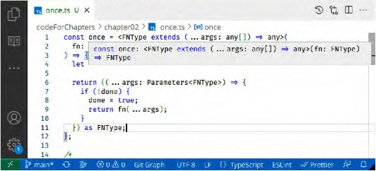
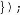

Write clean, robust, and maintainable web and server
code using functional JavaScript and TypeScript
FEDERICO KEREKI
Third Edition
Write clean, robust, and maintainable web and server code
using functional JavaScript and TypeScript
Federico Kereki
<packt>
BIRMINGHAM—MUMBAI
Mastering JavaScript Functional Programming
Third Edition
Copyright © 2023 Packt Publishing
All rights reserved. No part of this book may be reproduced, stored in a retrieval system, or transmitted in
any form or by any means, without the prior written permission of the publisher, except in the case of brief
quotations embedded in critical articles or reviews.
Every effort has been made in the preparation of this book to ensure the accuracy of the information
presented. However, the information contained in this book is sold without warranty, either express or
implied. Neither the author, nor Packt Publishing or its dealers and distributors, will be held liable for any
damages caused or alleged to have been caused directly or indirectly by this book.
Packt Publishing has endeavored to provide trademark information about all of the companies and products
mentioned in this book by the appropriate use of capitals. However, Packt Publishing cannot guarantee
the accuracy of this information.
Group Product Manager: Pavan Ramchandani
Publishing Product Manager: Bhavya Rao
Senior Editor: Mark D’Souza
Technical Editor: Joseph Aloocaran
Copy Editor: Safis Editing
Project Coordinator: Sonam Pandey
Proofreader: Safis Editing
Indexer: Rekha Nair
Production Designer: Shyam Sundar Korumilli
Marketing Coordinators: Namita Velgekar, Nivedita Pandey, and Anamika Singh
First published: November 2017
Second edition: January 2020
Third edition: May 2023
Production reference: 1040423
Published by Packt Publishing Ltd.
Livery Place
35 Livery Street
Birmingham
B3 2PB, UK.
ISBN 978-1-80461-013-8
Writing a book involves many people, and even if I cannot mention and name all of them, there are some
who really deserve to be highlighted.
At Packt Publishing, I want to thank Larissa Pinto, senior acquisition editor, for proposing the theme for
this book and helping me get started with it. Thanks must also go to Mohammed Yusuf Imaratwale, content
development editor, and Ralph Rosario, technical editor, for their help in giving shape to the book and
making it clearer and better structured. I also want to send my appreciation to the reviewers, Geronimo
Garcia Sgritta and Steve Perkins, who went through the initial draft, enhancing it with their comments.
There are some other people who deserve extra consideration. This book was written under unusual
circumstances, around 10,000 miles away from home! I had gone from Uruguay, where I live, to work
on a project in India, and that’s where I wrote every single page of the text. This would not have been
possible if I hadn’t had complete support from my family, who stayed in Montevideo, but who were
constantly nearby, thanks to the internet and modern communication. In particular, I must single out
my wife, Sylvia Tosar, not only for supporting and aiding me both with the project and the book but also
for dealing with everything and the rest of the family on her own in Uruguay—this book wouldn’t have
been possible otherwise, and she is the greatest reason the book could be written!
For the second edition: Revisiting and expanding a book for a second edition was an interesting task.
I had great support and must thank Aamir Ahmed, content development editor; Jane D’Souza, technical
editor; and Crystian Bietti and Steve Perkins (again, for double merit!), the reviewers who helped produce
a much better text.
For the third edition: Expanding the book for a third edition was, once more, a challenging task. In this
case, I had support from Bhavya Rao, publishing product manager; Mark D’Souza, senior editor; Joseph
Aloocaran, technical editor; and Anu Nagan and Markandey Pathak, reviewers, all of whom greatly
aided my work, aiming for an even higher quality final text.
- Federico Kereki
Federico Kereki is a Uruguayan systems engineer, with a masters degree in education, and over
30 years of experience as a consultant, system developer, and writer.
He is currently a subject matter expert at Globant, where he gets to use a good mixture of development
frameworks, programming tools, and operating systems. He is familiar with languages such as JavaScript
and TypeScript; modern backend runtime environments such as Node.js and Deno; frontend frameworks
such as React, Vue, and Angular; and services, microservices, and cloud components for systems
architecture.
He has taught several computer science courses at Universidad de la Republica, Universidad ORT
Uruguay, and Universidad de la Empresa. He has also written texts for these courses.
He has written articles and booklets on programming, web development, security, and open source
topics for blogs, magazines, and websites. He has also written several books, including Modern JavaScriptand the upcoming Data Structures and Algorithms in JavaScript.
Kereki has given talks on functional programming at public conferences (such as JSCONF 2016 and
Development Week Santiago 2019) and has used functional programming techniques to develop
internet systems for businesses in Uruguay and abroad.
His current interests tend toward software quality and software engineering - with Agile methodologies
topmost - while on the practical side, he works with diverse languages, tools, and frameworks, and
Free/Libre Open Source Software (FLOSS) wherever possible!
He resides, works, and teaches in Uruguay, but he wrote the first edition of this book while working
in India, and the second edition during a sojourn in Mexico; the third edition was the first actually
completed in his homeland!
Markandey Pathak is an accomplished full-stack developer and software architect with over 11 years
of experience. Currently, he works as an expert engineer and vice president with one of the biggest
financial firms. He has also worked with top firms such as Deloitte, PwC, and Sapient in the past.
In addition to his technical work, Markandey is also passionate about teaching coding to kids and
playing with robots in his spare time. He is an avid traveler and enjoys spending time in nature and
exploring new destinations with his wife and son whenever possible. Markandey s diverse interests
and impressive professional experience make him a well-rounded and highly respected member of
the software engineering community.
Anu Nagan G has worked in various corporate organizations, from a SaaS start-up (Gendeep) to
a mid-size organization (GAVS) and a Fortune 500 company (DXC). He has held various positions such
as technical product manager, full-stack product lead (Angular, Java, Python, and AWS), and delivery
lead in his 9+ years of tenure. He has experience in leading advanced AI and analytics product Cortex
AI (API automation), Salesforce CRM B2B automation, and mobile app development, and contributed
to various AIOps products such as ZIF, Gcare, and Gavel in the past. Currently, he is leading parallel
projects with Bounteous, which include data integration with the Braze marketing platform with
a custom middleware and digital experience transformation for Fintech customers using AEM. He
is an avid reader and cinephile who loves to play the guitar and make short films with his friends.
I would like to thank my wife, Hema, and my daughter, Chekhov, for always giving me the freedom to
pursue my interests.
Preface xiii
Becoming Functional - Several Questions 1
What is functional programming? 1
FP and other programming paradigms 3
2
Going functional with JavaScript 8
How do we work with JavaScript? 15
A step further - TypeScript 19
Thinking Functionally - A First Example 25
Our problem - doing something A functional solution to our problem 31
only once 25
Solution 1 - hoping for the best! 26
Solution 2 - using a global flag 27
Solution 3 - removing the handler 28
Solution 4 - changing the handler 29
Solution 5 - disabling the button 29
Solution 6 - redefining the handler 30
Solution 7 - using a local flag 30
Testing the solution manually 35
Testing the solution automatically 35
Producing an even better solution 37
viii Table of Contents
3
Starting Out with Functions - | A Core Concept | 41 | |
All about functions | 41 | Callbacks and promises | 60 |
Of lambdas and functions | 42 | Continuation-passing style | 61 |
Arrow functions - the modern way | 45 | Polyfills | 62 |
Functions as objects | 50 | Stubbing | 66 |
Using functions in FP ways | 56 | Immediate invocation (IIFE) | 67 |
Injection - sorting it out | 56 | Summary | 70 |
Questions | 71 | ||
4 | |||
Behaving Properly - Pure Functions | 73 | ||
Pure functions | 73 | Testing - pure versus impure | 97 |
Referential transparency | 74 | Testing pure functions | 97 |
Side effects | 76 | Testing purified functions | 99 |
Advantages of pure functions | 83 | Testing impure functions | 103 |
Impure functions | 88 | Summary | 107 |
Avoiding impure functions | 89 | Questions | 107 |
Is your function pure? | 95 | ||
Programming Declaratively - | A Better Style | 111 | |
Transformations | 112 | Checking negatives - none() | 144 |
Reducing an array to a value | 112 | Working with async functions | 145 |
Applying an operation - map() | 120 | Some strange behaviors | 146 |
Dealing with arrays of arrays | 127 | ||
Async-ready looping | 148 | ||
More general looping | 135 | ||
Logical HOFs | 137 | Working with parallel functions | 153 |
Unresponsive pages | 153 | ||
Filtering an array | 137 | ||
A frontend worker | 156 | ||
Searching an array | 140 | ||
A backend worker | 159 | ||
Higher-level predicates - every() and some() | 143 | ||
Table of Contents ix
Workers, FP style | 160 Summary | 165 |
Long-living pooled workers | 162 Questions | 166 |
Producing Functions - Higher-Order Functions 169
Wrapping functions - keeping
Changing functions in other ways 204
behavior | 169 |
Logging | 170 |
Timing functions | 180 |
Memoizing functions | 182 |
Altering a function’s behavior | 193 |
Doing things once, revisited | 193 |
Logically negating a function | 196 |
Inverting the results | 198 |
Arity changing | 200 |
Throttling and debouncing | 202 |
Turning operations into functions 205
Turning functions into promises 208
Getting a property from an object 210
Demethodizing - turning methods into
Methodizing - turning functions into methods 215
Finding the optimum 219
7
Transforming Functions - Currying and Partial Application 225
A bit of theory | 225 | Partial currying with bind() | 249 |
Currying | 226 | Partial currying with closures | 252 |
Dealing with many parameters | 227 | Final thoughts | 253 |
Currying by hand | 230 | Variable number of parameters | 254 |
Currying with bind() | 232 | Parameter order | 254 |
Partial application | 236 | Being functional | 256 |
Partial application with arrow functions | 237 | Summary | 257 |
Partial application with closures | 238 | Questions | 258 |
Partial currying | 247 |
Connecting Functions - Pipelining, Composition, and More 261
Pipelining 261 Piping in Unix/Linux 262
X Table of Contents
Revisiting an example | 263 | Transducing | 295 |
Creating pipelines | 265 | Composing reducers | 298 |
Debugging pipelines | 273 276 | Generalizing for all reducers | 300 |
Testing connected functions | 301 | ||
Chaining and fluent interfaces | 279 | Testing pipelined functions | 301 |
An example of fluent APIs | 279 | Testing composed functions | 304 |
Chaining method calls | 281 | Testing chained functions | 305 |
Composing | 284 | Testing transduced functions | 307 |
Some examples of composition | 285 | Summary | 309 |
Composing with higher-order functions | 289 | Questions | 309 |
Designing Functions - | Recursion | 313 | |
Using recursion | 313 | Recursion techniques | 348 |
Thinking recursively | 315 | Tail call optimization | 348 |
Higher-order functions revisited | 325 | Continuation-passing style | 351 |
Searching and backtracking | 333 | Trampolines and thunks | 356 |
Mutual recursion | 341 | Recursion elimination | 359 |
Odds and evens | 341 | Summary | 360 |
Doing arithmetic | 343 | Questions | 360 |
10
Going the straightforward | Creating persistent data structures | 396 | |
JavaScript way | 366 | Working with lists | 396 |
Mutator functions | 366 | Updating objects | 398 |
Constants | 367 | A final caveat | 404 |
Freezing | 368 | Summary | 404 |
Cloning and mutating | 371 | ||
Questions | 405 | ||
Getters and setters | 375 | ||
Lenses | 380 | ||
Prisms | 392 |
Ensuring Purity - Immutability 365
Table of Contents xi
Implementing Design Patterns | -The Functional Way | 409 | |
Understanding design patterns | 409 | Dependency Injection | 422 |
Design pattern categories | 410 | Observers and reactive programming | 425 |
Do we need design patterns? | 412 | Other patterns | 437 |
Object-oriented design patterns | 412 | Functional design patterns | 437 |
Facade and Adapter | 413 | Summary | 439 |
Decorator or Wrapper | 416 | Questions | 439 |
Strategy, Template, and Command | 420 | ||
12
Building Better Containers - | Functional Data Types | 443 | |
Specifying data types | 443 | Monads | 467 |
Signatures for functions | 444 447 | Functions as data structures Binary trees in Haskell | 476 477 |
Building containers | 449 | Functions as binary trees | 478 |
Extending current data types | 450 452 | Summary | 486 487 |
Answers to Questions | 491 | ||
Chapter 1, Becoming Functional - Several Questions | 491 | Chapter 7, Transforming Functions - Currying and Partial Application | 536 |
Chapter 2, Thinking Functionally - A First Example | 497 | Chapter 8, Connecting Functions - Pipelining, Composition, and More | : 541 |
Chapter 3, Starting Out with | 503 | Chapter 9, Designing Functions - Recursion | 544 |
Chapter 4, Behaving Properly - Pure Functions | 507 | Chapter 10, Ensuring Purity - Immutability | 554 |
Chapter 5, Programming | 514 | Chapter 11, Implementing Design | 562 |
Chapter 6, Producing Functions - Higher-Order Functions | 527 | Chapter 12, Building Better | 565 |
Bibliography | 577 |
Index | 579 |
Other Books You May Enjoy | 590 |
In computer programming, paradigms abound. Some examples include imperative programming,
structured (goto-less) programming, object-oriented programming (OOP), aspect-oriented
programming, and declarative programming. Lately, there has been renewed interest in a particular
paradigm that can arguably be considered to be older than most (if not all) of the cited ones—functionalFP emphasizes writing functions and connecting them in simple ways to produce
more understandable and more easily tested code. Thus, given the increased complexity of today’s web
applications, its logical that a safer, cleaner way of programming would be of interest.
This interest in FP comes hand in hand with the evolution of JavaScript. Despite its somewhat hasty
creation (reportedly achieved in only 10 days, in 1995, by Brendan Eich at Netscape), today, JavaScript
is a standardized and quickly growing language, with features more advanced than most other similarly
popular languages. The ubiquity of the language, which can now be found in browsers, servers, mobile
phones, and whatnot, has also impelled interest in better development strategies. Also, even if JavaScript
wasn’t conceived as a functional language, the fact is that it provides all the features you’d require to
work in that fashion, which is another plus.
That said, we must also comment on advances in the language and related tools. The benefits of data
typing are generally acknowledged, and in recent years, TypeScript has gained wide adoption and has
been used for both frontend and backend coding. It makes sense, then, to also include its usage in this
book. This, we feel, will make the examples clearer, and also simplify the adoption of the presented
code for “real-life” jobs.
It must also be said that FP hasn’t been generally applied in industry, possibly because it has a certain
aura of difficulty, and it is thought to be theoretical rather than practical, even mathematical, and
possibly uses vocabulary and concepts that are foreign to developers—for example, functors, monads,
folding, and category theory. While learning all this theory will certainly be of help, it can also be
argued that even with zero knowledge of the previous terms, you can understand the tenets of FP, and
see how to apply it to your own programming.
FP is not something that you have to do on your own, without any help. There are many libraries and
frameworks that incorporate, to greater or lesser degrees, the concepts of FP. Starting with jQuery
(which does include some FP concepts), passing through Underscore and its close relative, Lodash,
and other libraries such as Ramda, and getting to more complete web development tools such as React
and Redux, Angular, and Elm (a 100% functional language, which compiles into JavaScript), the list
of functional aids for your coding is ever growing.
Learning how to use FP can be a worthwhile investment, and even though you may not get to use all
of its methods and techniques, just starting to apply some of them will pay dividends in better code.
You need not try to apply all the concepts of FP from the start, and you need not try to abandon every
non-functional feature in JavaScript either. JavaScript assuredly has some bad features, but it also has
xiv Preface
several very good and powerful ones. The idea is not to throw away everything you’ve learned and use
and adopt a 100% functional way; rather, the guiding idea is evolution, not revolution. In that sense,
it can be said that what we’ll be doing is not FP, but rather Sorta Functional Programming (SFP),aiming for a fusion of paradigms.
A final comment about the style of the code in this book—it is quite true that there are several very
good libraries that provide you with FP tools: Underscore, Lodash, and Ramda are counted among
them. However, I preferred to eschew their usage because I wanted to show how things really work.
It’s easy to apply a given function from some package or the other, but by coding everything out
(vanilla FP, if you wish), it’s my belief that you get to understand things more deeply. Also, as I will
comment in some places, because of the power and clarity of arrow functions and other features, the
pure JavaScript versions can be even simpler to understand!
This book is geared toward programmers with a good working knowledge of JavaScript (or, better yet,
TypeScript) working either on the client side (browsers) or the server side (Node.js), who are interested
in applying techniques to be able to write better, testable, understandable, and maintainable code. Some
background in computer science (including, for example, data structures) and good programming
practices will also come in handy. In this book, we’ll cover FP in a practical way, though, at times, we
will mention some theoretical points.
Chapter 1, Becoming Functional - Several Questions, discusses FP, gives reasons for its usage, and lists
the tools that you’ll need to take advantage of the rest of the book.
Chapter 2, Thinking Functionally - A First Example, will provide the first example of FP by considering a
common web-related problem and going over several solutions, to finally focus on a functional solution.
Chapter 3, Starting Out with Functions - A Core Concept, will go over the central concept of FP, that
is, functions, and the different options available in JavaScript.
Chapter 4, Behaving Properly - Pure Functions, will consider the concept of purity and pure functions,
and demonstrate how it leads to simpler coding and easier testing.
Chapter 5, Programming Declaratively - A Better Style, will use simple data structures to show how to
produce results that work not in an imperative way, but in a declarative fashion.
Chapter 6, Producing Functions - Higher-Order Functions, will deal with higher-order functions, which
receive other functions as parameters and produce new functions as results.
Chapter 7, Transforming Functions - Currying and Partial Application, will explore some methods for
producing new and specialized functions from earlier ones.
Preface xv
Chapter 8, Connecting Functions - Pipelining, Composition, and More, will show the key concepts
regarding how to build new functions by joining previously defined ones.
Chapter 9, Designing Functions - Recursion, will look at how a key concept in FP, recursion, can be
applied to designing algorithms and functions.
Chapter 10, Ensuring Purity - Immutability, will present some tools that can help you to work in a
pure fashion by providing immutable objects and data structures.
Chapter 11, Implementing Design Patterns - The Functional Way, will show how several popular OOP
design patterns are implemented (or not needed!) when you program in FP ways.
Chapter 12, Building Better Containers - Functional Data Types, will explore some more high-level
functional patterns, introducing types, containers, functors, monads, and several other more advanced
FP concepts.
I have tried to keep the examples in this book simple and down to earth because I want to focus on
the functional aspects and not on the intricacies of this or that problem. Some programming texts
are geared toward learning, say, a given framework, and then working on a given problem, showing
how to fully work it out with the chosen tools.
In fact, in the very early stages of planning for this book, I entertained the idea of developing an
application that would use all the FP things I had in mind, but there was no way to fit all of that within
a single project. Exaggerating a bit, I felt like an MD trying to find a patient on whom to apply all of his
medical knowledge and treatments! So, I opted to show plenty of individual techniques, which can be
used in multiple situations. Rather than building a house, I want to show you how to put bricks together,
how to wire things up, and so on, so that you will be able to apply whatever you need as you see fit.
To get the most out of this book
To understand the concepts and code in this book, you don’t need much more than a JavaScript
environment and a text editor. To be honest, I even developed some of the examples working fully
online, with tools such as JSFiddle (at j sf iddle . net) and the like, and absolutely nothing else.
In this book, we’ll be using ES2022 and Node 19, and the code will run on any OS, such as Linux,
macOS, or Windows.
You will need some experience with the latest version of JavaScript because it includes several features
that can help you write more concise and compact code. We will frequently include pointers to online
documentation, such as the documentation available on the Mozilla Development Network (MDN)at developer . mozilla . org, to help you get more in-depth knowledge.
We’ll also be using the latest version of TypeScript, to add data typing to our JavaScript code. For
more on the language, the must-read reference is www. typescriptlang. org, where you’ll find
documentation, tutorials, and even an online playground to directly test code there.
xvi Preface
Download the example code files
You can download the example code files for this book from GitHub at github . com/
PacktPublishing/Mastering-JavaScript-Functional- Programming-3E. If
there’s an update to the code, it will be updated in the GitHub repository.
We also have other code bundles from our rich catalog of books and videos available at github .
com/PacktPublishing/. Check them out!
Conventions used
There are a number of text conventions used throughout this book.
Code in text: Indicates code words in text, database table names, folder names, filenames, file
extensions, pathnames, dummy URLs, user input, and Twitter handles. Here is an example: “There
are several possible results: a single value with the reduce () operation, a new array with map (),
or just about any kind of result with f orEach ().”
A block of code is set as follows:
// reverse.ts
const reversestring = (str: string): string => {
const arr = str.split("");
arr.reverse();
return arr.join("");
};
console.log(reversestring("MONTEVIDEO")); // OEDIVETNOM
When we wish to draw your attention to a particular part of a code block, the relevant lines or items
are set in bold:
// continued...
const reverseString2 = (str: string): string =>
Preface xvii
str.splitreduceRight((x, y) => x + y,
console.log(reverseString2("OEDIVETNOM")); // MONTEVIDEO
Any command-line input or output is written as follows:
START MAP
2022-10-29T01:47:06.726Z [ 10, 20, 30, 40 ]
END MAP
Bold: Indicates a new term, an important word, or words that you see onscreen.
Tips or important notes
Appear like this.
Feedback from our readers is always welcome.
General feedback: If you have questions about any aspect of this book, email us at customercare©
packtpub . com and mention the book title in the subject of your message.
Errata: Although we have taken every care to ensure the accuracy of our content, mistakes do happen.
If you have found a mistake in this book, we would be grateful if you would report this to us. Please
visit www. packtpub. com/support/errata and fill in the form.
Piracy: If you come across any illegal copies of our works in any form on the internet, we would
be grateful if you would provide us with the location address or website name. Please contact us at
copyright@packt. com with a link to the material.
If you are interested in becoming an author: If there is a topic that you have expertise in and you
are interested in either writing or contributing to a book, please visit authors . packtpub. com.
xviii | Preface |
Share Your Thoughts Once you’ve read Mastering JavaScript Functional Programming - Third Edition, we’d love to hear Your review is important to us and the tech community and will help us make sure we’re delivering |
Preface xix
Download a free PDF copy of this book
Thanks for purchasing this book!
Do you like to read on the go but are unable to carry your print books everywhere? Is your eBook
purchase not compatible with the device of your choice?
Don’t worry, now with every Packt book you get a DRM-free PDF version of that book at no cost.
Read anywhere, any place, on any device. Search, copy, and paste code from your favorite technical
books directly into your application.
The perks don’t stop there, you can get exclusive access to discounts, newsletters, and great free content
in your inbox daily
Follow these simple steps to get the benefits:
Scan the QR code or visit the link below
https://packt.link/free-ebook/9781804610138
Submit your proof of purchase
That’s it! We’ll send your free PDF and other benefits to your email directly
Functional programming (or FP) has been around since the earliest days of computing and is going
through a sort of revival because of its increased use with several frameworks and libraries, most
particularly in JavaScript.
In this chapter, we shall do the following:
Introduce some concepts of FP to give a small taste of what it means
Show the benefits (and problems) implied by the usage of FP and why we should use it
Start thinking about why JavaScript can be considered an appropriate language for FP
Go over the language features and tools that you should be aware of to fully take advantage of
everything in this book
By the end of this chapter, you’ll have the basic tools that we’ll be using throughout this book, so let’s
get started by learning about FP.
What is functional programming?
If you go back in computer history, you’ll find that the second oldest programming language still in
use, Lisp, is based on FP. Since then, there have been many more functional languages, and FP has
been applied more widely. But even so, if you ask people what FP is, you’ll probably get two widely
dissimilar answers.
For trivia or history buffs, the oldest programming language still in use is Fortran, which
appeared in 1957, a year before Lisp. Quite shortly after Lisp came another long-lived language,
COBOL, for business-oriented programming.
2 Becoming Functional - Several Questions
Depending on whom you ask, you’ll either learn that it’s a modern, advanced, enlightened approach
to programming that leaves every other paradigm behind or that it’s mainly a theoretical thing, with
more complications than benefits, that’s practically impossible to implement in the real world. And,
as usual, the real answer is not in the extremes, but somewhere in between. Let’s start by looking at
the theory versus practice and see how we plan to use FP.
In this book, we won’t be going about FP in a theoretical way. Instead, our point is to show you
how some of its techniques and tenets can be successfully applied to common, everyday JavaScript
programming. But - and this is important - we won’t be going about this dogmatically, but in a very
practical way. We won’t dismiss useful JavaScript constructs simply because they don’t happen to
fulfill the academic expectations of FP. Similarly, we won’t avoid practical JavaScript features just to
fit the FP paradigm. We could almost say that we’ll be doing Sorta Functional Programming (SFP)because our code will be a mixture of FP features, more classical imperative ones, and object-oriented
Be careful, though: what we just said doesn’t mean that we’ll be leaving all the theory by the side. We’ll
be picky, and just touch the main theoretical points, learn some vocabulary and definitions, and explain
core FP concepts, but we’ll always be keeping in sight the idea of producing actual, useful JavaScript
code, rather than trying to meet some mystical, dogmatic FP criteria.
OOP has been a way to solve the inherent complexity of writing large programs and systems, and
developing clean, extensible, scalable application architectures; however, because of the scale of today’s
web applications, the complexity of all code bases is continuously growing. Also, the newer features
of JavaScript make it possible to develop applications that wouldn’t even have been possible just a few
years ago; think of mobile (hybrid) apps that are made with Ionic, Apache Cordova, or React Native or
desktop apps that are made with Electron, Tauri, or NW.js, for example. JavaScript has also migrated
to the backend with Node.js or Deno, so today, the scope of usage for the language has grown in
a serious way that deals with all the added complexity of modern designs.
FP is a different way of writing programs and can sometimes be difficult to learn. In most languages,
programming is done imperatively: a program is a sequence of statements, executed in a prescribed
fashion, and the desired result is achieved by creating objects and manipulating them, which usually
means modifying the objects themselves. FP is based on producing the desired result by evaluating
expressions built out of functions that are composed together. In FP, it’s common to pass functions
around (such as passing parameters to other functions or returning functions as the result of
a calculation), not use loops (opting for recursion instead), and skip side effects (such as modifying
objects or global variables).
In other words, FP focuses on what should be done, rather than on how it should be done. Instead of
worrying about loops or arrays, you work at a higher level, considering what needs to be done. After
What is functional programming? 3
becoming accustomed to this style, you’ll find that your code becomes simpler, shorter, and more
elegant, and can be easily tested and debugged. However, don’t fall into the trap of considering FP as
the goal! Think of FP only as a means to an end, as with all software tools. Functional code isn’t good
just for being functional, and writing bad code is just as possible with FP as with any other technique!
FP and other programming paradigms
Programming paradigms classify programming languages according to their features. However, some
languages may be classified into multiple paradigms - as is the case of JavaScript itself!
A primary division is imperative versus declarative languages. In the former, developers must instruct
the machine on how to do its work, step by step. Programming may be procedural (if instructions are
grouped into procedures) or object-oriented (if instructions are grouped with a related state).
In declarative languages, in opposition, developers just declare properties that the sought result must
satisfy, but not how to calculate it. Declarative languages may be logic-based (based on logic rules and
constraints), reactive (based on data and event streams), or functional (based on the application and
combination of functions). In a sense, we could say that imperative languages focus on how, while
declarative languages focus on what.
JavaScript is multi-paradigm: it’s imperative (both procedural and object-oriented) but also allows
declarative programming, both functional (like almost everything in this book! In particular, we
will devote Chapter 5, Programming Declaratively, to this topic) and reactive (we’ll see reactive FP in
Chapter 11, Implementing Design Patterns).
Just to give you a basic example of the difference between imperative and declarative ways of solving a
problem, let’s solve a simple problem: assume you have an array of personal data of people, as follows:
// imperative.js
const data = [
{ name: "John", age: 23, other: "xxx" },
{ name: "Paul", age: 18, other: "yyy" },
{ name: "George", age: 16, other: "zzz"
{ name: "Ringo", age: 25, other: "ttt" }
Imagine you want to extract the data for adults (at least 21 years old). Imperatively, you would do
something like the following:
// continued...
const resultl = 11 ;
4 Becoming Functional - Several Questions
for (let i = 0; i < data.length; i++) {
if (data[i].age >= 21) {
resultl.push(data[i] ) ;
}
}
You have to initialize the output array (resultl) for the selected people. Then, you must specify a
loop, saying how the index variable (i) is to be initialized, tested, and updated. On each pass of the
loop, you check the corresponding persons age, and if the person is an adult, you push the data to
the output array. In other terms, you specify, step by step, everything that the code will have to do.
Working declaratively, you’d rather write something like this:
// declarative.js
const isAdult = (person) => person.age >= 21;
const result2 = data.filter(isAdult);
The first line declares how to test if a person is an adult; the second line says that the result is the result
of filtering the data array, picking those elements that satisfy the given predicate. (For isAdult (),
we’re using an arrow function; we’ll see more on that in the Arrow functions section, later in this
chapter.) You don’t have to initialize the output array, specify how to loop, or ensure that your array
index doesn’t go beyond the array’s length, and so on - all those details are taken care of by the
language, so you don’t need to.
Reading and understanding the imperative version requires knowledge of both the programming
language and algorithms or techniques for looping; the declarative version is shorter to write, easier
to maintain, and much more readable.
What FP is not
Since we’ve been talking quite a bit about what FP is, let’s also clear up some common misconceptions,
and look at what FP is not:
FP isn’t just an academic ivory tower thing: The lambda calculus upon which it is based was
developed by Alonzo Church in 1936 as a tool to prove an important result in theoretical
computer science (which preceded modern computer languages by more than 20 years!);
however, FP languages are being used today for all kinds of systems.
FP isn’t the opposite of OOP: It isn’t a case of choosing declarative or imperative ways of
programming. You can mix and match as best suits you, and we’ll be doing this throughout
this book, bringing together the best of all worlds.
Why use FP? 5
FP isn’t overly complex to learn: Some of the FP languages are rather different from JavaScript,
but the differences are mostly syntactic. Once you learn the basic concepts, you’ll see that you
can get the same results in JavaScript as with FP languages.
It may also be relevant to mention that several modern frameworks, such as the React and Redux
combination, include FP ideas.
For example, in React, it’s said that the view (whatever the user gets to see at a given moment) is a
function of the current state. You use a function to compute what HTML and CSS must be produced
at each moment, thinking in a black-box fashion.
Similarly, in Redux, you have the concept of actions that are processed by reducers. An action provides
some data, and a reducer is a function that produces the new state for the application in a functional
way out of the current state and the provided data.
So, both because of the theoretical advantages (we’ll be getting to those in the following section)
and the practical ones (such as getting to use the latest frameworks and libraries), it makes sense to
consider FP coding. Let’s get on with it.
Throughout the years, there have been many programming styles and fads. However, FP has proven
quite resilient and is of great interest today. Why would you want to use FP? Rather, the first question
to ask should be, what do you need? And only then, does FP get you that? We’ll answer these important
questions in the following sections.
We can certainly agree that the following list of concerns is universal. Our code should have the
following qualities:
Modular: The functionality of your program should be divided into independent modules,
each of which contains a part of the solution. Changes in a module or function shouldn’t affect
the rest of the code.
Understandable: A reader of your program should be able to discern its components, functions,
and relationships without undue effort. This is closely linked with the maintainability of the
code; your code will have to be maintained in the future, whether to be changed or to have
new functionality added.
Testable: Unit tests try out small parts of your program, verifying their behavior independently
of the rest of the code. Your programming style should favor writing code that simplifies the
job of writing unit tests. Unit tests are also like documentation in that they can help readers
understand what the code is supposed to do.
6 Becoming Functional - Several Questions
Extensible: It’s a fact that your program will someday require maintenance, possibly to add new
functionality. Those changes should impact the structure and data flow of the original code
only minimally (if at all). Small changes shouldn’t imply large, serious refactoring of your code.
Reusable: Code reuse has the goal of saving resources, time, and money, and reducing redundancy
by taking advantage of previously written code. Some characteristics help with this goal, such as
modularity (which we already mentioned), high cohesion (all the pieces in a module belong
together), low coupling (modules are independent of each other), separation of concerns
(the parts of a program should overlap in functionality as little as possible), and information
hiding (internal changes in a module shouldn’t affect the rest of the system).
So, does FP give you the five characteristics we just listed in the previous section?
In FP, the goal is to write separate independent functions that are joined together to produce
the final results.
Programs that are written in a functional style usually tend to be cleaner, shorter, and easier
to understand.
Functions can be tested on their own, and FP code has advantages in achieving this.
You can reuse functions in other programs because they stand on their own, not depending on
the rest of the system. Most functional programs share common functions, several of which
we’ll be considering in this book.
Functional code is free from side effects, which means you can understand the objective of a
function by studying it without having to consider the rest of the program.
Finally, once you get used to the FP style of programming, code becomes more understandable and
easier to extend. So, it seems that all five characteristics can be achieved with FP!
For a well-balanced look at the reasons to use FP, I’d suggest reading Why Functional ProgrammingMatters, by John Hughes; it’s available online at www.es .kent. ac . uk/people/staf f /
dat/miranda/whyfp90 . pdf. It’s not geared toward JavaScript, but the arguments are
easily understandable.
However, let’s strive for a bit of balance. Using FP isn’t a silver bullet that will automagically make
your code better. Some FP solutions are tricky, and some developers greatly enjoy writing code and
then asking, what does this do? If you aren’t careful, your code may become write-only and practically
impossible to maintain; there goes understandable, extensible, and reusable out the door!
Is JavaScript functional? 7
Another disadvantage is that you may find it harder to find FP-sawy developers. (Quick question:
how many FP-sought job ads have you ever seen?) The vast majority of today’s web code is written in
imperative, non-functional ways, and most coders are used to that way of working. For some, having
to switch gears and start writing programs differently may prove an unpassable barrier.
Finally, if you try to go fully functional, you may find yourself at odds with JavaScript, and simple
tasks may become hard to do. As we said at the beginning, we’ll opt for SFP, so we won’t be drastically
rejecting any language features that aren’t 100% functional. After all, we want to use FP to simplify
our coding, not to make it more complex!
So, while I’ll strive to show you the advantages of going functional in your code, as with any change,
there will always be some difficulties. However, I’m fully convinced that you’ll be able to surmount
them and that your organization will develop better code by applying FP. Dare to change! So, given
that you accept that FP may apply to your problems, let’s consider the other question: can we use
JavaScript in a functional way and is it appropriate?
At about this time, there is another important question that you should be asking: is JavaScript aUsually, when thinking about FP, the list of languages that are mentioned does
not include JavaScript, but does include less common options, such as Clojure, Erlang, Haskell, and
Scala; however, there is no precise definition for FP languages or a precise set of features that such
languages should include. The main point is that you can consider a language to be functional if it
supports the common programming style associated with FP. Let’s start by learning about why we
would want to use JavaScript at all and how the language has evolved to its current version, and then
see some of the key features that we’ll be using to work in a functional way.
What is JavaScript? If you consider popularity indices, such as the ones at www. tiobe . com/
tiobe-index/ or pypl. github . io/PYPL . html, you’ll find that JavaScript is consistently
in the top 10 most popular languages. From a more academic point of view, the language is sort of
a mixture, borrowing features from several different languages. Several libraries helped the growth
of the language by providing features that weren’t so easily available, such as classes and inheritance
(today’s version of the language does support classes, but that was not the case not too long ago), that
otherwise had to be achieved by doing some prototype tricks.
The name JavaScript was chosen to take advantage of the popularity of Java - just as a marketing
ploy! Its first name was Mocha, then, LiveScript, and only then JavaScript.
8 Becoming Functional - Several Questions
JavaScript has grown to be incredibly powerful. But, as with all power tools, it gives you a way to not
only produce great solutions but also to do great harm. FP could be considered as a way to reduce
or leave aside some of the worst parts of the language and focus on working in a safer, better way;
however, due to the immense amount of existing JavaScript code, you cannot expect it to facilitate
large reworkings of the language that would cause most sites to fail. You must learn to live with the
good and the bad, and simply avoid the latter part.
In addition, the language has a broad variety of available libraries that complete or extend the language
in many ways. In this book, we’ll be focusing on using JavaScript on its own, but we will make references
to existing, available code.
If we ask whether JavaScript is functional, the answer will be, once again, “sorta”. It can be seen as
functional because of several features, such as first-class functions, anonymous functions, recursion,
and closures - we’ll get back to this later. On the other hand, it also has plenty of non-FP aspects, such
as side effects (impurity), mutable objects, and practical limits to recursion. So, when programming in
a functional way, we’ll be taking advantage of all the relevant, appropriate language features, and we’ll
try to minimize the problems caused by the more conventional parts of the language. In this sense,
JavaScript will or won’t be functional, depending on your programming style!
If you want to use FP, you should decide which language to use; however, opting for fully functional
languages may not be so wise. Today, developing code isn’t as simple as just using a language; you
will surely require frameworks, libraries, and other sundry tools. If we can take advantage of all the
provided tools but at the same time introduce FP ways of working in our code, we’ll be getting the
best of both worlds, regardless of whether JavaScript is functional!
Going functional with JavaScript
JavaScript has evolved through the years, and the version we’ll be using is (informally) called JS13,
and (formally) ECMAScript 2022, usually shortened to ES2022 or ESI3; this version was finalized in
June 2022. The previous versions were as follows:
ECMAScript 1, June 1997
ECMAScript 2, June 1998, which was the same as the previous version, ECMAScript 3, December
1999, with several new functionalities
ECMAScript 5, December 2009 (and no, there never was an ECMAScript 4, because it
was abandoned)
ECMAScript 5.1, June 2011
ECMAScript 6 (or ES6; later renamed ES2015), June 2015 ECMAScript 7 (also ES7, or ES2016),
June 2016 ECMAScript 8 (ES8 or ES2017), June 2017
ECMAScript 9 (ES9 or ES2018), June 2018
ECMAScript 10 (ES10 or ES2019), June 2019
Is JavaScript functional? 9
ECMAScript 11 (ES11 or ES2020), June 2020
ECMAScript 12 (ES12 or ES2021), June 2021
ECMA originally stood for European Computer Manufacturers Association, but nowadays,
the name isn’t considered an acronym anymore. The organization is responsible for standards
other than JavaScript as well, including JSON, C#, Dart, and others. For more details, go to its
site at www. ecma- international. org/.
You can read the standard language specification at www . ecma- international. org/
publications-and-standards/ standards/ ecma-2 62/. Whenever we refer to JavaScript
in the text without further specification, ESI3 (ES2022) is what is being referred to; however, in terms
of the language features that are used in this book, if you were just to use ES2015, then you’d mostly
have no problems with this book.
No browsers fully implement ES13; most provide an older version, JavaScript 5 (from 2009), with an
(always growing) smattering of features from ES6 up to ES13. This will prove to be a problem, but
fortunately, a solvable one; we’ll get to this shortly. We’ll be using ESI3 throughout this book.
There are only a few differences between ES2016 and ES2015, such as the Array. prototype.
includes method and the exponentiation operator, **. There are more differences between
ES2017 and ES20f6 - such as async and await, some string padding functions, and more -
but they won’t impact our code. We will also be looking at alternatives for even more modern
additions, such as f latMap (), in later chapters.
As we are going to work with JavaScript, let’s start by considering its most important features that
pertain to our FP goals.
JavaScript isn’t a purely functional language, but it has all the features that we need for it to work as
if it were. The main features of the language that we will be using are as follows:
Functions as first-class objects
Recursion
Closures
Arrow functions
Spread
10 Becoming Functional - Several Questions
Lets see some examples of each one and find out why they will be useful to us. Keep in mind, though,
that there are more features of JavaScript that we will be using; the upcoming sections just highlight
the most important features in terms of what we will be using for FP.
Functions as first-class objects
Saying that functions are first-class objects (also called first-class entities or first-class citizens)means that you can do everything with functions that you can do with other objects. For example, you
can store a function in a variable, you can pass it to a function, you can print it out, and so on. This
is really the key to doing FP; we will often be passing functions as parameters (to other functions) or
returning a function as the result of a function call.
If you have been doing async Ajax calls, then you have already been using this feature: a callback is
a function that will be called after the Ajax call finishes and is passed as a parameter. Using jQuery,
you could write something like the following:
$.get("some/url", someData, function(result, status) {
// check status, and do something
// with the result
});
The $ . get () function receives a callback function as a parameter and calls it after the result is obtained.
This is better solved, in a more modern way, by using promises or async/await, but for
the sake of our example, the old way is enough. We’ll be getting back to promises, though,
in Chapter 12, Building Better Containers, when we discuss monads; in particular, see the
Unexpected monads - promises section.
Since functions can be stored in variables, you could also write something like the following. Pay
attention to how we use the doSomething variable in the $ . get (...) call:
var doSomething = function(result, status) {
// check status, and do something
// with the result
$.get("some/url", someData, doSomething);
Well be seeing more examples of this in Chapter 6, Producing Functions.
Is JavaScript functional? 11
Recursion
Recursion is the most potent tool for developing algorithms and a great aid for solving large classes
of problems. The idea is that a function can, at a certain point, call itself and, when that call is done,
continue working with whatever result it has received. This is usually quite helpful for certain classes
of problems or definitions. The most often quoted example is the factorial function (the factorial of
n is written as n/), as defined for nonnegative integer values:
If n is 0, then n\ = 1
If n is greater than 0, then nl = n * (n-1)!
The value of n! is the number of ways that you can arrange n different elements in a row. For
example, if you want to place five books in line, you can pick any of the five for the first place,
and then order the other four in every possible way, so 5! = 5*4!. To order those four, you can
pick any of them for the first place, and then order the other three in every way, so 4! = 4*3!. If
you continue to work on this example, you’ll end up with 5! = 5*4*3*2*1=120, and in general,
n! is the product of all numbers up to n.
This can be immediately turned into code:
// factorial.js
function fact(n) {
if (n === 0) {
return 1;
} else {
return n * fact(n - 1);
console.log(fact(5)); // 120
Recursion will be a great aid for designing algorithms. By using recursion, you could do without any
whi 1 e or f or loops - not that we want to do that, but it’s interesting that we can! We’ll be devoting the
entirety of Chapter 9, Designing Functions, to designing algorithms and writing functions recursively.
12 Becoming Functional - Several Questions
Closures
Closures are a way to implement data hiding (with private variables), which leads to modules and
other nice features. The key concept of closures is that when you define a function, it can refer to not
only its local variables but also to everything outside of the context of the function. We can write a
counting function that will keep its count using a closure:
// closure.js
function newCounterO {
let count = 0;
return function () {
count++;
return count;
};
}
const nc = newCounterO;
console.log(nc()); | // | 1 |
console.log(nc()); | // | 2 |
console.log(nc()); // 3 |
Even after newCounter () exits, the inner function still has access to count, but that variable is
not accessible to any other parts of your code.
This isn’t a very good example of FP - a function (nc (), in this case) isn’t expected to return different
results when called with the same parameters!
Well find several uses for closures, such as memoization (see Chapter 4, Behaving Properly, and
Chapter 6, Producing Functions') and the module pattern (see Chapter 3, Starting Out with Functions,and Chapter 11, Implementing Design Patterns), among others.
Arrow functions
Arrow functions are just a shorter, more succinct way of creating an (unnamed) function. Arrow
functions can be used almost everywhere a classical function can be used, except that they cannot be
used as constructors. The syntax is either (parameter, anotherparameter, ...etc) =>
{ statements }or (parameter, anotherparameter, ...etc) => expression.
The first allows you to write as much code as you want, while the second is short for { return
expression }.
Is JavaScript functional? 13
We could rewrite our earlier Ajax example as follows:
$.get("some/url", data, (result, status) => {
// check status, and do something
// with the result
});
A new version of the factorial code could be like the following code - the only difference is the usage
of an arrow function:
// factorial.js, continued...
const fact2 = (n) => {
if (n === 0) {
return 1;
} else {
return n * fact2(n - 1);
Arrow functions are usually called anonymous functions because of their lack of a name. If
you need to refer to an arrow function, you’ll have to assign it to a variable or object attribute,
as we did here; otherwise, you won’t be able to use it. We’ll learn more about this in the Arrowsection of Chapter 3, Starting Out with Functions.
You would probably write f act2 () as a one-liner - can you see the equivalence to our earlier code?
Using a ternary operator instead of i f is quite common:
11 continued...
const fact3 = (n) => (n === 0 ? 1 : n * fact3(n - 1));
With this shorter form, you don’t have to write return - it’s implied.
14 Becoming Functional - Several Questions
In lambda calculus, a function such as x => 2*x would be represented as Xx.2*x. Although there
are syntactical differences, the definitions are analogous. Functions with more parameters are
a bit more complicated; (x,y)=>x+y would be expressed as Xx.Xy.x+y. We’ll learn more about
this in the Of lambdas and functions section of Chapter 3, Starting Out with Functions, and in
the Currying section of Chapter 7, Transforming Functions.
There’s one other small thing to bear in mind: when the arrow function has a single parameter, you can
omit the parentheses around it. I usually prefer leaving them, but I’ve applied a JavaScript beautifier,
Prettier, to the code, which removes them. It’s really up to you whether to include them or not! (For
more on this tool, check out github . com/pret tier/prettier.) By the way, my options for
formatting were --print-width 75 -- tab-width 2 --no-bracket-spacing.
Spread
The spread . . . operator (see developer. mozilla . org/en/docs/Web/JavaScript/
Ref erence/Operators/Spread_operator) lets you expand an expression in places where
you would otherwise require multiple arguments, elements, or variables. For example, you can replace
arguments in a function call, as shown in the following code:
// sum3.js
function sum3(a, b, c)
return a + b + c;
const x = [1, 2, 3] ;
const y = sum3(...x); // equivalent to sum3(1,2,3)
You can also create or join arrays, as shown in the following code:
// continued...
const f = [1, 2, 3] ;
const g = [4, ...f, 5]; // [4,1,2,3,5]
const h = [...f, ...g]; // [1,2,3,4,1,2,3,5]
It works with objects too:
// continued...
const p = { some: 3, data: 5 };
const q = { more: 8, ...p }; // { more:8, some:3, data:5 }
How do we work with JavaScript? 15
You can also use it to work with functions that expect separate parameters instead of an array. Common
examples of this would be Math. min () and Math. max ():
// continued...
const numbers = [2, 2, 9, 6, 0, 1, 2, 4, 5, 6] ;
const minA = Math.min(. numbers); // 0
const maxArray = (arr) => Math.max(. arr);
const maxA = maxArray(numbers); // 9
We are specifying that maxArray () shall receive an array of numbers as an argument.
You can also write the following equality since the . apply () method requires an array of arguments,
but .call () expects individual arguments, which you can get by spreading:
someFn.apply(thisArg, arr) === someFn.call(thisArg, arr)
If you have problems remembering what arguments are required by . apply () and .call (),
this mnemonic may help: A is for Array, and C is for Comma. See developer. mozilla. org/
en-US/docs/Web/JavaScript/Reference/Global_Objects/Function/apply
and developer.mozilla.org/en-US/docs/Web/JavaScript/Reference/
Global_Obj ects/Function/call for more information.
Using the spread operator helps with writing shorter, more concise code, and we will be taking
advantage of it. We have seen all of the most important JavaScript features that we will be using. Let’s
round off this chapter by looking at some tools that we’ll be working with.
How do we work with JavaScript?
This is all well and good, but as we mentioned before, it so happens that the JavaScript version available
almost everywhere isn’t ES13, but rather the earlier JS5. An exception to this is Node.js. It is based on
Chrome’s V8 high-performance JavaScript engine, which already has several ES13 features available.
Nonetheless, at the time of writing, ES13 coverage isn’t 100% complete, and there are features that
you will miss. (Check out node j s . org/en/docs/es6/ for more on Node.js and v8.) This is
surely changing since Internet Explorer is fading away (support for it ended in June 2022), having
been replaced with Microsoft’s Edge browser, which shares Chrome’s engine. In any case, we must
still deal with older, less powerful engines.
16 Becoming Functional - Several Questions
If you want to be sure of your choices before using any given new feature, check out the compatibility
table at kangax. github .io/compat - table/ es6/ (see Figure 1.1):
“ ECMAScript2016+compatit: x +
0 C □ A Not secure | http://kangax.githLb.io/coiTipat-table/es2Cll6plus/
inti non-standard compatibility table
0 * Q =
Sort by | Engine types v Show obsolete platforms □
Show unstable platforms □
V8 La Spider Monkey ■javaScriptCore H Chakra Other
Minor difference (1 point) . Small feature [2 points) Medium feature (4- points)
Large feature (8 points)
Compilers/polyfills Desktop browsers
74* 50% 5 19b 5* 1* 98% 100% 100% 99% 99% 89% 92% 96% 9691]
Feature name
2015 features
exponentiation (**) operator £3
Array, prototype.includ es £2
2016 misc
generator functions can't be used with "new" £2
Current Babel 7
browser
,GS.r&-jS..3
Closure y,,< es7
2022.07 * shim
rc»e |S 1
102
ESR
Edge
1.95
SF15 SF15.2 SF15.4 SF16
generator throwp caught by inner generator □
strict fn non is error
Vee
nested rest.destructuring, declarations! Q [12]
nested rest ।destructuring, parameters^1
Proxy, "enumerate" handler removed □ 14]
Proxy irnal XallS..Array..prototype. includes
2017 features
Object static methods
- String padding
trailing commas in function syntax £3
async functions D
shared memory and atomics
2017 misc
RegExp "u” flag, case folding
arguments-caller removed £3
2017 annex b
Figure 1.1 - The latest JavaScript features may not be widely and fully
supported, so you'll have to check before using them
For Node.js specifically, check out node . green/, which takes its data from the Kangax table; see
Figure 1.2:
How do we work with JavaScript? 17
Z Node.js ES2OI5/ES6, ES20I6
Figure 1.2 - Compatibility table specifically for Node.js
So, what can you do if you want to code using the latest version, but the available one is an earlier,
poorer one? Or what happens if most of your users are using older browsers, which don’t support the
fancy features you’re keen on using? Let’s see some solutions for this.
To get out of this availability and compatibility problem, there are a couple of transpilers that you can
use. Transpilers take your original ESI3 code, which might use the most modern JavaScript features,
and transforms it into equivalent JS5 code. It’s a source-to-source transformation, instead of source-
to-object code that would be used in compilation. You can code using advanced ES13 features, but the
user’s browsers will receive JS5 code. A transpiler will also let you keep up with upcoming versions
of the language, despite the time needed by browsers to adopt new standards across desktop and
mobile devices.
18 Becoming Functional - Several Questions
If you wonder where the word transpiler came from, it is a portmanteau of translate and
compiler. There are many such combinations in technological speak: email (electronic and mail),and icon), malware (malicious and software), alphanumeric (alphabetic and
numeric), and many more.
Currently, the most common transpiler for JavaScript is Babel (babel j s . io/); years ago, we also
had Traceur (github . com/google/traceur-compiler), but that’s not maintained any
longer. Two other possibilities are SWC (swc . rs/) and Sucrase (sucrase . io/); in particular,
the latter boasts a much faster transpilation speed.
With tools such as npm or webpack, it’s fairly easy to configure things so that your code will get
automatically transpiled and provided to end users. You can also carry out transpilation online; see
Figure 1.3 for an example of Babel’s online environment:
>■ Babel ■ The compiler for next
< OH A https://babeljsuo/repl#?browsers=defaults%2C%20not%20ie%2011%2C%20not%20ie_mob%2011&build=&buil... Q A* Q
Docs Setup Try it out Videos Blog Q, Search Donate Team GitHub
Evaluate
Line Wrap
B Prettify
File Size
Time Travel
const fact2 - (n) => ■[
if (n = e) {
return 1;
} else {
return n * fact2(n - 1);
Source Type
const facta
Module
TARGETS
defaults,
ie_mob 11
use strict";
2
3 var fact2 = function fact2{n) {
fact3(n - 1));
5 return 1;
else {
return n * fact2(n -
8
9
10
var fact3 = function fact3(n) {
12 return n fact3(n -
13
14
> PRESETS
> ENV PRESET
> ASSUMPTIONS
> PLUGiNS
Figure 1.3 - The Babel transpiler converts ES13 code into compatible JS5 code
There are specific ways of installing these tools for your programming environment, and usually, you won’t
have to do it by hand; check out www. typescript lang. org/download for more information.
How do we work with JavaScript? 19
There are some more online tools that you can use to test out your JavaScript code. Check out JSFiddle(j s fiddle .net/), CodePen (codepen .io/), and JSBin (j sbin. com/), among others. You
can see an example of CodePen in Figure 1.4:
New Tab ® Fibonacci numbers x + v
<] 0 C Cl ft https://codepen.io/fkereki/pen/oNdayOE?editors=1112 Q * 0 z
zgs Fibonacci numbers >
Federico Kereki
A Save Q Settings
0 HTML o S
*ICSS * ta
O JS « ~
const fib = (n) => {
2v if (n < 2) {
return n;
It } else {
return fib(n - 2) + fib(n - 1);
6 }
7 };
console.log("FIB(4)=", fib(4));
ie console. log("FIB(7)="|, fib(7));
Console X
"FIB(4)=" 3
"FIB(7)=" 13
Console Assets Comments Shortcuts LESS THAN A MINUTE AGO Cj Delete Add to Collection X Fork Embed Export Share
Figure 1.4 - CodePen lets you try out modern JavaScript code (plus
HTML and CSS) without requiring any other tools
Using these tools provides a very quick way to try out code or do small experiments - and I can truly
vouch for this since I’ve tested much of the code in this book in this way!
In the previous editions of this book, we went with straight JavaScript. Still, in the years since,
Microsoft’s TypeScript (www. typescriptlang. org/), a superset of the language that is itself
compiled into JavaScript, has gained a lot of following, is now standard with many frameworks, and
you can use both for frontend and backend code.
20 Becoming Functional - Several Questions
The main advantage of TypeScript is the ability to add (optional) static type checks to JavaScript, which
helps detect programming errors at compile time. But beware: as with Babel, not all of ESI3 will be
available. However, it’s entirely sufficient for our purposes, allowing us to be more careful with coding.
Most statistics about programming language popularity rank TypeScript in the top 10; Figure 1.5 (from
spectrum, ieee . org/top-programming-languages-2022) confirms this:
Figure 1.5 - Programming language popularity in 2022 according to IEEE Spectrum
Despite using TypeScript, in the rest of this book, we’ll keep referring to JavaScript, which is,
after all, the language that is executed.
You can also perform type checks by using Facebook’s Flow (flow. org/). However, there’s more
support for using external libraries with TypeScript than with Flow. Also, the tooling and installation
for development are simpler for TypeScript.
How do we work with JavaScript? 21
There’s a proposal (that may go nowhere - be warned!) to allow JavaScript to process (by ignoring)
types, so you would be able to run TypeScript directly, with no preprocessing or transpiling of
any kind. For more on this, go to tc3 9 . es/proposal-type-annotations/.
It should be made clear that TypeScript is more than just a type checker; it’s a language on its own
(OK, it's very similar to JavaScript, but still...). For example, it adds interfaces, decorators, enumerated
types, and more to the language, so you can use such features that are typical in other languages. In
any case, if you don’t care for TypeScript, you can just ignore the types-related syntax, and then you’ll
have plain JavaScript.
TypeScript is available via online tools, and you can also test it online on their playground (www.
typescriptlang . org/play/). You can set options to be more or less strict with data type
checks, and you can also run your code on the spot; see Figure 1.6 for more details:
B TypeScript: TS Playground -AX 4-
<] C □ A https://www.typescriptlang.org/play?target=1&jsx=0&module=5#code/MYGwhgzhAEDiBOBTRAXR9oG8CwAoa... i @ * ra =
E3 TypeScript Download Docs Handbook Community Playground Tools .P Search Docs
les
v4.8.4 ▼ Run Export Share JS .D.TS Errors Logs Plugins
class Greeter {
greeting: string;
constructor(message: string) {
this.greeting = message;
}
greetO {
return 'Hello, ${this.greeting}';
}
}
10
11 let greeter = new GreeterC"world");
12
let button = document.createElement("button");
button.textcontent = "Say hello";
button.onclick = () => alert(greeter.greetC));
16
17 document.body.appendChild(button);
18
1
r JO);
"use strict";
var Greeter = /** @class */ (function () {
function Greeter(message) {
this.greeting = message;
}
Greeter.prototype.greet = function C) {
return "Hello, ".concat(this.greeting);
return Greeter;
var greeter = new GreeterC"world");
var button = document.createElementC’button");
button.textcontent = "Say hello";
button.onclick = function () { return alert(greeter.greet()); }
document.body.appendChild(button);
Figure 1.6 - You can check and transpile your code online, on Typescript's website
Later in this book, in the Specifying data types section of Chapter 12, Building Better Containers, we
will consider a formal type system for FP languages (not just JavaScript) and we’ll find out that our
TypeScript work has allayed most difficulties.
A final admission: at times, TypeScript may seem more of a hindrance than a help when you have to
deal with complex data typing expressions. (Updating all the code in this book to TypeScript sometimes
led me to doubt my sanity in using it!) However, in the long run, code written in TypeScript is less
prone to bugs, because its static type checks detect and avoid many common errors.
22 Becoming Functional - Several Questions
We will also touch on testing, which is, after all, one of FP’s main advantages. In previous editions of
this book, we went with Jasmine (j asmine . github. io/), but now, we’ve changed to Facebook’s
Jest (jestjs.io/) - which is built on top of Jasmine!
Jest has grown in popularity due to its ease of use and broad applicability: you can test frontend and
backend code equally well, with little configuration. (See jest j s . io/docs/get ting -started
for its installation and configuration.) We won’t be writing tests for every single piece of code in this
book, but while following the ideas of test-driven development (TDD), we’ll often do so.
In this chapter, we have seen the basics of FP, a bit of its history, its advantages (and also some possible
disadvantages, to be fair), why we can apply it in JavaScript (which isn’t usually considered a functional
language), and what tools we’ll need to go through the rest of this book.
In Chapter 2, Thinking Functionally, we’ll go over an example of a simple problem, look at it in common
ways, and end by solving it in a functional manner and analyzing the advantages of our method.
TypeScript, please! Let’s keep our promise: convert the JavaScript examples provided in this
chapter into TypeScript.
Classes as first-class objects: We learned that functions are first-class objects, but did you know
that classes also are? (Though, of course, speaking of classes as objects does sound weird.) Look at the
following example and see what makes it tick! Be careful: there’s some purposefully weird code in it:
const makeSaluteClass = (term) =>
class {
constructor(x) {
this.x = x;
}
salute(y) {
console.log('${this.x} says "${term}" to ${y}');
Questions 23
const Spanish = makeSaluteClass("HOLA");
new Spanish("ALFA").salute("BETA");
// ALFA says "HOLA" to BETA
new (makeSaluteClass("HELLO"))("GAMMA").salute("DELTA");
// GAMMA says "HELLO" to DELTA
const fullSalute = (c, x, y) => new c(x).salute(y);
const French = makeSaluteClass("BON JOUR");
fullSalute(French, "EPSILON", "ZETA");
// EPSILON says "BON JOUR" to ZETA
Climbing factorial: Our implementation of a factorial starts by multiplying by n, then by n-1,
then n-2, and so on in what we could call a downward fashion. Can you write a new version of the
factorial function that will loop upwards?
Factorial errors: Factorials, as we defined them, should only be calculated for non-negative integers.
However, the function that we wrote in the Recursion section doesn’t check whether its argument is
valid. Can you add the necessary checks? Try to avoid repeated, redundant tests!
Factorial testing: Write complete tests for the function in the previous question. Try to achieve
100% coverage.
Code squeezing: Not that it’s a goal in itself, but by using arrow functions and some other JavaScript
features, you can shorten newCounter () to half its length. Can you see how?
What type is it?: What is the type of the newCounter () function?
In Chapter 1, Becoming Functional, we went over what FP is, mentioned some advantages of applying
it, and listed some tools wed need in JavaScript. For now, let’s leave the theory behind and start by
considering a simple problem and how to solve it in a functional way.
In this chapter, we will do the following:
Look at a simple, e-commerce-related problem
Consider several usual ways to solve it (with their associated defects)
Find a way to solve the problem by looking at it functionally
Devise a higher-order solution that can be applied to other problems
Work out how to carry out unit testing for functional solutions
In future chapters, we’ll be returning to some of the topics listed here, so we won’t be going into too
much detail. We’ll just show how FP can give a different outlook on our problem and leave further
details for later.
After working through this chapter, you will have had a first look at a common problem and at a way
of solving it by thinking functionally, as a prelude for the rest of this book.
Our problem - doing something only once
Let’s consider a simple but common situation. You have developed an e-commerce site; the user can
fill their shopping cart, and in the end, they must click on a Bill me button so that their credit card
will be charged. However, the user shouldn’t click twice (or more), or they will be billed several times.
26 Thinking Functionally - A First Example
The HTML part of your application might have something like this somewhere:
<button id="billButton"
onclick="billTheUser(some, sales, data)">Bill me
</button>
And, among the scripts, you’d have something similar to the following code:
function billTheUser(some, sales, data) {
window.alert("Billing the user...");
// actually bill the user
}
Assigning the events handler directly in HTML, the way I did it, isn’t recommended. Instead,
unobtrusively, you should set the handler through code. So, do as I say, not as I do!
This is a bare-bones explanation of the web page problem, but it’s enough for our purposes. Now,
let’s get to thinking about ways of avoiding repeated clicks on that button. How can we manage to
prevent the user from clicking more than once? That’s an interesting problem, with several possible
solutions - let’s start by looking at bad ones!
How many ways can you think of to solve our problem? Let’s go over several solutions and analyze
their quality.
Solution 1 - hoping for the best!
How can we solve the problem? The first solution may seem like a joke: do nothing, tell the user not
to click twice, and hope for the best! Your page might look like Figure 2.1:
HI Back | Send |
CAUTION: please DO NOT click "Send" button twice, this may cause error on your order!
Figure 2.1 - An actual screenshot of a page, just warning you against clicking more than once
This is a way to weasel out of the problem; I’ve seen several websites that just warn the user about the
risks of clicking more than once and do nothing to prevent the situation. So, the user got billed twice?
We warned them... it’s their fault!
Our problem - doing something only once 27
Your solution might simply look like the following code:
<button
id="billButton"
onclick="billTheUser(some, sales, data)">Bill me
</button>
<b>WARNING: PRESS ONLY ONCE, DO NOT PRESS AGAIN!!</b>
Okay, this isn’t an actual solution; let’s move on to more serious proposals.
Solution 2 - using a global flag
The solution most people would probably think of first is using some global variable to record whether
the user has already clicked on the button. You define a flag named something like clicked, initialized
with false. When the user clicks on the button, if clicked is false, you change it to true and
execute the function; otherwise, you do nothing at all. This can be seen in the following code:
let clicked = false;
function billTheUser(some, sales, data) {
if (!clicked) {
clicked = true;
window.alert("Billing the user...");
// actually bill the user
This works, but it has several problems that must be addressed:
You are using a global variable, and you could change its value by accident. Global variables
aren’t a good idea, in JavaScript or other languages. You must also remember to re-initialize
it to false when the user starts buying again. If you don’t, the user won’t be able to make a
second purchase because paying will become impossible.
You will have difficulties testing this code because it depends on external things (that is, the
clicked variable).
So, this isn’t a very good solution. Let’s keep thinking!
28 Thinking Functionally - A First Example
Solution 3 - removing the handler
We may go for a lateral kind of solution, and instead of having the function avoid repeated clicks, we
might just remove the possibility of clicking altogether. The following code does just that; the first
thing that billTheUser () does is remove the one lick handler from the button, so no further
calls will be possible:
function billTheUser(some, sales, data) {
document
.getElementByld("billButton")
.onelick = null;
window.alert("Billing the user...");
// actually bill the user
This solution also has some problems:
The code is tightly coupled to the button, so you won’t be able to reuse it elsewhere
You must remember to reset the handler; otherwise, the user won’t be able to make a
second purchase
Testing will also be more complex because you’ll have to provide some DOM elements
We can enhance this solution a bit and avoid coupling the function to the button by providing the
latter’s ID as an extra argument in the call. (This idea can also be applied to some of the further solutions
that well see.) The HTML part would be as follows; note the extra argument to billTheUser ():
<button
id="billButton"
onclick="billTheUser('billButton', some, sales, data)"
>Bill me
</button>
We also have to change the called function so that it will use the received but ton Id value to access
the corresponding button:
function billTheUser(buttonld, some, sales, data) {
document.getElementByld(buttonld).onclick = null;
window.alert("Billing the user...");
// actually bill the user
Our problem - doing something only once 29
This solution is somewhat better. But, in essence, we are still using a global element - not a variable, but
the one lick value. So, despite the enhancement, this isn’t a very good solution either. Let’s move on.
Solution 4 - changing the handler
A variant to the previous solution would be not to remove the click function, but to assign a new one
instead. We are using functions as first-class objects here when we assign the alreadyBilled ()
function to the click event. The function warning the user that they have already clicked could look
something like this:
function alreadyBilled() {
window.alert("Your billing process is running; don't
click, please.");
Our billTheUser () function would then be like the following code - note how instead of assigning
null to the onclick handler as in the previous section, now, the alreadyBilled () function
is assigned:
function billTheUser(some, sales, data) {
document
.getElementByld("billButton")
.onclick = alreadyBilled;
window.alert("Billing the user. ");
// actually bill the user
There’s a good point to this solution; if the user clicks a second time, they’ll get a warning not to do
that, but they won’t be billed again. (From the point of view of user experience, it’s better.) However,
this solution still has the very same objections as the previous one (code coupled to the button, needing
to reset the handler, and harder testing), so we don’t consider it quite good anyway.
Solution 5 - disabling the button
A similar idea here is instead of removing the event handler, we can disable the button so the user
won’t be able to click. You might have a function such as the one shown in the following code, which
does exactly that by setting the disabled attribute of the button:
function billTheUser(some, sales, data) {
document
30 Thinking Functionally - A First Example
.getElementByld("billButton")
.setAttribute("disabled", "true");
window.alert("Billing the user...");
// actually bill the user
This also works, but we still have objections as with the previous solutions (coupling the code to the
button, needing to re-enable the button, and harder testing), so we don’t like this solution either.
Solution 6 - redefining the handler
Another idea: instead of changing anything in the button, let’s have the event handler change itself.
The trick is in the second line of the following code; by assigning a new value to the billTheUser
variable, we are dynamically changing what the function does! The first time you call the function,
it will do its thing, but it will also change itself out of existence by giving its name to a new function:
function billTheUser(some, sales, data) {
billTheUser = function() {};
window.alert("Billing the user...");
// actually bill the user
There’s a special trick in the solution. Functions are global, so the billTheUser= . . . line changes
the function’s inner workings. From that point on, billTheUser will be the new (null) function. This
solution is still hard to test. Even worse, how would you restore the functionality of bi 1 ITheUser,
setting it back to its original objective?
Solution 7 - using a local flag
We can go back to the idea of using a flag, but instead of making it global (which was our main
objection to the second solution), we can use an Immediately Invoked Function Expression (IIFE),which we’ll see more about in Chapter 3, Starting Out with Functions, and Chapter 11, ImplementingWith this, we can use a closure, so clicked will be local to the function and not
visible anywhere else:
var billTheUser = (clicked => {
return (some, sales, data) => {
if (1 clicked) {
clicked = true;
window.alert("Billing the user...");
A functional solution to our problem 31
// actually bill the user
}) (false) ;
This solution is along the lines of the global variable solution, but using a private, local variable is an
enhancement. (Note how clicked gets its initial value from the call at the end.) The only drawback
we could find is that we'll have to rework every function that needs to be called only once to work in
this fashion (and, as we’ll see in the following section, our FP solution is similar to it in some ways).
Okay, it’s not too hard to do, but don’t forget the Don’t Repeat Yourself (DRY), usual advice!
We have now gone through multiple ways of solving our “do something only once” problem - but
as we’ve seen, they were not very good! Let’s think about the problem functionally so that we get a
more general solution.
A functional solution to our problem
Let’s try to be more general; after all, requiring that some function or other be executed only once isn’t
that outlandish, and may be required elsewhere! Let’s lay down some principles:
The original function (the one that may be called only once) should do whatever it is expected
to do and nothing else
We don’t want to modify the original function in any way
We need a new function that will call the original one only once
We want a general solution that we can apply to any number of original functions
The first principle listed previously is the single responsibility principle (the S in the SOLIDacronym), which states that every function should be responsible for a single functionality.
For more on SOLID, check the article by Uncle Bob (Robert C. Martin, who wrote the five
principles) at butunclebob . com/ArticleS . UncleBob . PrinciplesOf Ood.
Can we do it? Yes, and we’ll write a higher-order function, which we’ll be able to apply to any function,
to produce a new function that will work only once. Let’s see how! We will introduce higher-order
functions in Chapter 6, Producing Functions. There, we’ll go about testing our functional solution, as
well as making some enhancements to it.
32 Thinking Functionally - A First Example
If we don’t want to modify the original function, we can create a higher-order function, which
we’ll (inspiredly!) name once (). This function will receive a function as a parameter and return
a new function, which will work only once. (As we mentioned previously, we’ll be seeing more of
higher-order functions later; in particular, see the Doing things once, revisited section of Chapter 6,
Underscore and Lodash already have a similar function, invoked as _. once (). Ramda also
provides R. once (), and most FP libraries include similar functionality, so you wouldn’t have
to program it on your own.
Our once () function may seem imposing at first, but as you get accustomed to working in an FP
fashion, you’ll get used to this sort of code and find it to be quite understable:
// once.ts
const once = <FNType extends (...args: any[]) => any>(
fn: FNType
) => {
let done = false;
return ((...args: Parameters<FNType>) => {
if (1 done) {
done = true;
return fn(...args);
}
}) as FNType;
};
Let’s go over some of the finer points of this function:
Our once () function receives a function (f n) as its parameter and returns a new function,
of the same type. (We’ll discuss this typing in more detail shortly.)
We define an internal, private done variable, by taking advantage of closure, as in Solution 7.We opted not to call it c 1 i eked (as we did previously) because you don’t necessarily need to
click on a button to call the function; we went for a more general term. Each time you apply
once () to some function, a new, distinct done variable will be created and will be accessible
only from the returned function.
A functional solution to our problem 33
The return statement shows that once () will return a function, with the same type of
parameters as the original f n () one. We are using the spread syntax we saw in Chapter 1,
Becoming Functional. With older versions of JavaScript, you’d have to work with the arguments
object; see developer.mozilla. org/en/docs/Web/JavaScript/Reference/
Functions/arguments for more on that. The modern way is simpler and shorter!
We assign done = true before calling fn () Just in case that function throws an exception.
Of course, if you don’t want to disable the function unless it has successfully ended, you could
move the assignment below the f n () call. (See Question 2.4 in the Questions section for
another take on this.)
After the setting is done, we finally call the original function. Note the use of the spread operator
to pass along whatever parameters the original f n () had.
Typing for once () may be obscure. We have to specify that the type of the input function and the
type of once () are the same, and that’s the reason for defining FNType. Figure 2.2 shows that
TypeScript correctly understands this (Check the answer to Question 7.7 at the end of this book for
another example of this):
File Edit Selection View Go Run Terminal Help

Figure 2.2 - Hovering shows that the type of onceO's output matches the type of its input
34 Thinking Functionally - A First Example
If you’re not still used to TypeScript, let’s see the pure JavaScript equivalent, which is the same code
but for typing:
// once_JS.js
const once = (fn) => {
let done = false;
return (...args) => {
if (1 done) {
done = true;
return fn(...args);
}
};
};
So, how would we use it? We first create a new version of the billing function.
const billOnce = once(billTheUser);
Then, we rewrite the onclick method as follows:
<button id="billButton"
onclick="billOnce(some, sales, data)">Bill me
</button>;
When the user clicks on the button, the function that gets called with the (some, sales, data)
argument isn’t the original billTheUser () but rather the result of having applied once () to it.
The result of that is a function that can be called only a single time.
You can’t always get what you want!
Note that our once () function uses functions such as first-class objects, arrow functions,
closures, and the spread operator. Back in Chapter 1, Becoming Functional, we said we’d be
needing those, so we’re keeping our word! All we are missing from that chapter is recursion,
but as the Rolling Stones sang, You Can’t Always Get What You Want!
We now have a functional way of getting a function to do its thing only once, but how would we test
it? Let’s get into that topic now.
A functional solution to our problem 35
Testing the solution manually
We can run a simple test. Let’s write a squeak () function that will, appropriately, squeak when
called! The code is simple:
// once.manual.ts
const squeak = a => console.log(a, " squeak!!");
squeak("original"); // "original squeak!!"
squeak("original"); // "original squeak!!"
squeak("original"); // "original squeak!!"
If we apply once () to it, we get a new function that will squeak only once. See the highlighted line
in the following code:
// continued...
const squeakOnce = once(squeak);
squeakOnce("only once"); // "only once squeak!!"
squeakOnce("only once"); // no output
squeakOnce("only once"); // no output
The previous steps showed us how we could test our once () function by hand, but our method is
not exactly ideal. In the next section, we’ll see why and how to do better.
Testing the solution automatically
Running tests by hand isn’t suitable: it gets tiresome and boring, and it leads, after a while, to not
running the tests any longer. Let’s do better and write some automatic tests with Jest:
// once.test.ts
import once } from "./once";
describe("once", () => {
it("without 'once', a function always runs", () => {
const myFn = jest.fnf);
36 Thinking Functionally - A First Example
myFn();
myFn();
myFn();
expect(myFn) .toHaveBeenCalledTimes (3) ;
it("with 'once', a function runs one time", () => {
const myFn = jest.fnO;
const onceFn = jest.fn(once(myFn));
onceFn();
onceFn();
onceFn();
});
});
expect(onceFn).toHaveBeenCalledTimes(3);
expect(myFn).toHaveBeenCalledTimes(1) ;
There are several points to note here:
To spy on a function (for instance, to count how many times it was called), we need to pass it
as an argument to j est. f n (); we can apply tests to the result, which works exactly like the
original function, but can be spied on.
When you spy on a function, Jest intercepts your calls and registers that the function was called,
with which arguments, and how many times it was called.
The first test only checks that if we call the function several times, it gets called that number of
times. This is trivial, but we’d be doing something wrong if that didn’t happen!
In the second test, we apply once () to a (dummy) myFn () function, and we call the result
(onceFn ()) several times. We then check that myFn () was called only once, though
onceFn () was called three times.
A functional solution to our problem 37
We can see the results in Figure 2.3:
codeForChapters/chapter02/once.test.ts
once
without 'once1, a function always runs (2 ms)
J with 'once1, a function runs one time (1 ms)
File | 1 1 | % Stmts | | l % Branch | i. | % Funes | 1 % Lin | es | 1 | Uncovered Line #s . । _ | ||
1 —. 1 | ||||||||
ATI files | 1 1 1 100 । | 1 100 | | 109 | 1 | 199 | 1 1 | ||
once.ts | | 180 | | 100 | | 199 | 1 1 . . . | 109 | 1 . । | ||
. i i 1. | ||||||||
Test Suites: Ran all test | 1 passed, 1 total 2 passed, 2 total | |||||||
0 total | ||||||||
1.138 s, estimated 3 s suites matching /once.test.ts/i, | ||||||||
1 —
Figure 2.3 - Running automatic tests on our function with Jest
With that, we have seen not only how to test our functional solution by hand but also in an automatic
way, so we are done with testing. Let’s just finish by considering an even better solution, also achieved
in a functional way.
Producing an even better solution
In one of the previous solutions, we mentioned that it would be a good idea to do something every time
after the first click, and not silently ignore the user’s clicks. We’ll write a new higher-order function
that takes a second parameter - a function to be called every time from the second call onward. Our
new function will be called onceAndAfter () and can be written as follows:
// onceAndAfter.ts
const onceAndAfter = <
FNType extends (...args: any[]) => any
>(
f: FNType,
g: FNType
) => {
let done false;
38 Thinking Functionally - A First Example
return ((...args: Parameters<FNType>) => {
if (!done) {
done = true;
return f(...args);
} else {
return g(...args);
}) as FNType;
};
We have ventured further into higher-order functions; onceAndAfter () takes two functions as
parameters and produces a third one, which includes the other two within.
You could make onceAndAf ter () more powerful by giving a default value for g, such as
() = > {}, so if you didn’t specify the second function, it would still work fine because the
default do-nothing function would be called instead of causing an error.
We can do a quick-and-dirty test along the same lines as we did earlier. Let’s add a creak () creaking
function to our previous squeak () one and check out what happens if we apply onceAndAf ter ()
to them. We can then get a makeSound () function that should squeak once and creak afterward:
// onceAndAfter.manual.ts
import { onceAndAfter } from "./onceAndAfter";
const squeak = (x: string) => console.log(x, "squeak!!");
const creak = (x: string) => console.log(x, "creak!!");
const makeSound = onceAndAfter(squeak, creak);
makeSound("door");
makeSound("door");
makeSound("door");
makeSound("door");
// "door squeak!!
// "door creak!!"
// "door creak!!"
// "door creak!!"
Summary 39
Writing a test for this new function isn’t hard, only a bit longer. We have to check which function was
called and how many times:
// onceAndAfter.test.ts
import { onceAndAfter } from ",/onceAndAfter";
describe("onceAndAfter", () => {
it ("calls the 1st function once & the 2nd after", () => {
const fund = jest.fn();
const func2 = jest.fnO;
const testFn = jest.fn(onceAndAfter(fund, func2));
testFn();
testFn();
testFn();
testFn();
});
});
expect(testFn).toHaveBeenCalledTimes(4);
expect (fund) . toHaveBeenCalledTimes (1) ;
expect(func2).toHaveBeenCalledTimes(3);
Notice that we always check that fund () is called only once. Similarly, we check func2 (); the
count of calls starts at zero (the time that fund () is called), and from then on, it goes up by one
on each call.
Summary
In this chapter, we’ve seen a common, simple problem based on a real-life situation. After analyzing
several typical ways of solving that, we went for a functional thinking solution. We saw how to apply
FP to our problem and found a more general higher-order solution that we could apply to similar
problems with no further code changes. We saw how to write unit tests for our code to round out the
development job.
Finally, we produced an even better solution (from the point of view of the user experience) and saw
how to code it and how to unit-test it. Now, you’ve started to get a grip on how to solve a problem
functionally; next, in Chapter 3, Starting Out with Functions, we’ll delve more deeply into functions,
which are at the core of all FP.
40 Thinking Functionally - A First Example
No extra variables: Our functional implementation required using an extra variable, done, to
mark whether the function had already been called. Not that it matters, but could you make do without
using any extra variables? Note that we aren’t telling you not to use any variables, it’s just a matter of
not adding any new ones, such as done, and only as an exercise!
Alternating functions: In the spirit of our onceAndAfter () function, can you write an
alternator () higher-order function that gets two functions as arguments and, on each call,
alternatively calls one and another? The expected behavior should be as in the following example:
const sayA = () => console.log("A");
const sayB = () => console.log("B");
const alt = alternator(sayA, sayB);
alt(); //A
alt (); // B
alt(); //A
alt(); // B
alt() ; //A
alt() ; // B
Everything has a limit! As an extension of once (), could you write a higher-order function,
thisManyTimes (f n, n), that would let you call the f n () function up to n times, but would do
nothing afterward? To give an example, once (f n) and thisManyTimes (f n, 1) would produce
functions that behave the same way. Do also write tests for it.
Allow for crashing: Suppose we apply once 0 to a function, and the first time that function gets
called, it crashes. Here, we may want to allow a second call to the function, hoping it wouldn’t crash
again. We want an oncelf Success () function, that will get a function as a parameter and produce
a new function that will run successfully only once, but will be allowed to fail (throwing exceptions)
many times if need be. Implement oncelf Success (), and don’t forget to write unit tests for it.
Say no to arrows: Implement once () using classic functions, instead of arrow functions. This is
just meant to help you explore the slightly different needed data typing syntax.
In Chapter 2, Thinking Functionally, we discussed an example of FP thinking, but now, let’s look at
the basics and review functions.
In this chapter, we’ll do the following:
Discuss functions in JavaScript, including how to define them, with a particular focus on
arrow functions
Learn about currying and functions as first-class objects
Explore several ways of using functions in an FP way
All about functions
Let’s start with a short review of functions in JavaScript and their relationship to FP concepts. We
will begin with something that we mainly mentioned in the Functions as first-class objects section of
Chapter 1, Becoming Functional, and again in a couple of places in Chapter 2, Thinking Functionally,and then go on to several considerations about their usage in actual coding. In particular, we’ll be
looking at the following:
Some basic concepts about lambda calculus, which is the theoretical basis for FP
Arrow functions, which are the most direct translation of lambda calculus into JavaScript
Using functions as first-class objects, a key concept in FP
42 Starting Out with Functions - A Core Concept
In lambda calculus terms, a function can look like \x.2*x. The understanding is that the variable
after the X character (the Greek letter lambda in lowercase) is the parameter for the function, and the
expression after the dot is where you would replace whatever value is passed as an argument. Later in
this chapter, we will see that this particular example could be written as (x) => 2 *x in JavaScript
in arrow function form, which, as you can see, is very similar.
If you sometimes wonder about the difference between arguments and parameters, a mnemonic
with some alliteration may help: Parameters are Potential, Arguments are Actual. Parameters
are placeholders for potential values that will be passed, and arguments are the actual values
passed to the function. In other words, when you define the function, you list its parameters,
and when you call it, you provide arguments.
Applying a function means you provide an actual argument to it, which is written in the usual way,
using parentheses. For example, (A.x.2*x)(3) would be calculated as 6. What’s the equivalent of these
lambda functions in JavaScript? That’s an interesting question! There are several ways of defining
functions, and not all have the same meaning.
In how many ways can you define a function in JavaScript? The answer is probably in more ways than
you thought! (A good article that shows the many ways of defining functions, methods, and more is
The Many Faces of Functions in JavaScript, by Leo Balter and Rick Waldron, at bocoup . com/blog/
the-many-f aces-of - functions-in-javascript - give it a look!) At the very least, you
could write the following - and I’ll use vanilla JavaScript because here types aren’t a concern:
A named function declaration: function first (...) {...};
An anonymous function expression: var second = function ( . . . )
A named function expression: var third = function someName (...) {...};
An immediately-invoked expression: var fourth = (function () { ...; return
function (...) {...}; }) 0 ;
A function constructor: var fifth = new Function (...) ;
An arrow function: var sixth = (...) => {...};
If you wanted, you could add object method declarations since they also imply functions, but the
preceding list should be enough.
All about functions 43
JavaScript also allows us to define generator functions (as in function* (...) {. }) that
return a Generator object and async functions that are a mix of generators and promises. You
can read more about them at developer. moziIla. org/en/docs/Web/JavaScript/
Reference/Statements/function and developer.mozilla.org/en-US/
docs/Web/JavaScript/Ref erence/Statements/async_f unction, respectively.
What’s the difference between all these ways of defining functions, and why should we care? Let’s go
over them one by one:
The first definition, function f irst ( . . .) {...},a standalone declaration starting
with the function keyword, is probably the most used in JavaScript and defines a function
named first (that is, first. name= = =" first ")■ Because of hoisting, this function will
be accessible everywhere in the scope where it’s defined; we’ll touch on this again later in the
Functions as objects section. (Of course, this only happens if you use a var definition; with
let or const, hoisting doesn’t apply. You can read more about hoisting at developer .
mozilla . org/en-US/docs/Glossary/Hoisting. Remember that it applies only
to declarations, not to initializations.)
The second = function (...) { . . . } definition, which assigns a function to a
variable, also produces a function, but an anonymous (that is, not named) one. However, many
JavaScript engines can deduce what the name should be and will then set second. name ===
" second". (Look at the following code, which shows a case where the anonymous function
has no name assigned.) Since the assignment isn’t hoisted, the function will only be accessible
after the assignment has been executed. Also, you’d probably prefer defining the variable with
const rather than var, because you wouldn’t (shouldn’t) be changing the function - take a
look at the ESLint no-var and pref er-const rules to enforce this:
var second = function() {};
console.log(second.name);
// "second"
var myArray = new Array(3);
myArray[1] = function!) {};
console.log(myArray[1].name);
// ""
The third definition, third = function someName (...) {...}, is the same as the
second, except that the function now has its own name: third. name === " someName".
Ure name of a function is relevant when you want to call it and is needed for recursive calls;
we’ll return to this in Chapter 9, Designing Functions. If you just want a function for, say, a
callback, you can use one without a name. However, note that named functions are more easily
44 Starting Out with Functions - A Core Concept
recognized in an error traceback, the kind of listing you use when trying to understand what
happened, and which function called what.
The fourth definition, fourth = (function!) { return f unction (... )
{...}; }) (), with an immediately-invoked expression, lets you use a closure. Going back
to the counter-making function that we saw in the Closures section of Chapter 1, Becomingwe could write something like the following. An inner function can use variables
or other functions, defined in its outer function, in a private, encapsulated way. The outer
function receives an argument (77, in this case) that is used as the initial value of count (if
no initial value is provided, we start at 0). The inner function can access count (because of
the closure), but the variable cannot be accessed anywhere else. In all aspects, the returned
function is common - the only difference is its access to private elements. This is also the basis
of the module pattern:
const myCounter = (function myCounter(initialvalue =
0) {
let count = initialvalue;
return function () {
}) (77) ;
console.log(myCounter()); // 78
console.log(myCounter()); // 79
console.log(myCounter()); // 80
The fifth definition, fifth = new Function (...), isn’t safe and you shouldn’t use
it! You pass the names of the arguments first, then the actual function body as a string, and
the equivalent of eval () is used to create the function - this allows many dangerous hacks,
so don’t do this! (Also, TypeScript cannot deduce the type of the produced function; it just
assumes the generic Function type.) Just to whet your curiosity, let’s look at an example of
rewriting the very simple sum3 () function we saw back in the Spread section of Chapter 1,
const sum3 = new Function(
"x" ,
"y",
" z",
"const t = x+y+z; return t;"
) ;
sum3(4, 6, 7); // 17
All about functions 45
Quirks of eval()
This definition is not only unsafe but has some other quirks - they don’t create closures with
their creation contexts, so they are always global. See developer. mozilla . org/en-US/
docs/Web/JavaScript/Reference/Global_Obj ects/Function for more on
this, but remember that this way of creating functions isn’t a good idea!
Finally, the last definition, sixth = (...) => {...}, which uses an arrow, = >, is the
most compact way to define a function and the one we’ll try to use whenever possible.
At this point, we have seen several ways of defining a function, so let’s focus on arrow functions,
a style we’ll favor in our coding for this book.
Arrow functions - the modern way
Even if arrow functions work in pretty much the same way as the other functions, there are some
crucial differences (see developer . mozilla . org/en-US/docs/Web/JavaScript/
Ref erence/Functions/Arrow_functions) between them and the usual ones: arrow
functions can implicitly return a value even with no return statement present; the value of this
(the context for the function) is not bound; there is no arguments object; they cannot be used as
constructors; they do not have a prototype property; and they cannot be used as generators because
they don’t allow the yield keyword.
In this section, we’ll go into several JavaScript function-related topics, including these:
How to return different values
How to handle problems with the value of this
How to work with varying numbers of arguments
An important concept, currying, for which we’ll find many usages in the rest of this book
Returning values
In the lambda coding style, functions only consist of a result. For the sake of brevity, the new arrow
functions provide a syntax for this. When you write something such as (x, y, z) = > followed by
an expression, a return is implied. For instance, the following two functions do the same as the
sum3 () function that we showed previously:
const fl = (x: number, y: number, z: number): number =>
x + y + z;
const f2 = (x: number, y: number, z: number): number => {
return x + y + z;
};
46 Starting Out with Functions - A Core Concept
If you want to return an object, you must use parentheses; otherwise, JavaScript will assume that
code follows. Lest you think this is a wildly improbable case, check out Question 3.1 in the Questionssection later in this chapter for a very common scenario!
When you define an arrow function with only one parameter, you can omit the parentheses
around it. For consistency, I prefer to always include them. Prettier, the formatting tool I use
(we mentioned it in Chapter 1, Becoming Functional), originally didn’t approve, but in version
2.0, it changed the default of its arrow-parens configuration item from avoid (meaning,
try to do without parentheses) to always.
Handling the this value
A classic problem with JavaScript is handling this, whose value isn’t always what you expect it to be.
ES2015 solved this with arrow functions, which inherit the proper this value so that problems are
avoided. Look at the following code for an example of the possible problems: by the time the timeout
function is called, this will point to the global (window) variable instead of the new object, so
you’ll get undefined in the console:
function Showltselfl(identity: string) {
this.identity = identity;
setTimeout(function () {
console.log(this.identity);
} , 10 0 0);
}
var x = new Showltselfl("Functional");
// after one second, undefined is displayed, not Functional
There are traditional ways of solving this with old-fashioned JavaScript:
One solution uses a closure and defines a local variable (usually named that or sometimes
self) that will get the original value of this, so it won’t be undefined
The second way uses bind (), so the timeout function will be bound to the correct value of
this (we used bind () for a similar purpose in the Of lambdas and functions section)
A third, more modern way just uses an arrow function, so thi s gets the correct value (pointing
to the object) without further ado
All about functions 47
Let’s see the three solutions in actual code. We use a closure for the first timeout, binding for the
second, and an arrow function for the third:
// continued...
function Showltself2(identity: string) {
this.identity = identity;
const that = this;
setTimeout(function () {
console.log(that.identity);
} , 1000) ;
setTimeout(
function () {
console.log(this.identity);
}.bind(this),
2000
) ;
setTimeout(() => {
console.log(this.identity);
} , 3 0 0 0);
const x2 = new Showltself2("JavaScript");
// after one second, "JavaScript"
// after another second, the same
// after yet another second, once again
If you run this code, you’ll get JavaScript after 1 second, then again after another second, and
a third time after another second. All three methods worked correctly, so whichever you pick just
depends on which you like better.
Working with arguments
In Chapter 1, Becoming Functional, and Chapter 2, Thinking Functionally, we saw some uses of the
spread (...) operator. However, the most practical usage we’ll be making of it has to do with working
with arguments; we’ll see some cases of this in Chapter 6, Producing Functions.
48 Starting Out with Functions - A Core Concept
Let’s review our once () function from Chapter 2, Thinking Functionally:
// once.ts
const once = <FNType extends (...args: any[J) => any>(
fn: FNType
) => {
let done = false;
return ((...args: Parameters<FNType>) => {
if (I done) {
done = true;
return fn(...args);
}) as FNType;
};
Why are we writing return ( . . . args) = > and then afterward f unc ( . . . args) ? Ure answer
has to do with the more modern way of handling a variable number (possibly zero) of arguments. How
did you manage such kinds of code in older versions of JavaScript? The answer is the argument s object
(not an array; read developer. mozilla. org/en/docs/Web/JavaScript/Reference/
Functions/arguments) that lets you access the actual arguments passed to the function.
It happens that arguments is an array-like object, not really an array - the only array property it
has is length. You cannot use methods such as map (), f orEach (), and others on arguments.
To convert arguments into a real array, you have to use slice (); you would also have to use
apply () to call another function, like so:
function useArguments() {
var myArray = Array.prototype.slice.call(arguments);
somethingElse.apply(null, myArray);
In modern JavaScript, you don’t need to use arguments, slicing, or applying:
function useArguments2(...args) {
somethingElse(...args);
All about functions 49
You should bear in mind the following points when looking at this code:
By writing useArguments2 (. . . args), we immediately and clearly express that our new
function receives several (possibly zero) arguments
You don’t need to do anything to get an array; args is a genuine array
Writing somethingElse ( . . . args) is much clearer than using apply ()
By the way, the arguments object is still available in the current version of JavaScript. If you want
to create an array from it, you have two alternative ways of doing so without having to resort to the
Array. prototype . slice . call trick:
Use the from () method and write myArray=Ar ray. from (arguments)
Write myArray= [ . . . arguments] , which shows yet another type of usage of the
spread operator
When we get to the topic of higher-order functions, writing functions that deal with other functions,
with a possibly unknown number of parameters, will be commonplace.
JavaScript provides a much shorter way of doing this, so you’ll have to get accustomed to this usage.
It’s worth it!
One argument or many?
It’s also possible to write functions that return functions, and in Chapter 6, Producing Functions, we will
see more of this. For instance, in lambda calculus, you don’t write functions with several parameters,
but only one; you do this using a technique called currying. (But why would you do this? Hold that
thought; we’ll come to this later.)
Z X
Twice recognized
Currying gets its name from Haskell Curry, who developed the concept. A functional language,
Haskell, is also named after him - double recognition!
For instance, the function that we saw previously that sums three numbers would be written as follows:
// sum3.ts
const altSum3 = (x: number) => (y: number) => (z: number)
x + y + z;
50 Starting Out with Functions - A Core Concept
Why did I change the function’s name? Simply put, this is not the same function we saw previously.
The type of sum3 () is (x: number, y: number, z: number) => number, while that of
altSum3() is (x: number) => (y: number) => (z: number) => number,which
is different. (See Question 3.3 for more on this.) As-is, though, it can be used to produce the very same
results as our earlier function. Let’s look at how you would use it, say, to sum the numbers 1, 2, and 3:
altSum3(1)(2)(3); // 6
Test yourself before reading on, and think about this: what would have been returned if you had
written altSum3 (1,2,3) instead? Tip: it would not be a number! For the full answer, keep reading.
How does this work? Separating it into many calls can help; this would be the way the previous
expression is calculated by the JavaScript interpreter:
const fnl = altSum3(1) ;
const fn2 = fnl(2);
const fn3 = fn2 (3) ;
Think functionally! The result of calling altSum3 (1) is, according to the definition, a function,
which, in virtue of a closure, resolves to be equivalent to the following:
const fnl = y => z => 1 + y + z;
Our altSum3 () function is meant to receive a single argument, not three! The result of this call,
fnl, is also a single-argument function. When you use fnl (2), the result is again a function, also
with a single parameter, which is equivalent to the following:
const fn2 = z => 1 + 2 + z;
And when you calculate f n2 (3), a value is finally returned - great! As we said, the function performs
the same kind of calculations as we saw earlier, but in an intrinsically different way.
You might think that currying is a peculiar trick: who would want to use only single-argument
functions? You’ll see the reasons for this when we consider how to join functions together in Chapter 8,and Chapter 12, Building Better Containers, where it won’t be feasible to pass
more than one parameter from one step to the next.
The concept of first-class objects means that functions can be created, assigned, changed, passed as
parameters, and returned as a result of other functions in the same way you can with, say, numbers
or strings. Let’s start with its definition. Let’s look at how you usually define a function - and do you
recognize the function’s name? (Hint: google “Colossal Cave Adventure”!)
function xyzzy(...) { ... }
All about functions 51
This is (almost) equivalent to writing the following:
var xyzzy = function (...) { ... }
However, this is not true for hoisting, as we explained in the Of lambdas and functions section. JavaScript
moves all definitions to the top of the current scope but does not move the assignments. With the
first definition, you can invoke xyz zy ( . . . ) from any place in your code, but with the second, you
cannot invoke the function until the assignment has been executed.
The point that we want to make is that a function can be assigned to a variable and can also be
reassigned if desired. In a similar vein, we can define functions on the spot where they are needed.
We can even do this without naming them: as with common expressions, if they are used only once,
you don’t need to name them or store them in a variable.
See the parallel with the Colossal Cave Adventure game from the 70s? Invoking xyz zy () anywhere
won’t always work! If you have never played that famous interactive fiction game, try it online
- for example, at www. web-adventures . org/cgi -bin/webf rotz?s=Adventure
orwww.amc.com/blogs/play-the-colossal-cave-adventure-game-just-
like -halt -and- cat ch- fires -cameron -howe- -1009966.
Let’s see an actual code example that involves assigning functions.
A React-Redux reducer
As we mentioned in Chapter 1, Becoming Functional, React-Redux works by dispatching actions that
a reducer processes. (Read more about this at redux. j s . org/tutorials/fundamentals/
part - 3 - state-act ions - reducers.) Usually, the reducer includes code with a switch. An
example follows - and I’m using JavaScript (not TypeScript) to focus on logic aspects:
// reducer.ts
function doAction(
state = initialstate,
action = emptyAction
) {
const newState: State = {};
switch (action?.type) {
case "CREATE":
// update state, generating newState,
// depending on the action data
52 Starting Out with Functions - A Core Concept
//to create a new item
return newState;
case "DELETE":
// update state, generating newState,
// after deleting an item
return newState;
case "UPDATE":
// update an item,
// and generate an updated state
return newState;
default:
return state;
}
Providing initialstate as a default value for the state is a simple way of initializing the
global state. Pay no attention to that default; its irrelevant to our example, and I included
it just for completeness. I’m also assuming the existence of State, Action, and others as
types - see Question 3.5!
By taking advantage of the possibility of storing functions, we can build a dispatch table and simplify
the preceding code. First, we initialize an object with the code for the functions for each action type.
We are just taking the preceding code and creating separate functions:
// continued...
const dispatchTable = {
CREATE: (state, action) => {
// update state, generating newState,
// depending on the action data
// to create a new item
const NewState = {
/* updated State */
All about functions 53
return NewState;
DELETE: (state, action) => {
// update state, generating newState,
// after deleting an item
const NewState = {
/* updated State */
return NewState;
UPDATE: (state, action) => {
// update an item,
// and generate an updated state
const NewState = {
/* updated State */
return NewState;
We store the different functions that process each type of action as attributes in an object that will
work as a dispatcher table. This object is created only once and is constant during the execution of the
application. With it, we can now rewrite the action-processing code in a single line of code:
// continued...
function doAction2(state, action) {
return dispatchTable[action.type]
? dispatchTable[action.type] (state, action)
: state;
54 Starting Out with Functions - A Core Concept
Let’s analyze it: given the action, if action. type matches an attribute in the dispatching object, we
execute the corresponding function taken from the object where it was stored. If there isn’t a match,
we just return the current state as Redux requires. This kind of code wouldn’t be possible if we couldn’t
handle functions (storing and recalling them) as first-class objects.
An unnecessary mistake
There is, however, a common (though, in fact, harmless) mistake that is usually made. You often see
code like this:
fetch("some/url").then(function(data) {
processResult(data);
});
fetch("some/url").then((data) => processResult(data));
What does this code do? The idea is that a remote URL is fetched, and when the data arrives, a function
is called - and this function calls processResult with data as an argument. That is to say, in
the then () part, we want a function that, given data, calculates processResult (data). But
don’t we already have such a function?
There is a rule that you can apply whenever you see something like the following:
function someFunction(someData) {
return someOtherFunction(someData);
}
This rule states that you can replace code resembling the preceding code with just someOtherFunction.
So, in our example, we can directly write what follows:
fetch("some/url").then(processResult);
This code is equivalent to the previous method that we looked at (although it is infinitesimally quicker
since you avoid one function call), but is it simpler to understand?
In lambda calculus terms, we are replacing Xx.fimc x with simply fimc - this is called an q (eta)or more specifically, an q reduction. (If you were to do it the other way round, it
would be an q abstraction.) In our case, it could be considered a (very, very small!) optimization,
but its main advantage is shorter, more compact code.
All about functions 55
This programming style is called pointfree (also point-free) or tacit style, and its defining characteristic
is that you never specify the arguments for each function application. An advantage of this way of
coding is that it helps the writer (and the future readers of the code) think about the functions and their
meanings instead of working at a low level, passing data around, and working with it. In the shorter
version of the code, there are no extraneous or irrelevant details: if you know what the called function
does, you understand the meaning of the complete piece of code. We’ll often (but not necessarily
always) work this way in our text.
Unix/Linux users are already accustomed to this style because they work in a similar way when
they use pipes to pass the result of a command as input to another. When you write something
as 1 s | grep doc | sort, the output of 1 s is the input to grep, and the latter’s output is the
input to sort - but input arguments aren’t written out anywhere; they are implied. We’ll come
back to this in the Pointfree style section of Chapter 8, Connecting Functions.
Working with methods
However, there is a case that you should be aware of: what happens if you call an object’s method?
Look at the following code:
fetch("some/remote/url").then(function (data) {
myObject.store(data);
});
If your original code had been something along the lines of the preceding code, then the seemingly
obvious transformed code would fail:
fetch("some/remote/url").then(myObject.store); // Fail!
Why? The reason is that in the original code, the called method is bound to an object (myObj ect),
but in the modified code, it isn’t bound and is just a free function. We can fix it by using bind ():
fetch("some/remote/url").then(
myObj ect.store.bind(myObj ect)
) ;
This is a general solution. When dealing with a method, you cannot just assign it; you must use
bind () so that the correct context will be available. Look at the following code:
const doSomeMethod = (someData) => {
return someObject.someMethod(someData);
56 Starting Out with Functions - A Core Concept
Following this rule, such code should be converted into the following:
const doSomeMethod = someObject.someMethod.bind(someObject);
Read more on bind() at developer.mozilla.org/en/docs/Web/JavaScript/
Reference/Global_obj ects/Function/bind.
This looks rather awkward and not too elegant, but it’s required so that the method will be associated
with the correct object. We will see one application of this when we promisify functions in Chapter 6,Even if this code isn’t so nice to look at, whenever you have to work with objects
(and remember, we didn’t say that we would be trying to aim for fully FP code, and did say that we
would accept other constructs if they made things easier), you’ll have to remember to bind methods
before passing them as first-class objects in pointfree style.
Using functions in FP ways
Several common coding patterns take advantage of the FP style, even if you aren’t aware of it. In this
section, we will go through them and look at the functional aspects of the code so that you can get
more accustomed to this coding style.
Then, we’ll look in detail at using functions in an FP way by considering several FP techniques, such
as the following:
Injection, which is needed for sorting different strategies, as well as other uses
Callbacks and promises, introducing the continuation-passing style
Polyfilling and stubbing
Immediate invocation schemes
Injection - sorting it out
The Array. prototype . sort () method provides the first example of passing functions as
parameters. If you have an array of strings and you want to sort it, you can just use the sort ()
method. For example, to alphabetically sort an array with the colors of the rainbow, we would write
something like the following:
// sort.ts
const colors = [
Using functions in FP ways 57
"violet",
"indigo",
"blue",
"green",
"yellow",
"orange",
"red",
] ;
colors.sort();
console.log(colors);
// 'blue', 'green', 'indigo', 'orange', 'red',
// 'violet', 'yellow'
Note that we didn’t have to provide any parameters to the sort () call, but the array got sorted
perfectly well. By default, this method sorts strings according to their ASCII internal representation.
So, if you use this method to sort an array of numbers, it will fail because it will decide that 20 must
be between 100 and 3, as 100 precedes 20 (taken as strings!) and the latter precedes 3, so this needs
fixing! The following code shows the problem:
// continued...
const someNumbers = [3, 20, 100];
someNumbers.sort();
console.log(someNumbers);
// 100, 20, 3
But let’s forget numbers for a while and stick to sorting strings. What would happen if we wanted to
sort some Spanish words (palabras) while following the appropriate locale rules? We would be sorting
strings, but the results wouldn’t be correct:
// continued...
const palabras = [
"handu",
oasis
58 Starting Out with Functions - A Core Concept
"mano",
"natural",
"mitico",
"musical",
palabras.sort () ;
console.log(palabras);
// "mano", "musical", "mitico",
// "natural", "oasis", "nandu" -- wrong result!
For language or biology buffs, handii in English is rhea, a running bird similar to an ostrich.
There aren’t many Spanish words beginning with n, and we happen to have these birds in my
country, Uruguay, so that’s the reason for the odd word!
Oops! In Spanish, n comes between n and o, but "nandu" got sorted at the end. Also, "mitico"
(in English, mythical; note the accented z) should appear between "mano" and "musical" because
the tilde should be ignored. The appropriate way of solving this is by providing a comparison function
to sort (). In this case, we can use the localeCompare () method as follows:
// continued...
palabras.sort((a: string, b: string) =>
a.localeCompare(b, "es")
) ;
console.log(palabras) ;
// "mano", "mitico", "musical",
// "natural", "nandu", "oasis" -- correct result!
The a. localeCompare (b, " es") call compares the a and b strings and returns a negative value
should a precede b, a positive value should a follow b, and 0 if a and b are the same - but according
to Spanish (" es") ordering rules.
Using functions in FP ways 59
Now, things are right! And the code could be made clearer by introducing a new function,
spanishComparison (), to perform the required strings comparison:
// continued...
const spanishComparison = (a: string, b: string) =>
a.localeCompare(b, "es");
palabras.sort(spanishComparison); // same correct result
For more on the localeCompare () possibilities, see developer . mozilla. org/en/
docs/Web/JavaScript/Reference/Global_Obj ects/String/localeCompare.
You can specify which locale rules to apply, in which order to place upper/lowercase letters,
whether to ignore punctuation, and much more. But be careful: not all browsers may support
the required extra parameters.
In upcoming chapters, we will discuss how FP lets you write code in a more declarative fashion,
producing more understandable code, and how this sort of minor change helps. When readers of
the code get to the sort function, they will immediately deduce what is being done, even if the
comment wasn’t present.
This way of changing how the sort () function works by injecting different comparison
functions is a case of the strategy design pattern. We’ll learn more about this in Chapter 11,
Providing a sort function as a parameter (in a very FP way!) can also help with several other
problems, such as the following:
sort () only works with strings by default. If you want to sort numbers (as we tried to do
previously), you have to provide a function that will compare numerically. For example, you
would write something like myNumbers . sort ( (a: number, b:number) = > a - b).
(Why? See Question 3.7.)
If you want to sort objects by a given attribute, you will use a function that compares to it. For
example, you could sort people by age with something like my People . sort ( (a: Person,
b:Person) => a.age - b.age).
This is a simple example you have probably used before, but it’s an FP pattern, after all. Let’s move on
to even more common usage of functions as parameters when you perform Ajax calls.
60 Starting Out with Functions - A Core Concept
Probably the most used example of functions passed as first-class objects has to do with callbacks
and promises. In Node.js, reading a file is accomplished asynchronously with something like the
following code:
const fs = require ("fs") ;
fs.readFile("someFile.txt", (err, data) => {
if (err) {
// handle the error
} else {
// do something with the received data
}
});
The readFile () function requires a callback - in this example, an anonymous function - that will
get called when the file-reading operation is finished.
A better, more modern way is using promises; read more at developer. mozilla. org/en-US/
docs/Web/ JavaScrip t/Ref er ence/Globa l_Ob j ects/Promise. With this, when
performing an Ajax web service call using the fetch () function, you could write something along
the lines of the following code:
fetch("some/remote/url")
.then((data) => {
// do something with the received data
})
. catch((error) => {
// handle the error
});
Finally, you should also look into using async/await; read more about them at developer .
mozilla.org/en-US/docs/Web/JavaScript/Reference/Statements/async_
function and developer.mozilla.org/en-US/docs/Web/JavaScript/Reference/
Operators/await, respectively.
Using functions in FP ways 61
The preceding code, in which you call a function but also pass another function to be executed when
the input/output operation is finished, can be considered something called continuation-passing styleWhat is this technique of coding? One way of looking at it is by thinking about the question:
how would you program if using the return statement was forbidden?
At first glance, this may appear to be an impossible situation. However, we can get out of our fix by
passing a callback to the called function so that when that procedure is ready to return to the caller,
instead of returning, it invokes the given callback. By doing this, the callback provides the called
function with the way to continue the process, hence the word continuation. We won’t get into this
now, but in Chapter 9, Designing Functions, we will study it in depth. In particular, CPS will help us
to avoid an important recursion restriction, as we’ll see.
Working out how to use continuations is sometimes challenging, but always possible. An exciting
advantage of this way of coding is that by specifying how the process will continue, you can go beyond
all the usual structures (if, while, return, and so on) and implement whatever mechanisms you
want. This can be very useful in problems where the process isn’t necessarily linear. Of course, this
can also lead to you inventing a kind of control structure far worse than the possible usage of GOTO
statements that you might imagine! Figure 3.1 shows the dangers of that practice!
I CW1MESIRUCW
THE PROGRAM'S FLOV'
CRUSE ONE LITTLE.
'Goto' instead.
EH, 5CREV 0O5D FRflCTlCE.
HOU BAD CAN 1T0E?
goto main^subd;
Figure 3.1 - What's the worst that could happen if you start messing with the
program flow? (This XKCD comic is available online at xkcd. com/2 92/)
You are not limited to passing a single continuation. As with promises, you can provide two or more
alternative callbacks. And this, by the way, can provide a solution to the problem of how you would
work with exceptions. If we simply allowed a function to throw an error, it would be an implied return
to the caller, and we don’t want this. The way out of this is to provide an alternative callback (that is,
a different continuation) to be used whenever an exception is thrown (in Chapter 12, Building Betterwe’ll find another solution using monads):
function doSomething(a, b, c,
normalcontinuation, errorcontinuation) {
62 Starting Out with Functions - A Core Concept
let r = 0;
// ... do some calculations involving a, b, and c,
// and store the result in r
// if an error happens, invoke:
// errorcontinuation("description of the error")
// otherwise, invoke:
// normalcontinuation(r)
}
Using CPS can even allow you to go beyond the control structures that JavaScript provides, but that
would be beyond the objectives of this book, so I’ll let you research that on your own!
Being able to assign functions dynamically (in the same way that you can assign different values to a
variable) also allows you to work more efficiently when defining polyfills.
Detecting Ajax
Let’s go back a bit in time to when Ajax started to appear. Given that different browsers implemented
Ajax calls in distinct fashions, you would always have to code around these differences. The following
code shows how you would go about implementing an Ajax call by testing several different conditions:
// ajax.ts
function getAjaxO {
let ajax = null;
if (window.XMLHttpRequest) {
// modern browser? use XMLHttpRequest
ajax = new XMLHttpRequest();
} else if (window.ActiveXObject) {
// otherwise, use ActiveX for IE5 and IE6
ajax = new ActiveXObject("Microsoft.XMLHTTP");
} else {
throw new Error("No Ajax support!");
}
return ajax;
}
Using functions in FP ways 63
This worked but implied that you would redo the Ajax check for every call, even though the test results
wouldn’t ever change. There’s a more efficient way to do this, and it has to do with using functions as
first-class objects. We could define two different functions, test for the condition only once, and then
assign the correct function to be used later; study the following code for such an alternative:
// continued...
(function initializeGetAjax() {
let myAjax = null;
if (window.XMLHttpRequest) {
// modern browsers? use XMLHttpRequest
myAjax = function () {
return new XMLHttpRequest();
} else if (window.ActiveXObject) {
// it's ActiveX for IE5 and IE6
myAjax = function () {
new ActiveXObject("Microsoft.XMLHTTP");
} else {
myAjax = function () {
throw new Error("No Ajax support!");
window.getAjax = myAjax;
}) ();
This piece of code shows two important concepts. First, we can dynamically assign a function: when
this code runs, window. getAj ax (the global getAj ax variable) will get one of three possible
values according to the current browser. When you later call getAj ax () in your code, the correct
function will execute without you needing to do any further browser-detection tests.
The second interesting idea is that we define the initializeGetAj ax () function and immediately
run it - this pattern is called the immediately invoked function expression (IIFE), and we already
saw it in the Solution 7 - using a local flag section in Chapter 2, Thinking Functionally. The function
runs but cleans up after itself because all its variables are local and won’t even exist after the function
runs. We’ll learn more about this later in this chapter.
64 Starting Out with Functions - A Core Concept
Nowadays, you would use a module instead of an IIFE, as follows:
// ajax.module.ts
let getAjax = null;
if (window.XMLHttpRequest) {
// modern browsers? use XMLHttpRequest
getAjax = function () {
return new XMLHttpRequest();
};
} else if (window.ActiveXObject) {
// it's ActiveX for IE5 and IE6
getAjax = function () {
new ActiveXObject("Microsoft.XMLHTTP");
};
} else {
getAjax = function () {
throw new Error("No Ajax support!");
export { getAjax };
The code in the module is guaranteed to run only once. Wherever you need to do an Ajax call, you
would just import { getAjax } from "/path/to/aj ax. module" and you could use
getAj ax () at will.
Adding missing functions
This idea of defining a function on the run also allows us to write polyfills that provide otherwise
missing functions. For example, let’s say that we had some code such as the following:
if (currentName.indexOf("Mr.") !== -1) {
// it's a man
Using functions in FP ways 65
Instead of this, you might very much prefer using the newer includes () method and just write this:
if (currentName.includes("Mr.")) {
// it's a man
What happens if your browser doesn’t provide includes () ? Once again, we can define the appropriate
function on the fly, but only if needed. If includes () is available, you don’t need to do anything,
but if it is missing, you need to define a polyfill that will provide the same workings. (You can find
links to polyfills on Mozilla’s developer site.) The following code shows an example of such a polyfill:
if (!String.prototype.includes) {
String.prototype.includes = function (search, start) {
"use strict";
if (typeof start !== "number") {
start = 0;
if (start + search.length > this.length) {
return false;
} else {
return this.indexOf(search, start) !== -1;
When this code runs, it checks whether the String prototype already has the includes () method.
If not, it assigns a function to it that does the same job, so from that point onward, you’ll be able to
use includes () without further worries. By the way, there are other ways of defining a polyfill:
check the answer to Question 3.7 for an alternative. Yet another solution is the core - j s package
(github. com/zloirock/core-j s), which provides polyfills for ECMAScript up to the latest
version, and even some proposals that haven’t made it into the language yet.
Directly modifying a standard type’s prototype object is usually frowned upon because, in
essence, it’s equivalent to using a global variable, and thus it’s prone to errors; however, in this
case (writing a polyfill for a well-established, known function) is quite unlikely to provoke
any conflicts.
66 Starting Out with Functions - A Core Concept
Finally, if you happened to think that the Ajax example shown previously was old hat, consider this:
if you want to use the more modern fetch () way of calling services, you will also find that not all
modern browsers support it (check caniuse . com/#search=fetch to verify this), so youd have
to use a polyfill, such as the one at github . com/github/fetch. Study the code, and you’ll see
that it uses the same method described previously to see whether a polyfill is needed and create it.
Here, we will look at a use case similar to using a polyfill: having a function do different work depending
on the environment. The idea is to perform stubbing, an idea that comes from testing and involves
replacing a function with another that does a simpler job instead of the actual work.
Stubbing is commonly used with logging functions. You may want the application to perform detailed
logging when in development but not to say a peep when in production. A common solution would
be to write something along the lines of the following:
let myLog = (someText) => {
if (DEVELOPMENT) {
console.log(someText); // or some other way of logging
} else {
// do nothing
}
};
This works, but as in the example of Ajax detection, it does more work than it needs to because it
checks whether the application is in development every time.
We could simplify the code (and get a really, really tiny performance gain!) if we stub out the logging
function so that it won’t log anything; an easy implementation is as follows:
let myLog;
if (DEVELOPMENT) {
myLog = (someText: string) => console.log(someText);
} else {
myLog = (someText: string) => {};
We can do even better with the ternary operator:
const myLog = DEVELOPMENT
? (someText: string) => console.log(someText)
: (someText: string) => {};
Using functions in FP ways 67
This is a bit more cryptic, but I prefer it because it uses const, which cannot be modified.
There’s yet another possibility: you could modify the original method like this:
if (DEVELOPMENT)
// do nothing,
} else {
console.log =
let things be
someText: string) => {};
In this case, we are directly changing how console . log () works, so it won’t log anything.
Useless arguments - ignore or exclude?
Given that JavaScript allows us to call functions with more arguments than parameters, and
given that we aren’t doing anything in myLog () when we are not in development, we could
also have written () = > { } and it would have worked fine. However, I do prefer keeping
the same signature, and that’s why I specified the someText argument, even if it wouldn’t be
used. But, if you use ESLint’s no-unused-vars rule to detect unused variables, you may
have to tweak its configuration to allow unused arguments.
You’ll notice that we are using the concept of functions as first-class objects over and over again; look
through all the code samples and you’ll see!
There’s yet another common usage of functions, usually seen in popular libraries and frameworks,
that lets you bring some modularity advantages from other languages into JavaScript (even the older
versions!). The usual way of writing this is something like the following:
(function () {
// do something...
}) ();
Alternatively, you may find (function!) { ... } () ) - note the different placement of the
parentheses for the function call. Both styles have their fans; pick whichever suits you, and follow
it consistently.
You can also pass some arguments to the function that will be used as the initial values for its parameters:
(function (a, b) {
// do something, using the
68 Starting Out with Functions - A Core Concept
// received arguments for a and b. . .
})(some, values);
Finally, you could also return something from the function - usually, an object (with several methods)
or a function:
let x = (function (a, b) {
// ...return an object or function
}) (some, values) ;
Note the parentheses around the function. These help the parser understand that we are writing an
expression. If you were to omit the first set of parentheses, JavaScript would think you were writing a
function declaration instead of an invocation. The parentheses also serve as a visual note, so readers
of your code will immediately recognize the IIFE.
As previously mentioned, the pattern is called IIFE (pronounced iffy). The name is easy to understand:
you define a function and call it right away so that it gets executed on the spot. Why would you do
this, instead of simply writing the code inline? The reason has to do with scopes.
If you define any variables or functions within IIFE, then because of how JavaScript defines the scope
of functions, those definitions will be internal, and no other part of your code will be able to access
them. Imagine that you wanted to write some complicated initialization, such as the following:
function ready() { ... }
function set() { ... }
function go() { ... }
// initialize things calling ready(),
// set(), and go() appropriately
What could go wrong? The problem hinges on the fact that you could (by accident) have a function
with the same name as any of the three here, and hoisting would imply that the last function would
be called:
function ready() {
console.log("ready");
function set() {
console.log("set");
Using functions in FP ways 69
function go() {
console.log("go");
ready();
set () ;
go () ;
function set() {
console.log("UNEXPECTED
}
// "ready"
// "UNEXPECTED"
// "go"
Oops! If you had used IIFE, the problem wouldn’t have happened. (Using ESLint’s no- f unc - assign
rule would have prevented this, too.) Also, the three inner functions wouldn’t even be visible to the
rest of the code, which helps to keep the global namespace less polluted. The following code shows a
widespread pattern for this:
function ready() {
console.log("ready");
function set() {
console.log ("set") ;
function go() {
console.log("go");
ready();
70 Starting Out with Functions - A Core Concept
set();
go () ;
}) 0;
function set() {
console.log("UNEXPECTED
}
// "ready"
// "set"
// "go"
To see an example involving returned values, we could revisit the example from Chapter 1, Becomingand write the following, which would create a single counter:
const myCounter = (function () {
let count = 0;
return function () {
count++;
return count;
};
}) 0;
Then, every call to myCounter () would return an incremented count, but there is no chance that
any other part of your code will overwrite the inner count variable because it’s only accessible within
the returned function.
In this chapter, we went over several ways of defining functions in JavaScript, focusing mainly on
arrow functions, which have several advantages over standard functions, including being terser. We
learned about the concept of currying (which we’ll be revisiting later), considered some aspects of
functions as first-class objects, and reviewed several techniques that happen to be fully FP in concept.
Rest assured that we’ll be using everything in this chapter as the building blocks for more advanced
techniques in the rest of this book; just wait and see!
In Chapter 4, Behaving Properly, we will delve even more deeply into functions and learn about the
concept of pure functions, leading us to an even better programming style.
Questions 71
Uninitialized object? React-Redux programmers usually code action creators to simplify the
creation of actions that will later be processed by a reducer. (We saw this in the A React-Redux reducersection.) Actions are objects with a type attribute, used to determine what kind of action you are
creating. The following code supposedly produces an action, but can you explain the unexpected results?
const simpleAction = (t:string) => {
type: t;
console.log(simpleAction("INITIALIZE"));
// undefined
Are arrows allowed? Would everything be the same if you defined useArguments () and
useArguments2 () from the Working with arguments section by using arrow functions instead of
the way we did, with the function keyword?
Three more types: Back in the One argument or many? section, we showed the types of sum3 ()
and altsum3 (), but we didn’t do that for f nl, f n2, and f n3. What are the types of those functions?
One-liner: A programmer, particularly thrifty with lines of code, suggested rewriting doAct ion2 ()
as a one-liner, even though you can’t tell this from the formatting! What do you think: is it correct
or isn’t it?
const doAction3 = (state = initialstate, action) =>
(dispatchTable[action.type] &&
dispatchTable[action.type](state, action))
state;
Reducing types: In the A React-Redux reducer section, I used JavaScript instead of TypeScript
to focus on the details of the needed logic. Can you provide TypeScript versions of doAct ion (),
dispatchTable, and doAction2 () ? Be sure to describe all needed types, too.
Spot the bug! A programmer, working with a global store for state (similar in concept to those
of Redux, Mobx, Vuex, and others used by different web frameworks), wanted to log (for debugging
purposes) all calls to the store’s set () method. After creating the new store object, he wrote the following
so that the arguments to store . set () would be logged before being processed. Unfortunately, the
code didn’t work as expected. What’s the problem? Can you spot the mistake?
window.store = new Store();
const oldSet = window.store.set;
window.store.set = (...data) => (
72 Starting Out with Functions - A Core Concept
console.log(...data), oldSet(...data)
) ;
Bindless binding: Suppose that bind () was not available; how could you do a polyfill for it?
Mystery sort: Back in the Injection - sorting it out section, we mentioned that we could sort
numbers with something like myNumbers . sort ( (a : number, b:number) => a-b)-why/
how does this work?
Negative sort: Earlier, in the Injection - sorting it out section, we saw that sorting numbers as
strings produces unexpected results. What would the result be if the array included both negative
and positive numbers?
Lexicographic sorting: When sorting, say, book titles or personal names, special collation rules
are applied. For instance, “THE SHINING” would be sorted as “SHINING, THE,” and “Stephen King”
would be sorted as “King, Stephen.” How could you (efficiently) implement such sorting?
Stubbed logging: In the Stubbing section, the stubbed console . log () method doesn’t have
the correct data type - for instance, our version just allows a single argument. Can you provide the
right data type definition?
In Chapter 3, Starting Out with Functions, we considered functions as the critical elements in functionalwent into detail about arrow functions, and introduced some concepts, such as
injection, callbacks, polyfilling, and stubbing. In this chapter, we’ll have the opportunity to revisit or
apply some of those ideas.
In this chapter, we will do the following:
Consider the notion of purity and why we should care about pure functions—and impureas well!
Examine the concept of referential transparency
Recognize the problems implied by side effects
Show some advantages of pure functions
Describe the main reasons behind impure functions
Discover ways to minimize the number of impure functions
Focus on ways of testing both pure and impure functions
Pure functions behave the same way as mathematical functions and provide various benefits.
A function is pure if it satisfies two conditions:
Given the same arguments, the function always calculates and returns the same result: This
should be true no matter how many times its invoked or under which conditions you call it.
This result cannot depend on any outside information or state, which could change during
74 Behaving Properly - Pure Functions
the program execution and cause it to return a different value. Nor can the function result
depend on I/O results, random numbers, some other external variable, or a value that is not
directly controllable.
When calculating its result, the function doesn’t cause any observable side effects: This
includes output to I/O devices, the mutation of objects, changes to a programs state outside
of the function, and so on.
You can simply say that pure functions don’t depend on (and don’t modify) anything outside their
scope and always return the same result for the same input arguments.
Another word used in this context is idempotency, but it’s not exactly the same. An idempotent
function can be called as many times as desired and will always produce the same result. However,
this doesn’t imply that the function is free from side effects.
Idempotency is usually mentioned in the context of RESTful services. Let’s see a simple example
showing the difference between purity and idempotency. A PUT call would cause a database record
to be updated (a side effect), but if you repeat the call, the element will not be further modified, so
the global state of the database won’t change any further.
We might also invoke a software design principle and remind ourselves that a function should doIf a function does something else and has some
hidden functionality, then that dependency on the state will mean that we won’t be able to predict
the function’s output and will make things harder for us as developers.
Let’s look into these conditions in more detail.
Referential transparency
In mathematics, referential transparency is the property that lets you replace an expression with its value
without changing the results of whatever you are doing. The counterpart of referential transparency
is, appropriately enough, referential opacity. A referentially opaque function cannot guarantee that
it will always produce the same result, even when called with the same arguments.
To give a simple example, let’s consider what happens with an optimizing compiler that performs
constant folding. Suppose you have a sentence like this:
const x = 1 + 2 * 3;
The compiler might optimize the code to the following by noting that 2*3 is a constant value:
const x = 1 + 6;
Even better, a new round of optimization could avoid the sum altogether:
const x 7;
Pure functions 75
To save execution time, the compiler is taking advantage of the fact that all mathematical expressions
and functions are (by definition) referentially transparent.
On the other hand, if the compiler cannot predict the output of a given expression, it won’t be able to
optimize the code in any fashion, and the calculation will have to be done at runtime.
(TypeScript does a similar type analysis, and given the original const x = 1 + 2 * 3 line, it
would correctly decide that x is of type number.)
In lambda calculus, if you replace the value of an expression involving a function with the
calculated value for the function, then that operation is called a 0 (beta) reduction. Note that
you can only do this safely with referentially transparent functions.
All arithmetical expressions (involving both mathematical operators and functions) are referentially
transparent: 22*9 can always be replaced by 19 8. Expressions involving 1/O are not transparent,
given that their results cannot be known until executed. For the same reason, expressions involving
date- and time-related functions or random numbers are also not transparent.
Concerning JavaScript functions you can produce, it’s pretty easy to write some that won’t fulfill the
referential transparency condition. In fact, a function is not even required to return a value, though
the JavaScript interpreter will return undefined in that situation.
Some languages distinguish between functions, which are expected to return a value, and
procedures, which do not return anything, but that’s not the case with JavaScript. Some languages
even provide the means to ensure that functions are referentially transparent.
If you wanted to, you could classify functions as follows:
Pure functions: These return a value that depends only on its arguments and have no side
effects whatsoever.
Side effects only: These don’t return anything (actually, in JavaScript, these functions return
undefined, but that’s not relevant here) but do produce some side effects.
Functions with side effects: This means that they return a value that may not only depend on
the function arguments but also involve side effects.
In FP, much emphasis is put on the first group: referentially transparent pure functions. A compiler
can reason about the program behavior (and thus be able to optimize the generated code), and the
programmer can more easily reason about the program and the relationship between its components.
This, in turn, can help prove the correctness of an algorithm or optimize the code by replacing a
function with an equivalent one.
76 Behaving Properly - Pure Functions
What are side effects? We can define these as a change in state or an interaction with outside elements
(the user, a web service, another computer—whatever) that occurs during the execution of some
calculations or a process.
There’s a possible misunderstanding as to the scope of this meaning. In everyday speech, when you
speak of side effects, it’s a bit like talking about collateral damage—some unintended consequences for
a given action; however, in computing, we include every possible effect or change outside the function.
If you write a function meant to perform a console . log () call to display a result, that would be
considered a side effect, even if it’s exactly what you intended the function to do in the first place!
In this section, we will look at the following:
Common side effects in JavaScript programming
The problems that global and inner states cause
The possibility of functions mutating their arguments
Some functions that are always troublesome
Usual side effects
In programming, there are (too many!) things that are considered side effects. In JavaScript programming,
including both front- and backend coding, the more common ones you may find include the following:
Changing global variables.
Mutating objects received as arguments.
Performing any I/O, such as showing an alert message or logging some text.
Working with, or changing, the filesystem.
Querying or updating a database.
Calling a web service.
Querying or modifying the DOM.
Triggering any external process.
Just calling another function that produces a side effect of its own. You could say that impurity is
contagious: a function that calls an impure function automatically becomes impure on its own!
With this definition, let’s start looking at what can cause functional impurity (or referential opaqueness).
Pure functions 77
Global state
Of all the preceding points, the most common reason for side effects is the usage of nonlocal variables
that share a global state with other parts of the program. Since pure functions, by definition, always
return the same output value given the same input arguments, if a function refers to anything outside its
internal state, it automatically becomes impure. Furthermore—and this is a hindrance to debugging—
to understand what a function has done, you must understand how the state got its current values,
which means understanding all of the past history from your program: not easy!
Let’s write a function to detect whether a person is a legal adult by checking whether they were born at
least 18 years ago. (OK—that’s not precise enough because we are not considering the day and month
of birth, but bear with me; the problem is elsewhere.) A version of an isOldEnough () function
could be as follows:
// isOldEnough.ts
const limitYear = 2004; // only good for 2022!
const isOldEnough = (birthYear: number) ->
birthYear <= limitYear;
console.log(isOldEnough(1960)); // true
console.log(isOldEnough(2010)); // false
The isOldEnough () function correctly detects whether a person is at least 18 years old, but it
depends on an external variable—a variable good for 2022 only! Even though the function works,
the implementation isn’t the best that it could possibly be. You cannot tell what the function does
unless you know about the external variable and how it got its value. Testing is also hard; you must
remember to create the global limitYear variable, or all your tests will fail.
There is an exception to this rule. Check out the following case: is the following circleArea ()
function, which calculates the area of a circle given its radius, pure or not?
// area.ts
const PI = 3.14159265358979;
const circleArea = (r: number) => PI * r ** 2;
Even though the function is accessing an external state, the fact that PI is a constant (and thus cannot
be modified) would allow us to substitute it inside circleArea with no functional change, and
so we should accept that the function is pure. The function will always return the same value for the
same argument and thus fulfills our purity requirements.
78 Behaving Properly - Pure Functions
If you were to use Math. PI instead of a constant as we defined in the code (a better idea, by the way)
the constant cannot be changed, so the function would remain pure.
Here, we have dealt with problems caused by the global state; let’s move on to the inner state.
Inner state
The notion is also extended to internal variables, in which a local state is stored and used for future
calls. The external state is unchanged, but internal side effects imply future differences regarding what
the function will return. Lets imagine a roundFix () rounding function that considers whether it
has been rounding up or down too much so that the next time, it will round the other way, bringing
the accumulated difference closer to zero. Our function will have to accumulate the effects of previous
roundings to decide how to proceed next. The implementation could be as follows:
// roundFix.ts
const roundFix = (function () {
let accum = 0;
return (n: number): number => {
// reals get rounded up or down
// depending on the sign of accum
const nRounded =
accum > 0 ? Math.ceil(n) : Math.floor(n);
console.log(
"accum",
accum.toFixed(5),
" result",
nRounded
accum += n - nRounded;
return nRounded;
};
}) ();
Pure functions 79
Some comments regarding this function:
The console . log () call is just for the sake of this example; it wouldn’t be included in the
real-world function. It lists the accumulated difference up to the point and the result it will
return: the given number rounded up or down.
We are using the IIFE pattern from the my Count er () example in the Immediate invocation
section of Chapter 3, Starting Out with Functions, to get a hidden internal variable.
The nRounded calculation could also be written as Math [accum > 0 ? "ceil":
"floor" ] (n) —we test accum to see which method to invoke (" ceil" or " floor")
and then use the Obj ect [ "method" ] notation to indirectly invoke Obj ect. method ().
The way we used it, I think, is more clear, but I just wanted to give you a heads-up in case you
happen to find this other coding style.
Running this function with just two values (recognize them?) shows that results are not always the same
for a given input. The result part of the console log shows how the value got rounded, up or down:
roundFix(3.14159); | // | accum | 0.00000 | result | 3 |
roundFix(2.71828); | // | accum | 0.14159 | result | 3 |
roundFix(2.71828); | // | accum | -0 .14013 | result | 2 |
roundFix(3.14159); | // | accum | 0.57815 | result | 4 |
roundFix(2.71828); | // | accum | -0.28026 | result | 2 |
roundFix(2.71828); | // | accum | 0.43802 | result | 3 |
roundFix(2.71828); | // | accum | 0.15630 | result | 3 |
The first time around, accum is zero, so 3.14159 gets rounded down, and accum becomes 0.14159 in
our favor. The second time, since accum is positive (meaning that we have been rounding in our favor),
2.71828 gets rounded up to 3, and now accum becomes negative. The third time, the same 2.71828
value gets rounded down to 2 because the accumulated difference was negative—we got different values
for the same input! The rest of the example is similar; you can get the same value rounded up or down,
depending on the accumulated differences, because the function’s result depends on its inner state.
This usage of the internal state is why many FP programmers think that using objects is potentially
flawed. In OOP, we developers are used to storing information (attributes) and using them for
future calculations; however, this usage is considered impure insofar as repeated method calls
may return different values, although the same arguments are being passed.
We have now dealt with the problems caused by both global and inner states, but there are still more
possible side effects. For example, what happens if a function changes the values of its arguments?
Let’s consider this next.
80 Behaving Properly - Pure Functions
Argument mutation
You also need to be aware of the possibility that an impure function will modify its arguments. In
JavaScript, arguments are passed by value, except for arrays and objects, which are passed by reference.
This implies that any modification to the functions parameters will affect an actual modification of
the original object or array. This can be further obscured by the fact that several mutator methods
change the underlying objects by definition. For example, say you wanted a function that would find
the maximum element of an array of strings (of course, if it were an array of numbers, you could use
Math. max () with no further ado). A short implementation could be as follows:
// maxStrings.ts
const maxStrings = (a: string!]) => a.sort().pop();
const countries = [
"Argentina",
"Uruguay",
"Brasil" ,
"Paraguay",
] ;
console.log(maxStrings(countries)); // "Uruguay"
The function does provide the correct result (and if you worry about foreign languages, we already saw
a way around that in the Injection - sorting it out section of Chapter 3, Starting Out with Functions),but it has a defect. Tet’s see what happened with the original array:
console.log(countries);
// ["Argentina", "Brasil", "Paraguay"]
Oops—the original array was modified; this is a side effect by definition! (TypeScript would have
helped detect this error if we had only written a complete type definition for maxStrings (); see
Question 4.2 for details.) If you were to call maxStrings (countries) again, then instead of
returning the same result as before, it would produce another value; clearly, this is not a pure function.
In this case, a quick solution is to work on a copy of the array, and we can use the spread operator
to help. Still, we’ll be dealing with more ways of avoiding these sorts of problems in Chapter 10,
// continued...
Pure functions 81
const maxStrings2 = (a: string[]) => [...a] .sort () .pop ();
let countries = [
"Argentina",
"Uruguay",
"Brasil",
"Paraguay",
] ;
console.log(maxStrings2(countries));
// "Uruguay"
console.log(countries);
// ["Argentina", "Uruguay", "Brasil", "Paraguay"]
So now, we have found yet another cause for side effects: functions that modify their arguments. A
final case to consider is functions that just have to be impure!
Troublesome functions
Finally, some functions also cause problems. For instance, Math. random () is impure: it doesn’t
always return the same value, and it would defeat its purpose if it did! Furthermore, each call to the
function modifies a global seed value, from which the next random value will be calculated.
N
Not really random
The fact that random numbers are actually calculated by an internal function makes them
not random at all; pseudorandom would be a better name for them. If you knew the used
formula and the seed’s initial value, you’d be able to predict the following numbers, in a totally
non-random way.
For instance, consider the following function that generates random letters from "A" to " Z"
// random.ts
const getRandomLetter = (): string => {
const min = "A".charCodeAt(0);
const max = "Z".charCodeAt(0);
return String.fromCharCode(
Math.floor(Math.random() * (1 + max - min)) + min
) ;
82 Behaving Properly - Pure Functions
The fact that it receives no arguments, but is expected to produce different results upon each call,
clearly points out that this function is impure.
Go to developer.mozilla.org/en-US/docs/Web/JavaScript/Reference/
Global_Ob j ects/Math/random for an explanation of our getRandomLetter ()
function, and to developer .mozilla . org/en-US/docs/Web/JavaScript/
Reference/Global_Objects/String/charCodeAtforthe .charCodeAt () method.
Impurity can be inherited by calling functions. If a function uses an impure function, it immediately
becomes impure itself. We might want to use getRandomLetter () to generate random filenames
with an optional given extension; our getRandomFileName () function could then be as follows:
// continued...
const getRandomFileName = (fileExtension = ""): string => {
const NAMEJLENGTH = 12;
const namePart = new Array(NAME_LENGTH);
for (let i = 0; i < NAME_LENGTH; i++) {
namePart[i] = getRandomLetter();
}
return namePart.join("") + fileExtension;
Because of its usage of getRandomLetter (), getRandomFileName () is also impure, though
it performs as expected, correctly producing totally random filenames:
getRandomFileName(".pdf; | // | "SVHSSKHXPQKG.pdf" | ||
getRandomFileName(".pdf"); | // | "DCHKTMNWFHYZ.pdf" | ||
getRandomFileName (" | ") | ; | // "GBTEFTWHADO.pdf" | |
getRandomFileName(".pdf"); | // | "ATCBVUOSXLXW.pdf" |
getRandomFileName(".pdf"); // "OIFADZKKNVAH.pdf"
Keep this function in mind; we’ll see some ways around the unit testing problem later in this chapter,
and we’ll rewrite it a bit to help with that.
The concern about impurity also extends to functions that access the current time or date because their
results will depend on an external condition (namely, the time of day) that is part of the application’s
Pure functions 83
global state. We could rewrite our isOldEnough () function to remove the dependency upon
a global variable, but it wouldn’t help much. One attempt is as follows:
// isOldEnough.js
const is01dEnough2 = (birthYear: number): boolean =>
birthYear <= new Date().getFullYear() - 18;
console.log(is01dEnough2(1960)); // true
console.log(is01dEnough2(2010)); // false
A problem has been removed—the new is01dEnough2 () function is now safer. Also, as long as
you don’t use it near midnight just before New Year’s Day, it will consistently return the same results, so
you could say—paraphrasing the Ivory Soap slogan from the 19th century—that it’s about 99.44% pure;however, an inconvenience remains: how would you test it? If you were to write some tests that worked
fine today, they’d start to fail next year. We’ll have to work a bit to solve this, and we’ll see how later.
Several other functions that are also impure are those that cause I/O. If a function gets input from
a source (a web service, the user themself, a file, or some other source), then the result may obviously
vary. You should also consider the possibility of an I/O error, so the very same function, calling the
same service or reading the same file, might at some point fail for reasons outside its control (you
should assume that your filesystem, database, socket, and so on could be unavailable, and thus a given
function call might produce an error instead of the expected constant, unvarying, answer).
Even having a pure output and a generally safe statement (such as a console . log ()) that doesn’t
change anything internally (at least in a visible way) causes some side effects because the user does
see a change: namely, the produced output.
Does this imply that we won’t ever be able to write a program that requires random numbers, handles
dates, performs I/O, and also uses pure functions? Not at all—but it does mean that some functions
won’t be pure, and they will have some disadvantages that we will have to consider; we’ll return to
this in a bit.
The main advantage of using pure functions is that they don’t have any side effects. When you call
a pure function, you don’t need to worry about anything other than which arguments you are passing
to it. Also, more to the point, you can be sure that you will not cause any problems or break anything
else because the function will only work with whatever you give it and not with outside sources. But
this is not their only advantage. Let’s learn more in the following sections.
84 Behaving Properly - Pure Functions
Order of execution
Another way of looking at what we have been saying in this chapter is to see pure functions as robust.
You know that their execution—in whichever order—won’t ever impact the system. This idea can
be extended further: you could evaluate pure functions in parallel, with the assurance that results
wouldn’t vary from what you would get in a single-threaded execution. (JavaScript doesn’t provide
Java-like threads, but we can make do, more or less, with workers. We’ll cover this topic in Chapter 5,
Another consideration to keep in mind when you work with pure functions is that there’s no explicit
need to specify the order in which they should be called. If you work with mathematics, an expression
such as f (2) + f (5) is always the same as f (5) + f (2 ); this is called the commutative property.
However, when you deal with impure functions, that can be false, as shown in the following purposefully
written tricky function:
// tricky.ts
let mult = 1;
const f = (x: number): number => {
mult = -mult;
return x * mult;
};
console.log(f(2) + f (5)) ; // 3
console.log(f(5) + f (2) ) ; // -3
With impure functions such as the previous one, you cannot assume that calculating f (3 ) + f (3 )
would produce the same result as 2 * f (3) or that f (4) - f (4) would actually be zero; check it out
for yourself... Common mathematical properties, down the drain!
Why should you care? When writing code, willingly or not, you always keep in mind those properties
you learned about, such as the commutative property. So, while you might think that both expressions
should produce the same result and code accordingly, you may be in for a surprise when using impure
functions, with hard-to-find bugs that are difficult to fix.
Memoization
Since the output of a pure function for a given input is always the same, you can cache the function
results and avoid a possibly costly recalculation. This process, which implies evaluating an expression
only the first time and caching the result for later calls, is called memoization.
Pure functions 85
We will return to this idea in Chapter 6, Producing Functions, but let’s look at an example done by
hand. The Fibonacci sequence is always used for this example because of its simplicity and hidden
calculation costs. This sequence is defined as follows:
For H=0, fib(n)=0
For „=1, fib(n)=l
For H>1, fib(n)=fib(n-2)+fib(«-l)
Fibonacci’s name actually comes from filius Bonacci or son ofBonacci. He is best known for
, having introduced the usage of digits 0-9 as we know them today instead of the cumbersome
Roman numbers. He derived the sequence named after him as the answer to a puzzle involving
rabbits! You can read more about it, and Fibonacci’s life in general, at en. wikipedia. org/
wiki/Fibonacci_number#History or plus.maths.org/content/Iife-and-
numbers-fibonacci.
If you run the numbers, the sequence starts with 0, then 1, and from that point onward, each term
is the sum of the two previous ones: 1 again, then 2, 3, 5, 8, 13, 21, 34, 55, and so on. Programming
this series using recursion is simple; we’ll revisit this example in Chapter 9, Designing Functions. The
following code, a direct translation of the definition, will do—and see Question 4.4 for an alternative:
// fibonacci.ts
const fib = (n: number): number => {
if (n == 0) {
return 0;
} else if (n == 1) {
return 1;
} else {
return fib(n - 2) + fib(n - 1) ;
console.log(fib(10)); // 55, a bit slowly
If you try out this function for growing values of n, you’ll soon realize that there is a problem, and
computation starts taking too much time. For example, I took timings (measured in milliseconds) at
my machine and plotted them on a graph. Since the function is quite speedy, I had to run calculations
100 times for values of n between 0 and 40. Even then, the times for small values of n were really tiny;
it was only from 25 onward that I got interesting numbers.
86 Behaving Properly - Pure Functions
The chart (see Figure 4.1) shows exponential growth, which bodes ill:
140000
Figure 4.1 - Calculation times for the fib() recursive function go up exponentially
If we draw a diagram of all the calls required to calculate f ib (6), you’ll notice the problem:
Figure 4.2 - The calculations needed for fib(6) show lots of duplication
Each node represents a call to compute f ib (n). We note the value of n in the node. Every call, except
those for n=0 or n=l, requires further calls, as you can see in Figure 4.2.
Pure functions 87
The reason for the increasing delays becomes obvious: for example, the calculation for f ib (2) was
repeated on four different occasions, and f ib (3 ) was itself calculated three times. Given that our
function is pure, we could have stored the calculated values to avoid running the numbers over and
over again. A possible version, using a cache array for previously calculated values, would be as follows:
// continued...
const fib2 = (n: number): number => {
if (cache [n] = = = undefined) {
if (n === 0) {
cache[0] = 0;
} else if (n === 1) {
cache[1] = 1;
} else {
cache[n] = fib2(n - 2) + fib2(n - 1);
console.log(fib2(10)); // 55, as before, but more quickly!
Initially, the cache array is empty. Whenever we need to calculate the value of f ib2 (n), we check
whether it was already calculated beforehand. If that’s not true, we do the calculation, but with a twist:
instead of immediately returning the value, we first store it in the cache and then return it. This means
that no calculation will be done twice: after we have calculated f ib2 (n) for a particular n value,
future calls will not repeat the procedure and will return the earlier evaluated result.
A few short notes:
We memoized the function by hand, but we can do it with a higher-order function. We’ll see
this later in Chapter 6, Producing Functions. It is perfectly possible to memoize a function
without having to change or rewrite it.
Using a global cache variable isn’t a very good practice; we could have used an IIFE and
a closure to hide cache from sight—do you see how? (Also, see Question 4.3 at the end of
this chapter.) The myCounter () example in the Immediate invocation section of Chapter 3,shows how.
88 Behaving Properly - Pure Functions
Of course, you will be constrained by the available cache space, and it’s possible you could
eventually crash your application by eating up all available RAM. Resorting to external memory
(a database, a file, or a cloud solution) would probably eat up all the performance advantages
of caching. There are some standard solutions (involving eventually deleting items from the
cache), but they are beyond the scope of this book.
Of course, you don’t need to do this for every pure function in your program. You’d do this sort of
optimization only for frequently called functions that take a significant amount of time; otherwise,
the added cache management time would cost more than what you expected to save!
Self-documentation
Pure functions have another advantage. Since everything the function needs to work with is given to
it through its parameters, with no hidden dependency whatsoever, when you read its source code,
you have all you need to understand its objective.
An extra advantage: knowing that a function doesn’t access anything beyond its parameters makes
you more confident in using it since you won’t be accidentally producing a side effect; the only thing
the function will accomplish is what you already learned through its documentation.
Unit tests (which we’ll cover in the next section) also work as documentation because they provide
examples of what the function returns when given certain arguments. Most programmers will agree
that the best kind of documentation is full of examples, and each unit test can be considered such a
sample case.
Testing
Yet another advantage of pure functions—and one of the most important ones—has to do with unit
testing. Pure functions have a single responsibility: producing their output in terms of their input. So,
when you write tests for pure functions, your work is greatly simplified because there is no context
to consider and no state to simulate.
You can focus on providing inputs and checking outputs because all function calls can be reproduced
in isolation, independently from the rest of the world.
We have seen several aspects of pure functions. Let’s move on, learn about impure functions a bit, and
finish by testing both pure and impure functions.
If you decided to entirely forgo all kinds of side effects, then your programs would only be able to
work with hardcoded inputs and wouldn’t be able to show you the calculated results! Similarly, most
web pages would be useless: you wouldn’t be able to make web service calls or update the DOM;
you’d only have static pages. And your Node code would be really useless for server-side work, as it
wouldn’t be able to perform any I/O.
Impure functions 89
Reducing side effects is a good goal in FP, but we shouldn’t go overboard! So, let’s think of how to
avoid using impure functions, if possible, and how to deal with them if not, looking for the best way
to contain or limit their scope.
Earlier in this chapter, we saw the more common reasons for using impure functions. Let’s now consider
how we can reduce the number of impure functions, even if doing away with all of them isn’t really
feasible. Basically, we’ll have two methods for this:
Avoiding the usage of state
Using a programming pattern, injection, to control impurities
Avoiding the usage of state
With regard to the usage of the global state—both getting and setting it—the solution is well known.
The key points to this are as follows:
Provide whatever is needed of the global state to the function as arguments
If the function needs to update the state, it shouldn’t do it directly, but instead produce a new
version of the state and return it
It should be the caller’s responsibility to take the returned state, if any, and update the global state
This is the technique that Redux uses for its reducers. (We saw this in the What FP is not section
of Chapter 1, Becoming Functional, and the Functions as objects section of Chapter 3, Starting Outwith Functions.) The signature for a reducer is (previousState, action) => newState,
meaning that it takes a state and an action as parameters and returns a new state as the result. Most
specifically, the reducer is not supposed to change the previousState argument, which must
remain untouched (we’ll learn more about this in Chapter 10, Ensuring Purity).
For our first version of the isOldEnough () function, which used a global limitYear variable,
the change is simple enough: we have to provide limitYear as a parameter for the function. With
this change, it will become pure since it will produce its result by only using its parameters.
Even better, we should provide the current year and let the function do the math instead of forcing
the caller to do so. Our newer version of the adult age test could then be as follows:
// isOldEnough.ts
const isOldEnough.3 = (
birthYear: number,
90 Behaving Properly - Pure Functions
currentYear: number
): boolean => birthYear <= currentYear - 18;
Obviously, well have to change all the calls to provide the required currentYear argument (we could
also use partial application, as we will see in Chapter 7, Transforming Functions). The responsibility
for the value of currentYear remains outside of the function, as before, but we have managed to
avoid a defect:
console.log(is01dEnough3(1960, 2022)); // true
console.log(is01dEnough3(2010, 2022)); // false
We can also apply this solution to our peculiar roundFix () function. As you will recall, the function
worked by accumulating the differences caused by rounding and deciding whether to round up or
down depending on the sign of that accumulator. We cannot avoid using that state, but we can split off
the rounding part from the accumulating part. Our original code (with fewer comments, no logging,
and using arrow functions throughout) would be as follows:
// roundFix.ts
const roundFixl = (() => {
let accum = 0;
return (n: number): number => {
const nRounded =
accum > 0 ? Math.ceil(n) : Math.floor(n);
accum += n - nRounded;
return nRounded;

The newer version (see Question 4.6 for more about this) would have two parameters:
// continued...
const roundFix2 = (accum: number, n: number) => {
const nRounded = accum > 0 ? Math.ceil(n) : Math.floor(n);
accum += n - nRounded;
return { accum, nRounded };
};
Impure functions 91
How would you use this function? Initializing the accumulator, passing it to the function, and updating
it afterward are now the responsibility of the caller code. You would have something like the following:
let accum = 0;
// ... some other code...
let { a, r } = roundFix2(accum, 3.1415);
accum = a;
console.log(accum, r); // 0.1415 3
Note the following:
The accum value is now part of the global state of the application
Since roundFix2 () needs it, its value is provided in each call
The caller is responsible for updating the global state, not roundFix2 ()
Z X
Spreading, once more
Note the usage of the destructuring assignment to allow a function to return more than a value
and easily store each one in a different variable. For more on this, go to developer .mozilla.
org/en/docs/Web/JavaScript/Reference/Operators/Destructuring_
assignment. For an alternative see Question 4.7.
This new roundFix2 () function is totally pure and can be easily tested. If you want to hide the
accumulator from the rest of the application, you could still use a closure, as we have seen in other
examples, but that would again introduce impurity in your code—your call!
Injecting impure functions
If a function becomes impure because it needs to call another function that is itself impure, a way around
this problem is to inject the required function in the call. This technique provides more flexibility in
your code and allows for easier future changes and less complex unit testing.
Let’s consider the random filename generator function that we saw earlier. The problematic part of
this function is its usage of getRandomLetter () to produce the filename:
// random.ts
const getRandomFileNae = (fileExtension = ""): string =>
92 Behaving Properly - Pure Functions
namePart[i] = getRandomLetter();
A way to solve this is to replace the impure function with an injected external one; we must now
provide a randomLetterFunc () argument for our random filename function to use:
// continued...
const getRandomFileName2 = (
fileExtension =
randomLetterFunc: () => string
): string => {
const NAME_LENGTH = 12;
const namePart = new Array(NAME_LENGTH);
for (let i = 0; i < NAME_LENGTH; i++) {
namePart[i] = randomLetterFunc();
}
return namePart.join("") + fileExtension;
};
Now, we have removed the inherent impurity from this function. If we want to provide a predefined
pseudorandom function that returns fixed, known values, we can easily unit-test this function; we’ll
see how in the following examples. The usage of the function will change, and we would have to write
the following:
let fn = getRandomFileName2(".pdf", getRandomLetter);
If this bothers you, you may want to provide a default value for the randomLetterFunc parameter
as follows:
// continued...
const getRandomFileName3 = (
fileExtension =
randomLetterFunc: () => string = getRandomLetter
) : string => {
const NAME_LENGTH = 12;
Impure functions 93
const namePart = new Array(NAME_LENGTH);
for (let i = 0; i < NAME_LENGTH; i + + ) {
namePart[i] = randomLetterFunc();
return namePart.join("") + fileExtension;
You can also solve this using partial application, as we’ll see in Chapter 7, Transforming Functions.
This hasn’t actually avoided the usage of impure functions. Normally, you’ll call getRandomFileName ()
by providing it with the random letter generator we wrote, so it will behave as an impure function.
However, if for testing purposes you provide a function that returns predefined (that is, not random)
letters, you’ll be able to test it as if it were pure much more easily.
But what about the original problem function, getRandomLetter () ? We can apply the same
trick and write a new version, such as the following, which will have an argument that will produce
random numbers:
// random.ts
const getRandomLetter2 = (
getRandomNum: () => number = Math.random.bind(Math)
): string => {
const min = "A".charCodeAt(0);
const max = "Z".charCodeAt(0);
return String.fromCharCode(
Math.floor(getRandomNum() * (1 + max - min)) + min
) ;
We should change getRandomFileName3 () to call getRandomLetter2 (). Ifit calls it without
providing any parameters, getRandomLetter2 () will behave in its expected random ways. But
if we want to test whether getRandomFileName3 () does what we wanted, we can run it with an
injected function that will return whatever we decide, letting us test it thoroughly.
For the default of getRandomNum, we wrote Math. random .bind (Math), as explained
in the Working with methods section of the previous chapter. The alternative (arguably clearer
for some people) is () => Math. random (); we’ll use it in the Is your function pure? section
later in this chapter, just for variety.
94 Behaving Properly - Pure Functions
Let’s finish this section with a more complex case: what happens with a function with multiple
impurities? For instance, we could be working on a backend calculateDebt () service that
calculates a person’s debt, given their id. To do that, we could access a database, get the list of the
person’s invoices, and then call some service to get the amount owed in each invoice; the sum of those
amounts would be the calculated debt. A skeleton of such a function could be as follows—and I’m
using plain JavaScript to omit unnecessary details:
// calculateDebt.js
const calculateDebt = async (id) => {
// access a database to get a list of invoices
const listOfInvoices =
await mySqlConn.query(/* SQL query to get invoices */);
// call a remote service to learn what's owed for each
const owedAmounts =
await axios.get(/* API call to get owed amounts */);
const calculatedDebt = owedAmounts.reduce(
(x, y) => x + y,
0
) ;
return calculatedDebt;
};
(If calculatedDebt = wedAmounts. reduce (...) is foreign to you, see the Summing an array
section of Chapter 5, Programming Declaratively.)
We cannot easily test such a function because it depends on the availability of a database and another
service. To purify it, we need to inject two functions: one to get data from a database and another to
query a service. The purified function would become this:
// continued...
const calculateDebt2 = async (
id,
{ getlnvoices, getOwedAmounts } =
{ getlnvoicesFromDb, getOwedAmountFromAPI }
) => {
const listOfInvoices = await getlnvoices(id);
Impure functions 95
const owedAmounts = await getOwedAmounts(listOfInvoices);
const calculatedDebt = owedAmounts.reduce(
(x, y) => x + y,
0
return calculatedDebt;
In this code, getlnvoicesFromDb () and getOwedAmountFromAPI () would be the functions
that do the DB access and API call. Our calculateDebt2 () function now doesn’t know (or
need to know) the details of how to access and work with the DB or the other service; that’s a better
software design.
Now, the function has two parameters: id (as before) and an optional object with the two functions
to be injected. In regular use, we wouldn’t supply the second parameter, and the function accesses the
DB and calls the API as needed. But here’s the point: for testing purposes, we inject an object with
two mock functions and are then able to write simple tests. (If you are wondering why we injected
an object, see Question 4.8.)
An extra detail: thorough real-world testing of functions is usually hard to achieve. For instance, how
do you simulate a dropped connection or a failed service call? With injection, that’s no problem; we
can easily provide a mock that will return wrong values, throw an exception, and do anything else
you need for your complete testing.
Using injection to avoid impurities is very important and has a broad spectrum of applications for
other problems. For example, instead of having a function directly access the DOM, we can provide
it with injected functions that would do this. For testing purposes, it would be simple to verify that
the tested function does what it needs to do without really interacting with the DOM (of course, we’d
have to find another way to test those DOM-related functions). This can also apply to functions that
need to update the DOM, generate new elements, and do all sorts of manipulations—you use some
intermediary functions. We’ll even apply injection in Chapter 11, Implementing Design Patterns, to
derive a better system architecture, so it’s a powerful, key concept.
Let’s end this section by considering an important question: can you ensure that a function is truly
pure? To show the difficulties of this task, we’ll go back to the simple sum3 () function that we saw
in the Spread section of Chapter 1, Becoming Functional, just rewritten to use arrow functions for
brevity. Would you say that this function is pure? It certainly looks like it!
// sum3.ts (in chapter 3)
96 Behaving Properly - Pure Functions
const sum3 = (x: number, y: number, z: number): number =>
x + y + z ;
Let’s see: the function doesn’t access anything but its parameters, doesn’t even try to modify them
(not that it could (or could it?)), doesn’t perform any I/O, or work with any of the impure functions
or methods that we mentioned earlier. What could go wrong?
The answer has to do with checking your assumptions. For example, who says the arguments for this
function should be numbers? In plain JavaScript, we could call it with, say, strings, but we’re now
using TypeScript, and it’s supposed to check that, right? And even if passing strings to the function,
you might ask yourself: OK, they could be strings, but the function would still be pure, wouldn’t it? For
an (assuredly evil!) answer to that, see the following code:
// sum3.trick.ts
x.valueOf = () => Math.random();
const y = 1;
const z = 2;
console.log(sum3(x, y,
console.log(sum3(x, y,
console.log(sum3(x, y,
z)); // 3.2034400919849431
z)); // 3.8537045249277906
z)); // 3.0833258308458734
We assigned a new function to the x . valueOf () method to make an object look like a
number. We also lied when saying x = {} as number; otherwise, TypeScript would have
objected that you were passing an object where a number was expected.
Well, sum3 () ought to be pure, but that actually depends on whichever parameters you pass to it;
you can make a pure function behave impurely! You might console yourself by thinking that surely
no one would pass such arguments, but edge cases are usually where bugs reside. But you need not
resign yourself to abandoning the idea of pure functions. As we see, you can even con TypeScript into
accepting wrong data types, so you can never be totally sure that your code is always pure!
Throughout these sections, we have gone through the characteristics of pure and impure functions.
Let’s finish the chapter by looking at how we can test these sorts of functions.
Testing - pure versus impure 97
We have seen how pure functions are conceptually better than impure ones, but we cannot set out
on a crusade to vanquish all impurities from our code. First, no one can deny that side effects can
be useful, or at least unavoidable: you will need to interact with the DOM or call a web service, and
there are no ways to do this in a pure way. So, rather than bemoaning the fact that you have to allow
for impurity, try to structure your code to isolate the impure functions and let the rest of your code
be the best it can possibly be.
With this in mind, you’ll have to be able to write unit tests for all kinds of functions, pure or impure.
Writing unit tests is different, in terms of difficulty and complexity, for pure and impure functions.
While coding tests for the former is usually quite simple and follows a basic pattern, the latter usually
requires scaffolding and complex setups. So, let’s finish this chapter by seeing how to go about testing
both types of functions.
Given the characteristics of pure functions that we have already described, most of your unit tests
could be the following:
Calling the function with a given set of arguments
Verifying that the results match what you expected
Let’s start with a couple of simple examples. Testing the isOldEnough () function would have
been more complex than we needed for the version that required access to a global variable. On the
other hand, the last version, i sOldEnough3 (), which didn’t require anything because it received
two parameters, is simple to test:
// isOldEnough.test.ts
describe("isOldEnough", function () {
it("is false for people younger than 18", () => {
expect(is01dEnough3(2010, 2022)).toBe(false);
});
it ("is true for people older than 18", () => {
expect ( isOldEnough.3 (1960 , 2022 ) ) . toBe (true) ;
});
it ("is true for people exactly 18", () => {
expect(is01dEnough3(2004, 2022)).toBe(true);
98 Behaving Properly - Pure Functions
});
});
Testing another of the pure functions we wrote is equally simple, but we must be careful because of
precision considerations. If we test the circleArea function, we must use the Jest toBeCloseTo ()
matcher, which allows for approximate equality when dealing with floating-point numbers. (See
Question 4.9 for more on math in JavaScript.) Other than this, the tests are just about the same—call
the function with known arguments and check the expected results:
// area.test.ts
describe("circle area", function () {
it ("is zero for radius 0", () = > {
const area = circleArea(0);
expect(area). toBe(0);
});
it("is PI for radius 1", () => {
expect(circleArea(1)).toBeCloseTo(Math.PI);
});
it("is approximately 12.5664 for radius 2", () =>
expect(circleArea(2)).toBeCloseTo(12.5664));
});
No difficulty whatsoever! (I wrote the three tests in different styles on purpose, just for variety.) The
test run reports success for both suites (see Figure 4.3):
Testing - pure versus impure 99
B7.T?:-'S codeF or Chap tars/ch apt er 04is0ldEnough.test.ts
isOldEnough
is false for people younger tnan 18 (2 ms)
is true for people older than IB
is true for people exactly 18
IdT;.' :codeForChapters/chapter 04/area, test. ts
circle area
IS zero for radius 0 (2 ms)
PI for radius 1 (1 ms)
' is approximately 12.5664 for radius 2
File | £ Stmts ) % Branch % Funes % tines Uncovered line us
All files j
area.ts
is01rtEnough.ts |
109 |
109 |
199 |
106
lee
160
100
160
160
109
109
109
2 passed, 2 total
6 passed, 6 total
Test Suites:
Tests:
Snapshots:
Tine:
Q total
1.109 s
Figure 4.3 - A successful test run for a pair of pure functions
We don’t have to worry about pure functions; let’s move on to the impure ones we dealt with by
transforming them into pure equivalents.
When we considered the following roundFix () special function that required us to use the state
to accumulate the differences due to rounding, we produced a new version by providing the current
state as an added parameter and by having the function return two values—the rounded one and the
updated state:
// roundFix.ts
const roundFix2 = (accum: number, n: number) => {
const nRounded = accum > 0 ? Math.ceil(n) :
Math.floor(n) ;
accum += n - nRounded;
return { accum, nRounded };
100 Behaving Properly - Pure Functions
This function is now pure, but testing it requires validating not only the returned values but also the
updated states. We can base our tests on the experiments we did previously. Once again, we have to
use toBeCloseTo () for dealing with floating-point numbers (and see Question 4.10 for more on
this), but we can use toBe () with integers, which produces no rounding errors. We could write our
tests as follows:
// roundFix.test.ts
describe("roundFix2", function () {
it("rounds 3.14159->3 if differences are 0", () = > {
const { accum, nRounded } = roundFix2(0.0, 3.14159);
expect(accum).toBeCloseTo(0.14159);
expect(nRounded).toBe(3);
});
it("rounds 2.71828->3 if differences are 0.14159", () => {
const { accum, nRounded } = roundFix2(0.14159,
2.71828);
expect(accum).toBeCloseTo(-0.14013);
expect(nRounded).toBe(3);
});
it("rounds 2.71828->2 if differences are -0.14013", () => {
const { accum, nRounded } = roundFix2(
-0.14013,
2.71828
) ;
expect(accum).toBeCloseTo(0.57815);
expect(nRounded).toBe(2);
});
it("rounds 3.14159->4 if differences are 0.57815", () => {
const { accum, nRounded } = roundFix2(0.57815,
3.14159) ;
expect(accum).toBeCloseTo(-0.28026);
expect(nRounded).toBe(4);
Testing - pure versus impure 101
We included several cases, with positive, zero, or negative accumulated differences, and checked
whether they rounded up or down on each occasion. We could certainly go further by rounding
negative numbers, but the idea is clear: if your function takes the current state as a parameter and
updates it, the only difference with the pure functions’ tests is that you will also have to test whether
the returned state matches your expectations.
Let’s now consider an alternative way of testing for our purified getRandomLetter2 () function.
This is simple: you have to provide a function that produces random numbers. (This kind of function,
in testing parlance, is called a stub.) There’s no limit to the complexity of a stub, but you’ll want to
keep it simple.
Based on our knowledge of the workings of the function, we can then do some tests to verify that
low values produce an "A" output and values close to 1 produce a " Z" output so that we can have a
little confidence that no extra values are produced. We should also test that a middle value (around
0.5) should generate a letter around the middle of the alphabet. However, this kind of test is not very
good—if we implemented getRandomLetter2 () in another way, it might work perfectly well
but not pass this test! Our tests could be written as follows:
// random.test.ts
describe("getRandomLetter2", function () {
it("returns A for values close to 0", () => {
const letterSmall = getRandomLetter2(() = > 0.0001);
expect(letterSmall).toBe("A");
it("returns Z for values close to 1", () => {
const letterBig = getRandomLetter2(() => 0.99999);
expect(letterBig).toBe("Z");
it("returns middle letter for values around 0.5",
const letterMiddle = getRandomLetter2(() =>
0.49384712) ;
expect(letterMiddle > "G").toBeTruthy();
expect(letterMiddle < "S").toBeTruthy();
102 Behaving Properly - Pure Functions
it("returns ascending letters for ascending #s", () => {
const letterl = getRandomLetter2(() => 0.09);
const letter2 = getRandomLetter2(() => 0.22);
const letters = getRandomLetter2(() => 0.60);
expect(letterl < letters) .toBeTruthy() ;
expect(letter2 < letters).toBeTruthy();
});
});
Testing our filename generator can be done similarly, by using stubs. We can provide a simple stub,
f (), that will return the letters of " SORTOFRANDOM" in sequence (this function is quite impure;
can you see why?). So, we can verify that the returned filename matches the expected name and a
couple more properties of the returned filename, such as its length and extension. Our test could then
be written as follows:
// continued...
describe("getRandomFileNameS", function () {
let a: string!] = [] ;
const f = () => a.shift() as string;
beforeEach(()
a = "SORTOFRANDOM".split ("") ;
it("uses the given letters for the file name", () => {
const fileName = getRandomFileNameS("", f);
expect(fileName.startsWith("SORTOFRANDOM")).toBe(true);
});
it("includes right extension, has right length", () => {
const fileName = getRandomFileNameS(".pdf", f);
expect(fileName.endsWith(".pdf")).toBe(true);
expect(fileName.length).toBe(16);
Testing - pure versus impure 103
Testing purified impure functions is the same as testing originally pure functions. Now, we need to
consider some cases of truly impure functions because, as we said, it’s quite certain that at some time
or another, you’ll have to use such functions.
For starters, we’ll return to our original getRandomLetter () function. With insider knowledge
about its implementation (this is called white-box testing, as opposed to black-box testing, where
we know nothing about the function’s code itself), we can spy on (a Jest expression) on the Math.
random () method and set a mock function that will return whichever values we desire.
We can revisit some of the test cases we went through in the previous section. In the first case, we set
Math. random () to return 0.0001 (and test that it was actually called) and we also check that the
final return is "A". In the second case, just for variety, we set things up so that Math. random ()
will be called twice, returning two different values. We also verify that both results are " Z ". Our
revisited tests could look as follows:
// continued...
describe("getRandomLetter", function () {
afterEach(() => {
// so count of calls to Math.random will be OK
jest.restoreAllMocks();
});
it("returns A for values - 0", () => {
jest.spyOn(Math, "random").mockReturnValue(0.00001);
const letterSmall = getRandomLetter();
expect(Math.random).toHaveBeenCalled();
expect (letterSmall) . toBeC'A") ;
});
it("returns Z for values ~ 1", () => {
j est
.spyOn(Math, "random")
.mockReturnValueOnce(0.988)
.mockReturnValueOnce(0.999);
const letterBigl = getRandomLetter();
const letterBig2 = getRandomLetter();
104 Behaving Properly - Pure Functions
expect(Math.random).toHaveBeenCalledTimes(2);
expect(letterBigl).toBe("Z");
expect(letterBig2) .toBe("Z") ;
});
it("returns middle letter for values ~ 0.5", () => {
jest.spyOn(Math, "random").mockReturnValue(0.49384712);
const letterMiddle = getRandomLetter();
expect(Math.random).toHaveBeenCalledTimes(1);
expect(letterMiddle > "G").toBeTruthy();
expect(letterMiddle < "S").toBeTruthy();
});
});
(Of course, you wouldn’t go around inventing whatever tests came into your head. In all likelihood,
you’ll work from the description of the desired getRandomLetter () function, which was written
before you started to code or test it. In our case, I’m making do as if that specification did exist, and it
pointedly said—for example—that values close to 0 should produce an "A" output, values close to 1
should return " Z", and the function should return ascending letters for ascending random values.)
Now, how would you test the original getRandomFileName () function, the one that called the
impure getRandomLetter () function? That’s a much more complicated problem.
What kind of expectations do you have? You cannot know the results it will give, so you won’t be
able to write any . toBe () type of tests. What you can do is test for some properties of the expected
results, and also, if your function implies randomness of some kind, you can repeat the tests as many
times as you want so that you have a bigger chance of catching a bug. We could do some tests along
the lines of the following code:
// continued...
describe("getRandomFileName+impure getRandomLetter", () => {
it("generates 12 letter long names", () => {
for (let i = 0; i < 100; i++) {
expect(getRandomFileName().length).toBe(12);
});
it("generates names with letters A to Z, only", () => {
for (let i = 0; i < 100; i++) {
Testing - pure versus impure 105
const name = getRandomFileName();
for (let j = 0; j < name.length; j++) {
expect(name[j] >= "A" && namelj] <=
"Z").toBe(true);
});
it("includes right extension if provided", () => {
const fileNamel = getRandomFileName(".pdf");
expect(fileNamel.length) .toBe (16) ;
expect(fileNamel.endsWith(".pdf")).toBe(true);
});
it("doesn't include extension if not provided", () => {
const fileName2 = getRandomFileName();
expect(fileName2.length) .toBe (12) ;
expect(fileName2.includes(".")).toBe(false);
});
});
We are not passing any random letter generator function to getFileName (), so it will use the
original, impure one. We ran some of the tests a hundred times, as extra insurance. Our tests check
for the following:
Filenames are 12 letters long
Names only include letters “A” to “Z”
Filenames include the provided extension
If no extension is provided, none is included
When testing code, always remember that absence of evidence isn’t evidence of absence. Even
if our repeated tests succeed, there is no guarantee that they won’t produce an unexpected,
hitherto undetected, error with some other random input.
106 Behaving Properly - Pure Functions
Let’s do another property test. Suppose we want to test a shuffling algorithm; we might decide to
implement the Fisher-Yates version along the lines of the following code. (For more on this algorithm—
including some pitfalls for the unwary programmer—see en. wikipedia. org/wiki/Fisher-
Yates_shuf f le.) As implemented, the algorithm is doubly impure: it doesn’t always produce the
same result (obviously!) and it modifies its input parameter:
// shuffie.test.ts
const shuffle = <T>(arr: T[] ) : T[] => {
const len = arr.length;
for (let i = 0; i < len - 1; i++) {
let r = Math.floor(Math.random() * (len - i) ) ;
[arr[i], arr[i + r] ] = [arr [i + r] , arr[i]];
return arr;
};
const xxx = [11, 22, 33, 44, 55, 66, 77, 88];
console.log(shuffle(xxx));
// [55, 77, 88, 44, 33, 11, 66, 22]
How could you test this algorithm? Given that the result won’t be predictable, we can check for the
properties of its output. We can call it with a known array and then test some properties—but see
Question 4.13 for an important detail:
// continued...
describe("shuffleTest", function () {
it("shouldn1t change the array length", () => {
const a = [22, 9, 60, 12, 4, 56];
shuffle(a) ;
expect(a.length).toBe(6);
});
it("shouldn1t change the values", () => {
const a = [22, 9, 60, 12, 4, 56];
shuffle(a);
expect(a.includes(22)).toBe(true);
expect(a.includes(9)).toBe(true);
expect(a.includes(60)).toBe(true);
Summary 107
});
});
expect(a.includes(12)).toBe(true);
expect(a.includes(4)).toBe(true);
expect(a.includes(56)).toBe(true);
We had to write the second part of the unit tests in that way because, as we saw, shuf f le () modifies
the input parameter. For tests for a different (and bad!) shuffling function, see Question 4.14.
In this chapter, we introduced the concept of pure functions and studied why they matter. We also
saw the problems caused by side effects—one of the causes of impure functions—looked at some
ways of purifying such impure functions, and finally, we saw several ways of performing unit tests for
both pure and impure functions. With these techniques, you’ll be able to favor using pure functions
in your programming, and when impure functions are needed, you’ll have some ways of using them
in a controlled manner.
In Chapter 5, Programming Declarative!.)/, we’ll show other advantages of FP: how you can program in
a declarative fashion at a higher level for more straightforward and robust code.
Must return?A simple, almost philosophical question: must pure functions always return something?
Could you have a pure function that doesn’t return anything?
Well-specified return: What would have happened if we had added the return type definition
to maxStrings () ?
const maxStrings = (a: string!]): string => a.sort().pop();
Go for a closure: As suggested in the Memoization section, use a closure to avoid needing a global
cache array for the optimized f ib2 () function.
Minimalistic function: Functional programmers sometimes write code in a minimalistic way.
Can you examine the following version of the Fibonacci function and explain whether it works, and
if so, how?
// Fibonacci.ts
const fib3 = (n: number): number =>
n < 2 ? n : fib2(n - 2) + fib2(n - 1);
108 Behaving Properly - Pure Functions
A cheaper way: The following version of the Fibonacci function is quite efficient, doesn’t require
memoization or caching, and doesn’t require unnecessary or repeated computations. Can you see
how? Here’s a suggestion: try to calculate f ib4 (6) by hand and compare it with the example given
earlier in the book:
// fibonacci.ts
const fib4 = (n: number, a = 0, b = 1): number = >
n === 0 ? a : fib4(n - 1, b, a + b) ;
Rounding type: Whafs the type of the roundFix2 () function? Even when TypeScript can work
it out by itself (as in this case), I prefer spelling it out for extra checks.
Tuples to go: If we need to return more than one value from a function, we can return an array
instead of an object. For better clarity, TypeScript allows using tuples, which are arrays of known
length and data types. (See www. type script lang . org/docs/handbook/2/obj ects .
html#tuple-types for more on this.) Rewrite roundFix2 () so that it will return a tuple
instead of a record. The input to this rewritten function could be two separate arguments or a single
tuple argument.
One injection or two? Why is it better to inject an object with two functions rather than two
separate functions? In other words, why not write something like the following?
const calculateDebt2 = async (
id,
getlnvoices = getlnvoicesFromDb,
getOwedAmounts = getOwedAmountFromAPI
) => ... ;
JavaScript does math? In the Testing purified functions section, we mentioned the need for
toBeCloseTo () because of precision problems. A related question, often asked in job interviews,
is what will the following code output, and why?
const a = 0.1;
const b = 0.2;
const c = 0.3;
if (a + b === c) {
console.log("Math works I");
} else {
console.log("Math failure?");
Questions 109
Breaking laws: Using toBeCloseTo () is practical but can cause problems. Some basic
mathematics properties are as follows:
A number should equal itself: for all numbers a, a should equal a
If a equals b, then b should equal a
If a equals b, and b equals c, then a should equal c
If a equals b, and c equals d, then a+c should equal b+d, a-c should equal b-d, a*c should equal
b*d, and a/c should equal b/d
Does toBeCloseTo () satisfy all these properties?
Shuffling kinds: Why did we need to use a generic type < T > in the definition of shuf f 1 e () ?
No return needed: Given that shuffle () modifies the input array in place (a side effect!) we
don’t really need the final return arr line and could remove it. What would be the type definition
ofshuffleO then?
. A shuffle test: How would you write unit tests for s hu f f 1 e () to test whether it works correctly
with arrays with repeated values? The tests we wrote are only valid for arrays with distinct values;
can you see why?
Popular, but wrong! Many online articles suggest the following code as a way of shuffling. The
idea is to sort the array, but, instead of using a correct comparison function to randomly return positive
or negative values, these random comparisons should get the array in disorder. However, the idea is
wrong and the algorithm is bad because it doesn’t produce all possible outputs with equal probability.
How can you check that?
const poorShuffle = (arr) =>
arr.sort(() => Math.random() - 0.5);
Shuffling by sorting: Sorting and shuffling can be seen as opposite functions; one brings order,
and the other produces disorder. However, there’s a way to shuffle an array by sorting; can you figure
out how? (And no, the answer is not the lousy algorithm shown in the previous question!) We are
looking for an algorithm that can produce every possible output with the same probability, not favoring
some outputs over others.
Up to now, we haven’t really been able to appreciate the possibilities of functional programming (FP)as it pertains to working in a higher-level, declarative fashion. In this chapter, we will correct this and
start producing shorter, more concise, and easier-to-understand code, by using some higher-orderthat is, functions that take functions as parameters, such as the following:
reduce () and reduceRight () to apply an operation to a whole array, reducing it to
a single result
map () to transform one array into another by applying a function to each of its elements
f 1 at () to make a single array out of an array of arrays
flatMapO to mix together mapping and flattening
f orEach () to simplify writing loops by abstracting the necessary looping code
We’ll also be able to perform searches and selections with the following:
filter () to pick some elements from an array
f ind () and f indlndex () to search for elements that satisfy a condition
A pair of predicates, every () and some (), to check an array for a Boolean test
Using these functions will let you work more declaratively, and you’ll see that your focus will shift to
what you need to do and not so much to how it’s going to be done; the dirty details are hidden inside
our functions. Instead of writing a series of possibly nested loops, we’ll focus on using functions as
building blocks to specify our desired result.
We will use these functions to work with events in a declarative style, as we’ll see in Chapter 11,when we use the observer pattern. We will also be able to work in a
fluent fashion, in which the output of a function becomes the input of the next one, a style we will
look at later.
112 Programming Declaratively - A Better Style
The first set of operations that we are going to consider works on an array and processes it in the
base of a function to produce certain results. There are several possible results: a single value with the
reduce () operation, a new array with map (), or just about any kind of result with f orEach ().
If you google around, you will find some articles declaring that these functions are inefficient
because a loop done by hand can be faster. This, while possibly true, is practically irrelevant.
Unless your code really suffers from speed problems and you can determine that the slowness
derives from using these HOFs, trying to avoid them using longer code, with a higher probability
of bugs, simply doesn’t make much sense.
Let’s start by considering the preceding list of functions in order, beginning with the most general
of all, which, as we’ll see, can even be used to emulate the rest of the transformations in this chapter!
Answer this question: how many times have you had to loop through an array, performing an operation
(say, summing) to produce a single value (maybe the sum of all the array values) as a result? Probably
many, many, many times. This kind of operation can usually be implemented functionally by applying
reduce () and reduceRight (). Let’s start with the former!
Time for some terminology! In usual FP parlance, we speak of folding operations: reduce ()
is foldl (for fold left) or just plain fold, and reduceRight () is correspondingly known as
foldr. In category theory terms, both operations are catamorphisms: the reduction of all the
values in a container down to a single result.
The inner workings of the reduce () function are illustrated in Figure 5.1:
Transformations 113
final
result
Figure 5.1 -The workings of the reduceO operation
See how reduce () traverses the array, applying a reducing function to each element and the
accumulated value.
Why should you always try to use reduce () or reduceRight () instead of hand-coded loops?
The following points might answer this question:
All the aspects of loop control are automatically taken care of, so you don’t even have the
possibility of an off-by-one mistake
The initialization and handling of the result values are also done implicitly
Unless you work really hard at being impure and modifying the original array, your code will
be free of side-effects
Now that we can reduce () an array, let’s see some of its practical use cases.
Summing an array
The most common example of the application of reduce (), usually seen in all textbooks and on
all web pages, is the summing of all of the elements of an array. So, to keep with tradition, let’s start
with precisely this example!
To reduce an array, you must provide a dyadic function (a function with two parameters; binary would
be another name for that) and an initial value. In our case, the function will sum up its two arguments.
Initially, the function will be applied to the provided initial value and the first element of the array.
For us, the initial value to provide is a zero, and the first result will be the first element itself. Then,
114 Programming Declaratively - A Better Style
the function will be applied again, this time, to the result of the previous operation and the second
element of the array, and so the second result will be the sum of the first two elements of the array.
Progressing in this fashion along the whole array, the final result will be the sum of all its elements:
// sum.ts
const myArray = [22, 9, 60, 12, 4, 56];
const sum = (x: number, y: number): number => x + y;
const mySum = myArray.reduce(sum, 0); // 163
You don’t actually need the sum definition—you could have just written myArray. reduce ( (x, y)
= > x+y, 0) —however, when written in this fashion, the meaning of the code is clearer: you want
to reduce the array to a single value by sum-ming all its elements. (Would we be forgetting data types
with this? No; TypeScript can deduce all the implied types on its own.)
Instead of writing out the loop, initializing a variable to hold the result of the calculations, and going
through the array doing the sums, you just declare which operation should be performed. This is what
I meant when I said that programming with functions such as those we’ll see in this chapter allows
you to work more declaratively, focusing on what rather than how.
You can also even use reduce () without providing the initial value: if you skip it, the first value of
the array will be used, and the internal loop will start with the second element of the array; however,
be careful if the array is empty and you skipped providing an initial value, as you’ll get a runtime
error! See developer . mozilla . org/en-US/docs/Web/JavaScript/Ref erence/
Global_Obj ects/Array/Reduce for more details.
We can change the reducing function to see how it progresses through its calculations by just including
a little bit of impurity!
// continued...
const sumAndLog = (x: number, y: number): number = > {
console.log('${x}+${y}=${x + y}*);
return x+y;
};
myArray.reduce(sumAndLog, 0);
Transformations 115
The output would be as follows:
0+22=22
22+9=31
31+60=91
91+12=103
103+4=107
107+56=163
You can see how the first sum was done by adding the initial value (0) and the first element of the
array, how that result was used in the second addition, and so on.
Part of the reason for the foldl name seen previously (at least, its ending, /) should now be
clear: the reducing operation proceeds from left to right, from the first element to the last. You
may wonder, however, how it would have been named if it had been defined by a right-to-left
language (such as Arabic, Hebrew, Farsi, or Urdu) speaker!
This example is common and well known; let’s do something more complicated. As we’ll find out,
reduce () will be quite useful for many different objectives!
Calculating an average
Let’s do a bit more work. How do you calculate the average of a list of numbers? If you were explaining
this to someone, your answer would surely be something such as sum all the elements in the list andIn programming terms, this is not a procedural description
(you don’t explain how to sum elements or traverse the array) but rather a declarative one since you
say what to do, not how.
We can transform that description of the calculation into an almost self-explanatory function (In
the Averaging arrays section of the next chapter, we’U extend arrays to include an averaging method,
based on this code.):
// average.ts
const myArray = [22, 9, 60, 12, 4, 56] ;
const sum = (x: number, y: number): number => x + y;
const average = (arr: number!]): number =>
arr.reduce(sum, 0) / arr.length;
console.log(average(myArray)); // 27.166667
116 Programming Declaratively - A Better Style
The definition of average () follows what a verbal explanation would be: sum the elements of the
array, starting from 0, and divide by the arrays length—simpler: impossible!
As we mentioned in the previous section, you could also have written arr. reduce (sum)
without specifying the initial value (0) for the reduction; it’s even shorter and closer to the
verbal description of the required calculation. This, however, is less safe, because it would fail
(producing a runtime error) should the array be empty. So, it’s better to always provide the
starting value.
This isn’t, however, the only way of calculating the average. The reducing function also gets passed
the index of the current position of the array as well as the array itself, so you could do something
different from last time:
// continued...
const sumOrDivide = (
sum: number,
val: number,
ind: number,
arr: number!]
) => {
sum += val;
return ind == arr.length - 1 ? sum / arr.length : sum;
};
const averages = (arr: number!]): number =>
arr.reduce(sumOrDivide, 0);
console.log(myArray.reduce(averages, 0)); // 27.166667
Given the current index (and, obviously, having access to the array’s length), we can do some trickery:
in this case, our reducing sumOrDivide () function always sums values, but at the end of the array,
it throws in a division so that the average value of the array will be returned. This is slick, but from the
point of view of legibility, we can agree that the first version we saw was more declarative and closer
to the mathematical definition than this second version.
Transformations 117
Getting the array and the index means you could also turn the function into an impure one.
Avoid this! Anybody who sees a reduce () call will automatically assume it’s a pure function
and will surely introduce bugs when using it.
This example and the previous one required calculating a single result, but it’s possible to go beyond
this and calculate several values in a single pass. Let’s see how.
Calculating several values at once
What would you do if you needed to calculate two or more results instead of a single value? This would
seem to be a case for providing a clear advantage for standard loops, but there’s a trick that you can
use. Let’s yet again revisit the average calculation. We could do it the old-fashioned way by looping
and simultaneously summing and counting all the numbers. Well, reduce () only lets you produce
a single result, but there’s no reason you can’t return an object with as many fields as desired, as we
did in the Impure functions section in Chapter 4, Behaving Properly:
11 continued...
const averages = (arr: number!]): number => {
const sc = arr.reduce(
(ac, val) => ({
sum: val + ac.sum,
count: ac.count + 1,
}),
{ sum: 0, count: 0 }
) ;
return sc.sum / sc.count;
console.log(averages(myArray)); // 27.166667
Scrutinize the code carefully. We need two variables: one for the sum and one for the count of all
numbers. We provide an object as the initial value for the accumulator, with two properties set to 0,
and our reducing function updates those two properties. After getting the final result with both sum
and count, we divide to get the desired average.
By the way, there are options other than using an object. You could also produce any other data
structure; let’s see an example with a tuple. The resemblance is pretty obvious:
// continued...
118 Programming Declaratively - A Better Style
const average4 = (arr: number []) => {
const sc = arr.reduce(
(ac, val) => [ac[0] + val, ac[1] + 1],
[0, 0]
return sc [0] / sc [1] ;
console.log(average4(myArray)); // 27.166667
To be frank, I think it’s way more obscure than the solution with the object. Consider this an alternative
(and not well-recommended) way of calculating many values simultaneously!
We have now seen several examples of the use of reduce (), so it’s high time to meet a variant of it,
reduceRight (), which works similarly.
Folding left and right
The complementary reduceRight () method works just as reduce () does, only starting at the end
and looping until the beginning of the array. (Read more about reduceRight () at developer.
mozilla.org/en-US/docs/Web/JavaScript/Reference/Global_Obj ects/Array/
ReduceRight.) For many operations (such as the calculation of averages that we saw previously),
this makes no difference, but there are some cases in which it will. See Figure 5.2.
We shall be seeing a clear case of this in Chapter 8, Connecting Functions-, let’s go with a simpler
example here:
Figure 5.2 - The reduceRightO operation works the same way as reduced, but in reverse order
Transformations 119
Suppose that we want to implement a function to reverse a string. (And, obviously, also that we don’t
know that JavaScript already provides a reverse () method!) A solution could be to transform
the string into an array by using split (), then reversing that array, and finally using j oin () to
make it whole again:
// reverse.ts
const reversestring = (str: string): string => {
const arr = str.split("");
arr.reverse();
return arr.j oin("") ;
console.log(reversestring("MONTEVIDEO")); // OEDIVETNOM
This solution works (and yes, it can be shortened, but that’s not the point here), but let’s do it in another
way, just to experiment with reduceRight ():
I/ continued...
const reverseString2 = (str: string): string = >
str.split("").reduceRight((x, y) => x + y, "");
console.log(reverseString2("OEDIVETNOM")); // MONTEVIDEO
Note that we didn’t need to specify data types for the reducing function; just like earlier in this chapter,
TypeScript was able to figure them out. Also, if you like to re-use code, look at Question 5.2!
From the previous examples, you can also get an idea: if you first apply reverse () to an array and
then use reduce (), the effect will be the same as if you had just applied reduceRight () to the
original array. There is only one point to take into account: reverse () alters the given array, so
you would be causing an unintended side-effect by reversing the original array! The only way out
would be to first generate a copy of the array and only then do the rest. Too much work, so it’s best
to use reduceRight ()!
However, we can draw another conclusion, showing a result we had foretold: it is possible, albeit more
cumbersome, to use reduce () to simulate the same result as reduceRight () —and in later
sections, we’ll also use it to emulate the other functions in the chapter. Let’s now move on to another
common and powerful operation: mapping.
120 Programming Declaratively - A Better Style
Processing lists of elements and applying some kind of operation to each of them is a quite common
pattern in computer programming. Writing loops that systematically go through all the elements in
an array or collection, starting at the first and looping until finishing with the last, and performing
some kind of process on each of them is a basic coding exercise, usually learned in the first days of
all programming courses. We already saw one such kind of operation in the previous section with
reduce () and reduceRight (); let’s now turn to a new one, called map ().
In mathematics, a map is a transformation of elements from a domain into elements of a codomain.
For example, you might transform numbers into strings or strings into numbers, but also numbers into
numbers, or strings into strings: the important point is that you have a way to transform an element
of the first kind or domain (think type, if it helps) into an element of the second kind, or codomain.In our case, this will mean taking the elements of an array and applying a function to each of them
to produce a new array. In more computer-like terms, the map () function transforms an array of
inputs into an array of outputs.
Some more terminology: we would say that an array is a functor because it provides a mapping
operation with some prespecified properties, which we shall see later. And, in category theory,
which we’ll talk about a little in Chapter 12, Building Better Containers, the mapping operation
itself would be called a morphism.
The inner workings of the map () operation can be seen in Figure 5.3:
input
array
output
array
Figure 5.3 -The map() operation transforms each element of the
input array by applying a mapping function
Transformations 121
The jQuery library provides a function, $ . map (array, callback), that is similar to
the map () method. Be careful, though, because there are important differences. The jQuery
function processes the undefined values of the array, while map () skips them. Also, if the
applied function produces an array as its result, jQuery flattens it and adds each of its individual
elements separately, while map () just includes those arrays in the result. Underscore, and
Ramda also provide similar functions. Finally, JavaScript itself provides an alternative way of
doing map (): check out the Array. from () method at developer . mozilla . org/
en-US/docs/Web/JavaScript/Reference/Global_Obj ects/Array/from
and pay special attention to its second argument!
What are the advantages of using map () over using a straightforward loop?
First, you don’t have to write any loops, so that’s one less possible source of bugs
Second, you don’t even have to access the original array or the index position, even though
they are there for you to use if you really need them
Lastly, a new array is produced, so your code is pure (although, of course, if you really want to
produce side effects, you can!)
There are only two caveats when doing this:
Always return something from your mapping function. If you forget this, then you’ll just
produce an array filled with undefined values, because JavaScript always provides a default
return undefined for all functions.
If the input array elements are objects or arrays, and you include them in the output array, then
JavaScript will still allow the original elements to be accessed.
Also, there’s a restriction. In JavaScript, map () is basically available only for arrays (you can read more
about this at developer .mozilla. org/en-US/docs/Web/JavaScript/Ref erence/
Global_Obj ect s/Array/map); however, in the Extending current data types section in
Chapter 12, Building Better Containers, we will learn how to make it available for other basic types,
such as numbers, Booleans, strings, and even functions. Also, libraries such as Lodash, Underscore,
and Ramda, provide similar functionalities.
As we did earlier with reduce (), let’s now look at some examples of the use of map () for common
processes so that you’ll better appreciate its power and convenience.
Extracting data from objects
Let’s start with a simple example. Suppose that we have some geographic data (as shown in the following
snippet) related to some South American countries and the coordinates (latitude and longitude) of
their capitals. Let’s say that we want to calculate the average position of those cities. (No, I don’t have
a clue why we’d want to do that.) How would we go about it?
122 Programming Declaratively - A Better Style
// average.ts | |||||
const markers = | [ | ||||
{ name: | "AR" , | lat: | -34.6, | Ion: | -58.4 } , |
{ name: | "BO" , | lat : | -16.5, | Ion: | -68.1 } , |
{ name: | "BR" , | lat : | -15.8, | Ion: | -47.9 } , |
{ name: | "CL" , | lat : | -33.4, | Ion: | -70.7 } , |
{ name: | "CO" , | lat: | 4.6, | Ion: | -74.0 } , |
{ name: | "EC" , | lat : | -0.3, | Ion : | -78.6 } , |
{ name: | "PE" , | lat : | -12.0, | Ion : | -77.0 } , |
{ name: | ii p Y " | lat : | -25.2, | Ion: | -57.5 }, |
{ name: | " UY " , | lat : | -34.9, | Ion: | -56.2 }, |
{ name: | " VE " , | lat : | 10.5, | Ion: | -66.9 } , |
In case you are wondering whether all the data is negative and if so, why, it’s because the countries
shown here are all south of the Equator and west of the Greenwich Meridian. However, some
South American countries, such as Colombia and Venezuela, have positive latitudes. We’ll
return to these data a little later when we study the some () and every () methods.
We would want to use our average () function (which we developed earlier in this chapter), but
there is a problem: that function can only be applied to an array of numbers, and what we have here
is an array of objects. We can, however, do a trick: we can focus on calculating the average latitude
(we can deal with the longitude later, in a similar fashion). We can map each element of the array to
its latitude, and we would then have an appropriate input for average (). The solution would be
something like the following:
// continued...
const averageLat = average(markers.map((x) => x.lat));
const averageLon = average(markers.map((x) => x.lon));
console.log(averageLat, averageLon); // -15.76, -65.53
Mapping an array to extract data is powerful, but you must be careful. Let’s now look at a case that
seems right but produces incorrect results!
Transformations 123
Parsing numbers tacitly
Working with map () is usually far safer and simpler than looping by hand, but some edge cases may
trip you up. Say you received an array of strings representing numeric values and wanted to parse
them into actual numbers. Can you explain the following results?
["123.45", "67.8", "90"].map(parseFloat);
// [123.45, 67.8, 90]
["123.45", "-67.8", " 90 " ] .map(parselnt) ;
// [123, NaN, NaN]
Let’s analyze the results. When we used parseFloat () to get floating-point results, everything
was OK; however, when we wanted to truncate the results to integer values with parselnt (), the
output was really awry, and weird NaN values appeared. What happened?
The answer lies in a problem with tacit programming. (We have already seen some uses of tacit
programming in the An unnecessary mistake section of Chapter 3, Starting Out with Functions, and
we’ll see more in Chapter 8, Connecting Functions.) When you don’t explicitly show the parameters
to a function, it’s easy for there to be oversights. Look at the following code, which will lead us to
the solution:
["123.45", "-67.8", "90"].map((x) => parseFloat(x) ) ;
// [123.45, -67.8, 90]
["123.45", "-67.8", " 90 " ] .map((x) => parselnt(x) ) ;
// [123, -67, 90]
The reason for the unexpected behavior with parselnt () is that this function can also receive
a second parameter—namely, the radix to use when converting the string into a number. For instance,
a call such as parselnt ("100010100001", 2) will convert a binary number of 100010100001
into a decimal.
You can read more about parselnt () at developer . mozilla. org/en/docs/Web/
JavaScript/Ref erence/Global_Obj ects/parselnt, where the radix parameter
is explained in detail. You should always provide it because some browsers might interpret
strings with a leading zero to be octal, which would once again produce unwanted results.
So, what happens when we provide parselnt () to map () ? Remember that map () calls your
mapping function with three parameters: the array element value, its index, and the array itself. When
parselnt receives these values, it ignores the array but assumes that the provided index is actually a
radix, and NaN values are produced since the original strings are not valid numbers in the given radix.
124 Programming Declaratively - A Better Style
OK, some functions can lead you astray when mapping, and you now know what to look for. Let’s keep
enhancing the way we work by using ranges to write code that would usually require a hand-written loop.
Working with ranges
Let’s now turn to a helper function, which will come in handy for many uses. We want a
range (start, stop) function that generates an array of numbers, with values ranging from
start (inclusive) to stop (exclusive):
// range.ts
const range = (start: number, stop: number) : number [] =>
new Array(stop - start) .fill(0) .map((v, i) => start + i) ;
range(2, 7); // [2, 3, 4, 5, 6]
Why f i 11 ( 0 ) ? Undefined array elements are skipped by map (), so we need to fill them with
something or our code will have no effect.
Libraries such as Underscore and Lodash provide a more powerful version of our range ()
function, letting us go in ascending or descending order and also specifying the step to use—as
in _. range ( 0 , - 8 , - 2), which produces [0, - 2, -4, -6] —but for our needs, the
version we wrote is enough. Refer to the Questions section at the end of this chapter.
How can we use it? In the following section, we’ll see some uses for controlled looping with f orEach (),
but we can redo our factorial function by applying range () and then reduce (). The idea of this
is to generate all the numbers from 1 to n and then multiply them together:
// continued...
const factorialByRange = (n: number): number =>
ranged, n + 1) . reduce ( (x, y) = > x * y, 1) ;
It’s important to check the border cases, but the function also works for zero; can you see why? The
reason for this is that the produced range is empty: the call is range (1,1), which returns an empty
array. Then, reduce () doesn’t do any calculations and returns the initial value (1), which is correct.
In Chapter 7, Transforming Functions, we’ll have the opportunity to use range () to generate source
code; check out the Currying with eval() and Partial application with eval() sections.
Transformations 125
You could use these numeric ranges to produce other kinds of ranges. For example, should you need
an array with the alphabet, you could certainly (and tediously) write ["A", "B", "C". upto
" X", " Y", " Z" ] • A simpler solution would be to generate a range with the ASCII codes for the
alphabet and map those to letters:
// continued...
const ALPHABET = range(
"A".charCodeAt(0) ,
"ZcharCodeAt(0) + 1
).map((x) => String.fromCharCode(x));
// ["A" "B" ”C” "X" "Y" "Z"]
Note the use of charCodeAt () to get the ASCII codes for the letters and String. fromCharCode (x)
to transform the ASCII code into a character.
Mapping is very important and often used, so let’s now analyze how you could implement it on your
own, which could help you develop code for more complex cases.
Emulating map() with reduce!)
Earlier in this chapter, we saw how reduce () could be used to implement reduceRight (). Now,
let’s see how reduce () can also be used to provide a polyfill for map () (not that you will need it
because nowadays, browsers offer both methods, but it will give you more of an idea of what you can
achieve with these tools).
Our own myMap () is a one-liner but can be hard to understand. We apply the function to each element
of the array and use concat () to append the result to a result array (which is initially empty). When
the loop finishes working with the input array, the result array will have the desired output values.
Let’s first see a plain JavaScript version before getting to data typing:
// map.js
const myMap = (arr, fn) =>
arr.reduce((x, y) => x.concat(fn(y)), [] ) ;
We apply the mapping function to each array element, one by one, and we concatenate the result to
the accumulated output array.
Let’s test this with an array and a simple function. We will use both the original map () method and
myMap (), and the results should match! Our mapping function will return double its input:
// continued...
126 Programming Declaratively - A Better Style
const dup = (x: number): number = > 2 * x;
console.log(myMap(myArray, dup));
console.log(myArray.map(dup));
// [44, 18, 120, 24, 8, 112] both times
The first log shows the expected result, produced by map (). The second output gives the same result,
so it seems that myMap () works! And the final output is just to check that the original input array
wasn’t modified in any way; mapping operations should always produce a new array. See Question
5.3 for testing our myMap () function more thoroughly.
Let’s review our myMap () function and add typing. The needed data types are more complex, and
we’ll have a generic function:
// map.ts
const myMap = <T, R>(arr: T [] , fn: (x: T) => R) : R [] =>
arr.reduce(
(x: R [] , y: T) : R [] => x. concat (fn (y) ) ,
[] as R[]
) ;
Our myMap () function receives an array of elements of type T and an f n () mapping function
that transforms its T argument into an R-type result. The result of this mapping is an array of R-type
elements. Examine the accumulator function by yourself; is its typing understandable?
Let’s try a different mapping function to verify that our typing is correct. We’ll use one that returns
strings instead of numbers - it just adds dashes before and after its input, to produce a string.
// continued...
const addDashes = (x: number): string => '-${x}-';
const myDashes = myArray.map(addDashes);
// [ '-22-', '-9-', '-60-', '-12-', '-4-', '-56-' ]
OK, it seems that our complex type definitions were correct!
All the previous examples in the chapter focused on simple arrays. But what happens if things get more
complicated, say if you had to deal with an array whose elements were arrays themselves? Fortunately,
there’s a way out of that. Let’s move on.
Transformations 127
So far, we have worked with an array of (single) values as an input, but what would happen if your
input was an array of arrays? If you consider this to be a far-fetched case, there are many possible
scenarios where this could apply:
For some applications, you could have a table of distances, which in JavaScript requires an
array of arrays: distance [ i ] [ j ] would be the distance between i and j. How could you
find the maximum distance between any two points? Finding the maximum is simple with a
common array, but how do you deal with an array of arrays?
A more complex example, also in a geographic vein, is that you could query a geographic API
for cities matching a string, and the response could be an array of countries, each with an array
of states, each itself with an array of matching cities: an array of arrays of arrays!
In the first case, you could want a single array with all distances, and in the second, an array with all
cities; how would you manage this? A new operation, flattening, is required; let’s take a look.
Flattening an array
In ES2019, two operations were added to JavaScript: flat (), which we’U look at now, and f latMap (),
which we’ll look at later. It’s easier to show what they do than to explain—bear with me!
As often happens, not all browsers have been updated to include these new methods, and
Microsoft’s Internet Explorer and others were deficient in this regard, so for web programming,
a polyfill will be required. As usual, for updated compatibility data, check out the Can I use?site, in this case, at caniuse . com/#f eat=array- f lat. A piece of good news: since
September 2018, all major browsers provide this feature natively!
The flat () method creates a new array, concatenating all elements of its subarrays to the desired
level, which is, by default, 1:
const a = [[1, 2], [3, 4, [5, 6, 7]], 8, [[[9]]]];
console.log(a.flat()); // or a.flat(l)
11,2,3,4, [5, 6, 7], 8, [[9]]]
console.log(a.flat(2));
11,2,3,4,5,6,7,8, [9]]
console.log(a.flat(Infinity));
[ 1, 2, 3, 4, 5, 6, 7, 8, 9 ]
128 Programming Declaratively - A Better Style
So, how could we use this function to solve our problems? Using flat(), spreading, and Math.
max () answers the first question (as we saw back in the Spread section of Chapter 1, Becomingwe could have used the maxArray () function we wrote back then), and we can also
use reduce () for variety. Suppose we have the following table of distances:
const distances = [
[0, 20 | 35, | 40] , |
[20, | 10, | 50] , |
[35, | 10, 0, | 30] , |
[40, | 50, 30 | 0] , |
Then, we can find our maximum distance in a couple of ways: we either flatten the array, spread it,
and use Math. max (), or flatten the array and use reducing to explicitly find the maximum:
// flat.js
const maxDistl = Math.max(...distances.flat ()); // 50
const maxDist2 = distances
.flat ()
.reduce((p, d) => Math.max(p, d), 0); // also 50
Let’s go back to the second question. Suppose we queried a geographic API for cities that have
"LINCOLN" (upper or lower case) in their names and got the following answer:
// continued...
const apiAnswer = [
country: "AR",
name: "Argentine"
states: [
state: "1"
name: "Buenos Aires",
cities: [{city: 3846864, name: "Lincoln"}],
Transformations 129
country: "GB",
name: "Great Britain",
states: [
state: "ENG",
name: "England",
cities: [{city: 2644487, name: "Lincoln"}],
] ,
country: "US",
name: "United States of America",
states: [
state: "CA",
name: "California",
cities: [{city: 5072006, name: "Lincoln"}],
state: "IL",
name: "Illinois",
cities: [
{city: 4899911,
{city: 4899966,
name: "Lincoln Park"},
name: "Lincoln Square"},
] ,
130 Programming Declaratively - A Better Style
Extracting the list of cities can be done by applying map () and flat () twice:
apiAnswer .map(x | => | x.states) |
.flat() .map(y | => | y.cities) |
.flat() |
// continued...
console.log(
/* | Results: | |||
[ { | city: | 3846864, | name: | 'Lincoln' }, |
{ | city: | 2644487, | name: | 'Lincoln' }, |
{ | city: | 5072006, | name: | 'Lincoln' }, |
{ | city: | 8531960, | name: | 'Lincoln' }, |
{ | city: | 4769608, | name: | 'Lincolnia' }, |
{ | city: | 4999311, | name: | 'Lincoln Park' |
{ | city: | 5072006, | name: | 'Lincoln' }, |
{ | city: | 4899911, | name: | 'Lincoln Park' |
{ | city: | 4899966, | name: | 'Lincoln Square |
We have seen how to use f lat () to flatten an array; lets now see how to use flatMap (), an
interesting mixture of flat () and map (), to further streamline our coding and even further shorten
our preceding second solution! (And if you think this exercise wasn’t hard enough and its output was
sort of lame, try out Question 5.10 for a more challenging version!)
Mapping and flattening - flatMapO
Basically, what f latMap () does is first apply a map () function and then apply flat () to the
result of the mapping operation. This is an interesting combination because it lets you produce a new
array with a different number of elements. (With the normal map () operation, the output array would
be precisely the same length as the input array). If your mapping operation produces an array with
two or more elements, then the output array will include many output values, and if you produce an
empty array, the output array will include fewer values.
Transformations 131
Let’s look at a (somehow nonsensical) example. Assume that we have a list of names, such as "Winston
Spencer Churchill", "Abraham Lincoln", and "Socrates". Our rule is that if a name
has several words, exclude the initial one (the first name, we assume) and separate the rest (last names),
but if a name is a single word, drop it (assuming the person has no last name):
// continued...
const names = [
"Winston Spencer Churchill",
"Plato",
"Abraham Lincoln",
"Socrates",
"Charles Darwin",
] ;
const lastNames = names.flatMap((x) => {
const s = x.split(" ");
return s.length === 1 ? [] : s.splice(l);
});
// [ 'Spencer', 'Churchill', 'Lincoln', 'Darwin' ]
As we can see, the output array has a different number of elements than the input array: just because
of this, we could consider flatMap () to be an upgraded version of map (), even including some
aspects of filter (), like when we excluded single names.
Lets now move on to a simple example. Keeping with the Lincolnian theme from the last section,
let’s count how many words are in Lincoln’s Gettysburg address, given as an array of sentences. By the
way, this address is usually considered to be 272 words long, but the version I found doesn’t produce
that number! This may be because there are five manuscript copies of the address written by Lincoln
himself, plus another version transcribed from shorthand notes taken at the event. In any case, I will
leave the discrepancy to historians and stick to coding!
We can use f 1atMap () to split each sentence into an array of words and then see the length of the
flattened array:
const gettysburg = [
"Four score and seven years ago our fathers",
"brought forth, on this continent, a new nation,",
"conceived in liberty, and dedicated to the",
"proposition that all men are created equal.",
132 Programming Declaratively - A Better Style
"Now we are engaged in a great civil war,",
"testing whether that nation, or any nation",
"so conceived and so dedicated, can long endure.",
"We are met on a great battle field of that",
"war. We have come to dedicate a portion of",
"that field, as a final resting place for",
"those who here gave their lives, that that",
"nation might live. It is altogether",
"fitting and proper that we should do this.",
"But, in a larger sense, we cannot dedicate,",
"we cannot consecrate, we cannot hallow,",
"this ground.",
"The brave men, living and dead, who",
"struggled here, have consecrated it far",
"above our poor power to add or detract.",
"The world will little note nor long",
"remember what we say here, but it can",
"never forget what they did here.",
"It is for us the living, rather, to be",
"dedicated here to the unfinished work",
"which they who fought here have thus far",
"so nobly advanced.",
"It is rather for us to be here dedicated",
"to the great task remaining before us—",
"that from these honored dead we take",
"increased devotion to that cause for",
"which they here gave the last full",
"measure of devotion— that we here highly",
"resolve that these dead shall not have",
"died in vain— that this nation, under",
"God, shall have a new birth of freedom-",
"and that government of the people, by",
"the people, for the people, shall not",
"perish from the earth.",
] ;
console.log(
Transformations 133
gettysburg.flatMap((s: string) => s.splitC ")).length
) ;
// 270 ...not 272?
Let’s go back to the problem with the cities. If we notice that each map () was followed by f 1 at (),
an alternative solution is immediately apparent. Compare this solution with the one we wrote in the
Flattening an array section; it’s essentially the same but conflates each map () with its following f 1 at ():
// continued...
console.log(
apiAnswer
.flatMap( (x) => x.states)
.flatMap!(y) => y.cities)
) ;
// same result as with separate map() and flat() calls
We have now seen the new operations. (And, yes, it’s perfectly possible to solve the problems in this
section without mapping, but that wouldn’t be a good example for this section! See Question 5.11 for
an alternative to the word counting problem.) Let’s now learn how to emulate these operations should
you not have them readily available.
Emulating flat() and flatMapO
We have already seen how reduce () could be used to emulate map (). Let’s now see how to work
out equivalents for flat () and flatMap () to get more practice. We’ll also throw in a recursive
version, a topic we’ll return to in Chapter 9, Designing Functions. As was mentioned earlier, we are
not aiming for the fastest or smallest or any particular version of the code; instead, we want to focus
on using the concepts we’ve been looking at in this book.
Totally flattening an array can be done with a recursive call. We use reduce () to process the array
element by element, and if an element happens to be an array, we recursively flatten it:
// continued...
const flatAll = <T>(arr: T[]) : T[] = >
arr.reduce(
(f : T [] , V: T) =>
f.concat(Array.isArray(v) ? flatAll(v) : v),
[] as T[]
) ;
134 Programming Declaratively - A Better Style
Flattening an array to a given level (not infinity; let’s leave that for later) is easy if you can first
flatten an array one level. We can do this either by using spreading or with reduce (). Let’s write a
fl atOne () function that flattens just a single level of an array. There are two versions of this; pick
whichever you prefer:
// continued...
const flatOnel = <T>(arr: T[J) : T[] =>
( [] as T [] ) . concat ( . . . arr) ;
const flat0ne2 = <T>(arr: T[]) : T[] =>
arr . reduce ( (f , v) => f. concat (v), [] as T [] ) ;
Using either of these two functions, we can flatten an array of several levels, and we can do this in
two different ways. Our two versions of a flat () function use our previous f latOne () and
fl at All () functions, but the first one only uses standard looping, while the second one works in
a fully recursive way. Which one do you prefer?
// continued...
const flatl = <T>(arr: T[] , n = 1): T[] => {
if (n === Infinity) {
return flatAll(arr);
} else {
let result = arr;
range(0, n).forEach(() => {
result = flatOne(result);
});
return result;
}
const flat2 = <T>(arr: T[] , n = 1) : T[] => {
n === Infinity
? flatAll(arr)
: n === 1
? flatOne(arr)
: flat2(flatOne(arr), n - 1);
Transformations 135
I think the recursive one is nicer and more aligned with the theme of this book. Still, it’s up to you,
really—although if you don’t feel comfortable with the ternary operator, then the recursive version
is definitely not for you!
If you wish to polyfill these functions (despite our suggestions not to), it’s not complex, and is similar
to what we did with the average () method previously. I took care not to create any extra methods:
// continued...
if (!Array.prototype.flat) {
Array.prototype.flat = function (this, n): any[] {
if (n === undefined || n === 1) {
return flatOne(this as any[]);
} else if (n === Infinity) {
return flatAll(this as any[]);
} else {
return flatOne(this as any[]).flat(n - 1);
Our f latOneX () and fl at Al IX () methods are just copies of what we developed before, and
you’ll recognize the code of our previous f lat2 () function at the end of our implementation.
Finally, emulating f latMap () is simple in itself, and we can skip it because it’s just a matter of
applying map () first, and then f lat (); no big deal!
We have seen how to work with arrays in several ways, but sometimes what you need isn’t really
well served by any of the functions we have seen. Let’s move on to more general ways of looping, for
greater power.
The preceding examples that we’ve seen all loop through arrays, doing some work. However, sometimes,
you need to loop, but the required process doesn’t really fit map () or reduce (). So, what can be done
in such cases? There is a f orEach () method that can help. (Read more about it at developer.
mozilla.org/en-US/docs/Web/JavaScript/Reference/Global_Objects/
Array/f orEach.)
You must provide a callback that will receive the value, the index, and the array on which you are
operating. (The last two arguments are optional.) JavaScript will take care of the loop control, and you
can do whatever you want at each step. For instance, we can program an object copying method by
using Ob j ect methods to copy the source object attributes one at a time and generate a new object:
136 Programming Declaratively - A Better Style
// copy.ts
const objCopy = <T>(obj: T): T => {
const copy = Object.create(Object.getPrototypeOf(obj));
Object.getOwnPropertyNames(obj).forEach((prop: string) =>
Obj ect.defineProperty(
copy,
prop,
Object.getOwnPropertyDescriptor(obj, prop) as string
)
return copy;
const myObj = { fk: 22, st: 12, desc: "couple" };
const myCopy = objCopy(myObj);
console.log(myObj, myCopy);
// {fk: 22, st: 12, desc: "couple"}, twice
The idea is: we create a copy object with the same prototype as the original obj, and then for each
property in the original, we define an equivalent property in the copy. The function’s signature makes
clear that the input and output types are the same. One particular detail: given the loop we are writing,
we know for sure that Obj ect. getOwnPropertyDescriptor (obj , prop) will be a string
(and not undefined), but TypeScript cannot tell; adding as string solves this.
Yes, of course, we could have written myCopy= { . . . myObj }, but where’s the fun in that?
It would be better, but I needed a nice example to use f orEach () with. Sorry about that!
Also, there are some hidden inconveniences in that code, which we’ll explain in Chapter 10,when we try to get frozen, unmodifiable objects. Just a hint: the new object
may share values with the old one because we have a shallow copy, not a deep one. We’ll learn
more about this later in the book.
If we use the range () function that we defined previously, we can also perform common loops of the
for(let i=0; i<10; i + + ) variety. We might write yet another version of factorial (!) using that:
// loops.ts
Logical HOFs 137
import { range } from "./range";
const fact4 = (n: number): number => {
let result = 1;
range(1, n + 1).forEach((v) => (result *= v) ) ;
return result;
console.log(fact4(5)); // 120
This definition of factorial really matches the usual description: it generates all the numbers from 1
to n inclusive and multiplies them—simple!
For greater generality, consider expanding range () so it can generate ascending and descending
ranges of values, possibly stepping by a number other than 1. This would allow you to replace all the
loops in your code with f orEach () loops.
At this point, we have seen many ways of processing arrays to generate results, but other objectives
may be of interest, so lets now move on to logical functions, which will also simplify our coding needs.
Up to now, we have been using HOFs to produce new results. However, some other functions produce
logical results by applying a predicate to all the elements of an array. (By the way, we’ll see much more
about HOFs in the next chapter.)
A bit of terminology: the word predicate can be used in several senses (as in predicate logic),
but for us, in computer science, it has the meaning of a function that returns true or false. OK,
this isn’t a very formal definition, but it’s enough for our needs. For example, saying that we
will filter an array depending on a predicate means that we get to decide which elements are
included or excluded depending on the predicate’s result.
Using these functions implies that your code will become shorter: you can get results corresponding
to a whole set of values with a single line of code.
We will encounter a common need to filter the elements of an array according to a specific condition.
The filter () method lets you inspect each element of an array in the same fashion as map (). The
difference is that instead of producing a new element, the result of your function determines whether
138 Programming Declaratively - A Better Style
the input value will be kept in the output (if the function returned true) or if it will be skipped (if
the function returned false). Also, similar to map (), filter () doesn’t alter the original array
but produces a new array with the chosen items. You can read more on the f i Iter () function
at developer.mozilla.org/en/docs/Web/JavaScript/Reference/Globa1_
Obj ects/Array/filter.
See Figure 5.4 for a diagram showing the input and output:
input
array
output
array
Figure 5.4 - The filter() method picks the elements of an array that satisfy a given predicate
There are a couple of things to remember when filtering an array:
Always return something from your predicate: If you forget to include a return, the function
will implicitly return undef ined, and since that’s a falsy value, the output will be an empty array
The copy that is made is shallow: If the input array elements are objects or arrays, then the
original elements will still be accessible
Let’s get into more detail by seeing a practical example of f i 11 e r () and then looking at how we
could implement that functionality by using reduce ().
Logical HOFs 139
A filterf) example
Let’s look at a practical example. Suppose a service has returned a JSON object, which has an array of
objects containing an account’s id value and balance. How can we get the list of IDs “in the red”,with a negative balance? The input data could be as follows:
// filter.ts
const serviceResult = {
accountsData: [
{ id: "F220960K", balance: 1024 },
{ id: "S120456T", balance: 2260 },
{ id: "J140793A", balance: -38 },
{ id: "M120396V", balance: -114 },
{ id: "A120289L", balance: 55000 },
] ,
We could get the delinquent accounts with something like the following. You can check that the value
of the delinquent variable correctly includes the two IDs of accounts with a negative balance:
// continued...
const delinquent = serviceResult.accountsData.filter(
(v) => v.balance < 0
) ;
console.log(delinquent);
// two objects, with id's J140793A and M120396V
By the way, given that the filtering operation produced yet another array, if you just wanted the accounts
IDs, you could get them by mapping the output to only get the id field:
11 continued...
const delinquentlds = delinquent.map((v) => v.id);
And if you didn’t care for the intermediate result, a one-liner would have worked as well:
11 continued...
140 Programming Declaratively - A Better Style
const delinquentlds2 = serviceResult.accountsData
.filter!(v) => v.balance < 0)
.map((v) => v.id);
Filtering is a very useful function, so now, to get a better handle on it, let’s see how you can emulate
it, which you could use as a basis for more sophisticated, powerful functions of your own.
Emulating filterf) with reduce()
As we did before with map (), we can also create our own version of filter () by using reduce ().
The idea is similar: loop through all the elements of the input array, apply the predicate to it, and if
the result is true, add the original element to the output array. When the loop is done, the output
array will only have those elements for which the predicate was true:
// continued...
const myFilter = <T>(arr: T[], fn: (x: T) => boolean) =>
arr.reduce(
(x: T[], y: T) => (fn(y) ? x.concat(y) : x) ,
[]
Our function is generic; it takes an array of elements of type T and a predicate that accepts a T-type
parameter and generates a new array of elements of type T. We can quickly see that our function
works as expected:
myFilter(serviceResult.accountsData, (v) => v.balance < 0) ;
The output is the same pair of accounts that we saw earlier in this section.
Sometimes, instead of filtering all the elements of an array, you want to find an element that satisfies
a given predicate. There are a couple of functions that can be used for this, depending on your
specific needs:
find () searches through the array and returns the value of the first element that satisfies a
given condition, or undefined if no such element is found
f indlndex () performs a similar task, but instead of returning an element, it returns the
index of the first element in the array that satisfies the condition, or -1 if none were found
Logical HOFs 141
The similarity to includes () and indexOf () is clear; these functions search for a specific value
instead of an element that satisfies a more general condition. We can easily write equivalent one-liners:
arr.includes(value); // arr.find(v => v === value) arr.
indexOf(value); // arr.findindex(v => v === value)
Going back to the geographic data we used earlier, we could easily find a given country by using the
f ind () method. For instance, let’s get data for Brazil ( " BR "); it just takes a single line of code:
// search.ts
import { markers } from "./average";
const brazilData = markers.find((v) => v.name === "BR");
// {name:"BR", lat:-15.8, lon:-47.9}
We can’t use the simpler includes () method because we have to delve into the object to get the field
we want. If we wanted the position of the country in the array, we would have used f indlndex ():
// continued...
const brazillndex = markers.findindex(
) ;
// 2
OK, this was easy! What about a special case, which could even be a trick interview question? Read on!
A special search case
Suppose you had an array of numbers and wanted to run a sanity check, studying whether any of them
were NaN. How would you do this? A tip: don’t try checking the types of the array elements—even
though NaN stands for not a number, typeof NaN is " number". You’ll get a surprising result if
you try to search in an obvious way:
[1, 2, NaN, 4].findindex((x) => x === NaN); // -1
What’s going on here? It’s a bit of interesting JavaScript trivia: NaN is the only value that isn’t equal
to itself. Should you need to look for NaN, you’ll have to use the new isNaN () function as follows:
[1, 2, NaN, 4].findindex(x => isNaN(x)); // 2
142 Programming Declaratively - A Better Style
ESLint would help with the use- isnan rule: see eslint. org/docs/latest/rules/
use- isnan for more on this. Figure 5.5 shows the result.
var NaN: number
Use the isNaN function to compare with NaN. eslint(use-isnan)
View Problem Quick Fix... (Ctrl+.)
[1, 2, NaN, 4],findlndex((x) => x NaN); // -1
Figure 5.5 - ESLint prevents you from a NaN-related mistake
This was a particular case worth knowing about; I had to deal with it once! Now, let’s continue as we
have done previously, by emulating the searching methods with reduce () so that we can see more
examples of the power of that function.
Emulating find() and findlndexf) with reduce()
As with the other methods, let’s finish this section by studying how to implement the methods we
showed by using the omnipotent reduce (). This is a good exercise to get accustomed to working
with HOFs, even if you will never actually use these polyfills!
The f ind () method requires a bit of work. We start the search with an undefined value, and if
we find an array element so that the predicate is true, we change the accumulated value to that of
the array:
arr.find(fn); // or arr.find((x) => fn(x));
arr.reduce(
(x, y) => (x === undefined && fn(y) ? y : x),
undefined
) ;
In terms of performance, there’s a slight difference with the standard f ind () method. The language
specification (at tc3 9. es/ecma262/#sec-array. prototype . find) shows that the search
stops as soon as an element satisfies the search. Our code, however, keeps processing the rest of the
array (because that’s how reduce () works), although it doesn’t evaluate the predicate again; can
you see why?
For f indlndex (), we must remember that the callback function receives the accumulated value,
the array’s current element, and the index of the current element, but other than that, the equivalent
expression is quite similar to the one for f ind (); comparing them is worth the time:
arr.findindex(fn);
arr.reduce((x, y, i) => (x == -1 && fn(y) ? i : x) , -1);
Logical HOFs 143
The initial accumulated value is -1 here, which will be the returned value if no element fulfills the
predicate. Whenever the accumulated value is still -1, but we find an element that satisfies the predicate,
we change the accumulated value to the array index.
OK, we are now done with searches: let’s move on to considering higher-level predicates that will
simplify testing arrays for a condition, but always in the declarative style we’ve been using so far.
Higher-level predicates - everyO and some()
The last functions we will consider greatly simplify going through arrays to test for conditions. These
functions are as follows:
every (), which is true if and only if every element in the array satisfies a given predicate
some (), which is true if at least one element in the array satisfies the predicate
For example, we could quickly check our hypothesis about all the countries having negative coordinates:
// continued...
markers.every((v) => v.lat < 0 && v.lon < 0); // false
markers.some((v) => v.lat < 0 && v.lon < 0); // true
If we want to find equivalents to these two functions in terms of reduce (), the two alternatives
show nice symmetry:
arr.every(fn);
arr.reduce((x, y) => x && fn(y), true);
arr.some(fn);
arr.reduce((x, y) => x || fn(y), false);
The first folding operation evaluates fn (y) and ANDs the result with the previous tests; the only
way the final result will be true is if every test succeeds. The second folding operation is similar, but
ORs the result with the previous results and will produce true unless every test fails.
In terms of Boolean algebra, the alternative formulations for every () and some () exhibit
duality. This duality is the same kind that appears in the x === x && true and x === x
| false expressions; if x is a Boolean value, and we exchange && and | |, and also true
and false, then we transform one expression into the other, and both are valid.
144 Programming Declaratively - A Better Style
In this section, we saw how to check for a given Boolean condition. Let’s finish by seeing how to check
a negative condition by inventing a method of our own.
If you wanted, you could also define none () as the complement of every (). This new function
would be true only if none of the elements of the array satisfied the given predicate. The simplest
way of coding this would be by noting that if no elements satisfy the condition, then all elements
satisfy the negation of the condition:
// continued...
const none = <T>(arr: T [], fn: (x: T) => boolean) =>
arr.every((v) => !fn(v));
You can turn it into a method by modifying the array prototype, as we saw earlier. It’s still a bad
practice, but it’s what we have until we start looking into better methods for composing and chaining
functions, which we will do in Chapter 8, Connecting Functions:
I/ continued...
declare global {
interface Array<T> {
none(f: (x: T) => boolean): boolean;
Array.prototype.none = function (fn) {
return this.every((v) => Ifn(v));
};
We had to use function () instead of an arrow function for the same reasons we saw on earlier
occasions: we need this to be correctly assigned. We also had to add a global definition like when we
used averages so that TypeScript wouldn’t object to the newly added none () method. Other than that,
it’s simple coding, and we now have a none () method available for all arrays. In Chapter 6, Producingwe will see yet other ways of negating a function by writing an appropriate HOF of our own.
In this and the preceding section, we worked with everyday problems and saw how to solve them
declaratively. However, things change a bit when you start working with async functions. We will
see in the following section that new solutions will be needed.
Working with async functions 145
All the examples and code we studied in the previous sections were meant to be used with common
functions, specifically meaning not async ones. When you want to do mapping, filtering, reducing,
and so on, but the function you are using is an async one, the results may surprise you. To simplify
our work and not deal with actual API calls, let’s create a fakeAPI (delay, value) function
that will delay a while before returning the given value:
// async.ts
const fakeAPI = <T>(delay: number, value: T): Promise<T> =>
setTimeout(() => resolve(value), delay)
) ;
Let’s also have a function to display what f akeAPI () returns so that we can see that things are
working as expected:
// continued...
const useResult = (x: any): void =>
console.log(new Date(), x) ;
We are using the modern async and await features from ES2017 to simplify our code, and we are
avoiding the top-level await:
// async.ts
(async () => {
console.log("START");
console.log(new Date() ) ;
const result = await fakeAPI(1000, 229);
useResult(result);
console.log("END");
}) 0;
2022-10-29T01:28 : 13.989Z 229
146 Programming Declaratively - A Better Style
*/
The results are previsible: we get the START text, then about 1 second (1,000 milliseconds) later, the
result of the fake API call (22 9), and finally the END text. What could go wrong?
Top-level await
Why are we using the immediate invocation pattern we saw in Chapter 3, Starting Out withThe reason is that the use of await at the top level has been available for Node,
js since version 14.8 (August 2020) and browsers since 2021, so it’s not yet widespread. So,
as you can only use await within an async function, I opted to go with an IIFE here for
major compatibility.
The critical problem is that all the functions we saw earlier in this chapter are not async-aware, so
they won’t work as you’d expect. Let’s start looking at this.
Let’s start with a simple quiz: are results what you expected? Let’s look at a couple of examples of code
involving async calls, and we’ll see some unexpected results. First, let’s look at a typical straightforward
sequence of async calls:
// continued...
(async () => {
console.log("START SEQUENCE");
const xl = await fakeAPI(1000, 1);
useResult(xl);
const x2 = await fakeAPI(2000, 2);
useResult(x2);
const x3 = await fakeAPI(3000, 3);
useResult(x3);
const x4 = await fakeAPI(4000, 4);
useResult(x4);
console.log("END SEQUENCE");
Working with async functions 147
If you run this code, you’ll get the following results, which are indeed what you would expect—a
START SEQUENCE text, four individual lines with the results of the fake API calls, and a final END
SEQUENCE text. Nothing special here—everything is fine!
START SEQUENCE
2022-10-29T01:32:11.671Z 1
2022-10-29T01:32:13.677Z 2
2022-10-29T01:32 : 16.680Z 3
2022-10-29T01:32 :20.683Z 4
END SEQUENCE
Let’s go for an alternative second version, which you’d expect to be equivalent to the first one. The only
difference here is that we are using looping to do the four API calls; it should be the same, shouldn’t
it? (We could also have used a forEach () loop with the range () function that we saw earlier,
but that makes no difference.) I kept using an IIFE, though in this particular case, it wasn’t needed;
can you see why?
// continued...
(() => {
console.log("START FOREACH");
[1, 2, 3, 4].forEach(async (n) => {
const x = await fakeAPI(n * 1000, n) ;
useResult(x);
console.log("END FOREACH");
}) ();
This code certainly looks equivalent to the first one, but it produces something entirely different!
START FOREACH
END FOREACH
2022-10-29T01:34:06.287Z 1
2022-10-29T01:34:07.287Z 2
2022-10-29T01:34 : 08.286Z 3
2022-10-29T01:34 : 09.286Z 4
148 Programming Declaratively - A Better Style
The END FOREACH text appears before the results of the API calls. What’s happening? The answer is
what we mentioned before: methods similar to forEach () and the like are meant to be used with
standard, sync function calls and behave strangely with async function calls.
The key concept is that async functions always return promises, so after getting the START FOREACH
text, the loop actually creates four promises (which will eventually be resolved at some point), butand our code goes on to print the END FOREACH text.
The problem is not only with f orEach () but also affects all other similar methods. Let’s see how
we can work around this situation and write async-aware functions to let us keep working in a
declarative fashion, as we did earlier in the chapter.
If we cannot directly use methods such as f orEach (), map (), and the like, we’ll have to develop
new versions of our own. Let’s see how to achieve this.
Looping over async calls
Since async calls return promises, we can emulate f orEach () with reduce () by starting with
a resolved promise and chaining to it the promises for each value in the array. The then () methods
will be called in the proper order, so the results will be correct. The following piece of code manages
to get the right, expected results:
// continued...
const forEachAsync = <T>(
arr: T [] ,
fn: (x: T) => any
): Promise<any> =>
arr.reduce(
(promise: Promise<void>, value: T) =>
promise.then(() => fn(value)).
Promise.resolve()
) ;
(async () => {
console.log("START FOREACH VIA REDUCE");
await forEachAsync([1, 2, 3, 4], async (n) => {
const x = await fakeAPI(n * 1000, n);
useResult(x);
Working with async functions 149
});
console.log("END FOREACH VIA REDUCE");
}) ();
The result is as follows:
START FOREACH VIA REDUCE
2022-10-29T01:42:09.385Z 1
2022-10-29T01:42:11.388Z 2
2022-10-29101:42:14.391Z 3
2022-10-29T01:42:18.392Z 4
END FOREACH VIA REDUCE
As forEachAsync () returns a promise, we must remember to await it before showing the final
text message. Other than not forgetting all the await statements, the code is similar to what we build
using f orEach () with the crucial difference being that this does work as expected!
Mapping async calls
Can we use the other functions? Writing mapAsync (), a version of map () that can work with an
async mapping function, is simple because you can take advantage of Promise . all () to create
a promise out of an array of promises:
11 continued...
const mapAsync = <T, R>(
arr: T [] ,
fn: (x: T) => Promise<R>
) => Promise.all(arr.map(fn));
(async ()
console.log("START MAP");
const mapped = await mapAsync([1, 2, 3, 4], async (n) => {
const x = await fakeAPI(n * 1000, n) ;
return x * 10;
});
useResult(mapped);
150 Programming Declaratively - A Better Style
console.log("END MAP");
}) 0;
We get the following:
START MAP
2022-10-29T01:47:06.726Z [ 10, 20, 30, 40 ]
END MAP
The structure of the solution is similar to the forEachAsync () code. As before, we must remember
to await the result of mapAsync () before continuing the process. Other than that, the logic is
straightforward, and the results are as expected; the mapping function delays for a while and returns
10 times its input argument, and we see the correct output is produced.
Filtering with async calls
Filtering with an async function is a tad more complicated. We will have to use mapAsync () to
produce an array of true or false results and then use the standard filter () method to pick
values out of the original array depending on what the async filtering function returned. Let’s try
out a simple example, calling the API and accepting only even results utilizing a fakeFilter ()
function, which, for our example, accepts even numbers and rejects odd ones:
// continued...
const fakeFilter = (value: number): Promise<boolean> =>
new Promise((resolve) =>
setTimeout(() = > resolve(value % 2 === 0), 1000)
) ;
The needed async filtering code is as follows:
// continued...
const filterAsync = <T>(
arr : T [] ,
fn: (x: T) => Promise<boolean>
) =>
mapAsync(arr, fn).then((arr2) =>
arr.filter((v, i) => Boolean(arr2[i]))
) ;
Working with async functions 151
(async () => {
console.log("START FILTER");
const filtered = await filterAsync(
[1, 2, 3, 4] ,
async (n) = > {
const x = await fakeFilter(n);
return x;
useResult(filtered);
console.log("END FILTER");
The result is as follows:
START FILTER
2022-10-29T01:56 :19.798Z [ 2, 4 ]
END FILTER
Note that the result of the mapping of async calls is a Boolean array (arr2), which we then use with
f i 11 e r () to select elements from the original array of values (arr); this can be tricky to understand!
Reducing async calls
Finally, finding an equivalent for reduce () is a bit more complex, but not so much after the other
functions that we’ve seen. The key idea is the same as for f orEachAsync (): each function call
will return a promise, which must be awaited in order to update the accumulator in an upcoming
then (). We set up this iteration with an initial promise that immediately resolves to the initial value
for the accumulator:
// continued...
const reduceAsync = <T, R>(
arr : T [] ,
fn: (acc: R, val: T) => Promise<R>,
init: R
Promise.resolve(init).then((accum) =>
152 Programming Declaratively - A Better Style
forEachAsync(arr, async (v: T) => {
accum = await fn(accum, v);
}).then(() => accum)
) ;
To do the reducing, let’s use an async fakeSum () function that will sum the API-returned values:
// continued...
const fakeSum = (
valuel: number,
value2: number
): Promise<number> =>
new Promise((resolve) =>
setTimeout(() => resolve(valuel + value2), 1000)
) ;
(async () => {
console.log("START REDUCE");
const summed = await reduceAsync(
[1, 2, 3, 4],
async (_accum, n) => {
const accum = await accum;
const x = await fakeSum(accum, n);useResult('accum=${accum} value=${x} ');
return x;
b
useResult(summed);
console.log("END REDUCE");
Working with parallel functions 153
Note the critical detail: in our reducing function, we must first await the value of the accumulator
and only afterward await the result of our async function. This is an important point you must not
miss: since we are reducing in an async fashion, getting the accumulator is also an async matter,
so we need to await both the accumulator and the new API call.
The result shows four intermediate values and the final result:
START REDUCE
2022-10-29T02 : 04 :20.862Z accum=0 value=l
2022-10-29T02:04:21.864Z accum=l value=3
2022-10-29T02:04:22.865Z accum=3 value=6
2022-10-29T02:04:23.866Z accum=6 value=10
2022-10-29T02 : 04 :23.866Z 10
END REDUCE
By looking at these equivalents, we have seen that async functions, despite producing problems with
the usual declarative methods that we studied at the beginning of the chapter, may also be handled by
similar new functions of our own, so we can keep the new style even for these cases. Even if we have
to use a somewhat different set of functions, your code will still be declarative, tighter, and clearer;
an all-around win!
Working with parallel functions
JavaScript provides concurrency through async functions, meaning that several tasks can go on at
the same time, even if a single CPU is doing all the jobs. Web workers (for the frontend) and worker(for the backend) allow processing in parallel in a different core, for better performance. This
can offload work from the main thread and solve potential problems, in line with our FP approach.
In this section, we’ll see how to avoid bottlenecks in frontend and backend programming by using
workers in functional ways, along the lines of the previous sections in this chapter.
Let’s return to our Fibonacci slow-performing code from the Memoization section in the previous
chapter. Suppose we want to create a web page that will allow users to enter a number and calculate
the corresponding Fibonacci number, as in Figure 5.6.
154 Programming Declaratively - A Better Style
0 Fibonacci x
-> O 0 http://localhost:8887/test_worker_ 1.html < •£? O P '.* * 3 s
Fibonacci: |22 |
| Locally |
Result: 17711
Figure 5.6 - A Fibonacci calculator
The code for this page is very basic—and no, I’m not even trying to do any styling; that’s not the
problem here!
// workersZtest_worker_l.html
<!DOCTYPE html>
<html lang="en">
<head>
<meta charset="UTF-8" />
<title>Fibonacci</title>
</head>
<body>
Fibonacci:
<input id="num" type="number" min="0" value="0" />
<br />
<br />
<button onclick="locally()">Locally</button>
<br />
<br / >
Working with parallel functions 155
Result: <span id="res"></span>
<script src="test_worker_l.j s"></script>
</body>
</html>
The script code is as follows:
// workers/test_worker_l.ts
function fib(n: number): number {
return n < 2 ? n : fib(n - 2) + fib(n - 1);
function getNumber(): number {
return Number(
(document.getElementByld("num") as HTMLInputElement)
.value
function showResult(result: number): void {
document.getElementByld("res")!.innerText =
String(result);
function locally(): void {
showResult(fib(getNumber()));
}
The corresponding Fibonacci number is calculated and shown when the user enters a number and
clicks on the Locally button, but what happens if a fairly large number (say, around 50) is entered?
Figure 5.7 illustrates the problem.
156 Programming Declaratively - A Better Style
Figure 5.7 - A long-running process eventually blocks the browser
As the code runs, the page becomes totally unresponsive, and you cannot click anywhere or enter a
new number. Furthermore, if a process requires too much processing time, the browser will think
there’s a problem and offer the user to kill the page... not what we want!
What’s the solution? We want to offload the calculation to a worker, which will run in parallel, freeing
the browser. Let’s see how we’d set this up in not a particularly functional way!
Workers (see developer .mozilla . org/en-US/docs/Web/API/Web_Workers_API
for web workers and node j s . org/api/worker_threads . html for Node.js worker threads)
work in similar ways. They are plain JavaScript code that can listen to messages, and after doing their
work, they respond to their caller by sending another message.
For our Fibonacci calculation, the following would do:
// workers/web_fib_worker.ts
function fib(n: number): number {
return n < 2 ? n : fib(n - 2) + fib(n - 1) ;
}
onmessage (e: MessageEvent<number>) =>
postMessage(fib(e.data)) ; ;
Working with parallel functions 157
The last line of the code provides all the interaction between the caller and the worker. On getting a
message, e, its e . data value is passed to the f ib () function, and the result is posted back to the caller.
How would this be used? Figure 5.8 shows the result we try to achieve. We now want to allow two ways
of calculating Fibonacci numbers: locally, as before, subject to lengthy processing time problems, or
in parallel, by offloading the job to a worker.
|| 0 Fibonacci x
O ® http://localhost:8887/test_worker_2.html < ■ir O 0 * Cl :
Fibonacci: [45 |
| Locally 11 Parallelly |
Result: 0
Figure 5.8 - Calculating Fibonacci numbers by using workers as an option
The new code is as follows; we’ll highlight the additions:
// workers/test_worker_2.html
<!DOCTYPE html>
<html lang="en">
<head>
<meta charset="UTF-8" />
<title>Fibonacci</title>
</head>
<body>
Fibonacci:
<input id="num" type="number" min="0" value="0" />
<br / >
<br />
cbutton onclick="locally()">Locally</button>
158 Programming Declaratively - A Better Style
cbutton onclick="parallelly()">Parallelly</button>
<br />
<br />
Result: <span id="res"></span>
<script src="test_worker_2.j s"></script>
</body>
</html>
The new script file is just like the previous one, with some additions at the end:
// workers/test_worker_2.ts
const worker = new Worker(
"http://localhost:8887/test fib worker.j s"
) ;
worker.onmessage = (e: MessageEvent<number>) =>
/* eslint-disable-next-line */
function parallelly(): void {
worker.postMessage(getNumber());
The new Parallelly button calls the corresponding parallelly () function. This function
gets the number that the user entered and posts it via a message to the worker that had been created
earlier. The onmessage method of that worker receives the calculated result and shows it onscreen.
Using this method, the user can ask for any Fibonacci number, and the window will remain responsive,
and no warning will pop up for the user to close the page; see Figure 5.9.
Working with parallel functions 159
Figure 5.9 -The page remains responsive even as calculations take a long time
OK, using workers clearly helps if you have lots of calculations to perform at the frontend; let’s see a
similar implementation for the backend.
Lets see a quick example of a backend worker, as we could use with Node.js or similar. The example
will be very bare-bones; in real life, we’d include route definitions and much more, but we want to
focus on worker creation and usage here.
Our worker is similar to the web worker; the differences are easy to understand:
// workers/fib_worker.ts
import { parentPort } from "worker_threads";
function fib(n: number): number {
return n < 2 ? n : fib(n - 2) + fib(n - 1);
parentPort!.on("message", (m: number) =>
parentPort!.postMessage(fib(m))
) ;
160 Programming Declaratively - A Better Style
The idea is precisely the same; when the message event occurs, we call f ib () to calculate the
corresponding Fibonacci number, and we use postMessage () to send it to the caller.
The caller code would be simple too:
// workers/fib_worker_test.ts
import { Worker } from "worker_threads";
const worker = new Worker("./fib_worker.js");
console.log("START");
worker.postMessage(40) ;console.log("END");
worker.on("message", (msg) => {
console.log("MESSAGE", msg);
worker.terminate();
});
The code is totally analogous to the frontend code. We create a worker (with the new Worker ()
call), we post a message to it with postMessage (), and we listen to the workers message event.
When we receive the computed result, we display it, and terminate () the worker. Running this
code produces the following simple result—the last line takes a while to appear!
MESSAGE 102334155
We have seen how to use workers in event-oriented programming, but this isn’t particularly suited to
our desired FP way of working; let’s fix that.
Workers are appropriate for FP programming for the following reasons:
Workers run in separate contexts, so they cannot interact with the DOM or global variables.
All communication is done through messages; otherwise, workers are separated from their caller.
Data passed to and from workers is a copy; it is serialized before it is passed and deserialized
when received. Even if the worker were to modify the arguments it received, that wouldn’t
cause any problem for the caller.
Working with parallel functions 161
We can work with events, but it would be better to wrap workers in promises so we can apply the
async functions we developed in the previous section.
Workers can send multiple messages to their caller. If this is the case, a promise wont be a good
idea because it will be resolved after the first result, disregarding future messages. In most cases,
a single result is expected, so promises are OK, but keep in mind there are other possibilities.
A direct way to wrap a worker would be the following:
// workers/fib_worker_test_with_promise.ts
import { Worker } from "worker_threads";
const callWorker = (filename: string, value: unknown) =>
new Promise((resolve) => {
const worker = new Worker(filename);
worker.on("message", resolve);
worker.postMessage(value);
});
console.log("START");
const result = await callworker("./fib_worker.js", 40);
console.log("AWAITED", result);
console.log("END");
/* Result:
START
*/
The cal IWorker object we create is a promise that will resolve when the worker sends back a result.
Results are as expected: the START text, the AWAITED result from the worker, and the END text. Note
that we are using a point-free style for processing the message event.
These code examples work well, but they have a performance issue: every time you call them, a worker
is created (meaning that its JavaScript code must be read, parsed, and processed), so there will be
delays. Let’s think about ways to avoid that.
162 Programming Declaratively - A Better Style
Workers can stay unterminated and will be able to receive new messages and reply to them. Messages
get queued, so if you need to use the same worker more than once at the same time, there will be a
logical delay; calls will go out sequentially. If you need a worker and its free, you can call it directly,
but if you need it and it’s occupied, it makes sense to create a new worker. We’ll keep a pool of threads,
and whenever a call comes in, we’ll check whether there’s an available worker to deal with it or whether
we need to create a new worker first.
Let’s see how to do this. First, we’ll need a pool:
// workers/pool. ts
import { Worker } from "worker_threads";
type PoolEntry = {
worker: Worker;
filename: string;
value: any;
inUse: boolean;
const pool: PoolEntry [] = [] ;
The PoolEntry objects will have the following:
The worker object.
The filename corresponding to the path with which the worker was created.
The value with which it was called the last time we used this worker (just for logging; we can
do without it).
the inUse flag to show whether it’s available or not. pool is just an array of PoolEntry objects.
We need a function that will allow us to call a worker; let’s name it workerCal 1 (). We’ll have
to specify the filename of the function to call, and the value to pass to it. The function will first see
whether there’s an appropriate available free worker (with the same filename and not in use) in a very
declarative fashion; if no worker of this kind is found, it will create a new one. Then, the worker will
be called by using a promise, as in the previous section, and when a result comes, the worker will be
marked as not in use, ready for a new call:
// continued...
Working with parallel functions 163
export const workerCall = (
filename: string,
value: any
): Promise<any> => {
•filter((v) => !v.inUse)
.find((x) => x.filename === filename);
if (available === undefined) {
// console.log("CREATING", filename, value);
available = {
worker: new Worker(filename),
filename,
value,
inUse: true,
} as PoolEntry;
pool.push(available),-
} else {
// console.log("REUSING", filename, available.value);
return new Promise((resolve) => {
available!.inUse = true;
available!.worker.on("message", (x) => {
resolve(x);
available 1.inUse = false;
// console.log("RESOLVING", filename, value, x) ;
});
available!.worker.postMessage(value);
We can see how this works with our previous Fibonacci worker, plus a new random one that delays
a while before returning a random number:
// workers/random_worker.ts
164 Programming Declaratively - A Better Style
import { parentPort } from "workerthreads";
async function randomfn: number): Promiseenumber> {
await new Promise((resolve) => setTimeout(resolve, n));
return Math.floor(n * Math.random());
}
parentPort1.on("message", async (m) =>
parentPort!.postMessage(await random(m))
We can verify this works:
// workers/pool_test.ts
import { workerCall } from "./pool";
const FIBWORKER = "./fibworker.js";
const RANDOM_WORKER = "./random_worker.js";
const showResult (s: string) => (x: any) =>
console.log(s , x) ;
workerCall(FIB_WORKER, 35).then(showResult("fib(35)"));
workerCall(RANDOM_WORKER, 3000).then(showResult("random"));
workerCall(FIB_WORKER, 2 0).then(showResult("fib(2 0)")) ;
workerCall(FIB_WORKER, 44).then(showResult("fib(44)"));
workerCall(FIB—WORKER, 10).then((x) => {
console.log("fib(10)", x) ;
workerCall(FIB_WORKER, ll).then((y) =>
console.log("fib(11)", y)
});
workerCall(RANDOM_WORKER, 2000).then(showResult("random"));
workerCall(RANDOM_WORKER, 1000).then(showResult("random"));
Summary 165
The results of running this code are as follows—but I disabled the "Resolving" logging line since
I was also logging output in another way:
CREATING ./fibworker.js 35
CREATING ./random worker.js 3000
CREATING ./fib worker.js 20
CREATING ./fib_worker.js 44
CREATING ./fibworker.js 10
CREATING ./random_worker.js 2000
CREATING ./random worker.js 1000
fib(10) 55
REUSING ./test_fib_worker.js 10
fib(11) 89
fib(20) 6765
fib(35) 9227465
random 602
random 135
random 17
fib(44) 701408733
The results of Fibonacci calls come in order; this is logical since we know their calculation time
grows. The 3 calls to the random worker take a bit longer, but less than the calculation of the 44th
Fibonacci number.
Notice that we didn’t ask for the 11th Fibonacci number until the result for the 10th had come in. Our
pool correctly detected it had an available worker to use, and it didn’t create a new one.
You could explore several extra ideas (see the Questions section at the end of this chapter), but we
achieved an efficient solution that let us run functional code in parallel with good performance; a
nice win!
In this chapter, we started working with HOFs to show a more declarative way of working with shorter,
more expressive code. We went over several operations: we used reduce () and reduceRight () to
get a single result from an array, map () to apply a function to each element of an array, f orEach ()
to simplify looping, flat () and f latMap () to work with arrays of arrays, filter () to pick
elements from an array, f ind () and f indlndex () to search in the arrays, and every () and
some () (plus a made-up none ()) to verify general logic conditions. We then considered some
unexpected situations when you deal with async functions, and we wrote special functions for those
cases. Finally, we showed how to do parallel work functionally for extra performance.
166 Programming Declaratively - A Better Style
In Chapter 6, Producing Functions, we will continue working with HOFs, but we will write our own
ones to gain more expressive power for our coding.
Generating HTML code, with restrictions: Using the filter () -> map () -> reduced
sequence is quite common (even though sometimes you won’t use all three), and we’ll come back
to this in the Functional design patterns section of Chapter 11, Implementing Design Patterns. The
problem here is how to use those functions (and no others!) to produce an unordered list of elements
(<ul > . . . < /ul >) that can later be used onscreen. Your input is an array of characters such as the
following (does the list date me?), and you must produce a list of each name that corresponds to chess
or checkers players:
const characters = [
{ name: "Fred", plays: "bowling" },
{ name: "Barney", plays: "chess" },
{ name: "Wilma", plays: "bridge" },
{ name: "Betty", plays: "checkers" },
name: "Pebbles", plays: "chess" },
The output would be something like the following (although it doesn’t matter if you don’t generate
spaces and indentation). It would be easier if you could use, say, j oin (), but in this case, it won’t be
allowed; only the three functions mentioned can be used:
<div>
<ul>
<li>Barney</li>
<li>Betty</li>
<li>Pebbles</li>
</ul>
</div>;
Questions 167
More formal testing: In some preceding examples, such as those in the Emulating map() withsection, we didn’t write actual unit tests but were satisfied with doing some console logging.
Can you write appropriate unit tests instead?
Reverse by summing: When we wrote our reverseString2 () function, we used a summing
function for the reduction, but we already had written a sum () function in the Summing an arraysection; couldn’t we use it here? Why not? How can we solve that?
const reverseString2 = (str: string): string = >
str.split("").reduceRight(sum, "");
Reversed reverse?: What would happen with our reverseString2 () function (see the
previous question) if we summed x and y the reverse way, writing this instead?
const reversedReverse = (str: string): string =>
str.splitreduceRight((x, y) => y + x,
Ranging far and wide: The range () function we saw here has many uses but lacks a bit of
generality. Can you expand it to allow for descending ranges, as in, range (10,1)? (What should
the last number in the range be?) Could you also include a step size to specify the difference between
consecutive numbers in the range? With this, range (1,10,2) would produce [1, 3, 5, 7, 9],
Range generators: JavaScript’s generators allow another solution to our range () function.
Instead of first generating a whole array of numbers and then processing them, a generator-based
solution generates the range numbers one at a time. Can you provide such an implementation?
Doing the alphabet: What would have happened in the Working with ranges section if instead
of writing map (x => String . fromCharCode (x) ), you had written map (String .
fromCharCode) ? Can you explain the different behavior? Hint: we have seen a similar problem
elsewhere in this chapter.
Producing a CSV: In a certain scenario, you may want to enable the user to download a dataset
as a comma-separated value (CSV) file by using a data URI. (You can read more about this at
en. wikipedia . org/wiki/Data_URI_scheme.) Of course, the first problem is producing
the CSV itself! Assume that you have an array of arrays of numeric values, as shown in the following
snippet, and write a function that will transform that structure into a CSV string that you will then
be able to plug into the URI. As usual, \n stands for the newline character:
let myData = [[1, 2, 3, 4], [5, 6, 7, 8], [9, 10, 11, 12]];
let myCSV = dataToCsv(myData);
// "1,2,3,4\n5,6,7,8\n9,10,11,12\n"
An empty question?: Check that f latl () and fl at 2 () work properly if applied to arrays
with empty places, such as [22, , 9, , , 60, , ]. Why do they work?
168 Programming Declaratively - A Better Style
Producing better output: Modify the cities query to produce a list of strings that includes not
only the name of the city but the state and country as well.
Old-style code only!: Can you rewrite the word-counting solution without using any mapping
or reducing? This is more of a JavaScript problem than an FP one, but why not?
Filtering... but what?: Suppose you have an array called someArray, and apply the following
filter () to it, which at first sight doesn’t even look like valid JavaScript code. What will be in the
new array, and why?
let newArray = someArray.filter(Boolean);
Yet another factorial question: Does f act4 (0) produce the correct result, i.e., 1? Why, or
why not?
Async chaining: Our . . . Async () functions are not methods; can you modify them and add
them to Array. prototype so that we can write, for example, [1,2,3,4 ] . mapAsync (...) ?
And by the way, will chaining work with your solution?
Missing equivalents: We wrote f orEach (), map (), f ilter (), and reduce () equivalents
for async, but we didn’t do the same for f ind (), f indlndex (), some (), and every (); can you?
Emptying the pool: As coded, the pool of workers can only grow in size. What can you do to
prevent it from growing indefinitely? Try this idea: whenever there are more than, say, 10 workers
not in use, remove some from the pool.
Queueing for the pool: You cannot have an unlimited number of parallel workers running
simultaneously. Implement a queueing procedure so that all calls will be accepted, but they will only
call a worker when the number of workers in use is below a certain threshold.
Showing results: The showResult () function in the last section is interesting; how does it
work? It’s a function that returns a function; an optimal example of FP!
Double filtering?: In workerCall () in the Long-living pooled workers section, we wrote the
following—is this the best way to find the available workers?
let available = pool
.filter! (v) => !v.inUse)
.find((x) => x.filename === filename);
Wishful thinking: The way we are working with parallel calls, we assume everything will be all
right, with no errors or problems. What should you add to make workerCall () more suited to
real-world problems?
In Chapter 5, Programming Declaratively, we worked with some declarative code so that we could
gain understandability and more compact, shorter code. In this chapter, we will go further toward
higher-order functions (HOFs) and develop our own. We can roughly classify the results that we
are going to get into three groups:
Wrapped functions: These keep their original functionality while adding some kind of new
feature. In this group, we can consider logging (adding log production capacity to any function),
timing (producing time and performance data for a given function), and memoization of
functions and promises (caching results to avoid future rework).
Altered functions: These differ in some key points from their original versions. Here, we can
include the once () function (we covered this in Chapter 2, Thinking Functionally'), which
changes the original function so that it only runs once; functions such as not () or invert (),
which alter what the function returns; arity-related conversions, which produce a new function
with a fixed number of parameters; and throttling and debouncing functions for performance.
Other productions: These provide new operations, turn functions into promises, allow enhanced
search functions, decouple methods from objects, transform them into plain functions, and
go the other way around, converting functions into methods. We shall leave a special case -
transducers - for Chapter 8, Connecting Functions.
Wrapping functions - keeping behavior
In this section, we’ll consider some HOFs that provide a wrapper around other functions to enhance
them in some way but without altering their original objective. In terms of design patterns (which
we’ll be revisiting in Chapter 11, Implementing Design Patterns), we can also speak of decorators. This
pattern is based on the concept of adding some behavior to an object (in our case, a function) without
affecting other objects. The term decorator is also popular because of its usage in frameworks, such
as Angular, or (in an experimental mode) for general programming in JavaScript.
170 Producing Functions - Higher-Order Functions
Decorators are being considered for general adoption in JavaScript. Currently (as of December
2022), they are at Stage 3, Candidate level, so it may still be a while until they get to Stage 4
(Finished, meaning “officially adopted”). You can read more about the proposal for decorators
at tc3 9 . github . io/proposal -decorators/ and about the JavaScript adoption
process, called TC39, at tc3 9 . es/process-document/. See the Questions section in
Chapter 11, Implementing Design Patterns, for more information.
As for the term wrapper, it’s more important and pervasive than you might have thought; in fact,
JavaScript uses it widely. Where? You already know that object properties and methods are accessed
through dot notation. However, you also know that you can write code such as mySbring. length
or 22.9 . toPrecision (5), so where are those properties and methods coming from, given that
neither strings nor numbers are objects? JavaScript actually creates a wrapper object around your
primitive value. This object inherits all the methods that are appropriate to the wrapped value. As soon
as the needed evaluation has been done, JavaScript throws away the just-created wrapper. We cannot
do anything about these transient wrappers, but there is a concept we will come back to regarding
a wrapper that allows methods to be called on things that are not of the appropriate type. This is an
interesting idea; see Chapter 12, Building Better Containers, for more applications of that!
In this section, well look at three examples:
Adding logging to a function
Getting timing information from functions
Using caching (memoizing) to improve the performance of functions
Let’s get to work!
Let’s start with a common problem. When debugging code, you usually need to add some logging
information to see whether a function was called, with what arguments, what it returned, and so on.
(Yes, of course, you can simply use a debugger and set breakpoints, but bear with me for this example!)
Working normally, this means that you’ll have to modify the code of the function itself, both at entry
and on exit, to produce some logging output. For example, your original code could be something
like the following:
function someFunction(paraml, param2, param3) {
// do something
// do something else
// and a bit more,
// and finally
Wrapping functions - keeping behavior 171
return some expression;
In this case, you would have to modify it to look like the following. Here, we need to add an auxValue
variable to store the value that we want to log and return:
function someFunction(paraml, param2, param3) {
console.log(
"entering someFunction: ",
paraml,
param2,
param3
) ;
// do something
// do something else
// and a bit more,
// and finally
const auxValue = ...some expression... ;
console.log("exiting someFunction: ", auxValue);
return auxValue;
If the function can return at several places, you’ll have to modify all the return statements to log
the values to be returned. And if you are just calculating the return expression on the fly, you’ll need
an auxiliary variable to capture that value.
In the next section, we’ll learn about logging and some special cases, such as functions that throw
exceptions, and we’ll work more purely.
Logging in a functional way
Logging by modifying your functions isn’t difficult, but modifying code is always dangerous and prone
to accidents. So, let’s put our FP hats on and think of a new way of doing this. We have a function
that performs some work, and we want to know the arguments it receives and the value it returns.
Here, we can write an HOF that will have a single parameter - the original function - and return a
new function that will do the following in sequence:
Log the received arguments.
Call the original function, catching its returned value.
Log that value.
Return it to the caller.
172 Producing Functions - Higher-Order Functions
A possible solution would be as follows, and let’s use plain JavaScript first to focus on the implementation:
// logging.ts
function addLogging(fn) {
return (...args) => {
console.log('entering ${fn.name}(${args})');
const valueToReturn = fn(...args);
console.log('exiting ${fn.name}=>${valueToReturn}');
return valueToReturn;
};
The function returned by addLogging () behaves as follows:
The first console. log (...) line shows the original functions name and its list of arguments.
Then, the original function, f n (), is called, and the returned value is stored. The second
console . log (...) line shows the function name (again) and its returned value.
Finally, the value that fn () calculated is returned.
A small comment: If you were doing this for a Node.js application, you would probably opt for a
better way of logging than console . log () by using libraries such as Winston, Morgan, or Bunyan,depending on what you wanted to log. However, our focus is on how to wrap the original function,
and the needed changes for using those libraries would be negligible.
Let’s turn to a TypeScript implementation now:
// continued...
function addLogging<T extends (...args: any[]) => any> (
fn: T
): (...args: ParameterscTs) => ReturnType<T> {
return (...args: Parameters<T>): ReturnType<T> => {
console.log('entering ${fn.name}(${args})');
const valueToReturn = fn(...args);
console.log('exiting ${fn.name} => ${valueToReturn}');
return valueToReturn;
};
}
Wrapping functions - keeping behavior 173
Our addLogging () function applies to a generic function T type and returns a new function of precisely
the same type: its arguments (Parameters<T>) are those of T, and its result (ReturnType<T>)
is also the same type as T’s. We will be using this kind of definition many times in this chapter and
the rest of the book.
Let’s have an example now. We can use addLogging () with the upcoming functions—which
are written, I agree, in an overly complicated way, just to have an appropriate example! We’ll have a
function that accomplishes subtraction by changing the sign of the second number and then adding
it to the first. And, just to have an error case, we’ll have the function throw an error if we attempt to
subtract zero. (Yes, of course, you can subtract zero from another number! But I wanted to have some
kind of an error-throwing situation at any cost!) The following code does this:
// continued...
function subtract(a: number, b: number): number {
if (b === 0) {
throw new Error("We don't subtract zero!");
} else {
b = changesign(b);
return a + b;
let changesign = (a: number): number => -a;
// ©ts-expect-error We want to reassign the function
subtract = addLogging(subtract);
subtract(8, 3);
console.log(); // to separate
changesign = addLogging(changesign);
subtract(7, 5) ;
What’s that ®ts - expect - error comment? TypeScript rejects the assignment in the following line,
sayingCannot assign to 'subtract' because it is a function, ts (2630). This
prohibition keeps code safe, but since we are very sure that we won’t be changing the subtract ()
type, we can include the comment, and TypeScript will let us get away with it.
The result of executing this would be the following lines of logging:
entering subtract(8,3)
exiting subtract => 5
174 Producing Functions - Higher-Order Functions
entering subtract(7,5)
entering changesign(5)
exiting changesign => -5
exiting subtract => 2
All the changes we had to make in our code were the reassignments of subtract () and
changesign (), which essentially replaced them everywhere with their new log-producing wrapped
versions. Any call to those two functions will produce this output.
This works fine for most functions, but what would happen if the wrapped function threw an exception?
Let’s take a look.
Taking exceptions into account
Lets enhance our logging function a bit by considering an adjustment. What happens to your log if the
function throws an error? Fortunately, this is easy to solve. We have to add a try/catch structure,
as shown in the following code:
// continued...
function addLogging2<T extends (...args: any[]) => any>(
fn: T
): (...args: Parameters<T>) => ReturnType<T> {
return (...args: Parameters<T>): ReturnType<T> => {
console.log('entering ${fn.name}(${args})');
try {
const valueToReturn = fn(...args);
console.log('exiting ${fn.name}=>${valueToReturn}');
return valueToReturn;
} catch (thrownError) {
console.log(
'exiting ${fn.name}=>threw ${thrownError}'
) ;
throw thrownError;
}
Wrapping functions - keeping behavior 175
With this change, if the function threw an error, you’d also get an appropriate logging message, and
the exception would be rethrown for processing. The following is a quick demo of this:
try {
subtract2(11, 0);
} catch (e) {
/* nothing */
/*
entering subtract(11,0)
exiting subtract=>threw Error: We don't subtract zero!
Other changes to get an even better logging output would be up to you - adding date and time data,
enhancing the way parameters are listed, and so on. However, our implementation still has an important
defect; let’s make it better and purer.
Working in a purer way
When we wrote the addLogging () function, we ignored some precepts we saw in Chapter 4,because we included an impure element (console . log ()) in our code. With
this, not only did we lose flexibility (would you be able to select an alternate way of logging?), but we
also complicated our testing. We could manage to test it by spying on the console . log () method,
but that isn’t very clean: we depend on knowing the internals of the function we want to test instead of
doing a purely black-box test. Take a look at the following example for a clearer understanding of this:
// logging.test.ts
import { addLogging2 } from "./logging";
describe("a logging function", function () {
afterEach(() => {
// so count of calls to Math.random will be OK
j est. restoreAHMocks () ;
});
it("should log twice with well behaved functions", () => {
jest.spyOn(global.console, "log");
let something = (a: number, b: number): string = >
176 Producing Functions - Higher-Order Functions
'result=${a}:${b}';
something = addLogging2(something);
something(22, 9);
expect(global.console.log).toHaveBeenCalledTimes(2);
expect(global.console.log).toHaveBeenNthCalledWith(
1,
"entering something(22,9)"
) ;
expect(global.console.log).toHaveBeenNthCalledWith(
2,
"exiting something=>result=22:9"
) ;
});
it("should report a thrown exception", () => {
j est.spyOn(global.console, "log") ;
let subtractZero = (x: number) => subtract(x, 0) ;
subtractZero = addLogging2(subtractZero);
expect (() => subtractZero (10) ). toThrowO ;
expect(global.console.log).toHaveBeenCalledTimes(2);
expect(global.console.log).toHaveBeenNthCalledWith(
1,
"entering subtractZero(10)"
) ;
expect(global.console.log).toHaveBeenNthCalledWith(
2,
"exiting subtractZero=>threw Error: We don't subtract
zero!"
) ;
});
});
Wrapping functions - keeping behavior 177
Running this test shows that addLogging () behaves as expected, so this is a solution. Our first test
just does a simple subtraction and verifies that logging was called with appropriate data. The second
test checks that our (purposefully failing) subtract () function throws an error to also verify that
the correct logs were produced.
Even so, being able to test our function this way doesn’t solve the lack of flexibility we mentioned. We
should pay attention to what we wrote in the Injecting impure functions section in Chapter 4, Behavingthe logging function should be passed as an argument to the wrapper function so that we
can change it if we need to:
// loggings.ts
function addLogging3<T extends (. args: any[]) => any> (
f n: T,
logger = console.log.bind(console)
): (. args: Parameters<T>) => ReturnType<T> {
return (. args: Parameters<T>): ReturnType<T> => {
logger('entering ${fn.name}(${args})');
try {
const valueToReturn = fn(. args);
logger('exiting ${fn.name}=>${valueToReturn}');
return valueToReturn;
} catch (thrownError) {
logger('exiting ${fn.name}=>threw ${thrownError}');
throw thrownError;
If we don’t do anything, the logging wrapper will produce the same results as in the previous section.
However, we could provide a different logger - for example, with Node.js, we could use the winstonlogging tool (see github . com/winstonj s/winston for more on it), and the results would
vary accordingly:
/I continued...
function subtract (...) { }
let changesign = ;
178 Producing Functions - Higher-Order Functions
// @ts-expect-error We want to reassign the function
subtract = addLogging3(subtract, myLogger);subtract (8, 3) ;
console.log(); // to separate
changeSign = addLogging3(changesign, myLogger);
subtract(7 , 5) ;
/*
{"level":"debug","message":"entering subtract(8,3)"}
{"level":"debug","message":"exiting subtract=>5"}
{"level":"debug","message":"entering subtract(7,5)"}
{"level":"debug","message":"entering changeSign(5)"}
{"level":"debug","message":"exiting changeSign=>-5"}
{"level":"debug","message":"exiting subtract=>2"}
*/
The log format is JSON by default. It’s more usual to route it to a file for storage, so it isn’t so clear
as console output, but we could (if needed) reformat it more legibly. However, this suffices for our
example, and we won’t do anything else.
Now that we have followed our own advice, we can take advantage of stubs. Ure code for testing is
practically the same as before; however, we are using a dummy. logger () stub with no provided
functionality or side effects, so it’s safer all around. In this case, the real function that was being
invoked originally, console . log (), can’t do any harm, but that’s not always the case, so using a
stub is recommended:
// loggings.test.ts
import { addLogging3 } from "./loggings";
describe("addLoggingS()", function () {
it("should call the provided logger", () => {
const logger = jest.fnO;
let something = (a: number, b: number): string =>
'result=${a}:${b}';
Wrapping functions - keeping behavior 179
something = addLogging3(something, logger);
something(22, 9);
expect(logger).toHaveBeenCalledTimes(2);
expect(logger).toHaveBeenNthCalledWith(
1,
"entering something(22,9)"
) ;
expect(logger).toHaveBeenNthCalledWith(
2,
"exiting something=>result=22:9"
) ;
});
it("a throwing function should be reported", () => {
const logger = jest.fnO;
let thrower = () => {
throw "CRASH!";
thrower = addLogging3(thrower, logger);
try {
thrower();
} catch (e) {
expect(logger).toHaveBeenCalledTimes(2);
expect(logger).toHaveBeenNthCalledWith(
1,
"entering thrower()"
) ;
expect(logger).toHaveBeenNthCalledWith(
2,
"exiting thrower=>threw CRASH!"
) ;
180 Producing Functions - Higher-Order Functions
}
});
});
The preceding tests work exactly like the previous ones we wrote earlier (though, for variety, in the
Working in a purer way section, we used expect (...) . toThrow (), and here we used a try/
catch structure to test error-throwing functions). We used and inspected the dummy logger instead
of dealing with the original console . log () calls. Writing the test in this way avoids all possible
problems due to side effects, so it’s much cleaner and safer.
When applying FP techniques, remember that if you are somehow complicating your job - for example,
making it difficult to test any of your functions - then you must be doing something wrong. In our
case, the mere fact that the output of addLogging () was an impure function should have raised
the alarm. Of course, given the simplicity of the code, in this particular case, you might decide that
it’s not worth a fix, that you can do without testing, and that you don’t need to be able to change the
way logging is produced. However, long experience in software development suggests that, sooner or
later, you’ll come to regret that sort of decision, so try to go with the cleaner solution instead.
Now that we have dealt with logging, we’ll look at another need: timing functions for performance reasons.
Another possible application for wrapped functions is to record and log the timing of each function
invocation in a fully transparent way. Simply put, we want to be able to tell how long a function call
takes, most likely for performance studies. However, in the same way we dealt with logging, we don’t
want to have to modify the original function and will use an HOF instead.
The three rules for optimization
If you plan to optimize your code, remember the following three rules: Don’t do it, Don’t doand Don’t do it without measuring. It has been mentioned that a lot of bad code arises
from early attempts at optimization, so don’t start by trying to write optimal code, don’t try
to optimize until you recognize the need for it, and don’t do it haphazardly without trying to
determine the reasons for the slowdown by measuring all the parts of your application.
Along the lines of the preceding example, we can write an addTiming () function that, given
any function, will produce a wrapped version that will write out timing data on the console but will
otherwise work in exactly the same way. Data types are very much what we saw in the previous section,
so let’s write TypeScript at once:
const myGet = (): number => performance.now();
const myPut = (
Wrapping functions - keeping behavior 181
text: string,
name: string,
tStart: number,
tEnd: number
): void =>
console.log('${name} - ${text} ${tEnd - tStart} ms');
function addTimingcT extends (...args: any[]) => any>(
fn: T,
{ getTime, output } = {
getTime: myGet,
output: myPut,
): (...args: Parameters<T>) => ReturnType<T> {
return (...args: Parameters<T>): ReturnType<T> => {
const tStart = getTime();
try {
const valueToReturn = fn(...args);
output("normal exit", fn.name, tStart, getTime());
return valueToReturn;
} catch (thrownError) {
output("exception!!", fn.name, tStart, getTime());
throw thrownError;
Along the lines of the enhancement we applied in the previous section to the logging function, we are
providing separate logger and time access functions. Writing tests for our addTiming () function
should prove easy, given that we can inject both impure functions.
We can see how this works here:
// continued...
function subtract (...) { ... }
let changesign = ... ;
182 Producing Functions - Higher-Order Functions
// @ts-expect-error We want to reassign the function
subtract = addTiming(subtract, myLogger);subtract(8, 3);
changeSign = addTiming(changeSign, myLogger);
subtract (7, 5) ;
/*
subtract - normal exit 0.0217440128326416 ms
changeSign - normal exit 0.0014679431915283203 ms
subtract - normal exit 0.0415341854095459 ms
*/
Using performance . now () provides the highest accuracy. If you don’t need such precision
as what’s provided by that function (arguably, it is overkill), you could use Date . now ()
instead. For more on these alternatives, see developer .mozilla. org/en-US/docs/
Web/API/Performance/now and developer.mozilla.org/en/docs/Web/
JavaScript/Ref erence/Global_Obj ects/Date/now. Consider using console .
time() and console.timeEnd(); see developer.mozilla.org/en-US/docs/
Web/API /Console/time for more information.
The preceding code is quite similar to the previous addLogging () function, and that’s reasonable:
in both cases, we add some code before the actual function call and then some new code after the
function returns. You might even consider writing a higher HOF, which would receive three functions
and produce a new HOF as output (such as addLogging () or addTiming ()) that would call
the first function at the beginning, and then the second function if the wrapped function returned a
value, or the third function if an error had been thrown! How about that?
Memoizing functions
In Chapter 4, Behaving Properly, we considered the case of the Fibonacci function and learned how
we could transform it, by hand, into a much more efficient version using memoizatiorv. caching
calculated values to avoid recalculations. A memoized function would avoid redoing a process if the
result was found earlier. We want to be able to turn any function into a memoized one so that we can
get a more optimized version. However, a real-life memoizing solution should also take into account
Wrapping functions - keeping behavior 183
the available RAM and have some ways of avoiding filling it up; however, this is beyond the scope
of this book, and we won’t be looking into performance issues either; those optimizations are also
beyond the scope of this book.
Some memoizing functionality is provided by tools such as React (the us eMemo () hook)
or Vue (the v-memo directive), but it’s not really the same. In these cases, only the previous
result is kept, and re-rendering is avoided if a value changes. With the kind of memoization
were discussing, all previous values are cached for reuse; React and Vue cache just one value.
For simplicity, let’s only consider functions with a single, non-structured parameter and leave
functions with more complex parameters (objects and arrays) or more than one parameter for later.
The kind of values we can handle with ease are JavaScript’s primitive values: data that aren’t objects
and have no methods. JavaScript has six of these: boolean, null, number, string, symbol,
and undefined. Usually, we only see the first four as actual arguments. You can find out more by
going to developer . mozilla . org/en-US/docs/Glossary/Primitive.
Were not aiming to produce the best-ever memoizing solution, but let’s study the subject a bit and
produce several variants of a memoizing HOF. First, we’ll deal with functions with a single parameter
and then consider functions with several parameters.
Simple memoization
We will work with the Fibonacci function we mentioned previously, which is a simple case: it receives
a single numeric parameter. This function is as follows:
// fibonacci.ts
function fib(n: number): number {
if (n == 0) {
return 0;
} else if (n == 1) {
return 1;
} else {
return fib(n - 2) + fib(n - 1);
The solution we previously created was general in concept but not particularly good in its implementation:
we had to directly modify the function’s code to take advantage of said memoization. Let’s look into
how to do this automatically, in the same fashion as other wrapped functions. The solution would be
184 Producing Functions - Higher-Order Functions
a memoize () function that wraps any other function to apply memoization. For clarity, let’s work
with JavaScript first and just for functions with a single numeric parameter:
// memoize.ts
const memoize = (fn) => {
const cache = {};
return (x) =>
x in cache ? cache[x] : (cache [x] = fn(x));
};
How does this work? The returned function, for any given argument, checks whether the argument
was already received; that is, whether it can be found as a key in the cache object. (See Question 6.2for an alternative implementation of the cache.) If so, there’s no need for calculation, and the cached
value is returned. Otherwise, we calculate the missing value and store it in the cache. (We use a closure
to hide the cache from external access.) Here, we assume that the memoized function receives only
one argument (x) and that it is a numeric value, which can then be directly used as a key value for
the cache object; we’ll consider other cases later.
We now need to go to TypeScript; here’s the equivalent version of memoize (). The generic data
typing is along the same lines as what we saw in the Logging in afunctional way section, with the only
difference being that now we work with functions that get a single numeric argument:
const memoize = <T extends (x: number) => any> (
fn: T
): ((x: number) => ReturnType<T>) => {
const cache = {} as Recordcnumber, ReturnType<T>>;
return (x) =>
x in cache ? cache[x] : (cache [x] = fn(x));
};
Is memoization working? We’ll have to time it - and we happen to have a useful addTiming ()
function for that! First, we time the original f ib () function. We want to time the complete calculation
and not each recursive call, so we write an auxiliary testFib () function, which is the one we’ll time.
We should repeat the timing operations and do an average, but since we just want to confirm that
memoizing works, we’ll tolerate differences:
const testFib = (n: number) => fib(n);
addTiming(testFib)(45); // 18,957 ms
Wrapping functions - keeping behavior 185
addTiming(testFib) (40); // 1,691 ms
addTiming(testFib)(35); // 152 ms
Of course, your times will depend on your specific CPU, RAM, and so on. However, the results seem
logical: the exponential growth we mentioned in Chapter 4, Behaving Properly, appears to be present,
and times grow quickly. Now, let’s memoize f ib (). We should get shorter times... shouldn’t we?
(45) ; | // | 19,401 | ms |
(45) ; | // | 0.005 | ms - good |
(40) ; | // | 2,467 | ms ??? |
(35) ; | // | 174 | ms ??? |
const testMemoFib = memoize((n: number) => fib(n));
addTiming(testMemoFib)
addTiming(testMemoFib)
addTiming(testMemoFib)
addTiming(testMemoFib)
Something’s wrong! The times should have gone down, but they are just about the same. This is
because of a common error, which I’ve even seen in some articles and web pages. We are timing
testMemoFib (), but nobody calls that function except for timing, which only happens once!
Internally, all recursive calls are to f ib (), which isn’t memoized. If we called testMemoFib (45)
again, that call would be cached, and it would return almost immediately, but that optimization doesn’t
apply to the internal f ib () calls. This is the reason why the calls for testMemoFib (40) and
testMemoFib (35) weren’t optimized - when we did the calculation for testMemoFib (45),
that was the only value that got cached.
The correct solution is as follows:
fib = memoize(fib);
addTiming(testFib)(45); // 0.1481 ms
addTiming(testFib)(45); // 0.0022 ms
addTiming(testFib)(40); // 0.0019 ms
addTiming(testFib)(35); // 0.0029 ms
Now, when calculating f ib (4 5), all the intermediate Fibonacci values (from fib(0) to fib (45)
itself) are stored, so the forthcoming calls have practically no work to do.
Now that we know how to memoize single-argument functions, let’s look at functions with more arguments.
More complex memoization
What can we do if we have to work with a function that receives two or more arguments, or can receive
arrays or objects as arguments? Of course, like in the problem that we looked at in Chapter 2, Thinkingabout having a function do its job only once, we could simply ignore the question: if
the function to be memoized is unary, we go through the memoization process; otherwise, we don’t
do anything!
186 Producing Functions - Higher-Order Functions
The number of parameters of a function is called the functions arity, or valence, and JavaScript
provides it as the function’s length attribute; see developer. mozilla . org/en-US/
docs/Web/JavaScript/Reference/Global_Objects/Function/length.
You may speak in three different ways: you can say a function has arity one, two, three, and so
on; you can say that a function is unary, binary, ternary, and so on; or you can say it’s monadic,
dyadic, triadic, and so on. Take your pick!
Our first attempt could be just memoizing unary functions and leaving the rest alone, as in the
following code:
// continued...
const memoize2 = <
T extends (x: number, ...y: any[]) => any
>(
fn: T
): ((x: number, ...y: any[]) => ReturnType<T>) => {
if (fn.length === 1) {
const cache = {} as Recordcnumber, ReturnType<T>>;
return (x) =>
x in cache ? cache [x] : (cache [x] = fn(x));
} else {
return fn;
}
Working more seriously, if we want to be able to memoize any function, we must find a way to
generate cache keys. To do this, we must find a way to convert any argument into a string. We cannot
use a non-primitive as a cache key directly. We could attempt to convert the value into a string with
something such as strX = String (x), but we'd have problems. With arrays, it seems this could
work. However, take a look at the following three cases that involve different arrays but with a twist:
var a = [1, 5, 3, 8, 7, 4, 6] ;
String(a); // " 1,5,3,8,7,4,6 "
var b = [[1, 5], [3, 8, 7, 4, 6]];
String(b); // "1,5,3,8,7,4,6"
Wrapping functions - keeping behavior 187
var c = [[1, 5, 3], [8, 7, 4, 6]];
string(c); // "1,5,3,8,7,4,6"
These three cases produce the same result. If we were only considering a single array argument, we’d
be able to make do, but when different arrays produce the same key, that’s a problem. Things become
worse if we have to receive objects as arguments because the String () representation of any object
is, invariably, " [object Object]
var d = {a: "fk"};
String(d); // "[object Object]"
var e = [{p: 1, q: 3}, {p: 2, q: 6}];
String(e); // " [object Object] , [object Object] "
The simplest solution is to use JSON . stringify () to convert whatever arguments we have
received into a useful, distinct string:
var a = [1, 5, 3, 8, 7, 4, 6] ;
JSON.stringify(a); // " [1,5,3,8,7,4,6] "
var b = [[1, 5], [3, 8, 7, 4, 6] ] ;
JSON.stringify(b) ; // " [ [1,5] , [3,8,7,4,6]] "
var c = [[1, 5, 3], [8, 7, 4, 6]];
JSON.stringify(c) ; // " [ [1,5,3] , [8,7,4,6]] "
var d = {a: "fk"}; JSON.stringify(d); // "{"a":"fk"}
var e = [{p: 1, q: 3}, {p: 2, q: 6}];
JSON.stringify(e) ; // " [ {"p":1, "q":3}, {"p":2, "q":6}] "
For performance, our logic should be as follows: if the function we are memoizing receives a single
argument that’s a primitive value, we can use that argument directly as a cache key. In other cases, we
would use the result of JSON. stringify () that’s applied to the array of arguments. Our enhanced
memoizing HOF could be as follows:
I/ continued...
const memoize3 = <T extends (...x: any[]) => any>(
fn: T
188 Producing Functions - Higher-Order Functions
): ((...x: Parameters<T>) => ReturnType<T>) => {
const cache = {} as Record<
number | string,
ReturnType<T>
const PRIMITIVES = ["number", "string"];
return (...args) => {
const strX: number | string =
args.length === 1 &&
PRIMITIVES.includes(typeof args[0])
? args[0]
: JSON.stringify(args);
return strX in cache
? cache[strX]
: (cache[strX] = fn(...args));
};
};
In terms of universality, this is the safest version. If you are sure about the type of parameters in the
function you will process, it’s arguable that our first version was faster. On the other hand, if you want
to have easier-to-understand code, even at the cost of some wasted CPU cycles, you could go with a
simpler version:
// continued...
const memoize4 = <T extends (...x: any[]) => any>(
fn: T
): ((...x: Parameters<T>) => ReturnType<T>) => {
const cache = {} as Record<string, ReturnType<T>>;
return (...args) => {
const strX = JSON.stringify(args);
return strX in cache
? cache[strX]
: (cache[strX] = fn(...args));
};
};
Wrapping functions - keeping behavior 189
If you want to learn about the development of a top-performance memoizing function, read
Caio Gondim’s How I wrote the world’s fastest JavaScript memoization library article, available
online at blog . rising st ack . com/the -worlds - fastest-j avascript-
memoization-library/.
So far, we have achieved several interesting memoizing functions, but how will we write tests for
them? Let’s analyze this problem now.
Memoization testing
Testing the memoization HOF poses an interesting problem - how would you go about it? The first
idea would be to look into the cache, but that’s private and not visible. Then, of course, we could
change memoi ze () so that it uses a global cache or somehow allows external access to the cache, but
doing that sort of internal exam is frowned upon: you should try to do your tests based on external
properties only.
Accepting that we shouldn’t try to examine the cache, we could go for a time control: calling a function
such as fib (n) for a large value of n should take longer if the function isn’t memoized. This is
certainly possible, but it’s also prone to possible failures: something external to your tests could run
at just the wrong time, and it could be possible that your memoized run would take longer than the
original one. Okay, it’s possible, but not probable - but your test isn’t entirely reliable.
We could think about calculating some Fibonacci numbers and testing how many times the function
was called - once directly and all the other times because of recursion. (See Question 6.3 for more on
this.) The preceding code is fairly straightforward: we are using the Fibonacci function we developed
earlier and testing that it produces correct values. For instance, we can find out that calculating f ib (6)
requires 25 calls by revisiting the diagram we looked at in Chapter 4, Behaving Properly, and seeing
that there are 25 nodes (each one representing a call to f ib ()) in it:
Figure 6.1 - 25 calls are needed for calculating fib(6)
190 Producing Functions - Higher-Order Functions
The first idea would be counting calls, as shown here - but it won’t work!
// memoize.test.ts
import { fib } from /fibonacci";
import * as moduleFib from /fibonacci";
describe("the original fib", function () {
it("should repeat calculations", () => {
jest.spyOn(moduleFib, "fib");
expect(fib(6)).toBe(8);
expect(fib).toHaveBeenCalledTimes(25);
});
});
We first calculate f ib (6) - which correctly returns 8 - and then we check that there should have
been 25 calls to f ib (), but only one was found; what’s going on? The problem is in Jest: when you
spy on a function, you are actually spying on a wrapper that calls the function you want to check. Tins
wrapper function is called only once; our f ib () function was called 25 times, but Jest doesn’t see that!
We’ll have to do something else in a very non-functional way! Let’s test a modified f ib () function
that will update an external counter; we’ll call it f ibM ():
// continued...
describe("the modified fib", function () {
it("should repeat calculations", () => {
let count = 0;
const fibM = (n: number): number => {
count++;
if (n == 0) {
return 0;
} else if (n == 1) {
return 1;
} else {
return fibM(n - 2) + fibM(n - 1);
};
Wrapping functions - keeping behavior 191
expect(count) .toBe (25);
});
});
Now that the test works out, how about testing the memoized, modified version instead? In this case,
the count of calls should be lower because of cached results. In fact, it should just be 7 because we’ll
need all values from f ib (6) down to f ib (0):
I/ continued...
describe("the memoized, modified fib", function () {
it("should repeat calculations", () => {
let count = 0;
const fibMM = memoize((n: number): number = > {
count++;
if (n == 0) {
return 0;
} else if (n == 1) {
return 1;
} else {
return fibMM(n - 2) + fibMM(n - 1);
});
expect(f ibMM(6)) .toBe(8) ;
expect(count).toBe(7);
});
In this section, we’ve dealt with several examples that implied wrapping functions so that they keep
working but with some extra features added in. Now, let’s look at a different case where we want to
change how a function works.
Memoizing promises
Let’s go a bit further and consider memoizing async functions, which return promises. In a complex
web application with many related components, it may very well be the case that redundant, repeated
192 Producing Functions - Higher-Order Functions
API calls go out for no good reason, harming performance and producing a bad user experience.
Imagine, for instance, a dashboard-style web page with several tabs. Whenever a user selects a tab,
several API calls go out to get the data that the page needs. However, if the user selects a different tab
but later returns to the first one, the very same API calls will go out again. For many applications, data
is basically constant, meaning “not changing in real time.” You don’t then need to re-send API calls;
re-using previously fetched data also works.
Some solutions are not practical: we could modify the server to enable caching, but what if that’s not
possible? Or we could work with a cache, checking before every call whether that data was already
fetched, but that would entail hand-modifying every single API call to check the cache first! We want
a solution that requires no code changes, and memoizing comes to mind.
Assume we call the API with an async function that returns a promise. Given the memoize ()
function we developed, we could memoize the async function, and it would be a start. The first time
you call the function with some arguments, the API call will go out, and a promise will be returned
(since that’s what the function returns). If you call the function again with the same arguments, the
memoized promise will be immediately returned. Great! Except there’s a catch... what would happen
if the API call failed? We need to add some error-catching logic:
// memoize.ts
const promiseMemoize = <
A,
T extends (...x: any[]) => Promise<A>
>(
fn: T
): ((...x: Parameters<T>) => Promise<A>) => {
const cache = {} as Record<string, Promise<A>>;
return (...args) => {
const strX = JSON.stringify(args);
return strX in cache
? cache[strX]
: (cache[strX] = fn(...args).catch((x) => {
return x;
}));
};
};
Altering a function's behavior 193
All logic is as before, with a couple of additional details:
We are now making explicit that the memoized function returns a promise (Promise<A>)
of some generic type A
If the promise is rejected, we add code to delete the cached promise, so a future call will go
out again
Our newpromiseMemoize () function can deal with errors, allowing future retries of rejected calls;
good! Now let’s look at a different case, where we want to change the way a function actually works.
Altering a function's behavior
In the previous section, we considered some ways of wrapping functions so that they maintain their
original functionality, even though they’ve been enhanced in some way. Now, we’ll turn to modifying
what the functions do so that the new results will differ from their original ones.
We’ll be covering the following topics:
Revisiting the problem of having a function work, but just once
Negating or inverting a function’s result
Changing the arity of a function
Throttling and debouncing functions for performance
Let’s get started!
In Chapter 2, Thinking Functionally, we went through an example of developing an FP-style solution
for a simple problem: fixing things so that a given function works only once. We defined once ()
with an arrow function then; let’s go with a standard function for variety:
// once.ts
function once<T extends (...args: any[]) => void>(
f: T
): (...args: Parameters<T>) => void {
let done = false;
return ((...args: Parameters<T>) => {
if (1 done) {
done = true;
194 Producing Functions - Higher-Order Functions
f(...args);
}) as T;
This is a perfectly acceptable solution; it works well, and we have nothing to object to. We can, however,
think of a variation. We could observe that the given function gets called once, but its return value
gets lost. This is easy to fix: we need to add a return statement. However, that wouldn’t be enough;
what would the function return if it’s called more than once? We can take a page from the memoizing
solution and store the function’s return value for future calls.
Let’s store the function’s value in a result variable so that we can return it later:
// continued...
function once2<T extends (...args: any[]) => any>(
f: T
): (...args: Parameters<T>) => ReturnType<T> {
let done = false;
let result: ReturnType<T>;
return ((...args: Parameters<T>): ReturnType<T> => {
if (1 done) {
done = true;
return result;
}) as T;
The first time the function gets called, its value is stored in result; further calls just return that
value with no further process. You could also think of making the function work only once but for
each set of arguments. You wouldn’t have to do any work for that - memoize () would be enough!
Back in the Producing an even better solution section of Chapter 2, Thinking Functionally, we considered
a possible alternative to once (): another HOF that took two functions as parameters and allowed
the first function to be called only once, calling the second function from that point on. Adding a
return statement to the previous code and rewriting it as a standard function would result as follows:
// continued...
Altering a function's behavior 195
function onceAndAfter<T extends (...args: any[]) => any>(
f: T,
g: T
): (...args: Parameters<T>) => ReturnType<T> {
let done = false;
return ( (...args: Parameters<T>) : ReturnType<T> => {
if (idone) {
done = true;
return f(...args);
} else {
return g(...args);
}
}) as T;
We can rewrite this if we remember that functions are first-order objects. Instead of using a flag to
remember which function to call, we can use a toCall variable to directly store whichever function
needs to be called. Logically, that variable will be initialized to the first function but will then change
to the second one. The following code implements that change:
/I continued...
function onceAndAfter2<T extends (...args: any[]) => any>(
f: T,
g: T
): (...args: Parameters<T>) => ReturnType<T> {
let toCall = f;
return ((...args: Parameters<T>): ReturnType<T> => {
let result = toCall(...args);
toCall = g;
return result;
}) as T;
196 Producing Functions - Higher-Order Functions
The toCall variable is initialized with f, so f () will get called the first time, but then toCall gets
the g value, implying that all future calls will execute g () instead. The very same example we looked
at earlier in this book would still work:
const squeak = (x: string) => console.log(x, "squeak!!");
const creak = (x: string) => console.log(x, "creak!!");
const makeSound = onceAndAfter2(squeak, creak);
makeSound("door");
makeSound("door");
makeSound("door");
makeSound("door");
// "door squeak!!"
// "door creak!!"
// "door creak!!"
// "door creak!!"
In terms of performance, the difference may be negligible. The reason for showing this further variation
is to show that you should keep in mind that, by storing functions, you can often produce results more
simply. Using flags to store state is a common technique in procedural programming. However, here,
we manage to skip that usage and produce the same result. Now, let’s look at some new examples of
wrapping functions to change their behaviors.
Let’s consider the filter () method from Chapter 5, Programming Declaratively. Given a predicate,
we can filter the array to only include those elements for which the predicate is true. But how would
you do a reverse filter and exclude the elements for which the predicate is true?
The first solution should be pretty obvious: rework the predicate to return the opposite of whatever it
originally returned. In the mentioned chapter, we looked at the following example:
// not.ts
const delinquent = serviceResult.accountsData.filter(
(v) => v.balance < 0
) ;
(For the serviceResult object, see the Afilter() example section in the previous chapter.)
So, we could write it the other way round, in either of these equivalent fashions. Note the different
ways of writing the same predicate to test for non-negative values:
// continued...
Altering a function's behavior 197
const notDelinquent = serviceResult.accountsData.filter(
(v) => v.balance >= 0
) ;
const notDelinquent2 = serviceResult.accountsData.filter(
(v) => !(v.balance < 0)
) ;
That’s perfectly fine, but we could also have had something like the following in our code:
// continued...
const isNegativeBalance = (v: | AccountData) => v.balance < 0; |
. many lines later
const delinquent2 = serviceResult.accountsData.filter(
isNegativeBalance
) ;
In this case, rewriting the original isNegativeBalance () function isn’t possible. (Another
possibility: the function could be defined in a separate module, which you can’t or shouldn’t modify.)
However, working in a functional way, we can write an HOF that will take any predicate, evaluate
it, and then negate its result. A possible implementation would be pretty straightforward, thanks to
modern JavaScript syntax - and for the TypeScript version, check Question 6.5:
// continued...
const not = (fn) => (...args) => !fn(...args);
Working in this way, we could have rewritten the preceding filter as follows; to test for non-negative
balances, we use the original i sNegat iveBalance () function, which is negated via our not () HOF:
// continued...
const notDelinquent3 = serviceResult.accountsData.filter(
not(isNegativeBalance)
) ;
198 Producing Functions - Higher-Order Functions
There is an additional solution we might want to try out. Instead of reversing the condition (as we did),
we could write a new filtering method (possibly f ilterNot () ?) that would work in the opposite
way to f ilter (). The following code shows how this new function would be written. Given an
arr array of values and an f n predicate, we’d have the following:
const filterNot =
<A, T extends (x: A) => boolean>(arr: A[]) =>
(fn: T) : A [] =>
arr.filter(not((y) => fn(y)));
This solution doesn’t fully match filter () since you cannot use it as a method, but we could
either add it to Array. prototype or apply some methods. We’ll look at these ideas in Chapter 8,However, it’s more interesting to note that we used the negated function, so
not () is necessary for both solutions to the reverse filtering problem. In the upcoming Demethodizing
- turning methods into functions section, we will see that we have yet another solution since we can
decouple methods such as filter () from the objects they apply to, thereby changing them into
common functions.
As for negating the function versus using a new f i 1 terNot () function, even though both possibilities
are equally valid, I think using not () is clearer. If you already understand how filtering works, then
you can practically read the code aloud, and it will be understandable: we want those accounts that don’t
have a negative balance, right? Now, let’s consider a related problem: inverting the results of a function.
In the same vein as the preceding filtering problem, let’s revisit the sorting problem from the Injection
sorting it out section of Chapter 3, Starting Out with Functions. Here, we wanted to sort an array
with a specific method. Therefore, we used sort (), providing it with a comparison function that
basically pointed out which of the two strings should go first. To refresh your memory, given two
strings, the function should do the following:
Return a negative number if the first string should precede the second one
Return 0 if the strings are the same
Return a positive number if the first string should follow the second one
Let’s go back to the code we looked at for sorting in Spanish. We had to write a specialized comparison
function so that sorting would take into account the character-ordering rules from Spanish, such as
placing the letter h between n and o, and more. The code for this was as follows:
const spanishComparison = (a: string, b: string)
Altering a function's behavior 199
a.localeCompare(b, "es");
palabras.sort(spanishComparison);
// sorts the array according to Spanish rules
We are facing a similar problem: how can we sort in descending order? Given what we saw in the
previous section, some options should immediately come to mind:
Sort into ascending order, and afterward reverse the array. While this solves the problem, we
still only sort into ascending order, and we would want to avoid the extra reversing step.
Write a function that will invert the result from the comparing function. This will invert the
result of all the decisions as to which string should precede, and the final result will be an array
sorted in exactly the opposite way.
Write a sortDescending () function or method that does its work in the opposite fashion
to sort ().
Let’s opt for the second option and write an invert () function that will change the comparison result.
The code itself is quite similar to that of not (). Again, check Question 6.5 for the TypeScript equivalent:
// invert.ts
const invert = (fn) => (...args) => -fn(...args);
Given this HOF, we can sort in descending order by providing a suitably inverted comparison
function. Take a look at the last few lines, where we use invert () to change the result of the
sorting comparison:
const spanishComparison = (a: string, b: string): number =>
a.localeCompare(b, "es");
const palabras = [
"nandu",
"oasis",
"mano",
"natural",
"mitico",
"musical",
] ;
palabras.sort(spanishComparison);
// "mano", "mitico", "musical", "natural", "nandu", "oasis"
200 Producing Functions - Higher-Order Functions
palabras.sort(invert(spanishComparison));
// "oasis", "nandu", "natural", "musical", "mitico", "mano"
The output is as expected: when we invert () the comparison function, the results are in the
opposite order. Writing unit tests would be quite easy, given that we already have some test cases with
their expected results, wouldn’t it?
Back in the Parsing numbers tacitly section of Chapter 5, Programming Declaratively, we saw that using
parselnt () with reduce () produces problems because of the unexpected arity of that function,
which took more than one argument—remember the example from earlier?
["123.45", "-67.8", "90"].map(parselnt);
// [123, NaN, NaN]
We have more than one way to solve this. In the mentioned chapter, we went with an arrow function.
This was a simple solution, with the added advantage of being clear to understand. In Chapter 7,
Transforming Functions, we will look at yet another, based on partial application. For now, let’s go with
an HOF We need a function that will take another function as a parameter and turn it into a unary
function. Using JavaScript’s spread operator and an arrow function, this is easy to manage:
const unary = fn => (...args) = > fn(args[0]);
The following is the example in TypeScript:
// arity.ts
const unary =
<T extends (...x: any[]) => any>(
fn: T
): ((arg: Parameters<T>[0]) => ReturnType<T>) =>
(x) => fn(x);
Our unary () function works with a generic T function. It produces a new function with just a single
argument (the first one, Parameters<T> [0]) that returns the same type of result (ReturnType<T>)
as the original function does.
Using this function, our number parsing problem goes away:
["123.45", "-67.8",
// [123, -67, 90]
"90"] .map(unary(parselnt)) ;
Altering a function's behavior 201
It goes without saying that it would be equally simple to define further binary () or ternary ()
functions, and others that would turn any function into an equivalent but restricted-arity version.
Let’s not go overboard and just look at a couple of all the possible functions - see Question 6.10 for
more on this:
// continued...
const binary = fn => (. a) => fn(a[0], a[l]);
const ternary = fn => (. a) => fn(a[0], a[l], a[2]);
This works, but spelling out all the parameters can become tiresome. We can even go one better by using
array operations and spreading and make a generic function to deal with all of these cases, as follows:
// continued...
const arity = (n, fn) = > (...a) => fn(. a.slice(0, n));
With this generic arity () function, we can give alternative definitions for unary (), binary (),
and so on. We could even rewrite the earlier functions as follows:
const unary = fn => arity(1, fn);
const binary = fn => arity(2, fn);
const ternary = fn => arity(3, fn);
You may think that there aren’t many cases in which you would want to apply this kind of solution,
but there are many more than you would expect. Going through all of JavaScript’s functions and
methods, you can quickly produce a list starting with apply (), assign (), bind (), concat (),
copyWithin (), and many more! If you wanted to use any of those in a tacit way, you would probably
need to fix their arity so that they would work with a fixed, non-variable number of parameters.
If you want a nice list of JavaScript functions and methods, check out developer. mozilla.
org/en-US/docs/Web/JavaScript/Guide/Functions and developer.
mozilla.org/en-US/docs/Web/JavaScript/Reference/Methods_Index. As
for tacit programming (or pointfree style), we’ll return to it in Chapter 8, Connecting Functions.
There will be a problem with TypeScript, though. TypeScript deals with static typing, but the
type of the result of a call to arity () is determined at runtime. The most we may manage
is, by a series of overloads, to say that given a function with several parameters, the result of
applying arity () to it will have zero, one, two, and so on different possibilities - but we
won’t be able to do more.
202 Producing Functions - Higher-Order Functions
So far, we have learned how to wrap functions while keeping their original behavior or changing it in
some fashion. Now, lets consider some other ways of modifying functions.
Let’s finish this section with two techniques that limit when and how often a function “does its thing”:
debouncing and throttling. Both techniques share the same concept, so we’ll tackle them together:
Debouncing a function means we delay for some time, doing nothing until we actually call
the function
Throttling a function means we delay for some time, doing nothing after we actually call
the function
These techniques are very efficient for web pages and allow for better performance. In a sense, they
are related to memoizing. With memoization, you modify a function so it will get called only once
(for some given arguments) but never more. With the techniques here, we do not go that far - we will
allow a function to do its thing again, but in a restricted way, with some delays added in.
Debouncing functions
The idea of debouncing comes from electronics and involves waiting to do something until a stable
state has been reached. For example, if you write an autocomplete component, every time the user
types a letter, you could query an API to fetch the possible options. However, you wouldn’t want to
do this keypress by keypress because you’d be generating lots of calls, most of which you won’t even
use since you’ll only care for the last one you made. Other usual examples involve mouse movement
or page scrolling events; you don’t want to run associated handlers too often since that will negatively
impact the page’s performance.
If you debounced the API-calling function, you could still call it for every keypress, but no API call
would be made until some time elapsed without any more calls. See Figure 6.2 for an example of this;
events are shown as circles, and the actual call goes only given some event-less time after the last event:
Figure 6.2 - A debounced function executes only after a pause in calls to it
We can implement this with a timeout as follows:
// debounce.ts
Altering a function's behavior 203
const debounce = <T extends (...args: any[]) => void>(
fn: T,
delay = 1000
) => {
let timer: ReturnTypectypeof setTimeout>;
return (. args: Parameters<T>): void => {
clearTimeout(timer);
timer = setTimeout(() => fn(. args), timeDelay);
A debounced function is a new one that can be called as often as desired but won’t do anything until
a timer has run. If you call the function once and then call it again, the timer will be reset and start
running again. The only way for the function to actually do its thing is if a given de 1 ay period passes
without any new calls.
Throttling functions
For the complementary throttling transformation, imagine a web form with a FETCH, APPLYor RETRIEVE button. When you click on it, an API call is made to get some data. However,
if the user starts clicking again and again, too many calls will be made, even if they will get the same
results. We want to throttle the calls so the first call will go through, but further calls will be disabled
until some time has passed. A similar use case applies to infinite scrolling; as the user scrolls down the
page, you want to fetch more data, but you neither want to do it very often for performance reasons
nor wait until the user reaches the bottom (as would be the case with debouncing) because then
scrolling would be stopped.
Throttling is similar to debouncing, but a throttled function runs but then waits until the next run,
while a debounced function first waits and then runs. Figure 6.3 shows how throttling works. As in
the previous section, events are shown as circles. After a call to the API, no further calls are done
unless some time has passed:
Figure 6.3 - A throttled function runs the first time it's called but then delays until running again
// throttle.ts
204 Producing Functions - Higher-Order Functions
const throttle = <T extends (...args: any[]) => void>(
fn: T,
delay = 1000
) => {
let timer: ReturnType<typeof setTimeout> | undefined;
return (...args: Parameters<T>): void => {
if (!timer) {
timer = setTimeout(() => {
timer = undefined;
}, delay);
fn(...args);
A throttled function is a new one, which you can call as often as desired, but it will “do its thing” the
first time and not again until a certain delay. When you call the function, it first checks whether
the t imer is set; if so, it won’t do anything. If the timer isn’t set, a timeout will be set to clear the
timer after some delay, and the function will be called. We are using the timer variable both
for the timeout and as a flag (“are we waiting?”).
So far, we have learned how to wrap functions while keeping their original behavior or by altering
them in some fashion. Now, let’s consider some other ways of modifying functions.
Changing functions in other ways
Let’s end this chapter by considering other sundry functions that provide results, such as new finders,
decoupling methods from objects, and more. Our examples will include the following:
Turning operations (such as adding with the + operator) into functions
Turning functions into promises
Accessing objects to get the value of a property
Turning methods into functions
A better way of finding optimum values
Changing functions in other ways 205
Turning operations into functions
We have already seen several cases where we needed to write a function just to add or multiply a pair
of numbers. For example, in the Summing an array section of Chapter 5, Programming Declaratively,we had to write code equivalent to the following:
const mySum = myArray.reduce(
(x: number, y: number): number => x + y,
0
In the Working with ranges section of Chapter 5, Programming Declaratively, we wrote this to calculate
a factorial:
const factorialByRange = (n: number): number =>
range (1, n + 1).reduce((x, y) = > x * y, 1) ;
It would have been easier if we could just turn a binary operator into a function that calculates the
same result. The preceding two examples could have been written more succinctly, as follows. Can
you understand the change we made?
const mySum = myArray.reduce(binaryOp2("+"), 0);
const factorialByRange = (n: number): number =>
range(1, n + 1).reduce(binary0p2("*"), 1);
We haven’t looked at how binaryOp () is implemented yet, but the key notion is that instead of
an infix operator (like we use when we write 22 + 9), we now have a function (as if we could write
our sum like +(22,9), which certainly isn’t valid JavaScript). Let’s see how we can make this work.
Implementing operations
How would we write this binaryOp () function? There are at least two ways of doing so: a safe but
long one and a riskier and shorter alternative. The first would require listing each possible operator.
The following code does this by using a longish switch:
// binaryOp.ts
const binaryOpl = (op: string) => {
switch (op) {
case "+":
return (x: number, y: number): number => x + y;
206 Producing Functions - Higher-Order Functions
case "- " :
return (x: number, y: number): number => x - y;
case "*" :
return (x: number, y: number): number => x * y;
//
// etc.
//
default:
throw new Error('Unknown ${op} operator');
This solution is perfectly fine but requires too much work. By the way, we should have separate
binaryMathOp () and binaryLogicalOp () functions; the first would be (op: string)
= > ( (x: number, y: number) => number) while the second would be (op: string)
= > ( (x: boolean, y: boolean) => boolean) because, as in the previous section,
TypeScript cannot deduce the type of the returned function.
There’s a second solution, which is shorter but more dangerous. Please consider this only as an example
for learning purposes; using eval () isn’t recommended for security reasons! Our second version
would use Function () to create a new function that uses the desired operator, as follows:
// continued...
const binary0p2 = (op) =>
new Function("x", "y", 'return x ${op} y;');
Again, TypeScript cannot determine the type of the returned function because that will be determined
only at runtime. So, we need to write the following:
// continued...
const binary0p2 = (op: string) =>
new Function("x", "y", 'return x ${op} y;') as (
y: number
) => number;
We don’t have to specify the type of binaryOp2 () because TypeScript can work it out to be (o :
string) => (x: number, y: number) => number by itself, given the cast that we
applied to the result.
Changing functions in other ways 207
Some libraries, such as Lodash, already provide functions such as _. multiply () and
_. sum (), so that’s a more straightforward solution! You could quickly whip up your own and
create your own mini-library of mathematical and logical essential functions.
If you follow this train of thought, you may also define a unaryOp () function, even though there are
fewer applications for it. (I leave this implementation to you; it’s similar to what we already wrote.) In
Chapter 7, Transforming Functions, we will look at an alternative way of creating this unary function
by using a partial application.
A handier implementation
Let’s get ahead of ourselves. Doing FP doesn’t always mean getting down to the simplest possible
functions. For example, in an upcoming section of this book, we will need a function to check whether
a number is negative, and we’ll consider (see the Converting to pointfree style section of Chapter 8,using binary0p2 () to write it:
const isNegative = curry(binary0p2(">"))(0);
Don’t worry about the curry () function for now (we’ll get to it soon, in the following chapter) - the
idea is that it fixes the first argument to 0 so that our function will check for a given n number if 0 >n.
The point is that the function we just wrote isn’t very clear. We could do better if we defined a binary
operation function that lets us specify one of its parameters - the left or the right one - in addition
to the operator to be used. Here, we can write the following couple of functions, which define the
functions where the left or right operators are missing:
// continued...
const binaryLeftOp =
(x: number, op: string) => (y: number) =>
binary0p2(op)(x, y);
const binaryOpRight =
(op: string, y: number)
binary0p2(op)(x, y);
= > (x: number) =>
With these new functions, we could write either of the following two definitions, though I think
the second is clearer. I’d rather test whether a number is less than 0 than whether 0 is greater than
the number:
const isNegativel = binaryLeftOp(0, ">");
const isNegative2 = binaryOpRight("<", 0);
208 Producing Functions - Higher-Order Functions
What is the point of this? Don’t strive for some basic simplicity or go down to basics. We can transform
an operator into a function, but if you can do better and simplify your coding by specifying one of the
two parameters for the operation, just do it! The idea of FP is to help write better code, and creating
artificial limitations won’t help anybody.
Of course, for a simple function such as checking whether a number is negative, I would never want
to complicate things with currying, binary operators, pointfree style, or anything else, and I’d write
the following with no further ado:
const isNegative3 = (x: number): boolean = > x < 0;
So far, we have seen several ways of solving the same problem. Keep in mind that FP doesn’t force you
to pick one way of doing things; instead, it allows you a lot of freedom in deciding which way to go!
Turning functions into promises
In Node.js, most asynchronous functions require a callback such as (err, data) =>{...}: if
err is falsy, the function was successful, and data is its result; otherwise, the function failed, and
err gives the cause. (See nodej s . org/api/errors . html#error- first -callbacks
for more on this.)
However, you might prefer to work with promises instead. So, we can think of writing an HOF that
will transform a function that requires a callback into a promise that lets you use the then () and
catch () methods. (In Chapter 12, Building Better Containers, we will see that promises are actually
monads, so this transformation is interesting in yet another way.) This will be an exercise for some
developers because Node.js (since version 8) already provides the util, promi s i f y () function,
which turns an async function into a promise. See nodej s . org/dist/latest-v8 . x/docs/
api/util. html#util_util_promisify_original for more on that.
So, how can we manage this? The transformation is relatively simple. Given a function, we produce
a new one: this will return a promise that, upon calling the original function with some parameters,
will either re j ect () or resolve () the promise appropriately.
The promisif y () function does precisely that. Its parameter is an fn function that returns either
an err error of generic type E, or some data of generic type D. The arguments of f n may be any
type, except that the last one must be a callback; this requires using variadic data types, available in
TypeScript since version 4.0, from 2020:
// promisify.ts
const promisify =
<E, T extends any[] , D> (
fn: (...args: [...T, (err: E, data: D) => void]) => void
Changing functions in other ways 209
) =>
(...args: T): Promise<D> =>
new Promise((resolve, reject) =>
fn(...args, (err: E, data: D) =>
err ? reject(err) : resolve(data)
)
) ;
The given f n function is turned into a promise. The promise calls f n with a special callback: if that
callback gets a non-null err value, the promise is rejected with that error; otherwise, the promise is
resolved with data.
When working in Node.js, the following style is fairly common:
const fs = require("fs");
const cb = (err, data) =>
err
? console.log("ERROR", err)
: console.log("SUCCESS", data);
fs.readFile("./exists.txt", cb); // success, data
fs.readFile("./doesnt_exist.txt", cb); // fail, exception
You can use promises instead by using our promisif y () function - or in current versions of Node.js,
util. promisif y () (but see the following, by the end of this section!):
const fspromise = promisify(fs.readFile.bind(fs));
const goodRead = (data) =>
console.log("SUCCESSFUL PROMISE", data);
const badRead = (err) =>
console.log("UNSUCCESSFUL PROMISE", err);
fspromise("./readme.txt") // success
.then(goodRead)
. catch(badRead) ;
fspromise("./readmenot.txt") // failure
210 Producing Functions - Higher-Order Functions
.then(goodRead)
.catch(badRead);
Now, you can use f spromise () instead of the original method. To do so, we had to bind
f s . readFile, as we mentioned in the An unnecessary mistake section of Chapter 3, Starting Out
By the way, when using Node.js, be aware that many modules already provide a promise-based API in
addition to the older callback-based API; for example, see nodej s . org/api/f s . html#promises-
api and compare it to nodej s . org/api/f s . html#callback-api.
Getting a property from an object
There is a simple function that we could also produce. Extracting an attribute from an object is a
commonly required operation. For example, in Chapter 5, Programming Declaratively, we had to get
latitudes and longitudes to calculate an average. The code for this was as follows:
{ name: | " UY " , | lat: | -34.9, | Ion: | -56.2 |
{ name: | "AR" , | lat: | -34.6, | Ion: | -58.4 |
{ name: | "BR" , | lat: | -15.8, | Ion: | -47.9 |
// ... | |||||
{ name: | "BO" , | lat : | -16.5, | Ion: | -68.1 |
// getField.ts
const markers = [
let averageLat = average(markers.map(x => x.lat));
let averageLon = average(markers.map(x = > x.lon));
We saw another example when we learned how to filter an array; in our example, we wanted to get the
IDs for all the accounts with a negative balance. After filtering out all other accounts, we still needed
to extract the id field:
const delinquent = serviceResult.accountsData.filter(
(v) => v.balance < 0
const delinquentlds = delinquent.map((v) = > v.id);
Changing functions in other ways 211
What do we need? We need an HOF that will receive the name of an attribute and produce a new
function that can extract an attribute from an object. Using the arrow function syntax, this function
is easy to write; f is the name of the field we want, and ob j is the object from which to get the field:
// getField.ts
const getField = f => obj => obj[f];
The full TypeScript version is a bit longer, but not much; mainly, we need to specify that f must be
a key of the object:
11 continued...
const getField = <D>(f: keyof D) => (obj: D) => obj [f];
With this function, the coordinate extraction process could have been written as follows:
let averageLat = average(markers.map(getField("lat")));
let averageLon = average(markers.map(getField("Ion")));
But that won’t be accepted! The issue is that TypeScript cannot detect the type of the result of the call
to getField () because that will be decided at runtime. We must help by informing it that our two
calls will return numbers. We can define the type of a generic number-returning function as NumFn,
and then write the following:
type NumFn = (. args: any[]) => number;
const averageLat2 = average(
markers.map(getField("lat") as NumFn)
) ;
const averageLon2 = average(
markers.map(getField("Ion") as NumFn)
) ;
For variety, we could have used an auxiliary variable to get the delinquent IDs and avoid using an
extra type similar to NumFn, as follows:
const getld = getField("id") as (...args: any[]) => string;
const delinquent = serviceResult.accountsData.filter(
212 Producing Functions - Higher-Order Functions
const delinquentlds = delinquent.map(getld);
Make sure that you fully understand what’s going on here. The result of the getField () call is a
function that will be used in further expressions. The map () method requires a mapping function
and is what getField () produces.
Demethodizing - turning methods into functions
Methods such as filter () and map () are only available for arrays; however, you may want to apply
them to, say, NodeList or String, and you’d be out of luck. Also, we are focusing on strings, so
having to use these functions as methods is not exactly what we had in mind. Finally, whenever we
create a new function (such as none (), which we saw in the Checking negatives section of Chapter 5,it cannot be applied in the same way as its peers (some () and every (),
in this case) unless you do some prototype trickery. This is rightly frowned upon and not recommended,
but we’ll look into it anyhow; another case of “do as I say, not as I do!”
Read the Extending current data types section of Chapter 12, Building Better Containers, where we will
make map () available for most basic types.
So, what can we do? We can apply the old saying If the mountain wont come to Muhammad, thenInstead of worrying about not being able to create new methods,
we will turn the existing methods into functions. We can do this if we convert each method into a
function that will receive, as its first parameter, the object it will work on.
Decoupling methods from objects can help you because once you achieve this separation, everything
turns out to be a function, and your code will be simpler. (Remember what we wrote in the Logicallysection, regarding a possible f il terNo t () function in comparison to the
f ilter () method?) A decoupled method works similarly to generic functions in other languages
since they can be applied to diverse data types.
An important ABC: apply, bind, call
Take a look at developer . mozilla . org/en-US/docs/Web/JavaScript/
Ref erence/Global_Obj ects/Function for explanations on apply (), call (),
and bind (). We are going to use these for our implementation. Back in Chapter 1, Becomingwe saw the equivalence between apply () and call () when we used the
spread operator.
There are three distinct but similar ways to implement this decoupling in JavaScript. The first argument
in the list (argO) will correspond to the object, and the other arguments (. . . args) to the actual
Changing functions in other ways 213
ones for the called method. The three equivalent versions would be as follows, and any of them could
be used as a demethodize () function; pick your favorite! Let’s go with a plain JavaScript version
to understand how they work; see Question 6.15 for TypeScript versions:
// demethodize.ts
const demethodizel =
(fn) =>
(argO, args) =>
fn.apply(argO, args);
const demethodize2 =
(fn) =>
(argO, args) =>
fn.call(argO, args);
const demethodize3 =
(fn) =>
(argO, args) =>
fn.bind(argO, args)();
There’s yet another way of doing this: const demethodize = Function .prototype .
bind . bind (Function . prototype . call) . If you want to understand how this
works, read Leland Richardson’s Clever Way to Demethodize Native JS Methods, at www.
intelligiblebabble.com/clever-way-to-demethodize-native-j s-
methods.
Let’s look at some applications of these! Let’s start with a simple one that will also serve as a warning.
We can make the sort () method into a function - but don’t think it will be made pure!
const sort = demethodizel(Array.prototype.sort);
const a = ["delta", "alfa", "beta", "gamma", "epsilon"];
const b = sort(a);
console.log(a, b) ,-
// [ 'alfa', 'beta', 'delta', 'epsilon', 'gamma' ] twice!
214 Producing Functions - Higher-Order Functions
Now we can use sort () as a function - but it still produces the same side effect; a and b are the
same array since sort () keeps working “in place.”
A more contrived case: we can use map () to loop over a string without converting it into an array of
characters first. Say you wanted to separate a string into individual letters and make them uppercase;
we could achieve this by using split () and toUpperCase ():
const name = "FUNCTIONAL";
const result = name.split("").map((x) => x.toUpperCase());
// [”F" "U" "N" "C" "T" "I" "O" "N" "A" "L"]
By demethodizing map () and toUpperCase (), we can simply write the following:
const map = demethodizel(Array.prototype.map);
const toUpperCase = demethodize2(
const result2 = map(name, toUpperCase);
// [" F" "U" "N" ” c " ” T " " I" " 011 ”N” "A" " L " ]
Yes, of course, for this particular case, we could have turned the string into uppercase and then split it
into separate letters, as in name . toUpperCase () . split (""), but it wouldn’t have been such
a nice example, with two usages of demethodizing being used.
Similarly, we could convert an array of decimal amounts into properly formatted strings with thousands
separators and decimal points:
const toLocaleString = demethodize3(
Number.prototype.toLocaleString
) ;
const numbers = [2209.6, 124.56, 1048576];
const strings = numbers.map(toLocaleString);
console.log(strings);
/*
[ '2.209,6', '124,56', '1.048.576' ] // Uruguay Locale
*/
Changing functions in other ways 215
Alternatively, given the preceding demethodized map () function, we could have done the mapping
with map (numbers , toLocaleString) instead.
Methodizing - turning functions into methods
In the previous section, we saw how we could separate methods from objects to transform them into
independent, standalone functions. Then, for fairness, let’s consider the complementary transformation,
adding a function (as a method) to objects. We should call this operation methodizing, shouldn’t we?
We already saw something of this when we defined and worked with polyfills in the Adding missingsection of Chapter 3, Starting Out with Functions. Modifying prototypes is usually frowned
upon because of the possibility of clashes with different libraries, at the very least. However, it’s an
interesting technique, so let’s study it anyway.
Reversing strings
Let’s start with a simple example. Back in the Folding left and right section of Chapter 5, Programmingwe defined a reversestring () function to reverse a string. Since we already have a
reverse () method that works with arrays, we could implement a reverse () method for strings.
For variety, let’s do a new implementation of the string-reversing logic. We’ll add a Boolean parameter;
if set to true, the function will add dashes between letters; this is just to show that methodizing also
works with functions with more parameters. What we want to achieve is the following:
"ABCDE".reverse(); // "EDCBA"
"ABCDE".reverse(true); // "E-D-C-B-A"
The needed function is as follows (as a curiosity, note that we are using the array reverse () method
to implement our reverse () string one!):
// methodize.ts
function reverse(x: string, y = false): string {
return x
.split("")
.reverse()
.join(y ? : "");
216 Producing Functions - Higher-Order Functions
We used a standard function (instead of an arrow one) because of the implicit handling of this,
which wouldn’t be bound otherwise. Another crucial detail: the first argument to the function must
be the string with which it will operate.
Now, we must tell TypeScript that we’ll be extending the String. prototype object with a new
method (see www. type script lang .org/docs/handbook/declaration - files/
templates/global -modifying-module-d-ts . html for more on this):
// continued...
declare global {
interface String {
reverse(y?: boolean): string;
Without this definition (which could also have been in a separate . d. ts file), when we try to assign
the new method, we’ll get the error shown in Figure 6.4:
(property) Stringconstructor.prototype: String
Property 'reverse' does not exist on type 'String1. > .■ . ■■ "i.
View Problem (Alt+FS) No quick fives available
String.prototype.reverse - function (this: string): string 1
return this.split!I.reversei J.joith
};
Figure 6.4 - You cannot add new methods to an existing object without an extra definition
How do we add a new method to the String. prototype object? In essence, we want to achieve
the following:
// continued...
String.prototype.reverse = function (
this: string,
y
): string {
return reverse(this, y);
};
Changing functions in other ways 217
We add a function that calls our original one. Note that this (the current string object) is passed
as the first argument. Other parameters are passed untouched. We can implement all this with a
methodize () function; let’s see it first in JavaScript and then get into typing details. We want to
do the following to achieve this:
// continued...
function methodize(obj, fn) { args) {
return fn(this, args);
};
This is what we did before. We are using the functions name for the newly added method’s name. In
TypeScript, this is a bit more complex, but we need the data type checks, so let’s do this:
function methodize<
T extends any[] ,
O extends { prototype: { [key: string]: any } },
F extends (argO: any, ...args: T) => any
(obj : O, fn: F) {
obj.prototype[fn.name] = function (
this: Parameters<F>[0],
...args: T
): ReturnType<F> {
return fn(this, ...args);
Let’s see the data types we added:
T is the generic type of the parameters that we’ll pass to our new methodized function
O is the object’s type to whose prototype we’ll add the new method
F is the function we’ll be methodizing; the first argument (argO) is key, and we’ll be assigned
the value of this. The other arguments (if any) are of a T type
How do we use this methodize () function? Simple, with just one line:
methodize(String, reverse);
218 Producing Functions - Higher-Order Functions
With this, we can use our new method as planned:
console.log("MONTEVIDEO".reverse() ) ;
// OEDIVETNOM
console.log("MONTEVIDEO".reverse(true));
// O-E-D-I-V-E-T-N-O-M
Averaging arrays
Let’s see one more example, to highlight a possible detail with typing. We’ll take the average ()
function that we wrote in the Calculating an average section of Chapter 5, Programming Declaratively,and add it to Array. prototype:
// continued...
function average(x: number[]): number {
return (
x.reduce((x: number, y: number) => x + y, 0) / x.length
The problem is that we want our function to only apply to arrays of numbers. We want TypeScript to
detect and reject a line such as the following because of the wrong data type of the array:
const XX = ["FK", "ST", "JA", "MV"].average();
When writing the global declaration for the added method, an error will pop up:
// methodize.ts
declare global {
// eslint-disable @typescript-eslint/no-unused-vars
interface Array<T> {
averaged: number;
}
The definition of Array must be bound to a generic Array<T>. However, our definition for
average () doesn’t depend on T. This means we have an unused definition to which ESLint objects.
Since there’s no way of including T in our function, we’ll have to tell ESLint to let the error be; no
other solution!
Changing functions in other ways 219
There’s nothing more to this; we can now methodize the average () function and use it as a method:
methodize(Array, average);
const myAvg = [22, 9, 60, 12, 4, 56].average(); // 27.166667
You can now extend all base classes as desired - but remember our advice about being very, very careful!
Let’s end this section by creating an extension of the f ind () method. Suppose we want to find the
optimum value - let’s suppose it’s the maximum - of an array of numbers. We could make do with this:
// optimum.ts
const findOptimum = (arr: number]]): number =>
Math.max(. arr);
const myArray = [22, 9, 60, 12, 4, 56];
console.log(findOptimum(myArray)); // 60
Now, is this sufficiently general? There are at least a pair of problems with this approach. First, are
you sure that the optimum of a set will always be the maximum? If you were considering several
mortgages, the one with the lowest interest rate would be the best, right? To assume that you always
want the maximum of a set is too constrictive.
You could do a roundabout trick: if you change the signs of all the numbers in an array, find
its maximum, and change its sign, you actually get the minimum of the array. In our case,
-findOptimum (myArray .map ( (x) => -x) ) would correctly produce 4, but it’s not
easily understandable code.
Second, this way of finding the maximum depends on each option having a numeric value. But how
would you find the optimum if such a value didn’t exist? The usual way depends on comparing elements
with each other and picking the one that comes out on top:
Compare the first element with the second and keep the best of those two.
Then compare that value with the third element and keep the best.
Keep at it until you have finished going through all the elements.
220 Producing Functions - Higher-Order Functions
The way to solve this problem with more generality is to assume the existence of a comparator function,
which takes two elements as arguments and returns the best of those. If you could associate a numeric
value with each element, the comparator function could simply compare those values. In other cases,
it could do whatever logic is needed to decide what element comes out on top.
Let’s try to create an appropriate HOF; our newer version will use reduce () as follows:
// continued...
const find0ptimum2 =
<T>(fn: (x: T, y: T) => T) =>
(arr: T [] ) : T =>
arr.reduce(fn);
This generic function takes a comparator that returns the best of two elements of a T type and then
applies that function to an array of elements of a T type to produce the optimum.
With this, we can easily replicate the maximum- and minimum-finding functions; we only have to
provide the appropriate reducing functions:
const findMaximum = find0ptimum2(
(x: number, y: number): number => (x > y ? x : y)
const
(x:
findMinimum = findOptimum2(
number, y: number): number => (x < y ? x : y)
console.log(findMaximum(myArray)); // 60
console.log(findMinimum(myArray)); // 4
Let’s go one better and compare non-numeric values. Let’s imagine a superhero card game: each card
represents a hero and has several numeric attributes, such as strength, powers, and tech. The
corresponding class could be the following:
class Card {
name: string;
strength: number;
powers: number;
tech: number;
Changing functions in other ways 221
constructor(n: string, s: number, p: number, t: number) {
this.name = n;
this.strength = s;
this.powers = p;
this.tech = t;
When two heroes fight each other, the winner is the one with more categories with higher values than
the other. Let’s implement a comparator for this; a suitable compareHeroes () function could be
as follows:
const compareHeroes = (cardl: Card, card2: Card): Card => {
const onelfBigger = (x: number, y: number): number =>
x > y ? 1 : 0;
const winsl =
onelfBigger(cardl.strength, card2.strength) +
onelfBigger(cardl.powers, card2.powers) +
onelfBigger(cardl.tech, card2.tech);
const wins2 =
onelfBigger(card2.strength, cardl.strength) +
onelfBigger(card2.powers, cardl.powers) +
onelfBigger(card2.tech, cardl.tech);
return winsl > wins2 ? cardl : card2;
Then, we can apply this to our tournament of heroes. First, let’s create our own league of heroes:
const codingLeagueOfAmerica = [
new Card("Forceful", 20, 15, 2),
new Card("Electrico", 12, 21, 8),
new Card("Speediest", 8, 11, 4),
new Card("TechWiz", 6, 16, 30),
222 Producing Functions - Higher-Order Functions
With these definitions, we can write a findBestHero () function to get the top hero:
const findBestHero = find0ptimum2(compareHeroes);
console.log(findBestHero(codingLeagueOfAmerica));
// Electrico is the top Card!
When you rank elements according to one-to-one comparisons, unexpected results may be
produced. For instance, with our superheroes comparison rules, you could find three heroes
where the results show that the first beats the second, the second beats the third, but the third
beats the first! In mathematical terms, the comparison function is not transitive, and you don’t
have a total ordering for the set.
With this, we have seen several ways of modifying functions to produce newer variants with enhanced
processing; think of particular cases you might be facing and consider whether an HOF might help
you out.
In this chapter, we learned how to write HOFs of our own that can either wrap another function to
provide some new feature, alter a function’s objective so that it does something else, or even provide
totally new features, such as decoupling methods from objects or creating better finders. The main
takeaway from this chapter is that you have a way of modifying a function’s behavior without actually
having to modify its own code; HOFs can manage this in an orderly way.
In Chapter 7, Trans forming Functions, we’ll keep working with HOFs and learn how to produce specialized
versions of existing functions with predefined arguments by using currying and partial application.
Go with arrows: We implemented addLogging () using a function, and its typing was not simple.
Just to deal with a different syntax, can you provide an alternate implementation of addLogging ()
but using an arrow function?
Mapping for memory: We implemented our memoizing functions by using an object as a cache.
However, using a map would be better; make the necessary changes.
How many? How many calls would be needed to calculate f ib (5 0) without memoizing? For
example, one call and no further recursion were needed to calculate f ib (0) or f ib (1), and 25
calls were required for f ib (6). Can you find a formula to do this calculation?
Questions 223
A randomizing balancer: Write an HOF, that is, randomizer (f nl, f n2 , . . . ), that will
receive a variable number of functions as arguments and return a new function that will, on each call,
randomly call one of f nl, f n2, and so on. You could use this to balance calls to different services on
a server if each function did an AJAX call. For bonus points, ensure that no function will be called
twice in a row.
Not in TypeScript: Write the fully typed TypeScript version of our not () and invert () functions.
Just say no! In this chapter, we wrote a not () function that worked with Boolean functions and
a negate () function that worked with numerical ones. Can you go one better and write a single
opposite () function that will behave as not () or negate (), as needed?
Invert tests: Write some tests for invert (), as suggested.
Why not shorter? If we write the f ilterNot () function with a slight change, as shown here,
TypeScript will object; why?
const filterNot2 =
<A, T extends (x: A) => boolean>(arr: A[]) =>
(fn: T) : A [] =>
arr.filter(not(fn));
Wrong function length: Our arity () function works well, but the produced functions don’t have
the correct length attribute. Can you write a different arity-changing function without this defect?
Many arities! Can you write TypeScript versions of binary () and ternary () ?
Throttling promises: If you memoize an async function, every time you call it with the same
arguments, you’ll get the same promise as a result. But imagine we were calling a weather API,
which updates its data every 5 minutes. We don’t want to call it just once and never again (as with
memoization), but we don’t want to call it every time either. Can you add throttling behavior to our
promiseMemoize () function so, after a given delay, a new call to the API will be made?
All operators called: When writing a full binaryOp () function that would work with numbers,
what is the list of all the operators you should consider?
Missing companion: If we have a getField () function, we should also have a setField ()
function, so can you define it? We’ll need both in Chapter 10, Ensuring Purity, when we work with
getters, setters, and lenses. Note that setField () shouldn’t directly modify an object; instead, it
should return a new object with a changed value - it should be a pure function!
A border case: What happens with our getField () function if we apply it to a null object?
What should its behavior be? If necessary, modify the function. This question has different answers
in JavaScript and TypeScript; be careful!
224 | Producing Functions - Higher-Order Functions |
compareHeroes () function? Wouldn’t that have been faster? Or even better: avoid calculating |
Typed demethodizing: Provide TypeScript fully typed versions of our trio of demethodize ()
functions. A tip: once you get one of them right, the other two will be pretty similar!
Not reinventing the wheel: When we wrote findMaximum() and f indMinimum (), we wrote
our own functions to compare two values - but JavaScript already provides appropriate functions for
that! Can you figure out alternative versions of our code based on that hint?
Comparing heroes: Why didn’t we just write const wins2 = 3 - winslinour
In Chapter 6, Producing Functions, we saw several ways of manipulating functions to get new
versions with some changes in their functionality. In this chapter, we will go into a particular kind of
transformation, a sort of factory method that lets you produce new versions of any given function.
We will be considering the following:
Currying: A classic FP theoretical function that transforms a function with many parameters
into a sequence of unary functions
Partial application: Another time-honored FP transformation, which produces new versions
of functions by fixing some of their arguments
Partial currying (a name of my own): Can be seen as a mixture of the two previous transformations
The techniques in this chapter will provide you with a different way of producing functions from
other functions. To be fair, we’ll also see that some of these techniques can be emulated, possibly with
greater clarity, by simple arrow functions. However, since you are liable to find currying and partial
application in all sorts of texts and web pages on FP, it is important that you know their meaning
and usage, even if you opt for a simpler way out. We’ll look at several applications of the ideas in the
following sections.
The concepts we’ll discuss in this chapter are in some ways very similar, and in other ways quite different.
It’s common to find confusion about their real meanings, and plenty of web pages misuse terms. You
could even say that all the transformations in this chapter are roughly equivalent since they let you
transform a function into another one that fixes some parameters, leaving other parameters free, and
eventually leading to the same result. Okay, I agree; this isn’t very clear! So, let’s start by clearing the air
226 Transforming Functions - Currying and Partial Application
and providing some short definitions, which we will expand on later. (If you feel your eyes are glazing
over, please skip this section and return to it later!) Yes, you may find the following descriptions a bit
perplexing, but bear with us—we’ll go into more detail in just a bit:
Currying is transforming an m-ary function (that is, a function of arity m) into a sequence of
m unary functions, each receiving one argument of the original function, from left to right.
(The first function receives the first argument of the original function and returns a second
function, which receives the second argument and returns a third function, which receives the
third argument, and so on.) Upon being called with an argument, each function produces the
next one in the sequence, and the last one does the actual calculations.
Partial application is providing n arguments to an /n-ary function, with n less than or equal to m,
to transform it into a function with (m-n) parameters. Each time you provide some arguments,
a new function is produced, with smaller arity. When you provide the last arguments, the actual
calculations are performed.
Partial currying is a mixture of both preceding ideas: you provide n arguments (from left to
right) to an m-ary function and produce a new function of arity (m-n). When this new function
receives some other arguments, also from left to right, it will produce yet another function.
When the last parameters are provided, the function produces the correct calculations.
In this chapter, we will see these three transformations, what they require, and ways of implementing them.
We already mentioned currying back in the Arrow functions section of Chapter 1, Becoming Functional,and in the One argument or many? section of Chapter 3, Starting Out with Functions, but let’s be more
thorough here. Currying is a technique that enables you to only work with single-variable functions,
even if you need a multi-variable one.
The idea of converting a multi-variable function into a series of single-variable functions (or,
more rigorously, reducing operators with several operands to a sequence of applications of a
single operand operator) was worked on by Moses Schonfinkel. Some authors suggest, not
necessarily tongue-in-cheek, that currying would be more correctly named Schonfinkeling\
In the following sections, we will first see how to deal with functions with many parameters, and then
move on to how to curry by hand or by using bind ().
Currying 227
The idea of currying, by itself, is simple. If you need a function with, say, three parameters, you could
write something like the following by using arrow functions:
I/ curryByHand.ts
const make3 = (a: string, b: number, c: string): string =>
'${a}:${b}:${c}';
Alternatively, you can have a sequence of functions, each with a single parameter, as shown here:
11 continued...
const make3curried =
(a: string) => (b: number) => (c: string) =>
'${a}:${b}:${C}';
Alternatively, you might want to consider them as nested functions, like the following code snippet:
// continued...
const make3curried2 = function (a: string) {
return function (b: number) {
return function (c: string) {
return '${a}:${b}:${c}';
In terms of usage, there’s an essential difference in how you’d use each function. While you would call
the first in the usual fashion, such as make3 ( "A" , 2 , " Z " ), that wouldn’t work with the second
definition. Let’s work out why: make3 curried () is a unary (single parameter), so we should write
make3 curried (" A"). But what does this return? According to the preceding definition, this also
returns a unary function—and that function also returns a unary function! So, the correct call to get the
same result as with the ternary function would be make3 curried ("A") (2) ("Z")! See Figure 7.1:
228 Transforming Functions - Currying and Partial Application
result
result
Figure 7.1 -The difference between a common function and a curried equivalent
Study this carefully—we have the first function, and when we apply an argument to it, we get a second
function. Applying an argument to it produces a third function, and a final application produces the
desired result. This can be seen as a needless exercise in theoretical computing, but it actually brings
some advantages because you can then always work with unary functions, even if you need functions
with more parameters.
Since there is a currying transformation, there is also an uncurrying one! In our case, we would
write make3uncurried = (a, b, c) => make3curried(a) (b) (c) to reverse
the currying process and make it usable once again, to provide all parameters in one sitting.
In some languages, such as Haskell, functions are only allowed to take a single parameter—but then
again, the language’s syntax allows you to invoke functions as if multiple parameters were permitted.
For our example, in Haskell, writing make3curried "A" 2 " Z " would have produced " A: 2 : Z"
without anybody even needing to be aware that it involved three function calls, each with one of
our arguments. Since you don’t write parentheses around parameters and don’t separate them with
commas, you cannot tell that you are not providing a triplet of values instead of three singular ones.
Currying is basic in Scala or Haskell, which are fully functional languages, but JavaScript has enough
features to allow us to define and use currying in our work. It won’t be as easy since, after all, it’s not
built-in—but we’ll be able to manage.
So, to review the basic concepts, the key differences between our original make 3 () and
make3 curried () functions are as follows:
make3() is a ternary function, but make3curried () is unary
make3 () returns a string; make3 curried () returns another function—which itself returns
a second function, which returns yet a third function, which finally does return a string
Currying 229
You can produce a string by writing something like make3 ("A",2, " Z " ), which returns
"A: 2 : Z", but you’ll have to write make3curried ("A") (2) ("Z") to get the same result
Why would you go to all this bother? Let’s look at a simple example, and further on, we will look at
more examples. Suppose you had a function that calculated the value-added tax (VAT) for an amount,
as shown here:
// continued...
const addVAT = (rate: number, amount: number): number =>
amount * (1 + rate / 100) ;
addVAT(20, 500); // 600 -- that is, 500 + 20%
addVAT(15, 200); // 230 -- 200 +15%
If you had to apply a single, constant rate, you could curry the addVAT () function to produce a
more specialized version that always applied your given rate. For example, if your national rate was
6%, you could then have something like the following:
11 continued...
const addVATcurried =
(rate: number) = >
(amount: number): number =>
amount * (1 + rate / 100) ;
const addNationalVAT = addVATcurried(6);
addNationalVAT(1500); // 1590 -- 1500 + 6%
The first line defines a curried version of our VAT-calculating function. Given a tax rate,
addVATcurried () returns a new function, which, when given an amount of money, finally adds the
original tax rate to it. So, if the national tax rate were 6%, addNationalVAT () would be a function that
added 6% to any amount given to it. For example, if we were to calculate addNationalVAT (15 0 0),
as in the preceding code, the result would be 15 9 0: $1,500, plus 6% tax.
Of course, you are justified in saying that this currying thing is a bit too much just to add a 6% tax,
but the simplification is what counts. Let’s look at one more example. In your application, you may
want to include some logging with a function such as the following:
// continued...
230 Transforming Functions - Currying and Partial Application
function myLog(severity: string, logText?: string) {
// display logText in an appropriate way,
// according to its severity
// ("NORMAL", "WARNING", or "ERROR")
}
However, with this approach, every time you wanted to display a normal log message, you would write
myLog("NORMAL", "some normal text"), and for warnings, you’d write myLog ("WARNING",
" some warning text"). You could simplify this a bit with currying, by fixing the first parameter
of myLog () as follows, with a curry () function that we’ll look at later. Our code could then be
as follows:
myLog = curry(myLog);
const myNormalLog = myLog("NORMAL");const myWarningLog = myLog("WARNING");
const myErrorLog = myLog("ERROR");
What do you gain? Now, you can write myNormalLog (" some normal text") or
myWarningLog (" some warning text") because you have curried myLog () and then
fixed its argument, making for simpler, easier-to-read code!
By the way, if you prefer, you could have also achieved the same result in a single step, with the original
uncurried myLog () function, by currying it case by case:
// continued...
const myNormalLog2 = curry(myLog)("NORMAL");const myWarningLog2 = curry(myLog)("WARNING");
const myErrorLog2 = curry(myLog)("ERROR");
So, having a curry () function lets you fix some arguments while leaving others still open; let’s see
how to do this in three different ways.
Before trying more complex things, we could curry a function by hand, without any special auxiliary
functions or anything else. And, in fact, if we want to implement currying for a particular case, there’s
Currying 231
no need to do anything complex because we can manage with simple arrow functions. We saw that
with both make3curried () and addVATcurried (), so there’s no need to revisit that idea.
Instead, let’s look into some ways of doing that automatically, so we can produce an equivalent curried
version of any function, even without knowing its arity beforehand. Going further, we should code a
more intelligent version of a function that could work differently depending on the number of received
arguments. For example, we could have a sum (x, y) function that behaved as in the following examples:
sum(3, 5); // 8; did you expect otherwise?
const add3 = sum(3);
add3(5); // 8
sum(3)(5); // 8
We can achieve that behavior by hand. Our function would be something like the following - and
since we won’t be using this style, let’s stay with plain JavaScript, with no typing:
I/ continued...
const sum = (x, y) = > {
if (x !== undefined && y !== undefined) {
return x + y;
} else if (x !== undefined && y == undefined) {
return (z) => sum(x, z);
} else { // x,y both undefined
return sum;
Let’s recap what we did here. Our curried-by-hand function has this behavior:
If we call it with two arguments, it adds them and returns the sum; this provides our first use
case, as in sum (3,5) = = = 8.
If only one argument is provided, it returns a new function. This new function expects a single
argument and will return the sum of that argument and the original one: this behavior is what
we expected in the other two use cases, such as add2 (3 ) ===5 or sum (2) (7) = = = 9.
Finally, if no arguments are provided, it returns itself. This means that we would be able to
write sum () (1) (2) if we desired. (No, I cannot think of a reason for wanting to write that.)
232 Transforming Functions - Currying and Partial Application
So, we can incorporate currying in the definition itself of a function. However, you’ll have to agree that
dealing with all the special cases in each function could quickly become troublesome and error-prone.
So, let’s work out some generic ways of accomplishing the same result without any particular coding.
We can find a solution to currying by using the bind () method, which we have already applied in
several places in this book. This allows us to fix one argument (or more, if need be; we won’t need to
do that here, but later on we will use it) and provide a function with that fixed argument. Of course,
many libraries (such as Lodash, Underscore, Ramda, and others) provide this functionality, but we
want to see how to implement that ourselves.
A plain JavaScript version
Our implementation is relatively short but will require some explanation. First, let’s see a JavaScript
version and deal with TypeScript later:
// curry.js
function curry(fn) {
return fn.length === 0
? fn()
: (x) => curryByBind(fn.bind(null, x));
}
Start by noticing that curryByBind () always returns a new function, which depends on the f n
function given as its parameter. If the function has no (more) parameters left (when fn. length===0)
because all parameters have already been bound, we can evaluate it by using f n (). Otherwise, the
result of currying the function will be a new function that receives a single argument and produces a
newly curried function with another fixed argument. Let’s see this in action, with a detailed example,
using the make 3 () function we saw at the beginning of this chapter once again:
// continued...
const make3 = (a, b, c) => '${a}:${b}:${c}';
// fl is the curried version of make3
const fl = curry(make3);
// f2 is a function that will fix make31s 1st parameter
const f2 = fl("A");
Currying 233
// f3 is a function that will fix make3's 2nd parameter
const f3 = f2(2);
// "A2Z" will be now calculated, since we are providing
// the 3rd (last) make3's parameter
const f4 = f3 ("Z") ;
console.log(f4);
The explanation of this code is as follows:
The first function, f 1 (), has yet to receive any arguments. When called with an argument, it
will produce a curried version of make 3 (), with its first argument fixed.
Calling fl (" A") produces a new unary function, f 2 (), which will itself produce a curried
version of make 3 () —but with its first argument set to " A", so actually, the new function will
end up fixing the second parameter of make 3 ().
Similarly, calling f 2 (2 ) produces a third unary function, f 3 (), which will produce a version
of make 3 (), but fixing its third argument, since the first two have already been fixed.
Finally, when we calculate f 3 (" Z"), this fixes the last parameter of make 3 () to " Z", and
since there are no more arguments left, the thrice-bound make 3 () function is called and the
" A: 2 : Z " result is produced.
You can do other call sequences as well, such as the following:
// continued...
const f2b = fl("TEA")(4);
const f3b = f2b("TW0");
// "TEA:4:TW0"
const flc = fl("IN")(10)("TION");
// "IN":10:"TION"
To curry the function by hand, you could use JavaScript’s . bind () method. The sequence would
be as follows:
// continued...
const stepl = make3.bind(null, "A");
234 Transforming Functions - Currying and Partial Application
const step2 = stepl.bind(null, 2);
const step3 = step2.bind(null, "Z");
console.log(step3()); // "A:2:Z"
In each step, we provide an additional parameter. (The null value is required, to provide context. If it
were a method attached to an object, we would provide that object as the first parameter to . bind ().
Since that’s not the case, null is expected.) This is equivalent to what our code does, except that the
last time, curryByBind () does the actual calculation instead of making you do it, as in step3 ().
A TypeScript version
Now that have implemented this in JavaScript, let’s see how to define types for currying. We have to
work recursively and consider two cases:
If we curry a function with just one parameter, the function will directly produce the desired result
If we curry a function with two or more parameters, we’ll create a unary function (with the first
parameter) that will return a (curried!) function that will deal with the rest of the parameters:
// curry.ts
type Curry<P, R> = P extends [infer
? (arg: H) = > R // only 1 arg
: P extends [infer H, ...infer T]
? (arg: H) => Curry<[. . . T] , R>
: never;
H]
// 2 or more args
We will have a generic type with two inputs: P, representing the parameters of the function to process,
and R, standing for the result type of that function. If P has just one type, H, we return a function
that, given an argument of the H type, returns a result of the R type. If P is formed by a first H type
(“head”) and some other T types (“tail”), we return a function that will return a (curried) function
with T types as arguments.
Using this type has an added complexity. TypeScript cannot verify that our curryByBind () function
works correctly because it cannot deduce that, for every function, we’ll eventually produce a result
instead of yet another curried function. There’s a tricky solution involving an overloaded function
with just one signature. The key is that the implementation is checked more loosely, and you can use
any types to get by. Of course, working like this isn’t precisely type-safe; it’s up to you to ensure that
the function is type-correct because you are essentially bypassing TypeScript’s checks. We’ll have to
do this kind of trick more than once in this chapter:
Currying 235
// continued...
function currycA extends any[], R>(
fn: (...args: A) => R
): Curry<A, R>;
function curry(fn: (...args: any) => any) {
return fn.length === 0
? fn()
: (x: any) => curry(fn.bind(null, x) ) ;
Lets go back to our make3 () example. Types work out perfectly well:
const fl = curry(make3);
// (arg: string) => (arg: number) => (arg: string) => string
const f2 = fl("A");
// (arg: number) => (arg: string) => string
const f3 = f2(2) ;
// (arg: string) => string
const f4 = f3("Z");
// string
The type of f 1 is key; it shows that our recursive typing worked as expected. The types of f 2 and f 3
are shorter, and the type of f 4 is the type of the final result, string.
Currying tests
Testing this transformation is rather simple because there are not many possible ways of currying:
// curry.test.js
describe("with curry", function () {
it("you fix arguments one by one", () -> {
const make3a = curry(make3);
const make3b = make3a("A")(2);
const make3c = make3b("Z");
expect(make3c).toBe(make3("A", 2, "Z"));
236 Transforming Functions - Currying and Partial Application
What else could you test? Maybe functions with just one parameter could be added, but there are no
more to try.
The second transformation we will be considering lets you fix some of the function’s parameters,
creating a new function that will receive the rest of them. Let’s make this clear with a nonsense
example. Imagine you have a function with five parameters. You might want to fix the second and
fifth parameters, and partial application would produce a new version of the function that fixed those
two parameters but left the other three open for new calls. If you called the resulting function with
the three required arguments, it would produce the correct answer by using the original two fixed
parameters plus the newly provided three.
The idea of specifying only some parameters in function application, producing a function
of the remaining parameters, is called projection: you are said to be projecting the function
onto the remaining arguments. We will not use this term, but I wanted to cite it in case you
find it elsewhere.
Let’s consider an example using the fetch () API, widely considered the modern way to go for Ajax
calls. You might want to fetch several resources, always specifying the same parameters for the call
(for example, request headers) and only changing the URL to search. By using partial application, you
could create a new myFetch () function that would always provide fixed parameters.
You can read more on fetch () at developer . mozilla . org/en-US/docs/Web/
API/Fetch_API/Using_Fetch. According to caniuse . com/#search=fetch, you
can use it in most browsers except for (oh, surprise!) Internet Explorer, but you can get around
this limitation with a polyfill, such as the one found at github. com/ github/fetch.
Let’s assume we have apartial () function that implements this kind of application and let’s see
how we’d use that to produce our new, specialized version of fetch ():
const myFetch = partial(fetch, undefined, myParameters);
// undefined means the first argument for fetch
//is not yet defined; the second argument for
// fetch() is set to myParameters
myFetch("a/first/url")
.then(/* do something */)
Partial application 237
.catch(/* on error */);
myFetch("a/second/url")
.then(/* do something else */)
.catch(/* on error */) ;
Currying would have worked if the request parameters had been the first argument for fetch ().
(Well have more to say about the order of parameters later.) With partial application, you can replace
any arguments, no matter which, so in this case, myFetch () ends up as a unary function. This new
function will get data from any URL you wish, always passing the same set of parameters for the
GET operation.
Partial application with arrow functions
Trying to do partial application by hand, as we did with currying, is too complicated. For instance,
for a function with 5 parameters, you would have to write code allowing the user to provide any of
the 32 possible combinations of fixed and unfixed parameters - 32 being equal to 2 raised to the fifth
power. Even if you could simplify the problem, it would still remain hard to write and maintain. See
Figure 7.2 for one of many possible combinations:
a.b,c,d,e + result
b.e
Figure 7.2 - Partial application may let you first provide some parameters,
and then provide the rest, to finally get the result
Doing partial application with arrow functions, however, is much simpler. With the example we
mentioned previously, we would have something like the following code. In this case, we will assume
we want to fix the second parameter to 2 2 and the fifth parameter to 196 0:
const nonsense = (a, b, c, d,
'${a}/${b}/${c}/${d}/${e}';
const fix2and5 = (a, c, d) =>
e) =>
nonsense(a, 22, c, d, 1960)
Doing partial application this way is quite simple, though we may want to find a more general solution.
You can set any number of parameters, by creating a new function out of the previous one but fixing
some more parameters. (Wrappers, as in Chapter 6, Producing Functions, could be used.) For instance,
238 Transforming Functions - Currying and Partial Application
you might now want to also fix the last parameter of the new fix2and5 () function to 9,as shown
in the following code; there’s nothing easier:
const fixLast = (a, c) => fix2and5(a, c, 9);
You might also have written nonsense (a, 22, c, 9, 19 6 0) if you wished to, but the fact
remains that fixing parameters by using arrow functions is simple. Let’s now consider, as we said, a
more general solution.
Partial application with closures
If we want to be able to do partial application fixing of any combination of parameters, we must have
a way to specify which arguments are to be left free and which will be fixed from that point on. Some
libraries, such as Underscore and Lodash, use a special _ object to signify an omitted parameter. In
this fashion, still using the same nonsense () function, we would write the following:
const fix2and5 = .partial(nonsense)(_, 22, _, _, 1960);
We could do the same sort of thing by having a global variable that would represent a pending, not yet
fixed argument, but let’s make it simpler and just use unde f ined to represent a missing parameter.
When checking for undefined, remember to always use the = = = operator; with ==, it
happens that null ==unde fined, and you don’t want that. See developer.mozilla.
org/en-US/docs/Web/JavaScript/Reference/Global_Obj ects/undefined
for more on this.
We want to write a function that will partially apply some arguments and leave the rest open for the
future. We want to write code similar to the following and produce a new function in the same fashion
as we did earlier with arrow functions:
const nonsense = (a, b, c, d, e) =>
'${a}/${b}/${c}/${d}/${e}';
const fix2and5 = partial(nonsense)(
undefined,
22 ,
undefined,
undefined,
1960
Partial application 239
// fix2and5 would become
// (XO, X2, X3) => nonsense(XO, 22, X2, X3, 1960);
How will we do this? Our implementation will use closures. (You may want to review that topic
in Chapter 1, Becoming Functional.') This way of doing partial application will behave in a fashion
somewhat reminiscent of currying in the sense that each function will produce a new one with some
more fixed parameters. Our new implementation would be as follows - and once again, let’s start
with plain JavaScript:
// partial.js
function partial(fn) {
const partialize =
(...argsl) =>
(...args2) => {
for (
let i = 0;
i < argsl.length && args2.length;
) {
if (argsl [i] = = = undefined) {
argsl[i] = args2.shift();
const allParams = [...argsl, .,.args2];
return allParams.includes(undefined)
allParams.length < fn.length
? partialize(...allParams)
: fn(...allParams);
return partialize();
Wow—a longish bit of code! The key is the inner partialize () function. Given a list of parameters
(argsl), it produces a function that receives a second list of parameters (args2):
First, it replaces all possible undefined values in argsl with values from args 2
240 Transforming Functions - Currying and Partial Application
Then, if any parameters are left in args2, it also appends them to those of argsl,
producing allParams
Finally, if all Params does not include any more undefined, values and is sufficiently long,
it calls the original function
Otherwise, it partializes itself to wait for more parameters
An example will make it more clear. Let’s go back to our trusty make 3 () function and construct a
partial version of it:
const make3 = (a: string, b: number, c: string): string =>
'${a}:${b}:${c}';
const fO = partial(make3);
const fl = fO(undefined, 2);
Thefl() function gets [undefined, 2] as parameters. Now, let’s create a new function:
const f2 = fl("A");
What happens? The previous list of parameters ([undefined, 2]) gets merged with the new list
(a single element—in this case, ["A" ]), producing a function that now receives "A" and 2 as its first
two arguments. However, this isn’t yet ready, because the original function requires three arguments.
We can write the following:
const f3 = f2("Z");
Then, the current list of arguments would be merged with the new argument, producing [" A", 2 , " Z " ].
Since the list is now complete, the original function will be evaluated, producing " A: 2 : Z " as the
final result.
There are significant similarities between the structure of this code and the other higher-order function
we wrote earlier in the Currying with bind() section:
If all the arguments have been provided, the original function is called
Otherwise, if some arguments are still required (when currying, it’s just a matter of counting
arguments by checking the function’s length property; when doing partial application,
you must also consider the possibility of having some undefined parameters), the higher-
order function calls itself to produce a new version of the function, which will wait for the
missing arguments
Let’s get now to a TypeScript version with its data typing.
Partial application 241
Partial data types
We’ll use an auxiliary type, Partialize<P, A>. If P is the tuple of the parameter types for the
function, and A is the tuple of the argument types for a function call, Partializeo will return a
tuple with the types in P for which there is an undefined type in A:
// partial.ts
type Partialize<
P extends any [] ,
A extends any[]
> = 0 extends P ["length"]
? []
: 0 extends A["length"]
? P
: [P, A] extends [
[infer PH, ...infer PT],
[infer AH, ...infer AT]
]
? AH extends undefined
? [PH, ...Partialize<PT, AT>]
: [...Partialize<PT, AT>]
: never;
How does this work?
If P is empty, the output is empty as well.
If A is empty (there are no more arguments left), the output is P.
If P is split in PH (head) and PT (tail), and A is similarly split in AH and AT, then if AH is
undefined, we return a new type that includes PH (because no value was given for it)
and Partialize<PT, AT>, to recursively process the rest of both tuples. Otherwise, if
AH is not undefined, we provide a value for the corresponding parameter, so the result is
Partialize<PT, AT>; we don’t have to care about the parameter corresponding to PH.
Using recursion makes this harder to understand; let’s see some examples:
// continued...
type pOO = Partialize<
242 Transforming Functions - Currying and Partial Application
[boolean, number, string],
[undefined, undefined, undefined]
>; // [boolean, number, string]
type pOl = Partialize<
[boolean, number, string],
[boolean, undefined, undefined]
; // [number, string]
type p02 = Partialize<
[boolean, number, string],
[undefined, string, undefined]
; // [boolean, string]
type p03 = Partialize<
[boolean, number, string],
[undefined, undefined, string]
; // [boolean, number]
type p04 = Partialize<
[boolean, number, string],
[boolean, undefined, string]
; // [number]
type p05 = Partialize<[boolean, number, string], [boolean]>;
// [number, string]
type p06 = Partialize< [boolean, number, string], []>;
// [boolean, number, string]
For instance, the p04 type shows that if you have a function that expects three parameters - boolean,
number, and string - and you call it with a boolean, anundef ined value, and a string, the
partialized function will have just a number parameter. Hie p05 type shows that if you had called
that function with just a boolean, the partialized function would have a number and a string
as parameters.
Partial application 243
This isn’t totally right, however. Let’s say we had written the following instead:
type p04 Partialize<
[boolean, number, string],
[string, undefined, number]
>; // [number]
The result would have been the same; we are checking that we have the right number of arguments,
but not their types. Let’s have another auxiliary type check:
// continued...
type TypesMatch<
P extends any[] ,
A extends any[]
> = 0 extends P ["length"]
? boolean
: 0 extends A["length"]
? boolean
: [P, A] extends [
[infer PH, ...infer PT],
]
? AH extends undefined
? TypesMatch<PT, AT>
: PH extends AH
? TypesMatch<PT, AT>
: never
: never;
TypesMatch gets two lists of types, P and A:
If any of the lists is empty, that’s OK.
If both lists are not empty, it splits them in head and tail as PH and PT, and AH and AT. If AH
is undefined, or if it matches PH, then TypesMatch< > keeps going to analyze both tails.
If AH isn’t undefined but doesn’t match PH, never (which implies an error) is generated.
244 Transforming Functions - Currying and Partial Application
We can now write the Parti al <> generic type using this auxiliary definition:
// continued...
type Partial<P extends any[], R> = <A extends any[]>(
...x: A
) => TypesMatch<P, A> extends never
? never
: P extends any[]
? 0 extends Partialize<P, A>["length"]
? (...x: [...P]) => R
: Partial<Partialize<P, A>, R>
: never;
Here, P stands for the types of the function’s parameters, R for its result type, and A for the types of
the function’s arguments. We first check whether P and A match types. If so, if Partialize<P, A>
is empty, we return a ( . . . x : [ . . . P] ) => R function; otherwise, we (recursively) return a
function with Partialize<P, A> parameter types.
Finally, we have all we need for our TypeScript version of partial ():
11 continued. . .
function partial<P extends any[], R>(
fn: (...a: P) => R
) : Partial<P, R>;
function partial(fn: (...a: any) => any) {
const partialize =
( . . . argsl: any [] ) =>
( . . . args2 : any [] ) => {
for (
let i = 0;
i < argsl.length && args2.length;
i++
) {
if (argsl[i] === undefined) {
argsl [i] = args2.shift() ;
Partial application 245
const allParams = [...argsl, .,.args2];
return allParams.includes(undefined)
allParams.length < fn.length
? partialize(...allParams)
: fn(...allParams);
return partialize();
It’s worth noting that, as in the currying examples, we use several any types because TypeScript isn’t
really very good at working with recursion. This implies that we must be extra careful with our code
because there will be no way of detecting errors.
Partial testing
Let’s finish this section by writing some tests. Here are some things we should consider:
When we do partial application, the arity of the produced function should decrease
The original function should be called when arguments are in the correct order
We could write something like the following, allowing the fixing of arguments in different places.
Instead of using a spy or mock, we can directly work with the nonsense () function we had because
it’s quite efficient:
// partial.test.ts
function nonsense(
a: number,
b: number,
C: number,
d: number,
e: number
) {
return '${a}/${b}/${c}/${d}/${e}';
describe("with partial()", function () {
it("you could fix no arguments", () => {
const nonsensePCO = partial(nonsense);
246 Transforming Functions - Currying and Partial Application
expect(nonsensePCO(0, 1, 2, 3, 4)).toBe(
nonsense(0, 1, 2, 3, 4)
) ;
});
it("you could fix only some initial arguments", () => {
const nonsensePCl = partial(nonsense)(1, 2, 3);
expect(nonsensePCl(4, 5)).toBe(nonsense(1, 2, 3, 4,
5) ) ;
});
it("you could skip some arguments", () => {
const nonsensePC2 = partial(nonsense)(
undefined,
22 ,
undefined,
44
) ;
expect(nonsensePC2(11, 33, 55)).toBe(
nonsense(ll, 22, 33, 44, 55)
});
it("you could fix only some last arguments", () => {
const nonsensePC3 = partial(nonsense)(
undefined,
undefined,
undefined,
444 ,
555
) ;
expect(nonsensePC3(111, 222, 333)).toBe(
nonsense(111, 222, 333, 444, 555)
) ;
});
Partial currying 247
it("you could fix ALL the arguments", () => {
const nonsensePC4 = partial(nonsense)(6, 7, 8, 9, 0);
expect(nonsensePC4).toBe(nonsense(6, 7, 8, 9, 0) ) ;
});
it("you could work in steps - (a)", () => {
const nonsensePC5 = partial(nonsense);
const nn = nonsensePC5(undefined, 2, 3);
const oo = nn(undefined, undefined, 5);
const pp = oo(l, undefined);
const qq = pp(4);
expect(qq).toBe(nonsense(1, 2, 3, 4, 5));
it("you could work in steps - (b)", () => {
const nonsensePCS = partial(nonsense)(undefined, 2, 3)(
undefined,
undefined,
5
) (
1,
undefined
});
});
) (4);
expect(nonsensePC6).toBe(nonsense(1, 2, 3, 4, 5));
We have now seen currying and partial application; let’s see our third and last transformation, a hybrid
of our previous ones.
The last transformation we will look at is a mixture of currying and partial application. If you google
it, in some places, you will find it called currying, and in others, partial application, but as it happens,
it fits neither, so I’m sitting on the fence and calling it partial currying'.
Given a function, the idea is to fix its first few arguments and produce a new function that will receive
the rest of them. However, if that new function is given fewer arguments, it will fix whatever it was
248 Transforming Functions - Currying and Partial Application
given and produce a newer function to receive the rest of them, until all the arguments are given and
the final result can be calculated. See Figure 7.3:
result
result
Figure 7.3 - Partial currying is a mixture of currying and partial application. You may provide arguments
from the left, in any quantity, until all have been provided, and then the result is calculated
To look at an example, let’s go back to the nonsense () function we have been using in previous
sections, as follows. Assume we already have a partialCurry () function:
const nonsense = (a, b, c, d, e) =>
${a}/${b}/${c}/${d}/${e}';
const pcNonsense = partialCurry(nonsense);
const fixlAnd2 = pcNonsense(9, 22);
// fixlAnd2 is now a ternary function
const fix3 = f ixlAnd.2 (60) ;
// fix3 is a binary function
const fix4and5 = fix3(12, 4);
// fix4and5 === nonsense(9,22,60,12,4), "9/22/60/12/4"
The original function had an arity of 5. When we partially curry that function and give it arguments
of 9 and 2 2, it becomes a ternary function, because out of the original five parameters, two have
become fixed. If we take that ternary function and give it a single argument, (60), the result is yet
another function: in this case, a binary one, because now we have fixed the first three of the original five
parameters. The final call, providing the last two arguments, then does the job of actually calculating
the desired result.
Partial currying 249
There are some points in common with currying and partial application, but also some differences,
as follows:
The original function is transformed into a series of functions, each producing the next one
until the last in the series actually carries out its calculations.
You always provide parameters starting from the first one (the leftmost one), as in currying,
but you can provide more than one, as in partial application.
When currying a function, all the intermediate functions are unary, but with partial currying,
that need not be so. However, if in each instance we were to provide a single argument, then
the result would require as many steps as plain currying.
So, we have our definition—let’s now see how we can implement our new higher-order function; we’ll
probably be reusing a few concepts from the previous sections in this chapter.
Similar to what we did with currying, there’s a simple way to do partial currying. We will take advantage
of the fact that bind () can actually fix many arguments at once, and we’ll look at JavaScript code
first for clarity:
// partialCurry.js
function partialCurry(fn) {
return fn.length === 0
? fn()
: (...x) => partialCurry(fn.bind(null, ..,x));
Compare the code to the previous curry () function and you’ll see the main, but very small, differences:
function curry(fn) {
return fn.length === 0
? fn()
: (x) = > curry(fn.bind(null, x));
The mechanism is exactly the same. The only difference is that in our new function, we can bind many
arguments simultaneously, while in curry (), we always bind just one.
In a sense, the TypeScript version is akin to the one for partial (). The provided arguments must
match the types of the original function parameters, so we’ll use again our TypesMatch< > type
250 Transforming Functions - Currying and Partial Application
from the previous section. If the original function had several parameters, and we provide a few of
them, we need to figure out the rest - our Minus< > type will do that:
// partialCurry.ts
type Minus<X, Y>
[any, ...infer
[any, ...infer
= [X, Y] extends [
XT] ,
YT]
? Minus<XT, YT>
Basically, if both types have more than one element, we ignore the first ones and process the tails
of both types; otherwise, we return the first. With this, we can write the Partial Cur ryo type:
// partialCurry.ts
type PartialCurry<P extends any[], R> = <A extends any[]>(
...x: A
) => TypesMatch<P, A> extends never
? never
: P extends any[]
? A["length"] extends P ["length"]
? R
: PartialCurry<Minus<P, A>, R>
: never;
If types don’t match (a wrong type argument was provided), the result is an error, never. Otherwise,
if we’ve provided enough arguments, the original R result type will be produced; if not, we’ll produce
a new function with fewer parameters by recursion and using Minus< >.
We can revisit our earlier example with the make 3 () function, and the only difference is that we can
get results in fewer steps - or more, as in the little sensical h7 example!
const hl = partialCurryByBind(make3);
const h2 = hl("A");
const h3 = h2(2, "Z");
console.log(h3); // A:2:Z
Partial currying 251
const h5 = hl("BE", 4) ;
const h6 = h5("Y0U");
console.log(h6); // BE:4:YOU
const h7 = h5 ()()()( "ME") ;
console.log(h7); // B:4:ME
By the way, and just to be aware of the existing possibilities, you can fix some parameters when
currying, as shown here:
const h8 = partialCurryByBind(make3) ("I",8);
const h9 = h8("SOME");
console . log (h.9) ; // I:8:SOME
Testing this function is easy, and the examples we provided are a very good starting point. Note, however,
that since we allow fixing any number of arguments, we cannot test the arity of the intermediate
functions. Our tests could be as follows, then:
// partialCurry.test.ts
describe("with partialCurryByBind", function () {
it("you could fix arguments in several steps", () => {
const make3a = partialCurryByBind(make3);
const make3b = make3a("MAKE", 1) ;
const make3c = make3b("TRY");
expect(make3c).toBe(make3("MAKE", 1, "TRY"));
});
it("you could fix arguments in a single step", () => {
const make3a = partialCurryByBind(make3);
const make3b = make3a("SET", 2, "IT");
expect(make3b).toBe(make3("SET", 2, "IT"));
});
it("you could fix ALL the arguments", () => {
const make3all = partialCurryByBind(make3);
expect(make3all("SOME", 1, "KNOWS")).toBe(
make3("SOME", 1, "KNOWS")
252 Transforming Functions - Currying and Partial Application
});
it("you could fix one argument at a time", () => {
const make3one =
partialCurryByBind(make3)("READY")(2)("GO");
expect(make3one).toBe(make3("READY", 2, "GO"));
});
Partial currying with closures
As with partial application, there’s a solution that works with closures. Since we have gone over many
of the required details, let’s jump directly into the code, the JavaScript version first:
// partialCurry.js
const partialCurryByClosure = (fn) => {
const curryize =
( . . .argsl) =>
(...args2) => {
const allParams = [...argsl, ..,args2];
return allParams.length < fn.length
? curryize(...allParams)
: fn(...allParams);
};
return curryize();
};
If you compare partialCurryByClosure () and partial (), the main difference is that with
partial currying, since we are always providing arguments from the left and there is no way to skip
some, you concatenate whatever arguments you had with the new ones, and check whether you got
enough. If the new list of arguments has reached the expected arity of the original function, you can call
it and get the final result. In other cases, you just use curryize () (in partial (), we had a similar
part ial i ze () function) to get a new intermediate function, which will wait for more arguments.
With TypeScript, we don’t need any new types since the function just works (internally) in a different
way, but produces the same results:
Final thoughts 253
// partialCurry.ts
function partialByClosure<P extends any[], R>(
fn: (...a: P) => R
): PartialCurry<P, R>;
function partialByClosure(fn: (...a: any) => any) {
const curryize =
(. . . argsl: any [] ) =>
(...args2: any[]) => {
const allParams = [...argsl, .,.args2];
return allParams.length < fn.length
? curryize(...allParams)
: fn(...allParams);
return curryize();
The results are exactly the same as in the previous section, so its not worth repeating them. You can change
the tests we wrote to use partialCurryByClosure () instead of partialCurryByBind (),
and they will work.
Let’s finish this chapter with some short topics. First, we should consider how we’d apply the methods
in this chapter to a function with a variable number of parameters - not a trivial point, as all the code
we’ve seen strongly depends on the function’s arity.
Then we’ll finish with two more philosophical considerations regarding currying and partial application,
which may cause a bit of a discussion:
First, many libraries are just wrong about the order of their parameters, making them harder
to use
Second, I don’t usually even use the higher-order functions in this chapter, going for simpler
JavaScript code
That’s probably not what you were expecting at this time, so let’s first solve the problem with the
functions with an unknown number of parameters, and then go over the last two points in more
detail, so you’ll see it’s not a matter of do as I say, not as I do... or as the libraries do!
254 Transforming Functions - Currying and Partial Application
How can we work with functions that allow for a variable (possibly undefined, indeterminate) number of
parameters? This is a problem because all the code we developed in the chapter depends on fn. length,
the arity of the function to be processed. You could want to curry the reduce () function, but you’d
find that its arity is 1, so the curried function would not accept a second argument. Another case: you
could have a sumAll () function as follows, and you’d want to apply partial () to it and get a
function with, say, three parameters, but sumAll. length is 0 because all its parameters are optional:
const sumAll = (...args: number[]): number =>
args. reduce ( (x, y) => x + y, 0) ;
In the two previous editions of this book, I added an extra parameter to curry () and the rest so I
could override the length attribute of the input function:
const curry = (fn, len = fn.length) =>
len === 0
? fn()
: (p) => curry(fn.bind(null, p), len - 1);
However, currently, I don’t think this is best. First, TypeScript cannot understand how many arguments
the function will have, and that’s not very good. And, second, we don’t really need this! Given the
functions that we saw in the Arity changing section of the previous chapter, if you have an f n ()
function that you want to curry for just two parameters, you can do curry (binary (f n) ) - and
that solves the issue!
I think combining functions is a better solution than twiddling with already good implementations,
so from now on, I’m recommending this new approach. Check the Being functional section later in
this chapter for more examples of this usage.
There’s a problem that’s common to not only functions such as Underscore’s or Lodash’s _. map (list,
mappingFunction) orreduce(list, reducingFunction, initialvalue)
but also to some that we have produced in this book, such as the result of demethodize (), for
example. (See the Demethodizing - turning methods into functions section of Chapter 6, Producingto review that higher-order function.) The problem is that the order of their parameters
doesn’t really help with currying.
When currying a function, you will probably want to store intermediate results. When we do something
as in the code that follows, we assume that you are going to reuse the curried function with the fixed
argument, and that means that the first argument to the original function is the least likely to change.
Let’s now consider a specific case. Answer this question: what’s more likely—that you’ll use map () to
Final thoughts 255
apply the same function to several different arrays or that you’ll apply several different functions to the
same array? With validations or transformations, the former is more likely, but that’s not what we get!
We can write a simple function to flip the parameters for a binary function, as shown here:
const flip2 = fn => (pl, p2) => fn(p2, pl);
With this, you could then write code as follows:
const myMap = curry(flip2(demethodize(map)));const makeString = (v) => String(v) ;
const stringify = myMap(makeString);
let x = stringify(anArray);
let y = stringify(anotherArray);
let z = stringify(yetAnotherArray);
The most common use case is that you’ll want to apply the function to several different lists; neither
the library functions nor our own de-methodized ones provide that. However, by using f lip2 (),
we can work in the fashion we prefer.
(Yes, in this particular case, we might have solved our problem by using partial application instead
of currying; with that, we could fix the second argument to map () without any further bother.
However, flipping arguments to produce new functions that have a different order of parameters is
also an often-used technique, and you must be aware of it.)
For situations such as with reduce (), which usually receives three arguments (the list, the function,
and the initial value), we may opt for this:
const flip3 = (fn) => (pl, p2, p3) => fn(p2, p3, pl);
const myReduce = partialCurry(
flip3(demethodize(Array.prototype.reduce))
const sum = (x, y) => x + y;
const sumAll = myReduce(sum, 0);
sumAll(anArray);
sumAll(anotherArray);
Here, we used partial currying to simplify the expression for sumAl 1 (). The alternative would have
been using common currying, and then we would have defined sumAll = myReduce (sum) (0).
256 Transforming Functions - Currying and Partial Application
You can also go for more esoteric parameter rearranging functions if you want, but you usually won’t
need more than these two. For really complex situations, you may instead opt for using arrow functions
(as we did when defining f lip2 () and f lip3 ()) and make it clear what kind of reordering you need.
Now that we are nearing the end of this chapter, a confession is in order: I do not always use currying
and partial application, as shown previously! Don’t misunderstand me, I do apply those techniques—
but sometimes they make for longer, less clear, not necessarily better code. Let me show you what
I’m talking about.
If I’m writing my own function and then I want to curry it to fix the first parameter, currying, partial
application, or partial currying don’t really make a difference compared to arrow functions. I’d have
to write the following:
const myFunction = (a, b, c) => { ... };
const myCurriedFn = curry(myFunction)(fixlst);
myCurriedFn(set2nd)(set3rd);
Currying the function and giving it a first parameter, all in the same line, may be considered not
so clear; the alternative calls for an added variable and one more line of code. Later, the future call
isn’t so good either; however, partial currying makes it more straightforward, with something like
myPartiallyCurriedFn(set2nd, set3rd).
In any case, when I compare the final code with the use of arrow functions, I think the other solutions
aren’t really any better; make your own evaluation of the sample that follows:
const myFunction = (a, b, c) => { ... };
const myFixedFirst = (b, c) => myFn(fixlst, b, c);
// and later...
myFixedFirst(set2nd, set3rd);
Where I do think that currying and partial application is quite good is in my small library of
de-methodized, pre-curried, basic higher-order functions. I have my own set of functions, such as
the following:
const _plainMap = demethodize(Array.prototype.map);
Summary 257
const myMap = curry(binary(_plainMap));
const myMapX = curry(flipTwo(_plainMap));
const _plainReduce = demethodize(Array.prototype.reduce) ;
const myReduce = curry(ternary(_plainReduce));
const myReduceX = curry(flip3(_plainReduce));
const _plainFilter = demethodize(Array.prototype.filter);
const myFilter = curry(binary(_plainFilter));
const myFilterX = curry(flipTwo(_plainFilter));
// ...and more functions in the same vein
Here are some points to note about the code:
I have these functions in a separate module, and I only export the myXXX () named ones.
The other functions are private, and I use the leading underscore to remind me of that.
I use the my. . . prefix to remember that these are my functions, not the normal JavaScript
ones. Some people would rather keep familiar names such as map () or filter (), but I
prefer distinct names.
Since most of the JavaScript methods have a variable arity, I fixed that as described in the
Variable number of parameters section.
I always provide the third argument (the initial value for reducing) to reduce (), so the arity
I chose for that function is 3.
When currying flipped functions, you don’t need to specify the number of parameters because
flipping already does that for you.
Ultimately, it all comes down to a personal decision; experiment with the techniques we’ve looked at
in this chapter and see which ones you prefer!
In this chapter, we have considered a new way of producing functions by fixing arguments to an
existing function in several different ways: currying, which originally came from computer theory;
partial application, which is more flexible; and partial currying, which combines good aspects from
both of the previous methods. Using these transformations, you can simplify your coding because
you can generate more specialized versions of general functions without any hassle.
258 Transforming Functions - Currying and Partial Application
In Chapter 8, Connecting Functions, we will turn back to some concepts we looked at in the chapter
on pure functions, and we will consider ways of ensuring that functions cannot become impure by
accident, by seeking ways to make their arguments immutable, making them impossible to mutate.
Hard by hand: With our “curried by hand” sum () function, we could write sum () (3) (5) and
get 8. But what happens if we write sum (3 ) () (5) instead?
Sum as you will: The following exercise will help you understand some of the concepts we dealt
with in this chapter, even if you solve it without using any of the functions we looked at. Write a
sumMany () function that lets you sum an indeterminate quantity of numbers in the following
fashion. Note that when the function is called with no arguments, the sum is returned:
let result = sumMany(9) (2) (3) (1) (4) (3) () ;
// 22
Curry with eval? You could also produce a curried version of a function by using eval () - yes,
the unsafe, dangerous eval () ! If you are willing to avoid the potential security headaches that
eval () can bring, you could use it to transform a function such as the following:
const make3 = (a: string, b: number, c: string): string =>
'${a}:${b}:${C}';
You could transform it into a curried equivalent:
const make3curried = xl => x2 => x3 => make3(xl, x2, x3);
Give it a try! A tip: using the range () function we wrote back in the Working with ranges section
of Chapter 5, Programming Declaratively, may shorten your code. Also, remember that fn. length
tells you the arity of the f n () function.
Uncurrying the curried: Write an unCurry (f n, arity) function that receives as arguments
a (curried) function and its expected arity, and returns an uncurried version of f n () - that is, a
function that will receive all arguments at once and produce a result (providing the expected arity is
needed because you have no way of determining it on your own):
const make3 = (a, b, c) => String(100 * a + 10 * b + c);
const make3c = curry(make3);
console.log(make3c(1) (2) (3)) ; // 123
Questions 259
const remake3 = uncurry(make3c, 3);
console.log(remake3(1, 2, 3)); // 123
Let me count the ways: If you curry a function with three parameters, there’s only one way of
using it: (a) => (b) => (c) => result. However, if you use partial curry, there are some
more ways of using it: (a,b) => (c) => result, (a) => (b,c) => result, and even
(a, b, c) = > result. In how many ways can you use a partially curried function with n parameters?
Currying by prototype: Modify Function. prototype to provide a curry () method that
will work like the curry () function we saw in the chapter. Completing the following code should
produce the following results:
Function.prototype.curry = function () {
// ...your code goes here...
const sum3 = (a, b, c) => 100 * a + 10 * b + c;
sum3.curry()(1)(2)(4); // 124
const sum3C = sum3.curry()(2)(2);
sum3C(9); // 229
Shorter typing: A reader commented that the Curry< > type could be written in an equivalent
but shorter way if you first tested for two or more arguments. Can you implement this change?
Counting arguments: When we wrote the Curry< > type, we tested whether a single argument
was provided by writing P extends [infer H] - can you rewrite the code to work with
[" length" ] instead? A hint: we did this kind of thing when we defined the Partialo type:
type Curry<P, R> = P extends [infer H]
? (arg: H) => R // only 1 arg
: P extends [infer H, ...infer T] // 2 or more args
? (arg: H) => Curry<[...T], R>
: never;
Working stylishly: Write an applyStyle () function that will let you apply basic styling to
strings in the following way. Use either currying or partial application:
const makeBold = applyStyle("b");
document.getElementByld("myCity").innerHTML =
makeBold("Montevideo");
260 Transforming Functions - Currying and Partial Application
// <b>Montevideo</b>, to produce Montevideo
const makeUnderline = applyStyle("u");
document.getElementByld("myCountry").innerHTML =
makeUnderline("Uruguay");
// <u>Uruguay</u>, to produce Uruguay
Mystery questions function: What does the following function, purposefully written in an
unhelpful way, actually do?
const what = (who) => (...why) => who.length <= why.length
? who(...why) : (...when) => what(who)(...why, ...when);
Partial transformations: Modify the prototype for functions, so both partial () and
partialCurry () will be available as methods.
Yet more curry! Here is another proposal for a currying-style function: can you see why it works?
A hint - the code is related to something we saw in the chapter:
const curryN =
(fn) =>
( . . .args) =>
args.length >= fn.length
? fn(...args)
: curryN(fn.bind(null, ...args));
In Chapter 7, Transforming Functions, we looked at ways to build new functions by applying higher-
order functions. In this chapter, we will go to the core of FP and learn how to create sequences of
function calls and how to combine them to produce a more complex result out of several simpler
components. To do this, we will cover the following topics:
Pipelining: A way to join functions, similar to Unix/Linux pipes
Chaining: A variant of pipelining, but restricted to objects
Composing: A classic operation with its origins in basic computer theory
Transducing: An optimized way to compose map, filter, or reduce operations
Along the way, we will be touching on related concepts, such as the following:
Pointfree style, which is often used with pipelining and composition
Debugging of composed or piped functions, for which we’ll whip up some auxiliary tools
Testing for these functions, which won’t prove to be of high complexity
Armed with these techniques, you’ll be able to combine small functions to create larger ones, which
is a characteristic of FP and will help you develop better code.
Pipelining and composition are techniques that are used to set up functions to work in sequence so
that the output of a function becomes the input for the following function. There are two ways of
262 Connecting Functions - Pipelining, Composition, and More
looking at this: from a computer point of view, and from a mathematical point of view. We’ll look at
both in this section. Most FP texts start with the latter, but since I assume that most of you will prefer
computers over math, let’s start with the former instead.
In Unix/Linux, executing a command and passing its output as input to a second command, whose
output will yield the input of a third command, and so on, is called a pipeline. This is quite a common
application of the philosophy of Unix, as explained in a Bell Laboratories article written by the creator
of the pipelining concept himself, Doug McIlroy:
Make each program do one thing well. To do a new job, build afresh rather than complicating
old programs by adding new features.
Expect the output of every program to become the input to another, so far unknown program.
Given the historical importance of Unix, I’d recommend reading some of the seminal articles
describing the (then new) operating system in the Bell System Technical Journal, July 1978,
at emulator.pdp-11.org.ru/misc/1978.0 7_-_Bell_System_Technical_
Journal. pdf. The two quoted rules are in the Style section of the Foreword article.
Let’s consider a simple example to get started. Suppose I want to know how many LibreOffice text
documents there are in a directory. There are many ways to do this, but the following example will
do. We will execute three commands, piping (that’s the meaning of the | character) each command’s
output as input to the next one. Suppose we have cd /home/fkereki/Documents and then
do the following (please ignore the dollar sign, which is just the console prompt):
$ Is -1 | grep "odt$" | wc -1
4
What does this mean? How does it work? We have to analyze this process step by step:
The first part of the pipeline, Is -1, lists all the files in the current directory (/home/fkereki/
Documents, as per our cd command) in a single column, with one filename per line
The output from the first command is provided as input to grep " odt $ ", which filters
(only lets pass) lines that finish with " odt", the standard file extension for LibreOffice Writer
The filtered output is provided to the counting command, wc -1, which counts how many
lines there are in its input
Pipelining 263
You can find out more about pipelines in Section 6.2, Filters, of The UNIX Time-Sharing System
by Dennis Ritchie and Ken Thompson, also in the issue of the Bell Laboratories journal that
I mentioned previously.
From the point of view of FP, this is a key concept. We want to build more complex operations out of
simple, single-purpose, shorter functions. Pipelining is what the Unix shell uses to apply that concept.
It does this by simplifying the job of executing a command, taking its output, and providing it as input
to yet another command. We will apply similar concepts in our own functional style in JavaScript later:
+ result
Figure 8.1 - Pipelines in JavaScript are similar to Unix/Linux pipelines.
The output of each function becomes the input for the next
By the way (and no—rest assured, this isn’t turning into a shell tutorial!), you can make pipelines
accept parameters. For example, if I happened to want to count how many files I had with this or that
extension, I could create a function such as cf e, standing for count for extension:
$ function cfe() {
Is -1 | grep "$1\$"| wc -1
}
Then, I could use c f e as a command, giving it the desired extension as an argument:
$ cfe odt
4
$ cfe pdf
6
cfe executes my pipeline and tells me I have four odt files (LibreOffice) and six pdf files; nice! We
will also want to write similar parametric pipelines: we are not constrained to fixed functions in our
flow; we have full liberty regarding what we want to include. Having worked in Linux, we can now
go back to coding. Let’s see how.
We can start tying ends together by revisiting a problem from a previous chapter. Remember when
we had to calculate the average latitude and longitude for some geographic data that we looked at
in the Extracting data from objects section of Chapter 5, Programming Declaratively? Basically, we
started with some data such as the following, and the problem was to calculate the average latitude
and longitude of the given points:
264 Connecting Functions - Pipelining, Composition, and More
const markers = | [ | ||||
{ name: | "AR", | lat : | -34.6, | Ion: | -58.4 |
{ name: | "BO" , | lat : | -16.5, | Ion: | -68.1 |
{ name: | "BR" , | lat: | -15.8, | Ion: | -47.9 |
{ name: | "CL" , | lat : | -33.4, | Ion: | -70.7 |
{ name: | "CO" , | lat : | 4.6, | Ion: | -74.0 |
{ name: | "EC" , | lat : | -0.3, | Ion: | -78.6 |
{ name: | "PE" , | lat: | -12.0, | Ion: | -77.0 |
{ name: | " PY " | lat : | -25.2, | Ion : | -57.5 |
{ name: | " UY " , | lat : | -34.9, | Ion : | -56.2 |
{ name: | "VE" , | lat : | 10.5, | Ion: | -66.9 |
1 ;
With what we know, we can write a solution in terms of the following:
Being able to extract the latitude (and afterward, the longitude) from each point
Using that function to create an array of latitudes
Pipelining the resulting array to the average function we wrote in the Calculating an average
section of the aforementioned chapter
To do the first task, we can use the myMap () function from the Parameter order section of Chapter 7,For the second task, we can make do with the getField () function from
the Getting a property from an object section of Chapter 6, Producing Functions. Finally, for the third
task, we’ll use the (yet unwritten) pipeline () function we’ll develop soon! In full, our solution
could look like this:
const sum = (x: number, y: number): number => x + y;
const average = (arr: number[]) =>
arr.reduce(sum, 0) / arr.length;
const myMap = curry(
flip2(demethodize(Array.prototype.map))
) ;
const getAHLats = myMap (getField ("lat") ) as (
arg: any
) => number [] ;
Pipelining 265
const averageLat = pipeline (getAHLats, average) (markers);
// and similar code to average longitudes
We had to add some casting to getAHLats so that TypeScript would know to what we would
apply that function.
Of course, you can always yield to the temptation of going for one-liners, but would it be much clearer
or better?
const averageLat2 = pipeline!
curry(flip2(demethodize(Array.prototype.map)))(
getField("lat")
) as (arg: any) => number[],
average
)(markers);
Whether this makes sense to you will depend on your experience with FP. In any case, no matter
which solution you take, the fact remains that adding pipelining (and later on, composition) to your
set of tools can help you write tighter, declarative, simpler-to-understand code.
Now, let’s learn how to pipeline functions in the right way.
We want to be able to generate a pipeline of several functions. We can do this in two ways: by building
the pipeline by hand, in a problem-specific way, or by using more generic constructs that can be applied
with generality. Lets look at both.
A new operator, | >, is being considered for JavaScript, but it’s currently only at stage 2, which
means it may be a while before it’s accepted and available. You may read more about the proposal
and its varied history at git hub . com/tc3 9/proposal - pipe line-operator/
blob/main/HISTORY.md.
Building pipelines by hand
Let’s go with a Node.js example, similar to the command-line pipeline we built earlier in this chapter.
Here, we’ll build the pipeline we need by hand. We need a function to read all the files in a directory.
We can do that (although this isn’t recommended because of the synchronous call, which is normally
not good in a server environment) with something like this:
266 Connecting Functions - Pipelining, Composition, and More
// pipeline.ts
function getDir(path) {
const fs = require("fs");
const files = fs.readdirSync(path);
return files;
Selecting only odt files is quite simple. We start with the following function:
// continued...
const filterByText = (
text: string,
arr: string!]
): string!] => arr.filter((v) => v.endsWith(text));
This function takes an array of strings and filters out elements that do not end with the given text, so
we can now write the following:
// continued...
const filterOdt = (arr: string!]): string!] =>
filterByText(".odt" , arr);
Better still, we can apply currying and go for pointfree style, as shown in the An unnecessary mistake
section of Chapter 3, Starting Out with Functions, and write this, instead:
// continued...
const filterOdt = curry(filterByText)(".odt");
Both versions of the filtering function are equivalent; which one you use comes down to your tastes.
Finally, we can write the following to count elements in an array. Since length is not a function, we
cannot apply our demethodizing trick:
// continued...
const count = <T>(arr: T[]) : number => arr.length;
Pipelining 267
With these functions, we could write something like this:
// continued...
const countOdtFiles = (path: string): number => {
const files = getDir(path);
countOdtFiles("/home/fkereki/Documents");
// 4, as with the command line solution
We are essentially doing the same process as in Linux: getting the files, keeping only the odt ones,
and counting how many files result from this. If you wanted to get rid of all the intermediate variables,
you could also go for a one-liner definition that does precisely the same job in the very same way,
albeit with fewer lines:
const count0dtFiles2 = (path: string): number =>
count(filterOdt(getDir(path)));
const c2 = count0dtFiles2("/home/fkereki/Documents");
// 4, again
This gets to the crux of the matter: both implementations of our file-counting function have disadvantages.
The first definition uses several intermediate variables to hold the results and makes a multiline function
out of what was a single line of code in the Linux shell. On the other hand, the second, much shorter
definition is harder to understand, insofar as we are writing the steps of the computation in seemingly
reverse order! Our pipeline has to read files first, then filter them, and finally count them, but those
functions appear the other way around in our definition!
We can undoubtedly implement pipelining by hand, as we have seen, but it would be better if we went
for a more declarative style.
Let’s move on and try to build a better pipeline more clearly and more understandably by applying
some of the concepts we’ve already seen.
Using other constructs
If we think in functional terms, what we have is a list of functions and we want to apply them sequentially,
starting with the first, then applying the second to whatever the first function produced as its result,
268 Connecting Functions - Pipelining, Composition, and More
and then applying the third to the second function’s results, and so on. If we were fixing a pipeline of
two functions, we could use the following code:
// continued...
const pipeTwo =
<AF extends any[], RF, RG> (
f: (...args: AF[]) => RF,
g: (arg: RF) => RG
) =>
(...args: any[]) => g(f(...args));
This is the basic definition we provided earlier in this chapter: we evaluate the first function, and its
output becomes the input for the second function; relatively straightforward! Typing is simple: the
first function to apply (f ()) may have any number of parameters, but the second function (g ())
must have a single one, the same type that f () returns. The return type of the pipeline is the return
type of g ().
You may object, though, that this pipeline of only two functions is a bit too limited! This is not as
useless as it may seem because we can compose longer pipelines—though I’ll admit that it requires too
much writing! Suppose we wanted to write our three-function pipeline (from the previous section);
we could do so in two different, equivalent ways:
// continued...
const count0dtFiles3 = (path: string): number =>
pipeTwo(pipeTwo(getDir, filterOdt), count)(path);
const count0dtFiles4 = (path: string): number =>
pipeTwo(getDir, pipeTwo(filterOdt, count))(path);
We are taking advantage of the fact that piping is an associative operation. In mathematics,
the associative property is the one that says that we can compute 1+2+3 either by adding 1+2
first and then adding that result to 3 or by adding 1 to the result of first adding 2+3: in other
terms, 1+2+3 is the same as (1 +2)+3 or l+(2+3).
How do they work? How is it that they are equivalent? Following the execution of a given call will be
useful; it’s quite easy to get confused with so many calls! The first implementation can be followed
step by step until the final result, which matches what we already know:
Pipelining 269
countOdtFiles3(path) ===
pipeTwo(pipeTwo(getDir, filterOdt), count)
pipeTwo(filterOdt(getDir(path)), count)(path)
pipeTwo(count(filterOdt(getDir(path))))
The second implementation also comes to the same final result:
count0dtFiles4(path) ===
pipeTwo(getDir, pipeTwo(filterOdt, count))(path)
pipeTwo(getDir(path), pipeTwo(filterOdt, count))
pipeTwo(filterOdt, count)(getDir(path))
pipeTwo(count(filterOdt(getDir(path))))
Both derivations arrived at the same final expression—the same we had written by hand earlier, in
fact—so we now know that we can make do just with a basic pipe of two higher-order functions, but
we’d really like to be able to work in a shorter, more compact way. A first implementation could be
along the lines of the following, and let’s look at typing later:
function pipeline(...fns) {
return (...args) => {
let result = fns [0] (...args) ;
for (let i = 1; i < fns.length; i++) {
result = fns[i](result);
return result;
pipeline (
getDir,
filterOdt,
count
)("/home/fkereki/Documents"); // still 4
This does work—and specifying our file-counting pipeline is much clearer since the functions are
given in their proper order. However, the implementation of the pipeline () function is not very
functional and goes back to old, imperative, loop-by-hand methods. We can do better using reduce (),
as in Chapter 5, Programming Declaratively.
270 Connecting Functions - Pipelining, Composition, and More
The idea is to start the evaluation with the first function, pass the result to the second, then that result
to the third, and so on. By doing this, we can pipeline with shorter code, and again we’ll leave typing
for later:
// continued...
function pipelines(...fns) {
return fns.reduce(
(result, f) =>
(...args) =>
f(result ( . . .args))
This code is more declarative. However, you could have gone one better by writing it using our
pipeTwo () function, which does the same thing but more concisely:
// continued...
function pipelines(...fns) {
return fns.reduce(pipeTwo);
}
(Using an arrow function would make for even shorter code.) You can understand this code by
realizing that it uses the associative property we mentioned previously and pipes the first function to
the second; then, it pipes this result to the third function, and so on.
Which version is better? I would say that the version that refers to the pipeTwo () function is clearer:
if you know how reduce () works, you can readily understand that our pipeline goes through the
functions two at a time, starting from the first—and that matches what you know about how pipes
work. The other versions we wrote are more or less declarative, but not as simple to understand.
We didn’t look at typing for all our pipelining functions, so let’s do that now.
Typing
When we pipeline several functions, a function’s output type should be the same as the following
function’s parameter type. Let’s have an auxiliary FnsMatchPipec > type to check whether two
types satisfy this condition:
// continued...
Pipelining 271
type FN = (...args: any[]) => any;
type FnsMatchPipe<FNS extends FN[]>
1 extends FNS["length"]
? boolean
FNS extends [
infer FNlst extends FN,
infer FN2nd extends FN,
...infer FNRest extends FN[]
? Parameters<FN2nd> extends [ReturnType<FNlst>]
? FnsMatchPipe<[FN2nd, ...FNRest]>
: never
: never;
This works recursively. If we have a single function in the pipeline (the length of FNS is 1), then we
return boolean to signify success. If we have more than one function, we take the first and second
functions, check that the parameter of the latter is the same type as the return type of the former,
and apply recursion to check types from the second function onward. If there’s no match in types, we
return never to mark a failure.
Now, what’s the type of the pipeline? The type of its arguments will match the first function’s argument
type, and the type of the result will match the last function’s result type:
// continued...
type Pipeline<FNS extends FN[]> =
boolean extends FnsMatchPipe<FNS>
? 1 extends FNS["length"]
? FNS [ 0]
: FNS extends [
infer FNFIRST extends FN,
• • -FN[] ,
infer FNLAST extends FN
]
? (...args: Parameters<FNFIRST>) => ReturnType<FNLAST>
: never
never;
272 Connecting Functions - Pipelining, Composition, and More
We first verify that the function’s types are correct, using FnsMatchPipeo. If the types match,
the type of the whole pipeline is that of a function that gets arguments of the same type as the first
function in the pipeline and returns a value of the same type as the last pipelined function.
Now, our pipelines can be properly written - and we’ll have to use the same “overloading” as in the
previous chapter to help TypeScript work out types:
// continued...
function pipeline<FNS extends FN[]>(
): Pipeline<FNS>;
function pipeline<FNS extends FN []>(... fns: FNS): FN {
return (...args: Parameters<FNS[0]>) => {
let result = fns[0](...args);
for (let i = 1; i < fns.length; i++) {
result = fns [i] (result) ;
return result;
};
}
function pipeline2<FNS extends FN[]>(
...fns: FNS
): Pipeline<FNS>;
function pipeline2<FNS extends FN[]>(...fns: FNS): FN {
return fns.reduce(
(result, f) =>
(...args) =>
f(result(...args))
) ;
}
function pipeline3<FNS extends FN[]>(
): Pipeline<FNS>;
function pipeline3<FNS extends FN[]>(
...fns: FNS
Pipelining 273
): (...fns: FNS) = > FN {
return fns.reduce(pipeTwo);
Before we look at other ways to connect functions, let’s consider how we would debug our pipelines.
Now, let’s turn to a practical question: how do you debug your code? With pipelining, you can’t see
what’s passed on from function to function, so how do you do it? We have two answers for that: one
(also) comes from the Unix/Linux world, and the other (the most appropriate for this book) uses
wrappers to provide some logs.
Using tee
The first solution we’ll use implies adding a function to the pipeline, which will just log its input. We
want to implement something similar to the tee Linux command, which can intercept the standard
data flow in a pipeline and send a copy to an alternate file or device. Remembering that /dev/tty
is the usual console, we could execute something similar to the following and get an onscreen copy
of everything that passes using the tee command:
$ Is -1 | grep "odt$" | tee /dev/tty | wc -1
...the list of files with names ending in odt...
4
We could write a similar function with ease:
// pipeline_debug.ts
const tee = <A>(arg: A)
console.log(arg);
return arg;
If you are aware of the uses of the comma operator, you can be more concise and write const
tee2 = <A>(arg: A) => (console . log (arg) , arg)—do you see why? Check
out developer.mozilla.org/en-US/docs/Web/JavaScript/Reference/
Operators/Ccmma_ Operator for the answer!
274 Connecting Functions - Pipelining, Composition, and More
Our logging function is short and to the point: it will receive a single argument, list it, and pass it on
to the following function in the pipe. We can see it working in the following code:
// continued...
console.log(
pipelines(
getDir,
tee,filterOdt,
tee,count
...the list of all the files in the directory...
...the list of files with names ending in odt...
4
It would be even better if our tee () function could receive a logger function as a parameter, as in
the Logging in afunctional way section of Chapter 6, Producing Functions; its just a matter of making
the same kind of change we managed there. The same good design concepts are applied again!
const tee2 = <A>(arg: A, logger = console.log) => {
logger(arg);
return arg;
This function works exactly in the same way as the previous tee (), although it will allow us to be
more flexible when it comes to applying and testing. However, in our case, this would just be an extra
enhancement to an already easily-testable function.
Tet’s consider an even more generic tapping function, with more possibilities than just doing a bit
of logging.
Tapping into a flow
If you wish, you could write an enhanced tee () function to produce more debugging information,
send the reported data to a file or remote service, and so on—there are many possibilities you can
Pipelining 275
explore. You could also explore a more general solution, of which tee () would be a particular case
and allow us to create personalized tapping functions. This can be seen in the following diagram:
some
side-effect
Figure 8.2 - Tapping allows you to apply a function so that you
can inspect data as it flows through the pipeline
When working with pipelines, you may want to put a logging function in the middle of them, or you
might want some other kind of snooping function—possibly for storing data somewhere, calling a
service, or some other kind of side effect. We could have a generic tap () function to allow us to
inspect data as it moves along our pipeline, which would behave in the following way:
// continued...
const tap = curry(<A>(fn: FN, x: A) => (fn(x), x));
This is a candidate for the trickiest-looking code-in-the-book award, so let’s explain it. We want to
produce a function that, given a function, f n (), and an argument, x, will evaluate f n (x) (to
produce whatever sort of side effect we may be interested in) but return x (so the pipeline goes on
without interference). The comma operator has exactly that behavior: if you write something similar
to (a, b, c), JavaScript will evaluate the three expressions in order and use the last value as the
expression’s value.
Here, we can use currying to produce several different tapping functions. The one we wrote in the
previous section, tee (), could also be written in the following fashion:
I/ continued...
const tee3 = tap(console.log);
By the way, you could have also written tap () without currying, but you’ll have to admit it loses
some of its mystery! This is demonstrated here:
// continued...
const tap2 = (fn: FN) => <A>(x: A) => (fn(x), x);
This does exactly the same job, and you’ll recognize this way of currying from the Currying by handsection of Chapter 7, Transforming Functions. Now that we have learned how to tap into a pipeline, let’s
move on to a different way of logging by revisiting some concepts we looked at in previous chapters.
276 Connecting Functions - Pipelining, Composition, and More
Using a logging wrapper
The second idea we mentioned is based on the addLogging () function we wrote in the Logging section
of Chapter 6, Producing Functions. The idea was to wrap a function with some logging functionality so
that, on entry, the arguments would be printed and, on exit, the result of the function would be shown:
pipeline2(
addLogging(getDir),
addLogging(filterOdt),
addLogging(count)
)("/home/fkereki/Documents");
entering getDir(/home/fkereki/Documents)
exiting getDir=> ...list of files...
entering filterOdt(...list of files, again...)
exiting => .. .list of .odt files. . .
entering count(...list of .odt files ...)
exiting count=>4
We can trivially verify that the pipeline () function is doing its thing correctly—whatever a function
produces as a result is given as input to the next function in the line, and we can also understand what’s
happening with each call. Of course, you don’t need to add logging to every function in the pipeline:
you would probably do so in places where you suspected an error was occurring.
Now that we’ve looked at how to join functions, let’s look at a common way of defining functions in
FP, pointfree style, which you may encounter.
When you join functions together, either in a pipeline or with composition, as we’ll see later in this
chapter, you don’t need any intermediate variables to hold the results that will become arguments to
the following function in line: they are implicit. Similarly, you can write functions without mentioning
their parameters; this is called the pointfree style.
(By the way, pointfree style is also called tacit programming and pointless programming by detractors!
The term point itself means a function parameter, while pointfree refers to not naming those parameters.)
Defining pointfree functions
You can easily recognize a pointfree function definition because it doesn’t need the function keyword
or the = > arrow. Let’s revisit some of the previous functions we wrote in this chapter and check them
out. For example, the definition of our original file-counting functions is as follows:
Pipelining 277
const count0dtFiles3 = (path: string): number =>
pipeTwo(pipeTwo(getDir, filterOdt), count)(path);
const count0dtFiles4 = (path: string): number =>
pipeTwo(getDir, pipeTwo(filterOdt, count))(path);
The preceding code could be rewritten as follows:
// pointfree.ts
const count0dtFiles3b = pipeTwo(
pipeTwo(getDir, filterOdt),
count
) ;
const count0dtFiles4b = pipeTwo(
getDir,
pipeTwo(filterOdt, count)
) ;
The new definitions don’t reference the parameter for the newly defined functions.
You can deduce this by examining the first function in the pipeline (getDir (), in this case) and
seeing what it receives as arguments. (Using type signatures, as we’ll see in Chapter 12, Building Betteris of great help in terms of documentation, and complements TypeScript types.) In our
Revisiting an example section, we could have written a getLat () function to get the lat field out
of an object in a pointfree fashion:
const getLat = curry(getField)("lat");
What should the equivalent full-style definition be? You’d have to examine the getField () function
(we looked at this in the Revisiting an example section) to decide that it expects an object as an
argument. However, making that need explicit by writing the following wouldn’t make much sense:
const getLat = (obj) => curry(getField)("lat")(obj);
If you were willing to write all this, you might wish to stick with the following:
const getLat = (obj) => obj.lat;
Then, you simply wouldn’t need to worry about currying!
278 Connecting Functions - Pipelining, Composition, and More
Converting to pointfree style
On the other hand, you had better pause for a minute and try not to write everything in pointfree
code, at any cost. For example, consider the isNegativeBalance () function we wrote back in
Chapter 6, Producing Functions:
const isNegativeBalance = v => v.balance < 0;
Can we write this in a pointfree style? Yes, we can, and we’ll see how—but I’m not sure we’d want
to code this way! We can consider building a pipeline of two functions: one will extract the balance
from the given object, while the other will check whether it’s negative. Due to this, we will write our
alternative version of the balance-checking function like so:
const isNegativeBalance2 = pipeline(getBalance,
isNegative);
To extract the balance attribute from a given object, we can use getField. () and a bit of currying,
and write the following:
const getBalance = curry(getField)("balance");
For the second function, we could write the following code:
const isNegative = (x: number): boolean => x < 0;
There goes our pointfree goal! Instead, we can use the binaryOp () function, also from the same
chapter we mentioned earlier, plus some more currying, to write the following:
const isNegative = curry(binaryOp(">"))(0);
I wrote the test the other way around (0 >x instead of x< 0) just for ease. An alternative would have
been to use the enhanced functions I mentioned in the A handier implementation section of Chapter 6,which is a bit less complex, as follows:
const isNegative = binaryOpRight("<", 0) ;
So, finally, we could write the following:
const isNegativeBalance2 = pipeline(curry(getField) ("balance") ,
curry(binaryOp(">")) (0)
) ;
Chaining and fluent interfaces 279
Alternatively, we could write the following:
const isNegativeBalance3 = pipeline!
curry(getField)("balance"),
binaryOpRight("<", 0)
) ;
Is that an improvement? Our new versions of isNegativeBalance () don’t make a reference to
their argument and are fully pointfree, but the idea of using pointfree style should be to help improve the
clarity and readability of your code and not to produce obfuscation and opaqueness! I doubt anybody
would look at our new versions of the function and consider them to be an advantage over the original.
If you find that your code is becoming harder to understand due to using pointfree programming,
stop and roll back your changes. Remember our doctrine for this book: we want to do FP, but we don’t
want to go overboard with it—and using the pointfree style is not a requirement!
In this section, we’ve learned how to build pipelines of functions—this is a powerful technique. For
objects and arrays, however, we have another special technique that you may have used already:
chaining. Let’s take a look at this now.
Chaining and fluent interfaces
When you work with objects or arrays, there is another way of linking the execution of several calls
together: by applying chaining. For example, when you work with arrays, if you apply a map ()
or filter () method, the result is a new array, to which you can then apply another map () or
filter () function, and so forth. We used these methods when we defined the range () function
back in the Working with ranges section of Chapter 5, Programming Declaratively:
const range = (start: number, stop: number): number!] =>
new Array(stop - start) .fill (0) .map((v, i) = > start + i) ;
First, we created a new array; then, we applied the fill () method to it, which updated the array
in place (side effect) and returned the updated array, to which we finally applied a map () method.
The latter method generated a new array, to which we could have applied further mapping, filtering,
or any other available method.
An example of fluent APIs
This style of continuous chained operations is also used in fluent APIs or interfaces. To give just one
example, the graphic D3 . j s library (see d3 j s . org for more on it) frequently uses this style. The
following example, taken from bl. ocks . org/mbostock/4 0632 6 9, shows it in action:
280 Connecting Functions - Pipelining, Composition, and More
var node = svg
.selectAll(".node")
.data(pack(root).leaves())
.enter()
.append("g")
.attr("class", "node")
.attr("transform", function (d) {
return "translate(" + d.x + + d.y + ")";
});
node
.append("circle" )
.attr("id", function (d) {
return d.id;
})
.attr("r", function (d) {
return d.r;
})
.style("fill", function (d) {
return color(d.package);
});
Each method works on the previous object and provides access to a new object to which future method
calls will be applied (such as the selectAll () or append () methods) or updates the current
one (as the attr () attribute setting calls do). This style is not unique, and several other well-known
libraries (j Query comes to mind) also apply it.
Can we automate this? In this case, the answer is “possibly, but Id rather not.” I think using pipeline ()
or compose () works just as well and achieves the same thing. With object chaining, you are limited
to returning new objects or arrays or something that methods can be applied to. (Remember, if you are
working with standard types, such as strings or numbers, you can’t add methods to them unless you
mess with their prototype, which isn’t recommended!). With composition, however, you can return
any value; the only restriction is that the next function in line must expect the data type you provide.
On the other hand, if you are writing your own API, you can provide a fluent interface by just having
each method return this—unless it needs to return something else! If you were working with
someone else’s API, you could also do some trickery by using a proxy. However, be aware that there
may be cases in which your proxied code might fail: maybe another proxy is being used, or there are
some getters or setters that somehow cause problems, and so on.
Chaining and fluent interfaces 281
You may want to read up on proxy objects at developer. mozilla. org/en/docs/Web/
JavaScript/Ref erence/Global_Obj ects/Proxy - they are very powerful and allow
for interesting metaprogramming functionalities. Still, they can trap you with technicalities
and will cause an (albeit slight) slowdown in your proxied code.
Lets now look at how to chain calls so we can do this with any class.
Let’s go for a basic example. We have a City class with name, latitude (lat), and longitude
(long) attributes:
// chaining.ts
class City {
name: string;
lat: number;
long: number;
constructor(name: string, lat: number, long: number) {
this.name = name;
this.lat = lat;
this.long = long;
getName() {
return this.name;
setName(newName: string) {
this.name = newName;
setLat(newLat: number) {
this.lat = newLat;
282 Connecting Functions - Pipelining, Composition, and More
setLong(newLong: number) {
this.long = newLong;
getCoordsO {
return [this.lat, this.long];
}
}
This is a common class with a few methods; everything’s quite normal. We could use this class as
follows and provide details about my native city, Montevideo, Uruguay:
const myCity = new City(
"Montevideo, Uruguay",
-34.9011,
-56.1645
) ;
console.log(myCity.getCoords(), myCity.getName() ) ;
// [ -34.9011, -56.1645 ] 'Montevideo, Uruguay'
If we wanted the setters to be handled in a fluent manner, we could set up a proxy to detect these calls
and provide the missing return this. How can we do that? If the original method doesn’t return
anything, JavaScript will include a return undefined statement by default so that we can detect
whether that’s what the method returns and substitute return this instead. Of course, this is a
problem: what would we do if we had a method that could legally return undefined because of its
semantics? We could have some kind of exceptions list to tell our proxy not to add anything in those
cases, but let’s not get into that.
The code for our handler is as follows. Whenever the method of an object is invoked, a get () is
implicitly called, and we catch it. If we get a function, we wrap it with some code of our own that will
call the original method and then decide whether to return its value or a reference to the proxied object
instead. If we didn’t get a function, we would return the requested property’s value. Our chaini f y ()
function will take care of assigning the handler to an object and creating the needed proxy:
// chainify.ts
const chainify = <OBJ extends { [key: string]: any }>(
obj: OBJ
): Chainify<OBJ> =>
new Proxy(obj, {
Chaining and fluent interfaces 283
get (target, property, receiver) {
if (typeof property === "string") {
if (typeof target[property] === "function") {
// requesting a method? return a wrapped version
return (...args: any[]) => {
const result = target[property](...args);
return result === undefined ? receiver :
result;
} else {
// an attribute was requested - just return it
return target[property];
} else {
return Reflect.get(target, property, receiver);
We must check whether the invoked get () was for a function or an attribute. In the first case, we wrap
the method with extra code so that it will execute it and then return its results (if any) or a reference
to the object itself. In the second case, we return the attribute, which is the expected behavior. (For
the use of Ref lect. get (), check out developer . mozilla . org/en-US/docs/Web/
JavaScript/Reference/Global_Objects/Refleet/get.)
What’s the type of a “chainified” object? Any property that isn’t a function is the same. A property
that is a function that returns some non-void value is also still the same. However, if a function
returns void, we wrap it, so it returns the object itself. The Chainify< > type definition does that:
// continued...
type Chainify<A extends { [key: string]: any }> = {
[key in keyof A]: A[key] extends (...args: any[]) => any
? void extends ReturnType<A[key]>
? (...args: Parameters<A[key]>) => Chainify<A>
: (...args: Parameters<A[key]>) => ReturnType<A[key]>
: A[key];
284 Connecting Functions - Pipelining, Composition, and More
With this, we can chainify any object so that we can inspect any called method. As I’m writing this,
I’m currently living in Pune, India, so let’s reflect that change:
const myCity2 = chainify(myCity);
console.log(
myCity2
.setName("Pune, India")
.setLat(18.5626)
.setLong(73.8087)
.getCoords(),
myCity.getName()
) ;
// [ 18.5626, 73.8087 ] 'Pune, India1
Notice the following:
The type of myCity2 (which is chainified) is different from the type of myCity. For instance,
myCity2.setLong() is now of thesetLong(newLong: number) : Chainify<City>
type instead of set Long (newLong : number) : void as before. (See Question 8.8.)
We call several setters in a fluent manner, and they are working fine since our proxy is taking
care of providing the value for the following call.
The calls to getCoords () and getName () are intercepted, but nothing special is done
because they already return a value.
Is working in a chained way worth it? That’s up to you—but remember that there may be cases in
which this approach fails, so be wary! Now, let’s move on to composing, the other most common way
of joining functions.
Composing is quite similar to pipelining, but has its roots in mathematical theory. The concept of
composition is a sequence of function calls in which the output of one function is the input for the
next one—but in the opposite order to when pipelining. So, if you have a series of functions, from left
to right, when pipelining, the first function of the series to be applied is the leftmost one, but when
you use composition, you start with the rightmost one.
Let’s investigate this a bit more. When you define the composition of, say, three functions as (f °g°h)
and apply this composition to x, this is equivalent to writing f (g (h (x) ) ).
Composing 285
It’s important to note that, as with pipelining, the arity of the first function to be applied (actually
the last one in the list) can be anything, but all the other functions must be unary. Also, besides the
difference in the sequence of function evaluation, composing is an important tool in FP: it abstracts
the implementation details (putting your focus on what you need to accomplish rather than on the
specific details for achieving that), thereby letting you work in a more declarative fashion.
/ \
Tip for reading
If it helps, you can read (/°g°fi) as “/after g after h” so that it becomes clear that h is the first
function to be applied, while/is the last.
Given its similarity to pipelining, it will be no surprise that implementing composition isn’t very hard.
However, there are still some important and interesting details. Let’s see some examples of composition
before moving on to using higher-order functions and finishing with some considerations about
testing composed functions.
It may not be a surprise to you, but we have already seen several examples of composition—or, at the
very least, cases in which the solutions we achieved were functionally equivalent to using composition.
Let’s review some of these and work with some new examples too.
Unary operators
In the Logically negating a function section of Chapter 6, Producing Functions, we wrote a not ()
function that, given another function, would logically invert its result. We used that function to negate
a check for negative balances; the sample code for this (and I’m going with plain JavaScript here, for
clarity) could be as follows:
const not = (fn) => (...args) => !fn(...args);
const positiveBalance = not(isNegativeBalance);
In another section (Turning operations into functions') of that chapter, I left you with the challenge of
writing a unaryOp () function that would provide unary functions equivalent to common JavaScript
operators. If you met that challenge, you should be able to write something such as the following:
const logicalNot = unaryOp("!");
Assuming the existence of a compose () function, you could have also written the following:
const positiveBalance = compose(
logicalNot,
isNegativeBalance
) ;
286 Connecting Functions - Pipelining, Composition, and More
Which one do you prefer? It’s a matter of taste—but I think the second version clarifies what we are
trying to do better. With the not () function, you must check what it does to understand the general
code. With composition, you still need to know what logicalNot () is, but the global construct
is open to see.
To look at just one more example in the same vein, you could have achieved the same results that we
got in the Inverting the results section in the same chapter. Recall that we had a function that could
compare strings according to the rules of Spanish, but we wanted to invert the result of the comparison
so that it was sorted in descending order:
const changesign = unaryOp("-");
palabras.sort(compose(changesign, spanishComparison));
This code produces the same result that our previous sorting problem did, but the logic is expressed
more clearly and with less code: a typical FP result! Let’s look at some more examples of composing
functions by reviewing another task we discussed earlier.
Counting files
We can also go back to our pipeline. We wrote a single-line function to count the odt files in a given path:
const count0dtFiles2 = (path: string): number =>
count(filterOdt(getDir(path)));
Disregarding (at least for the moment) the observation that this code is not as clear as the pipeline
version that we developed later, we could have also written this function with composition:
const count0dtFiles2b = (path: string): number =>
compose(count, filterOdt, getDir)(path);
count0dtFiles2b("/home/fkereki/Documents");
// 4, no change here
We may also see this written in a one-liner fashion:
compose(count, filterOdt, getDir)("/home/fkereki/Documents");
Even if it’s not as clear as the pipeline version (and that’s just my opinion, which may be biased due
to my liking of Linux!), this declarative implementation makes it clear that we depend on combining
three distinct functions to get our result—this is easy to see and applies the idea of building large
solutions out of simpler pieces of code.
Let’s take a look at another example that’s designed to compose as many functions as possible.
Composing 287
Finding unique words
Finally, let’s go for another example, which, I agree, could have also been used for pipelining. Suppose
you have some text and want to extract all the unique words from it: how would you go about doing
so? If you think about it in steps (instead of trying to create a full solution in one go), you would
probably come up with a solution similar to this:
Ignore all non-alphabetic characters.
Put everything in uppercase.
Split the text into words.
Create a set of words.
(Why a set? Because it automatically discards repeated values; check out developer. mozilia .
org/ en/docs/Web/ JavaScript/Ref erence/Global_Ob j ects/Set for more on
this. By the way, we will use the Array. from () method to produce an array out of our set; see
developer.mozilia.org/en-US/docs/Web/JavaScript/Reference/Global_
Ob j ects/Array/from for more on this.)
Now, using FP, let’s solve each problem:
const removeNonAlpha = (str: string): string =>
str.replace(/[Aa-z]/gi, " ");
const toUpperCase = demethodize(
String.prototype.toUpperCase
) ;
const splitlnWords = (str: string) : string [] =>
str.trim().split(/\s+/);
const arrayToSet = (arr: string!]): Set<string> =>
new Set(arr);
const setToList = (set: Set<string>): string!] =>
Array.from(set).sort();
With these functions, the result can be written as follows:
const getUniqueWords = compose(
setToList,
288 Connecting Functions - Pipelining, Composition, and More
arrayToSet,
splitlnWords,
toUpperCase,
removeNonAlpha
Since you don’t get to see the arguments of any of the composed functions, you don’t need to show
the parameter for getUniqueWords () either, so the pointfree style is natural in this case.
Now, let’s test our function. To do this, let’s apply this function to the first two sentences of Abraham
Lincoln’s address at Gettysburg (which we already used in an example back in the Mapping andsection of Chapter 5, Programming Declaratively) and print out the 43 different
words (trust me, I counted them!) in it:
const GETTYSBURG_1_2 = 'Four score and seven years ago
our fathers brought forth on this continent, a new nation,
conceived in liberty, and dedicated to the proposition that all
men are created equal. Now we are engaged in a great civil war,
testing whether that nation, or any nation so conceived and so
dedicated, can long
// Output: 43 | words, namely | |
1 A1 , | 'AGO', | 'ALL', |
'AND', | 'ANY', | 'ARE', |
'BROUGHT', | 'CAN', | 'CIVIL', |
'CONCEIVED', | 'CONTINENT', | 'CREATED |
'DEDICATED', | 'ENDURE', | 'ENGAGED |
'EQUAL', | 'FATHERS', | 'FORTH', |
'FOUR', | 'GREAT', | ' IN' , |
'LIBERTY', | 'LONG', | 'MEN', |
'NATION', | 'NEW', | 'NOW', |
'ON' , | 'OR' , | 'OUR', |
'PROPOSITION | ■' , 'SCORE' , | 'SEVEN', |
' SO' , | 'TESTING', | 'THAT', |
'THE', | 'THIS', | 'TO' , |
'WAR', | 'WE' , | 'WHETHER |
endure.';
console.log(getUniqueWords(GETTYSBURG_1_2));
1 YEARS'
Composing 289
Of course, you could have written getUniqueWords () more succinctly, but the point I’m making
is that by composing your solution out of several shorter steps, your code is clearer and easier to
grasp. However, if you wish to say that a pipelined solution seems better, it’s just a matter of opinion!
We have looked at many examples of function composition at this point, but there’s another way to
manage this—by using higher-order functions.
Composing with higher-order functions
Evidently, composing by hand can be done similarly to pipelining. For example, the unique word
counting function that we wrote previously could be written in simple JavaScript style:
const getUniqueWordsl = (str: string): string[] => {
const strl = removeNonAlpha(str);
const str2 = toUpperCase(strl);
const arrl = splitlnWords(str2);
const setl = arrayToSet(arrl);
const arr2 = setToList(setl);
return arr2;
console.log(getUniqueWordsl(GETTYSBURG 1_2));
// Output: the same 43 words
Alternatively, it could be written more concisely (but more obscurely!) in a one-liner style:
const getUniqueWords2 = (str: string) : string [] =>
setToList(
arrayToSet (
splitlnWords(toUpperCase(removeNonAlpha(str)))
)
) ;
console.log(getUniqueWords2(GETTYSBURG 1_2));
// Output: the same 43 words
This works fine, but as when we studied pipelining, let’s look for a more general solution that won’t
require writing a new particular function every time we want to compose some other functions.
290 Connecting Functions - Pipelining, Composition, and More
Composing two functions is relatively easy and requires making a small change to our pipeTwo ()
function, which we looked at earlier in this chapter. We just have to exchange f and g to get the
new definition!
// compose.ts
const pipeTwo =
<F extends FN, G extends FN>(f: F, g: G) =>
(...args: Parameters<F>): ReturnType<G> =>
g(f(...args));
const composeTwo =
<F extends FN, G extends FN>(f: F, g: G) =>
(...args: Parameters<G>): ReturnType<F> =>
f(g(...args));
The only difference is that, with piping, you apply the leftmost function first, while with composing,
you start with the rightmost function first. This variation suggests that we could have used the
f lipTwo () higher-order function from the Parameter order section of Chapter 7, TransformingIs it clearer? Here is the code:
// continued...
const composeTwoByFlipping = flipTwo(pipeTwo);
In any case, if we want to compose more than two functions, we can take advantage of the associative
property and write something like the following:
const getUniqueWords3 = composeTwo(
setToList,
composeTwo(
arrayToSet,
composeTwo(
splitlnWords,
composeTwo(toUpperCase, removeNonAlpha)
)
) ;
Composing 291
Even though this works, let’s go for a better solution—we can provide several. We could use a loop
like when we wrote our first pipelining function:
// continued...
function compose(. fns) {
return (. args) => {
let result = fns[fns.length - l](. args);
for (let i = fns.length - 2; i >= 0; i--) {
result = fns [i] (result);
return result;
console.log(
compose(
setToList,
arrayToSet,
splitlnWords,
toUpperCase,
removeNonAlpha
)(GETTYSBURG_1_2)
) ;
// same output as earlier
We could also note that pipelining and composing work in opposite directions. We apply functions
from left to right when pipelining, and from right to left when composing. Thus, we can achieve the
same result we achieved with composition by reversing the order of the functions and doing pipelining
instead; a very functional solution, which I really like! This is as follows:
11 continued...
function composel(...fns) {
return pipeline(...fns.reverse());
292 Connecting Functions - Pipelining, Composition, and More
The only tricky part is the usage of the spread operator before calling pipeline (). After reversing
the f ns array, we must spread its elements to call pipeline () correctly.
Yet another solution, less declarative, is to use reduceRight () so that instead of reversing the list
of functions, we reverse the order of processing them:
// continued...
function compose2(...fns) {
return fns.reduceRight(
(f, g) => (...args) = > g(f(...args))
) ;
}
console.log(
compose2(
setToList,
arrayToSet,
splitlnWords,
toUpperCase,
removeNonAlpha
)(GETTYSBURG_1_2)
// still same output
Why and how does this work? Let’s look at the inner workings of this call:
Since no initial value is provided, f ( ) is removeNonAlpha ( ) and g ( ) is
toUpperCase () , so the first intermediate result is a function, ( . . . args) =>
toUpperCase (removeNonAlpha ( . . . args) ); let’s call it stepl ().
The second time, f () is stepl () from the previous step, while g () is splitlnWords (),
so the new result is a function, (...args) => splitlnWords (stepl (... args) )),
which we can call step2 ().
The third time around, in the same fashion, we get (. . . args) = > arrayToSet (step2 (. . .
args) ) ) ), which we call step3 ().
Finally, the result is ( . . . args) => setToList (step3 ( . . . args) ), a function; let’s
call it step4 ().
Composing 293
The final result turns out to be a function that receives ( args) and starts by applying
removeNonAlpha ( ) to it, then toUpperCase ( ) , and so on, before finishing by
applying setToList ().
It may come as a surprise that we can also make this work with reduce () —can you see why? The
reasoning is similar to what we did previously, so we’ll leave this as an exercise for you:
// continued...
function composes(. fns) {
return fns.reduceRight(pipeTwo);
After working out how composes () works, you might want to write a version of pipel ine ()
that uses reduceRight (), just for symmetry, to round things out!
Data typing for composition
Given what we did for pipelining, data typing for composition is very much the same, and we’ll follow
what we did in parallel. First, we’ll have an auxiliary type to check whether our functions’ types can
be composed correctly:
// compose.ts
type FnsMatchComp<FNS extends FN[]> =
1 extends FNS["length"]
? boolean
FNS extends [
...infer FNInit extends FN[],
infer FNPrev extends FN,
infer FNLast extends FN
? Parameters<FNPrev> extends [ReturnType<FNLast>]
? FnsMatchCompc[. FNInit, FNPrev]>
never
never;
294 Connecting Functions - Pipelining, Composition, and More
This is essentially the same as what we wrote for pipelining, except that we process functions from
right to left. With this done, we can now write our Composec > type:
// continued...
type Compose<FNS extends FN[]> =
boolean extends FnsMatchComp<FNS>
? 1 extends FNS["length"]
? FNS[0]
: FNS extends [
infer FNFIRST extends FN,
. . - FN[] ,
? (...args: Parameters<FNLAST>) =>
ReturnType<FNFIRST>
: never
: never;
This is also what we had for pipelining, except for the type of the result, which is symmetrical. Finally,
we can apply types to our composing functions; let’s see just one example, because (logically!) typing
is the same for all the versions of our code!
function compose<FNS extends FN[]>(
...fns: FNS
): Compose<FNS>;
function compose<FNS extends FN []>(...fns: FNS) : FN {
return (...args: ParameterscFNS[0]>) => {
let result = fns [fns.length - l](...args);
for (let i = fns.length - 2; i >= 0; i--) {
result = fns [i] (result) ;
}
return result;
So far, we have looked at the important methods we can use to connect functions using pipelining,
chaining, and composition. All this works very well, but we’ll see that there’s a particular case in
Transducing 295
which the performance of your code can be affected and that will require a new way to handle
composition: transducing.
Let’s consider a performance problem in JavaScript that happens when were dealing with large arrays
and applying several map (),filter!), or reduce () operations. If you start with an array and
apply these operations (via chaining, as we saw earlier in this chapter), you get the desired result.
However, many intermediate arrays are created, processed, and discarded—and that causes delays. If
you are dealing with small arrays, the extra time won’t make an impact, but with larger arrays (as in a
big data process, maybe in Node.js, where you’re working with the results of a large database query),
then you will probably have to need some optimization. We’ll do this by learning about a new tool
for composing functions: transducing.
First, let’s create some functions and data. We’ll make do with a nonsensical example since we aren’t
focusing on the actual operations but on the general process. We’ll start with some filtering functions
and some mapping:
// transducing.ts
const testOdd = (x: number): boolean => x % 2 === 1;
const testUnderFifty = (x: number): boolean => x < 50;
const duplicate = (x: number): number => x + x;
const addThree = (x: number): number => x + 3;
Now, let’s apply those maps and filters to an array. First, we drop the even numbers, duplicate the odd
numbers, drop results over 50, and end by adding 3 to all the results:
// continued...
const myArray = [22, 9, 60, 24, 11, 63];
const aO = myArray
. filter(testOdd)
.map(duplicate)
.filter(testUnderFifty)
.map(addThree);
296 Connecting Functions - Pipelining, Composition, and More
console.log(aO);
// Output: [ 21, 25 ]
The following diagram shows how this sequence of operations works:
Figure 8.3 - Chaining map/filter/reduce operations causes
intermediate arrays to be created and later discarded
Here, we can see that chaining together several map (), filter (), and reduce () operations
causes intermediate arrays (three, in this case) to be created and later discarded—and for large arrays,
that can become cumbersome.
How can we optimize this? The problem here is that processing applies the first transformation to
the input array; then, the second transformation is applied to the resulting array; then the third, and
so on. An alternative solution would be to take the first element of the input array and apply all the
transformations in sequence to it. Then, you would need to take the second element of the input array
and apply all the transformations to it, then take the third, and so on. In pseudocode, the difference
is between this:
for each transformation to be applied:
for each element in the input list:
apply the transformation to the element
Transducing 297
And then this approach:
for each element in the input list:
for each transformation to be applied:
apply the transformation to the element
With the first logic, we go transformation by transformation, applying it to each list and generating a
new one. This requires several intermediate lists to be produced. With the second logic, we go element
by element and apply all the transformations to each one in sequence to arrive at the final output list
without any intermediate lists being created.
Now, the problem is being able to transpose the transformations; how can we do this? We saw this
key concept in Chapter 5, Programming Declaratively, and we can define map () and f i 1 ter () in
terms of reduce (). Using those definitions, instead of a sequence of different functions, we will
apply the same operation (reduce ()) at each step, and here is the secret! As shown in the following
diagram, we change the order of evaluation by composing all the transformations so that they can be
applied in a single pass with no intermediate arrays whatsoever:
Figure 8.4 - By applying transducers, we will change the order of evaluation but get the same result
Instead of applying a first reduce () operation, passing its result to a second, its result to a third,
and so on, we will compose all the reducing functions into a single one! Let’s analyze this.
298 Connecting Functions - Pipelining, Composition, and More
Essentially, what we want is to transform each function (testOdd (), duplicate (), and so on)
into a reducing operation that will call the following reducer. A couple of higher-order functions
will help; one for mapping functions and another for filtering ones. With this idea, the result of an
operation will be passed to the next one, avoiding intermediate arrays:
// continued...
const mapTR =
<V, W>(fn: (x: V) => W) =>
<A>(reducer: (am: A, wm: W) => A) =>
(accum: A, value: V): A =>
reducer(accum, fn(value));
const filterTR =
<V>(fn: (x: V) => boolean) =>
<A>(reducer: (af: A, wf: V) => A) =>
(accum: A, value: V): A =>
fn(value) ? reducer(accum, value) : accum;
These two transforming functions are transducers: functions that accept a reducing function and return
a new reducing function. (Some trivia: the word transduce comes from Latin, meaning transform,
transport, convert, change over, and is applied in many different fields, including biology, psychology,
machine learning, physics, electronics, and more.)
Typing is not too hard. For mapping, we assume a mapping function that gets a value of type V and
produces a result of type W. The generic reducer takes an accumulator of type A and a value of type
W and produces a new accumulator, also of type A. For filtering, the filtering function gets a value of
type V and produces a Boolean value, and the reducer gets an accumulator of type A and a value
of type V, returning a type A result.
How do we use these transducers? We can write code such as the following, although we’ll want a
more abstract, generic version later:
// continued...
const testOddR = filterTR(testOdd);
const testUnderFiftyR = filterTR(testUnderFifty);
Transducing 299
const duplicateR = mapTR(duplicate);
const addThreeR = mapTR(addThree);
Each of our original four functions is transformed, so they will calculate their result and call a reducer
to deal with this further. As an example, addThreeR () will add three to its input and pass the
incremented value to the next reducer, which in this case is addToArray ().
This will build up the final resulting array. Now, we can write our whole transformation in a single step:
// continued...
const addToArray = (a: any[], v: any): any[] => {
a.push(v) ;
return a;
const al = myArray.reduce(
testOddR(
duplicateR(testUnderFiftyR(addThreeR(addToArray)))
) ,
[]
) ;
console.log(al);
// Output: [ 21, 25 ], again
This is quite a mouthful, but it works! However, we can simplify our code by using the
compose () function:
// continued...
const transduce = <A>(arr: A[], fns: FN[]) =>
arr.reduce(compose(...fns)(addToArray), []);
console.log(
transduce(myArray, [
testOddR,
duplicateR,
300 Connecting Functions - Pipelining, Composition, and More
testUnderFiftyR,
addThreeR,
] )
) ;
// Output: [ 21, 25 ], yet again
The code is the same, but pay particular attention to the compose ( . . . fns) (addToArray)
expression: we compose all the mapping and filtering functions—with the last one being addToArray—
to build up the output. However, this is not as general as we may want it to be: why do we have to
create an array? Why can’t we have a different final reducing function? We can go one better by
generalizing a bit more.
To be able to work with all kinds of reducers and produce whatever kind of result they build, we’ll
need to make a small change. The idea is simple: let’s modify our transduce () function so that it
will accept a final reducer and a starting value for the accumulator:
// continued...
const transduce2 = <A>(
arr : A [] ,
fns : FN [] ,
reducer: FN = addToArray,
initial: any = []
) => arr.reduce(compose(...fns)(reducer), initial);
console.log(
transduce2(myArray, [
testOddR,
duplicateR,
testUnderFiftyR,
addThreeR,
] )
) ;
// Output: [ 21, 25 ], always
To make this function more usable, we specified our array-building function (and an empty array
as a starting accumulator value) so that if you skip those two parameters, you’ll get a reducer that
Testing connected functions 301
produces an array. Now, let’s look at the other option: instead of an array, let’s calculate the sum of the
resulting numbers after all the mapping and filtering:
// continued...
console.log(
transduce2(
myArray,
[testOddR, duplicateR, testUnderFiftyR, addThreeR],
(acc, value) => acc + value,
0
)
) ;
// 46
By using transducers, we have been able to optimize a sequence of map, filter, and reduce
operations so that the input array is processed once and directly produces the output result (whether
an array or a single value) without creating any intermediate arrays; a good gain!
Testing connected functions
Testing pipelined functions
When it comes to pipelining, we can start by looking at how to test the pipeTwo () function since
the setup will be similar to pipeline (). We need to create some mocks and check whether they
were called the correct number of times and whether they received the correct arguments each time.
We will set them to provide a known answer to a call.
By doing this, we can check whether the output of a function becomes the input of the next function
in the pipeline:
// pipetwo.test.ts
describe("pipeTwo", function () {
302 Connecting Functions - Pipelining, Composition, and More
it("works with single arguments", () => {
const fnl = jest.fn().mockReturnValue(1);
const fn2 = jest.fn().mockReturnValue(2);
const pipe = pipeTwo(fnl, fn2) ;
const result = pipe (22);
expect(fnl).toHaveBeenCalledTimes(1);
expect(fn2).toHaveBeenCalledTimes(1);
expect(fnl).toHaveBeenCalledWith(22);
expect(fn2).toHaveBeenCalledWith(1);
expect(result).toBe(2);
});
it("works with multiple arguments", () => {
const fnl = jest.fn().mockReturnValue(11);
const fn2 = jest.fnO .mockReturnValue (22) ;
const pipe = pipeTwo(fnl, fn2);
const result = pipe(12, 4, 56);
expect(fnl).toHaveBeenCalledTimes(1);
expect(fn2).toHaveBeenCalledTimes(1);
expect(fnl).toHaveBeenCalledWith(12, 4, 56);
});
});
expect(fn2).toHaveBeenCalledWith(11);
expect(result).toBe(22);
There is little to test given that our function always receives two functions as parameters. The only
difference between the tests is that one shows a pipeline applied to a single argument, while the other
shows it applied to several arguments.
Moving on to pipeline (), the tests would be quite similar. However, we can add a test for a single
function pipeline (a border case!) and another with four functions:
// pipeline.test.ts
Testing connected functions 303
describe("pipeline", function () {
it("works with a single function", () => {
const fnl = jest.fn().mockReturnValue(11);
const pipe = pipeline(fnl);
const result = pipe(60);
expect(fnl).toHaveBeenCalledTimes(1);
expect(fnl).toHaveBeenCalledWith(60);
expect(result) .toBe (11) ;
it("works with single arguments", () => {
const fnl = jest.fn().mockReturnValue(1);
const fn2 = jest.fn().mockReturnValue(2);
const pipe = pipeline(fnl, fn2);
const result = pipe (22);
expect(fnl).toHaveBeenCalledTimes(1);
expect(fn2).toHaveBeenCalledTimes(1);
expect(fnl).toHaveBeenCalledWith(22);
expect(fn2).toHaveBeenCalledWith(1);
expect(result).toBe(2);
});
it("works with multiple arguments", () => {
const fnl = jest.fn().mockReturnValue(11);
const fn2 = jest.fn().mockReturnValue(22);
const pipe = pipeline(fnl, fn2);
const result = pipe(12, 4, 56);
expect(fnl).toHaveBeenCalledTimes(1);
expect(fn2).toHaveBeenCalledTimes(1);
304 Connecting Functions - Pipelining, Composition, and More
expect(fnl).toHaveBeenCalledWith(12, 4, 56);
expect(fn2).toHaveBeenCalledWith(11);
expect(result).toBe(22);
});
it("works with 4 functions, multiple arguments", () => {
const fnl = jest.fn().mockReturnValue(111);
const fn2 = jest.fn().mockReturnValue(222);
const fn3 = jest.fn().mockReturnValue(333);
const fn4 = jest.fn().mockReturnValue(444);
const pipe = pipeline(fnl, fn2, fn3, fn4);
const result = pipe(24, 11, 63);
expect(fnl).toHaveBeenCalledTimes(1);
expect(fn2).toHaveBeenCalledTimes(1);
expect(fn3).toHaveBeenCalledTimes(1);
expect(fn4).toHaveBeenCalledTimes(1);
expect(fnl) .toHaveBeenCalledWith(24 , 11, 63);
expect(fn2).toHaveBeenCalledWith(111);
expect(fn3).toHaveBeenCalledWith(222);
expect(fn4).toHaveBeenCalledWith(333);
expect(result).toBe(444);
Testing composed functions
For composition, the style is the same (except that the order of function evaluation is reversed), so
let’s take a look at a single test—here, I simply changed the order of the functions in the preceding test:
// compose.test.ts
describe("compose", function () {
// other tests, omitted here
Testing connected functions 305
it("works with 4 functions, multiple arguments", () => {
const fnl = jest.fn().mockReturnValue(111);
const fn2 = jest.fn().mockReturnValue(222);
const fn3 = jest.fn().mockReturnValue(333);
const fn4 = jest.fn().mockReturnValue(444);
const comp = compose(fn4, fn3, fn2, fnl);
const result = comp(24, 11, 63);
expect(fnl).toHaveBeenCalledTimes(1);
expect(fn2).toHaveBeenCalledTimes(1);
expect(fn3).toHaveBeenCalledTimes(1);
expect(fn4).toHaveBeenCalledTimes(1);
expect(fnl).toHaveBeenCalledWith(24, 11, 63);
});
expect(fn2).toHaveBeenCalledWith(111);
expect(fn3).toHaveBeenCalledWith(222);
expect(fn4).toHaveBeenCalledWith(333);
expect(result).toBe(444);
Testing chained functions
To test the chainify () function, I opted to use the preceding City object I created—I didn’t
want to mess with mocks, stubs, spies, and the like; I wanted to ensure that the code worked under
normal conditions:
// chaining.test.ts
class
//as
City {
above
let myCity: City;
let myCity2: Chainify<City>;
306 Connecting Functions - Pipelining, Composition, and More
describe ("chainify", function () {
beforeEach(() => {
myCity = new City(
"Montevideo, Uruguay",
-34.9011,
-56.1645
) ;
myCity2 = chainify (tnyCity) ;
});
it("doesn't affect get functions", () => {
expect(myCity2.getName()).toBe("Montevideo, Uruguay");
expect(myCity2.getCoords() [0] ) .toBe(-34.9011) ;
expect(myCity2.getCoords() [1] ) .toBe(-56.1645) ;
});
it("doesn't affect getting attributes", () => {
expect(myCity2.name).toBe("Montevideo, Uruguay");
expect(myCity2.lat).toBe(-34.9011);
expect(myCity2.long).toBe(-56.1645);
});
it("returns itself from setting functions", () => {
// expect(myCity2.setName("Other
name")).toBe(myCity2);
expect(myCity2.setLat(11)).toBe(myCity2);
expect(myCity2.setLong(22)).toBe(myCity2);
});
it("allows chaining", () => {
const newCoords = myCity2
.setName("Pune, India")
.setLat(18.5626)
.setLong(73.8087)
.getCoords () ;
Testing connected functions 307
});
});
expect(myCity2.name).toBe("Pune, India");
expect (newCoords [0] ) . toBe (18.5626) ,-
expect(newCoords[1]).toBe(73.8087);
We tried several examples earlier in the chapter, and it’s easy to turn them into tests. We’ll also add new
tests for border cases (for instance, just one function, only mapping functions, etc.) for more generality.
For simplicity, I kept using the same data array and mapping and filtering functions I used before:
// transducing.test.ts
describe("transducing", () => {
it("works with several functions", () -> {
expect(
transduce(myArray, [
testOddR,
duplicateR,
testUnderFiftyR,
addThreeR,
] )
).toEqual([21, 25]);
});
it("works with just one function at all", () => {
expect(transduce(myArray, [testOddR])).toEqual([
9, 11, 63,
] ) ;
expect(transduce(myArray, [addThreeR])).toEqual([
25, 12, 63, 27, 14, 66,
308 Connecting Functions - Pipelining, Composition, and More
it("works with just mapping", () => {
expect (
transduce(myArray, [addThreeR, duplicateR])
).toEqual([50, 24, 126, 54, 28, 132]);
});
it("works with just filtering", () => {
expect(
transduce(myArray, [testOddR, testUnderFiftyR])
).toEqual([9, 11]);
});
it("works with special reducer", () => {
expect(
transduce2(
myArray,
[testOddR, duplicateR, testUnderFiftyR, addThreeR],
(acc, value) => acc + value,
0
});
});
)
).toBe(46);
The final result of all of these tests can be seen in the following screenshot:
Summary 309
BlZ-VfiB codeForChapters/chapter 08/transduclng.test.tstransducing
works with several functions (2 ms)
works with just one function at all (1 ms)
works with just mapping
1 works with just filtering
works with special reducer
codeForChapters/chapter 08/coiipose. test. ts
compose
J works with a single function (3 ms)
works with single arguments (1 ms)
J works with multiple arguments (1 ms)
works with 4 functions, multiple arguments [5 ms)
codeForChapters/chapter 08/pipeline. test. ts
pipeline
works with a single function (3 ms)
J works with single arguments (1 ms)
works with multiple arguments
J works with 4 functions, multiple arguments (1 ms)
codeForChapters/chapter 08/chaining . test. ts
chainify
J doesn't affect get functions (2 ms)
doesn't affect getting attributes (1 ms)
J returns itself from setting functions
allows chaining (1 ms)
Figure 8.5 - A successful run of testing for connected functions
As we can see, all our tests passed successfully; good!
In this chapter, we learned how to create new functions by joining several other functions in different
ways using pipelining and composition. We also looked at fluent interfaces, which apply chaining,
and transducing, a way to compose reducers to get higher-speed sequences of transformations. With
these methods, you’ll be able to create new functions out of existing ones and keep programming in
the declarative way we favor.
In Chapter 9, Designing Functions, we will move on to function design and study the usage of recursion,
which is a basic tool in FP and allows for very clean algorithm designs.
Headline capitalization: Let’s define headline-style capitalization, so ensure that a sentence is
all written in lowercase, except the first letter of each word. (The real definition of this style is more
complicated, so let’s simplify it for this question.) Write a headline (sentence) function that
will receive a string as an argument and return an appropriately capitalized version. Spaces separate
words. Build this function by connecting smaller functions:
310 Connecting Functions - Pipelining, Composition, and More
console.log(headline("Alice's ADVENTURES in WoNdErLaNd"));
// Alice's Adventures In Wonderland
Pending tasks: A web service returns a result such as the following, showing all assigned tasks
person by person. Tasks maybe finished (done===true) or pending (done===false). Your goal
is to produce an array with the IDs of the pending tasks for a given person, identified by name, which
should match the responsible field. Solve this by using composition or pipelining:
const allTasks = {
date: "2017-09-22",
byPerson: [
{
responsible: "EG",
tasks: [
{ id: 111, desc: "task 111", done: false },
{ id: 222, desc: "task 222", done: false },
] ,
b
{
responsible: "FK",
tasks: [
{ | id: | 555, | desc: | "task | 555", | done: false }, | |
{ | id: | 777, | desc: | "task | 777", | done: true }, | |
{ | id: | 999, | desc: | "task | 999", | done: false }, | |
b { |
responsible: "ST",
tasks: [{ id: 444, desc: "task 444", done: true }],
b
b
Ensure your code doesn’t throw an exception if, for example, the person you are looking for doesn’t
appear in the web service result!
Thinking in abstract terms: Suppose you are looking through somewhat old code and find a
function that looks like the following one. (I’m keeping the names vague and abstract so that you can
focus on the structure and not on the actual functionality). Can you transform this into pointfree style?
Questions 311
function getSomeResults(things) {
return sort(group(filter(select(things))));
Reversing types: You can define the Composeo type using the Pipel ine< > type plus a new
Reverseo type. What should that new type be?
Empty pipeline? Do our pipelining functions work with an empty array of functions? Can you
fix that?
Undetected impurity?: Did you notice that the addToArray () function we wrote is actually
impure? (Check out the Argument mutation section of Chapter 4, Behaving Properly, if you aren’t
convinced!) Would it be better if we wrote it as follows? Should we go for it?
const addToArray = (a, v) => [...a, v] ;
Needless transducing? We used transducers to simplify any sequence of mapping and filtering
operations. Would you have needed this if you only had map () operations? What if you only had
f ilter () operations?
What type? In the Chaining method calls section, I explained that the type of the (chainified)
myCity2 object was not the same as the type of the original myCity one. What is its type exactly?
In Chapter 8, Connecting Functions, we considered yet more ways to create new functions out of
combining previous existing ones. Here, we will get into a different theme: how to design and write
functions in a typically functional way, by applying recursive techniques.
We will be covering the following topics:
Understanding what recursion is and how to think in order to produce recursive solutions
Applying recursion to some well-known problems, such as making a change or the Tower of Hanoi
Using recursion instead of iteration to re-implement some higher-order functions from
earlier chapters
Writing search and backtrack algorithms with ease
Traversing data structures, such as trees, to work with filesystem directories or with the
browser DOM
Understanding mutual recursion and applying it to problems such as correctly evaluating
arithmetical expressions
Getting around some limitations caused by browser JavaScript engine considerations
Recursion is a key technique in FP, to the degree that some languages do not provide for iterations or
loops, and work exclusively with recursion (Haskell, which we already mentioned, is a prime example
of that). A fundamental fact of computer science is that whatever you can do with recursion, you can
do with iteration (loops), and vice versa. The key concept is that there are many algorithms whose
definition is far easier if you work recursively. On the other hand, recursion is not always taught, and
many programmers, even after knowing about it, prefer not to use it. Therefore, in this section, we
shall see several examples of recursive thinking so that you can adapt it for your functional coding.
314 Designing Functions - Recursion
A typical, oft-quoted, and very old computer joke!
Dictionary definition: recursion: (n) see recursion
But what is recursion? There are many ways to define what recursion is, but the simplest one I’ve seen
runs along the lines of a function calling itself again and again until it doesn’t. A more complex case is
mutual recursion, the simplest example of which is when we have two functions, A () and B (), each
of which calls the other, over and over, until they are done.
Recursion is a natural technique for several kinds of problems, such as the following:
Mathematical definitions, such as the Fibonacci sequence or the factorial of a number
Data-structure-related algorithms with recursively defined structures, such as lists (a list is
either empty or consists of a head node followed by a list of nodes) or trees (a tree might be
defined as a special node, called the root, linked to zero or more trees)
Syntax analysis for compilers based on grammar rules, which themselves depend on other
rules, which also depend on other rules, and so on
And many more! It even appears in art and humor, as shown in Figure 9.1:
Figure 9.1 - Google itself jokes about it: if you ask about recursion, it answers,"Did you mean: recursion"
Apart from some easy base cases in which no further computation is required, a recursive function
must call itself one or more times to perform part of the required calculations. This concept may not
be very clear at this point, so in the following sections, we will see how we can think recursively and
solve several common problems by applying this technique.
Using recursion 315
The key to solving problems recursively is assuming that you already have a function that does
whatever you need and just calling it. (Doesn’t this sound weird? Actually, it is quite appropriate: if
you want to solve a problem with recursion, you must first have solved it before...) On the other hand,
if you attempt to work out in your head how the recursive calls work and try to follow the flow, you’ll
probably just get lost. So, what you need to do is the following:
Assume you already have an appropriate function to solve your problem.
See how the big problem can be solved by solving one (or more) smaller problems.
Solve those problems by using the imagined function from step 1.
Decide what your base cases are. Make sure they are simple enough that they are solved directly,
without requiring more calls.
With these points in mind, you can solve problems by recursion because you’ll have the basic structure
for your recursive solution.
There are three usual methods for solving problems by applying recursion:
Decrease and conquer is the simplest case, in which solving a problem directly depends on
solving a single, simpler case of itself.
Divide and conquer is a more general approach. The idea is to try to divide your problem
into two or more smaller versions, solve them recursively, and use these solutions to solve the
original problem. The only difference between this technique and decrease and conquer is that
you have to solve two or more other problems instead of only one.
Dynamic programming can be seen as a variant of divide and conquer: basically, you solve a
complex problem by breaking it into a set of somewhat simpler versions of the same problem
and solving each in order; however, a key idea in this strategy is to store previously found
solutions, so that whenever you find yourself needing the solution to a simpler case again,
you won’t directly apply recursion but, instead, use the stored result and avoid unnecessary
repeated calculations.
In this section, we shall look at a few problems and solve them by thinking recursively. Of course, we
shall see more applications of recursion in the rest of the chapter; here, we’ll focus on the key decisions
and questions needed to create such an algorithm.
Decrease and conquer - searching
The most usual case of recursion involves just a single, simple case. We have already seen some
examples of this, such as the ubiquitous factorial calculation: to calculate the factorial of n, you
previously needed to calculate the factorial of n-1. (See Chapter 1, Becoming Functional.) Let’s turn
now to a non-mathematical example.
316 Designing Functions - Recursion
You would also use this decrease-and-conquer strategy to search for an element in an array. If the array
is empty, then obviously the searched-for value isn’t there; otherwise, the result is in the array if, and
only if, it’s the array’s first element or if it’s in the rest of the array. The following code does just that:
// search.ts
const search = <A>(arr: A[], key: A): boolean => {
if (arr.length === 0) {
return false;
} else if (arr[0] === key) {
return true;
} else {
return search(arr.slice(1), key) ;
};
This implementation directly mirrors our explanation, and verifying its correctness is easy.
By the way, just as a precaution, let’s look at two further implementations of the same concept. You
can shorten the search function a bit—is it still clear?
We are using a ternary operator to detect whether the array is empty, and a Boolean | | operator to
return true if the first element is the sought one or else return the result of the recursive search:
// continued...
const search2 = <A>(arr: A[], key: A): boolean =>
arr.length === 0
? false
: arr[0] === key || search2(arr.slice (1) , key);
Sparseness can go even further! Using && as a shortcut is a common idiom:
// continued...
const search3 = <A>(arr: A[], key: A): boolean =>
!!arr.length &&
(arr[0] === key || search3(arr.slice(1), key));
Using recursion 317
I’m not really suggesting that you code the function in this way—instead, consider it a warning against
the tendency that some FP developers have to try to go for the tightest, shortest possible solution and
never mind clarity!
Decrease and conquer - doing powers
Another classic example has to do with efficiently calculating powers of numbers. If you want to
calculate, say, 2 to the 13th power (213), then you can do this with 12 multiplications; however, you
can do much better by writing 213 as the following:
= 2 times 212
= 2 times 46
= 2 times 163
= 2 times 16 times 162
= 2 times 16 times 2561
= 8192
This reduction in the total number of multiplications may not look very impressive, but in terms of
algorithmic complexity, it allows us to bring down the order of the calculations from O(n) to O(log
ri). In some cryptographic-related methods, which have to raise numbers to really high exponents,
this makes a significant difference. We can implement this recursive algorithm in a few lines of code,
as shown in the following code:
// power.ts
const powerN = (base: number, power: number): number => {
if (power === 0) {
return 1;
} else if (power % 2) {
11 odd power?
return base * powerN(base, power - 1) ;
} else {
// even power?
return powerN(base * base, power / 2);
318 Designing Functions - Recursion
When implemented for production, bit operations are used instead of modulus and divisions.
Checking whether a number is odd can be written as power & 1, and division by 2 is achieved
with power > > 1. These alternative calculations are way faster than the replaced operations.
Calculating a power is simple when the base case is reached (raising something to the zeroth power)
or based on a previously calculated power for a smaller exponent. (If you wanted to, you could add
another base case for raising something to the power of one.) These observations show that we are
seeing a textbook case for the decrease and conquer recursive strategy.
Finally, some of our higher-order functions, such as map (), reduce (), and filter (), also apply
this technique; we’ll look into this later on in this chapter.
Divide and conquer - the Tower of Hanoi
With the divide-and-conquer strategy, solving a problem requires two or more recursive solutions.
For starters, let’s consider a classic puzzle invented by a French mathematician, Edouard Lucas, in
the 19th century. The puzzle involves a temple in India, with 3 posts, the first of them with 64 golden
disks of decreasing diameter. The priests have to move the disks from the first post to the last one
following two rules: only one disk can be moved at a time, and a larger disk can never be placed on
top of a smaller disk. According to the legend, when the 64 disks are moved, the world will end. This
puzzle is usually marketed under the Tower of Hanoi name (yes, they changed countries!) with fewer
than 10 disks. See Figure 9.2:
Figure 9.2 - The classic Tower of Hanoi puzzle has a simple recursive solution
Using recursion 319
The solution for n disks requires 2"-l movements. The original puzzle, requiring 264-l movements,
at one movement per second, would take more than 584 billion years to finish - a very long
time, considering that the universe’s age is evaluated to only be 13.8 billion years!
Suppose we already have a function that solves the problem of moving any number of disks from a
source post to a destination post using the remaining post as an extra aid. Think about solving the
general problem ifyou already had a function to solve that problem: hanoi (disks, from, to,
extra). If you wanted to move several disks from one post to another, then you could solve it using
this (still unwritten!) function by carrying out the following steps:
Moving all of the disks but the last one to the extra post.
Moving the last disk to the destination post.
Moving all the disks from the extra post (where you had placed them earlier) to the destination.
But what about our base cases? We could decide that to move a single disk, you don’t need the function;
you just go ahead and move the disk. When coded, it becomes the following:
// hanoi.ts
const hanoi = (
disks: number,
from: Post,
to: Post,
extra: Post
) => {
if (disks === 1) {
console.log(
'Move disk 1 from post ${from} to post ${to}'
) ;
} else {
hanoi(disks - 1, from, extra, to);
console.log(
'Move disk ${disks} from post ${from} to post ${to}'
) ;
hanoi(disks - 1, extra, to, from);
320 Designing Functions - Recursion
Using the Post type is possibly not needed, but good practice anyway. We can quickly verify that
this code works:
// move all disks from A to B
Move disk | 1 | from | post | A | to | postC |
Move disk | 2 | from | post | A | to | postB |
Move disk | 1 | from | post | C | to | postB |
Move disk | 3 | from | post | A | to | postC |
Move disk | 1 | from | post | B | to | postA |
Move disk | 2 | from | post | B | to | postC |
Move disk | 1 | from | post | A | to | postC |
Move disk | 4 | from | post | A | to | postB |
Move disk | 1 | from | post | C | to | postB |
Move disk | 2 | from | post | C | to | postA |
Move disk | 1 | from | post | B | to | postA |
Move disk | 3 | from | post | C | to | postB |
Move disk | 1 | from | post | A | to | postC |
Move disk | 2 | from | post | A | to | postB |
Move disk | 1 | from | post | C | to | postB |
There’s only a small detail to consider, which can simplify the function further. In this code, our base
case (the one that needs no further recursion) is when disks equals one. You could also solve this
differently by letting the disks go down to zero and simply not doing anything—after all, moving zero
disks from one post to another is achieved by doing nothing at all! The revised code would be as follows:
// continued...
const hanoi2 = (
disks: number,
from: Post,
to: Post,
extra: Post
) => {
if (disks > 0) {
hanoi(disks - 1, from, extra, to);
console.log(
'Move disk ${disks} from post ${from} to post ${to}'
Using recursion 321
) ;
hanoi(disks - 1, extra, to, from);
Instead of checking whether there are any disks to move before doing the recursive call, we can just
skip the check and have the function test, at the next level, whether there’s something to be done.
If you are doing the puzzle by hand, there’s a simple solution for that: on odd turns, always
move the smaller disk to the next post (if the total number of disks is odd) or to the previous
post (if the total number of disks is even). On even turns, make the only possible move that
doesn’t involve the smaller disk.
So, the principle for recursive algorithm design works: assume you already have your desired function
and use it to build itself!
Divide and conquer - sorting
We can see another example of the divide-and-conquer strategy with sorting. A way to sort arrays,
called Quicksort, is based upon the following steps:
If your array has 0 or 1 element(s), do nothing; it’s already sorted (this is the base case).
Pick an element of the array (called the pivot) and split the rest of the array into two subarrays:
the elements smaller than your chosen element and the elements greater than or equal to your
chosen element.
Recursively sort each subarray.
To produce the sorted version of the original array, concatenate both sorted results, with the
pivot in between.
Let’s see a simple version of this (there are some better-optimized implementations, but we are interested
in the recursive logic now). Usually, picking a random element of the array is suggested to avoid some
bad performance border cases, but for our example, let’s just take the first one:
// quicksort.ts
const quicksort = <A>(arr: A[] ) : A[] => {
if (arr.length < 2) {
return arr;
} else {
322 Designing Functions - Recursion
const pivot = arr[0];
const smaller = arr.slice(1).filter((x) => x < pivot);
const greaterEqual = arr
. slice(1)
.filter((x) => x >= pivot);
return [
...quicksort(smaller),
pivot,
...quicksort(greaterEqual),
] ;
}
};
console.log(quicksort([22, 9, 60, 12, 4, 56]));
// [4, 9, 12, 22, 56, 60]
We can see how this works in Figure 9.3: the pivot for each array and subarray is underlined. Splitting
is shown with dotted arrows and is joined with full lines:
22, 9, 60,12, 4, 56
Figure 9.3 - Quicksort sorts an array recursively, applying the divide-and-
conquer strategy to reduce the original problem to smaller ones
Writing Quicksort correctly is not trivial; see Question 9.8 at the end of this chapter for an
alternative version that is almost right, but not totally correct!
Using recursion 323
We have already seen the basic strategies to reduce a problem to simpler versions of itself. Let’s now
look at an important optimization, a key for many algorithms.
Dynamic programming - making change
The third general strategy, dynamic programming, assumes that you will have to solve many smaller
problems, but instead of using recursion every time, it depends on you having stored the previously
found solutions - memoization, in other words! In Chapter 4, Behaving Properly, and later, in a better
fashion, in Chapter 6, Producing Functions, we already saw how to optimize the calculations of the
usual Fibonacci series, avoiding unnecessary repeated calls. Let’s now consider another problem.
Given a certain number of dollars and the list of existing bill values, calculate how many different
ways we can pay that amount of dollars with different combinations of bills. It is assumed that you
have access to an unlimited number of each bill. How can we go about solving this? Let’s start by
considering the base cases where no further computation is needed. They are as follows:
Paying negative values is not possible, so in such cases, we should return 0
Paying zero dollars is only possible in a single way (by giving no bills), so in this case, we
should return 1
Paying any positive amount of dollars isn’t possible if no bills are provided, so in this case,
also return 0
Finally, we can answer the question: in how many ways can we pay N dollars with a given set of bills?
We can consider two cases: we do not use the larger bill at all and pay the amount using only smaller
denomination bills, or we can take one bill of the larger amount and reconsider the question. (Let’s
forget the avoidance of repeated calculations for now.)
In the first case, we should invoke our supposedly existing function with the same value of N but
prune the largest bill denomination from the list of available bills.
In the second case, we should invoke our function with N minus the largest bill denomination, keeping
the list of bills the same, as shown in the following code:
// makeChange.ts
const makeChange = (n: number, bills: number!]): number => {
if (n < 0) {
return 0; // no way of paying negative amounts
} else if (n == 0) {
return 1; // one single way of paying $0: with no bills
} else if (bills.length == 0) {
// here, n>0
324 Designing Functions - Recursion
return 0; // no bills? no way of paying
} else {
return (
makeChange(n, bills.slice (1)) +
makeChange(n - bills [0] , bills)
}
console.log(makeChange(64, [100, 50, 20, 10, 5, 2, 1])) ;
// 969 ways of paying $64
Now, lets do some optimization. This algorithm often needs to recalculate the same values over and over.
(To verify this, add console . log (n, bills . length) as the first line in makeChange () —but
be ready for plenty of output!) However, we already have a solution for this: memoization! Since we
are applying this technique to a binary function, we’ll need a version of the memoization algorithm
that deals with more than one parameter. We saw that in Chapter 6, Producing Functions:
// continued...
const memoize4 = <T extends (...x: any[]) => any>(
fn: T
): ((...x: Parameters<T>) => ReturnType<T>) => {
const cache = {} as Record<string, ReturnType<T>>;
return (...args) => {
const strX = JSON.stringify(args);
return strX in cache
? cache[strX]
: (cache[strX] = fn(...args));
const makeChange = memoize4((n, bills) => {
// ...same as above
Using recursion 325
The memoized version of make Change () is far more efficient, and you can verify it with logging.
While it is certainly possible to deal with the repetitions by yourself (for example, by keeping an array
of already computed values), the memoization solution is, in my opinion, better because it composes
two functions to produce a better solution for the given problem.
Higher-order functions revisited
Classic FP techniques do not use iteration at all but work exclusively with recursion as the only
way to do some looping. Let’s revisit some of the functions that we have already seen in Chapter 5,such as map (), reduce (), find (), and f ilter (), to see how we
can make do with just recursion.
We are not planning to exchange the basic JavaScript functions for ours, though: it’s likely that
performance will be worse for our recursive polyfills, and we won’t derive any advantages just from
having the functions use recursion. Instead, we want to study how iterations are performed in a
recursive way so that our efforts are more pedagogical than practical, OK?
Mapping and filtering
Mapping and filtering are quite similar insofar as both imply going through all the elements in an
array and applying a callback to each to produce output. Lets first work out the mapping logic, which
will have several points to solve, and then we should see that filtering has become almost trivially
easy, requiring just small changes.
For mapping, given how we are developing recursive functions, we need a base case. Fortunately, that’s
easy: mapping an empty array produces a new empty array. Mapping a non-empty array can be done
by first applying the mapping function to the first element of the array, then recursively mapping the
rest of the array, and finally, producing a single array accumulating both results.
Based on this idea, we can work out a simple initial version: let’s call it mapR (), just to remember that
we are dealing with our own, recursive version of map (); however, be careful - our polyfill has some
bugs! We’ll deal with them one at a time. Here’s our first attempt at writing our own mapping code:
// map.ts
const mapR = <A, B>(arr: A[], cb: (x: A) => B): B[] =>
arr.length === 0
? 11
[cb(arr [0])] .concat(mapR(arr.slice(1), cb) ) ;
Let’s test it out:
const aaa = [1, 2, 4, 5, 7];
const timesTen = (x: number): number = > x * 10;
326 Designing Functions - Recursion
console.log(aaa.map(timesTen)); | // [10, | 20, 40, 50, | 70] |
console.log(mapR(aaa, timesTen)); | // [10, | 20, 40, 50, | 70] |
Great! Our mapR () function seemingly produces the same results as map (). However, shouldn’t
our callback function receive a couple more parameters, specifically the index at the array and the
original array itself? (Check out the definition for the callback function for map () at developer .
mozilia.org/en/docs/Web/JavaScript/Reference/Global_Objects/Array/map.)
Our implementation isn’t quite ready yet. Let’s first see how it fails by using a simple example:
const timesTenPlusI = (v: number, i: number) => 10 * v + i;
console.log(aaa.map(timesTenPlusI)); // [10, 21, 42, 53,
74]
console.log(mapR(aaa, timesTenPlusI));
If you were working with JavaScript, the last call would produce [NaN, NaN, NaN, NaN, NaN]
- TypeScript detects the error because the type of timesTenPlusI () is wrong:
Argument of type 1(v: number, i: number) => number' is not
assignable to parameter of type 1(x: number) => number'.
Generating the appropriate index position will require an extra parameter for the recursion. Still, it
is basically simple: when we start out, we have index=0, and when we call our function recursively,
it’s with the index+1 position. Accessing the original array requires yet another parameter, which
will never change, and now we have a better mapping function:
// continued...
const mapR2 = <A, B>(
arr : A [] ,
cb: (x: A, i: number, arr: A[] ) => B,
i = 0,
orig = arr
) : B[] =>
arr.length == 0
? []
: [cb(arr[0], i, orig)].concat(
mapR2(arr.slice(1), cb, i + 1, orig)
Using recursion 327
const senseless = (
x: number,
i: number,
a: number []
): number = >x*10 + i + a[i] / 10;
console.log(aaa.map(senseless));
// [10.1, 21.2, 42.4, 53.5, 74.7]
console.log(mapR2(aaa, senseless));
// [10.1, 21.2, 42.4, 53.5, 74.7]
Great! When you do recursion instead of iteration, you don’t have access to an index, so if you need
it (as in our case), you’ll have to generate it on your own. Uris is an often-used technique, so working
out our map () substitute was a good idea.
However, having extra arguments in the function is not so good; a developer might accidentally
provide them and the results would be unpredictable. So, using another usual technique, let’s define
an inner function, mapLoop (), to handle looping. This is, in fact, the usual way in which looping
is achieved when you only use recursion; look at the following code, in which the extra function isn’t
accessible from outside:
// continued...
const mapR3 = <A, B>(
orig : A [] ,
cb: (x: A, i: number, a: A[]) => B
) : B [] => {
const mapLoop = (arr: A[], i: number): B[] =>
arr.length == 0
? []
: [cb(arr[0], i, orig)].concat(
mapLoop(arr.slice(1), i + 1)
) ;
return mapLoop(orig, 0);
console.log(mapR3(aaa, senseless));
// [10.1, 21.2, 42.4, 53.5, 74.7], again
328 Designing Functions - Recursion
There’s only one pending issue: if the original array has some missing elements, they should be skipped
during the loop. Lets look at an example, in plain JavaScript:
[1, 2, , , 5].map(tenTimes)
// [10, 20, undefined x 2, 50]
(Why just JavaScript? TypeScript would object because the array to be processed had number |
undefined types, but timesTen () expects an array with just number types. By the way, I also
had to disable ESLint’s no - sparse - array rule, which catches accidental extra commas in arrays.)
Fortunately, fixing this is simple—and be glad that all the experience gained here will help us write
the other functions in this section! Can you understand the fix in the following code, apart from the
obvious changes to allow values in arrays to be undefined, for which I used an auxiliary Opto
type definition?
// continued...
const mapR4 = <A, B>(
orig: Opt<A> [] ,
cb: (x: A, i: number, a: Opt<A>[]) => B
) : Opt<B> [] => {
const mapLoop = (arr: Opt<A>[] , i: number) : Opt<B> [] =>
arr.length == 0
? []
: !(0 in arr) || arr[0] === undefined
? ([,] as Opt<B>[]).concat(
mapLoop(arr.slice(1), i + 1)
)
: ([cb(arr[0] as A, i, orig)] as Opt<B> []).concat(
mapLoop(arr.slice(1), i + 1)
) ;
return mapLoop(orig, 0) ;
};
Wow! This was more than we bargained for, but we saw several techniques: how to replace iteration
with recursion, how to accumulate a result across iterations, and how to generate and provide the
Using recursion 329
index value—good tips! Furthermore, writing filtering code will prove much easier since we’ll be
able to apply very much the same logic as we did for mapping. The main difference is that we use the
callback function to decide whether an element goes into the output array, so the inner loop function
is a tad longer:
// filter.ts
type Opt<X> = X | undefined;
const filterR = <A>(
orig : Opt<A> [] ,
cb: (x: A, i: number, a: Opt<A>[]) => boolean
) : A [] => {
const filterLoop = (arr: Opt<A>[], i: number): A[] =>
arr.length == 0
? 11
: !(0 in arr) ||
arr[0] === undefined ||
!cb(arr[0] as A, i, orig)
? filterLoop(arr.slice(1), i + 1)
: ([arr[0J] as A[]).concat(
filterLoop(arr.slice(1), i + 1) as A[]
) ;
return filterLoop(orig, 0);
Okay, we managed to implement two of our basic higher-order functions with similar recursive
functions. What about the others?
Other higher-order functions
Programming reduce () is, from the outset, a bit trickier, since you can decide to omit the initial value
for the accumulator. Since we mentioned earlier that providing that value is generally better, let’s work
here under the assumption that it will be given; dealing with the other possibility won’t be too hard.
The base case is simple: if the array is empty, the result is the accumulator; otherwise, we must apply
the reduce function to the current element and the accumulator, update the latter, and then continue
working with the rest of the array. This can be a bit confusing because of the ternary operators, but it
should be clear enough after all we’ve seen. Look at the following code for the details:
330 Designing Functions - Recursion
// reduce.ts
const reduceR = <A, B>(
orig: A [] ,
cb: (acc: B, x: A, i: number, a: A[]) => B,
accum: B
) => {
const reduceLoop = (arr: A [] , accum: B, i: number) : B =>
arr.length == 0
? accum
: I(0 in arr) || arr[0] === undefined
? reduceLoop(arr.slice(1), accum, i + 1)
: reduceLoop(
arr.slice (1) ,
cbfaccum, arr[0], i, orig),
i + 1
return reduceLoop(orig, accum, 0) ;
};
let bbb = [1, 2, , 5, 7, 8, 10, 21, 40];
console.log(bbb.reduce((x, y) => x + y, 0)); // 94
console.log(reduce2(bbb, (x, y) => x + y, 0)); // 94
On the other hand, find () is particularly apt for recursive logic since the very definition of how
you (attempt to) find something is recursive in itself:
You look at the first place you think of, and if you find what you were seeking, you are done
Alternatively, you look at the other places to see whether what you seek is there
We are only missing the base case, but that’s simple, and we already saw this earlier in the chapter - if
you have no places left to search, then you know you won’t be successful in your search:
// find.ts
const findR = <A>(
arr : A [] ,
Using recursion 331
cb: (x: A) => boolean
): Opt<A> =>
arr.length === 0
? undefined
: cb(arr [0])
? arr[0]
: findR(arr.slice(1), cb) ;
We can quickly verify whether this works:
let aaa = [1, 12, , , 5, 22, 9, 60] ;
const isTwentySomething = x => 20 <= x && x <= 29; console,
log(findR(aaa, isTwentySomething)); // 22
const isThirtySomething = x => 30 <= x && x < = 39; console,
log(findR(aaa, isThirtySomething)); // undefined
Lets finish with our pipelining function. The definition of a pipeline lends itself to quick implementation:
If we want to pipeline a single function, then that’s the result of the pipeline
If we want to pipeline several functions, we must first apply the initial function and then pass
that result as input to the pipeline of the other functions
We can directly turn this into code:
function pipelineR<FNS extends FN[]>(
. . .fns: FNS
): Pipeline<FNS>;
function pipelineR<FNS extends FN[]>(...fns: FNS): FN {
return fns.length === 1
? fns [0]
: (...args) =>
pipelineR(...fns.slice(1))(fns[0](...args));
We can verify its correctness with a simple example. Let’s pipeline several calls to a couple of functions,
one of which just adds 1 to its argument and the other of which multiplies by 10:
const plusl = (x: number): number => x + 1;
const bylO = (x: number): number => x * 10;
332 Designing Functions - Recursion
pipelineR(
bylO,
plusl,
plusl,
plusl,
bylO,
plusl,
bylO,
bylO,
plusl,
plusl,
plusl
) (2) ;
// 23103
If you follow the math, you’ll be able to check that the pipelining is working fine. We could have a
slightly different recursive call if we take the base case to be when no functions are provided:
// continued...
function pipelineR2<FNS extends FN []>(
...fns: FNS
): Pipeline<FNS>;
function pipelineR2<FNS extends FN []>(... fns : FNS): FN {
return fns.length === 0
? (...args) => args[0]
: ( . . .args) =>
pipelineR2(...fns.slice(1) ) (fns[0] (...args) ) ;
In any case, these pipelines won’t work in TypeScript because our Pipelineo type definition won’t
allow for an empty set of functions - can you fix that?
Doing the same for composition is easy, except that you cannot use the spread operator to simplify
the function definition, and you’ll have to work with array indices—work it out!
Using recursion 333
Searching for solutions to problems, especially when there is no direct algorithm and you must resort
to trial and error, is particularly appropriate for recursion. Many of these algorithms fall into a scheme
such as the following:
Out of many choices available, pick one. If no options are available, you’ve failed.
If you could pick one, apply the same algorithm, but find a solution to the rest.
If you succeed, you are done. Otherwise, try another choice.
You can apply similar logic with minor variations to find a good—or possibly, optimum—solution to a
given problem. Each time you find a possible solution, you match it with previous ones that you might
have found and decide which to keep. This may continue until all possible solutions are evaluated or
until a good enough solution has been found.
There are many problems to which this logic applies. They are as follows:
Finding a way out of mazes—pick any path, mark it as already followed, and try to find a way
out of the maze that won’t reuse that path: if you succeed, you are done, and if you do not, go
back to pick a different path
Filling out Sudoku puzzles—if an empty cell can contain only a single number, then assign it;
otherwise, run through all of the possible assignments, and for each one, recursively try to see
whether the rest of the puzzle can be filled out
Playing chess—where you aren’t likely to be able to follow through all possible move sequences,
so you opt for the best-estimated position instead
Let’s apply these techniques to two problems: solving the eight queens puzzle and traversing a complete
file directory.
The eight queens puzzle
The eight queens puzzle was invented in the 19th century and involves placing eight chess queens on
a standard chessboard. The restriction is that no queen should be able to attack another—implying
that no pair of queens may share a row, column, or diagonal line. The puzzle may ask for any solution
or the total number of distinct solutions, which we will attempt to find.
The n queens variation
The puzzle may also be generalized to n queens by working on an nxn square board. It is known
that there are solutions for all values of n, except n=2 (pretty simple to see why: after placing
one queen, all of the board is threatened) and n=3 (if you place a queen in the center, all of the
board is threatened, and if you place a queen on a side, only two squares are not threatened,
but they threaten each other, making it impossible to place queens on them).
334 Designing Functions - Recursion
Let’s start our solution with top-level logic. Because of the given rules, there will be a single queen in
each column, so we use a places array to take note of each queens row within the given column. The
SIZE constant could be modified to solve a more general problem. We’ll count each found distribution
of queens in the solutions variable. Finally, the finder () function will perform the recursive
search for solutions. The basic skeleton for the code would be as follows:
// queens.ts
const SIZE = 8;
const places = Array(SIZE);
let solutions = 0;
finder();
console.log('Solutions found: ${solutions}');
Let’s get into the required logic. When we want to place a queen in a given row and column, we must
check whether any of the previously placed queens were placed on the same row or in a diagonal
leading from the row. See Figure 9.4:
Figure 9.4 - Before placing a queen in a column, we must check the previously placed queens'positions
Using recursion 335
Let’s write a checkPlace (column, row) function to verify whether a queen can be safely placed
in the given square. The most straightforward way is by using every (), as shown in the following code:
// continued...
const checkPlace = (column: number, row: number): boolean =>
places
,slice(0, column)
.every(
(v, i) =>
v !== row && Math.abs(v - row) !== column - i
) ;
This declarative fashion seems best: when we place a queen in a position, we want to ensure that every
other previously placed queen is in a different row and diagonal. A recursive solution would have
been possible too, so let’s see that. How do we know that a square is safe?
A base case is when there are no more columns to check, the square is safe
If the square is in the same row or diagonal as any other queen, it’s not safe
If we have checked a column and found no problem, we can now recursively check the
following one
The required alternative code to check whether a position in a column can be occupied by a queen
is, therefore, as follows:
I/ continued...
const checkR = (column: number, row: number): boolean => {
const checkColumn = (i: number): boolean = > {
if (i == column) {
return true;
} else if (
places[i] == row |
Math.abs(places[i] - row) == column - i
) {
return false;
} else {
return checkColumn(i + 1);
336 Designing Functions - Recursion
};
return checkcolumn(0);
The code works, but I wouldn’t use it since the declarative version is clearer. Anyway, having worked
out this check, we can pay attention to the main f inder () logic, which will do the recursive search.
The process proceeds as we described at the beginning: try out a possible placement for a queen, and
if that is acceptable, use the same search procedure to try and place the remaining queens. We start
at column 0, and our base case is when we reach the last column, meaning that all queens have been
successfully placed: we can print out the solution, count it, and go back to search for a new configuration.
Check out how we use map () and a simple arrow function to print the rows of the queens,
column by column, as numbers between 1 and 8, instead of 0 and 7. In chess, rows are numbered
from 1 to 8 (and columns from a to h, but that doesn’t matter here).
Check out the following code, which applies the logic that we described previously:
// continued...
const finder = (column =0) => {
if (column === SIZE) {
// all columns tried out?
// if so, print and count solution
console.log(JSON.stringify(places.map((x) => x + 1) ) ) ;
solutions++;
} else {
const testRowsInColumn = (j: number) => {
if (j < SIZE) {
if (checkR(column, j)) {
places [column] = j;
finder(column + 1) ;
testRowsInColumn(j + 1) ;
}
};
testRowsInColumn(0);
Using recursion 337
The inner testRowsInColumn () function also fulfills an iterative role, but recursively. The idea
is to attempt placing a queen in every possible row, starting at zero: if the square is safe, finder ()
is called to start searching from the next column onward. No matter whether a solution was or wasn’t
found, all rows in the column are tried out because we are interested in the total number of solutions.
In other search problems, you might be content with finding any solution, and you would stop your
search there.
We have come this far, so let’s find the answer to our problem!
11,5,8,6,3,7,2,4]
11,6,8,3,7,4,2,5]
11,7,4,6,8,2,5,3]
11,7,5,8,2,4,6,3]
12,4,6,8,3,1,7,5]
12,5,7,1,3,8,6,4]
12,5,7,4,1,8,6,3]
12,6,1,7,4,8,3,5]
... 70 lines snipped out
18,2,4,1,7,5,3,6]
18,2,5,3,1,7,4,6]
18,3,1,6,2,5,7,4]
18,4,1,3,6,2,7,5]
Solutions found: 92
Each solution is given as the row positions for the queens, column by column, and there are 92
solutions in all.
Traversing a tree structure
Data structures, which include recursion in their definition, are naturally appropriate for recursive
techniques. Let’s consider, for example, how to traverse a complete filesystem directory, listing all of
its contents. Where’s the recursion? The answer is straightforward if you consider that each directory
can do either of the following:
Be empty—a base case in which there’s nothing to do
Include one or more entries, each of which is either a file or a directory itself
Let’s work out a full recursive directory listing—meaning that when we encounter a directory, we also
list its contents, and if those include more directories, we also list them, and so on. We’ll be using
338 Designing Functions - Recursion
the same node functions as in getDir () (from the Building pipelines by hand section in Chapter 8,plus a few more to test whether a directory entry is a symbolic link (which
we won’t follow to avoid possible infinite loops), a directory (which will require a recursive listing),
or a common file:
// directory.ts
const recursiveDir = (path: string) => {
console.log(path);
fs.readdirSync(path).forEach((entry) => {
if (entry.startsWith(".") ) {
// skip it I
} else {
const full = path + "/" + entry;
const stats = fs.IstatSync(full);
if (stats.isSymbolicLink()) {
console.log("L ", full); // symlink, don't follow
} else if (stats.isDirectory()) {
console.log("D ", full);
recursiveDir(full);
} else {
console.log(" ", full);
}
}
});
The listing is long but correct. I opted to list the /boot directory in my own openSUSE Linux laptop,
and this was produced:
recursiveDir("/boot");
/boot
/boot/System.map-4.11.8-1-default
/boot/boot.readme
/boot/config-4.11.8-1-default D /boot/efi
D /boot/efi/EFI
Using recursion 339
D /boot/efi/EFI/boot
/boot/efi/EFI/boot/bootx64.efi
/boot/efi/EFI/boot/fallback.efi
... many omitted lines
L /boot/initrd
/boot/initrd-4.11.8-1-default
/boot/message
/boot/symtypes-4.11.8-1-default.gz
/boot/symvers-4.11.8-1-default.gz
/boot/sysctl.conf-4.11.8-1-default
/boot/vmlinux-4.11.8-1-default.gz L /boot/vmlinuz
/boot/vmlinuz-4.11.8-1-default
We can apply the same structure to a similar problem: traversing a DOM structure. We could list all of
the tags, starting from a given element, using the same approach: we list a node and (by applying the
same algorithm) all of its children. The base case is the same as before: when a node has no children,
no more recursive calls are made. You can see this in the following code:
// dom.ts
const traverseDom = (node: Element, depth = 0) => {
console.log(
'${"| ".repeat(depth)}<${node.nodeName.toLowerCase() } >'
) ;
for (let i = 0; i < node.children.length; i++) {
traverseDom(node.children[i], depth + 1) ;
We are using the depth variable to know how many levels below the original element we are. We
could also use it to make the traversing logic stop at a certain level; in our case, we are using it only
to add some bars and spaces to appropriately indent each element according to its place in the DOM
hierarchy. The result of this function is shown in the following code. It would be easy to list more
information and not just the element tag, but I wanted to focus on the recursive process:
traverseDom(document.body);
<body>
340 Designing Functions - Recursion
<script>
<div>
<div>
<a>
| | | <div> | |||
Illi <ul> I I I I I <li> | |||
<a> | |||
I I I I | I | I | I <div> |
I I I I | I | I | I I <div> |
I I I I | I | I | I <div> |
I I I I | I | I | I I <br> |
I I I I | I | I | I <div> |
I I I I I I <ul> I I I I | I | I | I <li> |
| 1 I I | | | 1 | I I <a> |
I I I I | I | I | I <H> |
...etc . ! | |||
However, there’s an ugly point there: why are we making a loop to go through all of the children?
We should know better! The problem is that the structure we get from the DOM isn’t really an array.
However, there’s a way out - we can use Array. from () to create a real array out of it and then
write a more declarative solution. The following code solves the problem in a better way:
// continued...
const traverseDom2 = (node: Element, depth =0) => {
console.log(
'${"| ".repeat(depth)}<${node.nodeName.toLowerCase()}>'
) ;
Array.from(node.children).forEach((child) =>
traverseDom2(child, depth + 1)
) ;
};
Writing [. . . node . children] . f orEach () would have worked as well but using Array.
f rom () makes it more apparent to any reader that we are trying to make an array out of something
that looks like one, but really isn’t.
Mutual recursion 341
We have now seen many ideas about the usage of recursion, and we’ve seen many applications of it;
however, there are some cases in which you may run into problems, so let’s now consider some tweaks
that may come in handy for specific problems.
Recursion need not be as “simple” and “direct” as having a function that calls itself. We can have
more complex situations as a set of functions, each of which calls one or more of the others but not
necessarily calling itself. (However, note that this is also allowed.)
Thinking in terms of mutual recursion is harder. For simple recursion, you had to imagine you already
had a function to do something, and then you used it (in itself!) to do that. In mutual recursion, you
have to think of a set of functions, each of which does its own part by simultaneously depending on
all the set of functions: the others, and possibly itself as well.
Let’s examine a simple case to get our feet wet, and then go for a “real-life” application.
How can you determine whether a (not negative) integer number is odd or even? This a trivial problem,
to be sure (but see Question 9.11') but we can get an interesting solution if we realize the following:
Zero is even
If a number is even, when you subtract 1 from it, you get an odd number
A number is odd if it’s not even:
function isEven(n: number): boolean {
if (n === o) {
return true;
} else {
return isOdd(n - 1);
function isOdd(n: number): boolean {
return lisEven(n);
console.log("22.. isEven?", isEven(22));
console.log("9. isOdd?", isOdd(5));
console.log("60. isOdd?", isOdd(lO));
342 Designing Functions - Recursion
How does this work? Each function (isEven () and is Odd ()) depends on the other to produce
a result. How do we know that 9 is odd? The calculations are as follows:
is 9 odd?
Is 9 not even?
Is 8 odd?
Is 8 not even?
Is 7 odd?
Is 7 not even?
... several lines skipped
Is 1 odd?
Is 1 not even?
Is 0 odd?
Is 0 not even?
And after the last call, the whole tower of calls gets resolved; 9 is reported to be odd (fortunately!)
You could say that this actually isn’t a great example of mutual recursion, because you could easily
replace the code for isOdd () in isEven () to get single recursion versions:
// continued-
function isEven2(n: number): boolean {
if (n === 0) {
return true;
} else {
return !isEven2(n - 1) ;
}
}
function is0dd2(n: number): boolean {
return !isEven2(n);
}
However, we can go about this in another way that will also include mutual recursion:
// continued...
Mutual recursion 343
function isEven3(n: number): boolean {
if (n === 0) {
return true;
} else {
return isOdd3(n - 1) ;
function isOdd3(n: number): boolean {
if (n === 0) {
return false;
} else {
return isEven3(n - 1);
So, don’t get to think that mutual recursion can always be simplified away; sometimes, that’s not really
possible or practical.
Going back to the code, it should be evident that no one would implement a parity test this way.
Still, this example paves the way to implementing a more complex function: parsing and evaluating
an arithmetic expression, which will involve multiple mutually recursive functions, as we’ll see next.
Let’s see a more complete problem, which also happens to (frequently!) appear online, with puzzles
as in Figure 9.5. We’ll implement a set of mutually recursive functions that can correctly evaluate an
arithmetic expression according to standard precedence rules for operators.
99% of people fail to answer!
7+7/7+7*7-7=?
Only geniuses can solve this!
Most people will get this wrong!
Figure 9.5 - Common puzzles call for evaluating arithmetic expressions
344 Designing Functions - Recursion
To solve this, we’ll first see a tool that lets us correctly process operations: railroad diagrams. We want
to evaluate an expression, and we can say that an expression is either one single term, or several terms
added or subtracted. Figure 9.6 shows this graphically. Imagine the arrows are railroad tracks, and any
path you follow that starts at the left and eventually ends at the right represents a possible expression.
EXPR:
Figure 9.6 - A railroad syntax diagram for arithmetic expressions
Now, what’s a term? A term is either a single factor, or the result of multiplying, dividing, or using
modulus operations on several factors, as shown in Figure 9.7. Note that with these two rules, 2*3+5is correctly evaluated as (2*3)+5, because 2*3 and 5 are terms.
TERM:
Figure 9.7 - A railroad syntax for terms: multiplication, division, and
modulus are performed before addition or subtraction
We need one more diagram, for factors. A factor can be a single number or an expression between
parentheses. We’ll allow an optional minus sign at the beginning, so -3 is accepted. Figure 9.8 shows
the needed diagram.
FACTOR:
Figure 9.8 - A factor starts with an optional minus sign, and can
be a number or an expression within parentheses
Mutual recursion 345
We’ll implement the needed evaluation with three functions, one for each diagram. In the usual
compiler or interpreter code, we have a first phase that reads the input and splits it into tokens, and
a second phase that processes those tokens to do whatever’s needed. In our case, the tokens will be
numbers (single digits, for simplicity), operators, and parentheses. The code we’ll write is as follows:
function evaluate(str: string) {
const PLUS =
const MINUS = "-";
const TIMES =
const DIVIDES =
const MODULUS =
const LPARENS = "(";
const RPARENS = ")";
let curr = 0;
const tokens = str
.split("")
.map((x) => (Number.isNaN(Number(x)) ? x : Number(x)));
return expression();
function expression(): number {
function term(): number { ... }
function factor!): number { ... }
We define some constants (PLUS, MINUS, etc.) for clarity. Given a string such as "7 + 7/7 + 7*7-
7", we split it into the tokens array; we take care to evaluate digits. Finally, we have a curr variable
pointing to the token being processed right now. The evaluation of the input expression will be done
by three functions that will use mutual recursion:
function expression(): number {
let accum = term();
while (
tokens[curr] === PLUS |
346 Designing Functions - Recursion
tokens[curr] === MINUS
) {
if (tokens[curr] === PLUS) {
curr++;
accum += term() ;
} else if (tokens[curr] === MINUS) {
curr++;
accum -= term();
The expression () function first calls term () to get the value of the first term and then loops
if an addition or subtraction is found. In our case, this means that the function would first evaluate
a 7, then add 7/7, then also add 7*7, and finally subtract the last 7. (And yes, the result is 50.) After a
token is processed, curr is incremented to continue with the rest of the tokens.
The code for term () is similar in style; the only difference is how it works with multiplication, and
so on:
function term(): number {
let accum = factor!);
while (
tokens[curr] === TIMES |
tokens[curr] === DIVIDES ||
tokens[curr] === MODULUS
) {
if (tokens[curr] === TIMES) {
curr++;
accum *= factorO;
} else if (tokens[curr] === DIVIDES) {
curr++;
accum /= factorO;
} else if (tokens[curr] === MODULUS) {
curr++;
Mutual recursion 347
accum %= factor();
This function would be called to evaluate 7, then 7/7, then 7*7, and finally another 7.
Finally, factor () is a tad different:
function factor!): number {
let mult = 1;
if (tokens[curr] === MINUS) {
mult = -1;
curr++; // skip MINUS
let result = 0;
if (tokens [curr] = = = LPARENS) {
curr++; // skip LPARENS
result = expression();
curr++; // skip RPARENS
} else {
result = tokens[curr] as number;
return mult * result;
The mult variable will be -1 if an initial minus sign was present, or +1 otherwise. We have no loops
here, and just an alternative: if a left parenthesis is seen, we skip it, recursively evaluate the included
expression, skip the right parenthesis, and return the value of the expression. The alternative is that
we have a number, which we return. Whatever we return, we’ll multiply by the mult value to produce
the correct result.
If you analyze the recursive calls, we have expression () calling term (), which calls f actor (),
which calls recursive () - a cycle of three! Mutual recursion is harder to understand and to get
348 Designing Functions - Recursion
right because to plan such code, you must foresee what several functions will do. However, for the
right problems (as shown here), it’s a very powerful technique.
While recursion is a very good technique, you may face some problems because of the way it is
internally implemented. Each function call, recursive or not, requires an entry in the internal JavaScript
stack. When you are working with recursion, each recursive call itself counts as another call, and you
might find that there are some situations in which your code will crash and throw an error because
it ran out of memory, just because of multiple calls. On the other hand, with most current JavaScript
engines, you can probably have several thousand pending recursive calls without a problem - but
with earlier browsers and smaller machines, the number could drop into the hundreds and feasibly
go even lower. Thus, it could be argued that, at present, you are not likely to suffer from any particular
memory problems.
In any case, let’s review the problem and go over some possible solutions in the following sections.
Even if you don’t get to actually apply them, they represent valid FP ideas for which you may find a
place in yet other problems. We will be looking at the following solutions:
Tail call optimization, a technique that speeds up recursion continuation-passing style (CPS),
an important FP technique that can help with recursion
A couple of interestingly named techniques, trampolines and thunks, which are also standard
FP tools
Recursion elimination, a technique beyond this book’s scope, but which may still be applied
When is a recursive call not a recursive call? Put this way, the question may make little sense, but there’s
a common optimization—for other languages, alas, but not JavaScript!—that explains the answer. If
the recursive call is the very last thing a function will do, then the call could be transformed into a
simple jump to the start of the function without needing to create a new stack entry. (Why? The stack
entry wouldn’t be required: after the recursive call is done, the function would have nothing else to
do, so there is no need to further save any of the elements that have been pushed into the stack upon
entering the function.) The original stack entry would then no longer be needed and could be replaced
by a new one, corresponding to the recent call.
The fact that a recursive call, a quintessential FP technique, is being implemented by a base
imperative GO TO statement can be considered an ultimate irony!
Recursion techniques 349
These calls are known as tail calls (for obvious reasons) and have higher efficiency, not only because
of the saved stack space but also because a jump is quite a bit faster than any alternative. If the
browser implements this enhancement, it uses tail call optimization (TCO); however, a glance at
the compatibility tables at kangax. github. io/compat-table/es6/ shows that at the time
of writing (at the end of 2022), the only browser that provides TCO is Safari.
LW DO W LIKE. FUNCiWL
PROGRAMMING 50 MUCH? UHfiT
DOES IT ACTUALLY #7“ YOU?
TAIL RECURSION IS

Figure 9.9 - To understand this joke, you must have previously understood it!
A simple (though non-standard) test lets you verify whether your browser provides TCO. I found
this snippet of code in several places on the web, but I’m sorry to say, I cannot attest to the original
author, although I believe it is Csaba Hellinger from Hungary. Calling detectTCO () lets you know
whether your browser does or does not use TCO:
// tailRecursion.ts
function detectTCO() {
const outerStackLen = new Error().stack!.length;
return (function inner() {
const innerStackLen = new Error().stack!.length;
return innerStackLen <= outerStackLen;
}) ();
The Error () . stack result is not a JavaScript standard, but modern browsers support it, albeit in
somewhat different ways. (I had to add the “! ” symbol so TypeScript would accept that stack would
be present.) In any case, the idea is that when a function with a long name calls another function with
a shorter name, the stack trace should do the following:
350 Designing Functions - Recursion
It should get shorter if the browser implements TCO, since the old entry for the longer-named
function would be replaced with the entry for the shorter-named one
It should get longer without TCO, since a completely new stack entry would be created without
doing away with the original one
I’m using Chrome on my Linux laptop, and I added a console . log () statement to show Error () .
stack. You can see that both stack entries (for inner () and detectTCO ()) are live, so there’s
no TCO:
Error
at inner (<anonymous>:6:13)
at detectTCO (<anonymous>:9:6) at <anonymous:*: 1:1
Of course, there’s another way of learning whether your environment includes TCO: try out the
following function (which does nothing!) with large enough numbers. If you manage to run it with
numbers such as, say, 100,000 or 1,000,000, you can be reasonably sure that your JavaScript engine is
doing TCO! A possible such function could be the following:
// continued...
function justLoop(n: number): void {
n && justLoop(n - 1); // until n is zero
Let’s finish this section with a very short quiz to ensure we understand what tail calls are. Is the
recursive call in the factorial function we saw in Chapter 1, Becoming Functional, (but here written
in TypeScript) a tail call?
function fact(n: number): number {
if (n === 0) {
return 1;
} else {
return n * factfn - 1);
Think about it, because the answer is important! You might be tempted to answer in the affirmative,
but the correct answer is no. There’s a good reason for this, and it’s a key point: after the recursive
call is done and the value for fact (n-1) has been calculated, the function still has work to do. (So
doing the recursive call wasn’t actually the last thing that the function would do.) You can see it more
clearly if you write the function in this equivalent way:
Recursion techniques 351
function fact2(n: number): number {
if (n === 0) {
return 1;
} else {
const aux = fact2(n - 1);
return n * aux;
}
There should be two takeaways from this section: TCO isn’t usually offered by browsers, and even if
it were, you cannot take advantage of it if your calls aren’t actual tail calls. Now that we know what
the problem is, let’s see some FP ways of working around it!
We already know that our logic will fail if we have recursive calls stacked too high. On the other hand,
we know that tail calls should alleviate that problem, but they don’t because of browser implementations!
However, there’s a way out of this. Let’s first consider how we can transform recursive calls into tail
calls by using a well-known FP concept—continuations—and we’ll leave the problem of solving
TCO limitations for the next section. (We mentioned continuations in Chapter 3, Starting Out withbut we didn’t go into detail.)
In FP parlance, a continuation represents the state of a process and allows processing to continue.
This may be too abstract, so let’s see what this means. The key idea is that when you call a function,
you also provide it with a continuation (in reality, a simple function) that will be called at return time.
Let’s look at a trivial example. Suppose you have a function that returns the time of the day, and you
want to show this on the console. The usual way to do this could be as follows:
function getTimed : string {
return new Dated . toTimeString () ;
console.log(getTime()); // "21:00:24 GMT+0530 (1ST)"
If you were doing CPS, you would pass a continuation to the getTime () function. Instead of returning
a calculated value, the function would invoke the continuation, giving it the value as a parameter:
function getTime2(cont: FN) {
return cont(new Date().toTimeString());
getTime2(console.log); // similar result as above
352 Designing Functions - Recursion
What’s the difference? The key is that we can apply this mechanism to make a recursive call into a tail
call because all of the code that comes after will be provided in the recursive call itself. To make this
clear, let’s revisit the factorial function in the version that made it explicit that we weren’t doing tail calls:
function fact2(n: number): number {
if (n === 0) {
return 1;
} else {
const aux = fact2(n - 1) ;
return n * aux;
}
We will add a new parameter to the function for the continuation. What do we do with the result of
the fact (n-1) call? We multiply it by n, so let’s provide a continuation that will do just that. I’ll
rename the factorial function as f actC () to make it clear that we are working with continuations,
as shown in the following code:
// continued...
function factC(
n: number,
cont: (x: number) => number
): number {
if (n === 0) {
return cont(l);
} else {
return factC(n - 1, (x) => cont(n * x) ) ;
}
How would we get the final result? Easy - we can call f actC () with a continuation that will return
whatever it’s given:
console.log(factC(7, x => x)); //
factC(7, console.log); //
5040, correctly
same result
Recursion techniques 353
In FP, a function that returns its argument as a result is usually called i dent i ty () for obvious
reasons. In combinatory logic (which we won’t be using), we would speak of the I combinator.
Can you understand how it worked? Then let’s try out a more complex case with the Fibonacci function,
which has two recursive calls in it, as shown in the following highlighted code:
// continued...
const fibC = (n: number, cont: FN): number => {
if (n <= 1) {
return cont(n);
} else {
return fibC(n - 2, (p) =>
fibC(n - 1, (q) => cont(p + q))
) ;
This is trickier: we call f ibC () with n - 2 and a continuation that says that whatever that call returned,
call f ibC () with n-1, and when that call returns, sum the results of both calls and pass that result
to the original continuation.
Let’s see just one more example, involving a loop with an undefined number of recursive calls. By
then, you should have some idea about how to apply CPS to your code—though I’ll readily admit it
can become really complex!
Earlier in this chapter, we saw this function in the Traversing a tree structure section. The idea was to
print out the DOM structure, like this:
<body>
| <script>
| <div>
| <div>
| <a>
| | | <div>
Illi <ul>
I I I I I <li>
I I I I I I <a>
I I I I I I I <div>
354 Designing Functions - Recursion
I | I I | I | I | I | I |
I | I I | I | I | I | I |
I | I I | I | I | I | I |
I | I I | I | I | I | I |
I <div>
<div>
I <br>
<div>
I | I I I I | I | I | I | <ul> I <li> |
I | I I | I | I | I | I I «> |
I | I I | I | I | I | I <li> |
...etc . !
The function we ended up designing back then was the following:
// dom.ts
const traverseDom2 = (node: Element, depth =0) => {
console.log(
'${"| ".repeat(depth)}<${node.nodeName.toLowerCase()}>'
Array.from(node.children).forEach((child) =>
traverseDom2(child, depth + 1)
) ;
};
Let’s start by making this fully recursive, getting rid of the f orEach () loop. We have seen this
technique before, so we can move on to the following result; note how the following code forms its
loops by using recursion. Also, note we added lots of return statements, even if they are not really
needed; we’ll see the reason for this soon:
// continued...
const traverseDom3 = (node: Element, depth = 0): void => {
console.log(
'${"| ".repeat(depth)}<${node.nodeName.toLowerCase()}>'
) ;
const traversechildren = (
children: Element!],
i = 0
): void => {
Recursion techniques 355
if (i < children.length) {
traverseDom3(children[i], depth + 1) ;
return traversechildren(children, i + 1); // loop
return;
return traversechildren(Array.from(node.children));
Now, we have to add a continuation to traverseDom3 (). The only difference from the previous
cases is that the function doesn’t return anything, so we won’t pass any arguments to the continuation.
It’s also important to remember the implicit return at the end of the traversechildren () loop;
we must call the continuation:
I/ continued...
const traverseDom3C = (
node: Element,
depth = 0,
cont: FN = () => {
/* nothing */
): void => {
console.log(
'${"| ".repeat(depth)}<${node.nodeName.toLowerCase()}>'
) ;
const traversechildren = (
children: Element!],
i = 0
): void = > {
if (i < children.length) {
return traverseDom3C(children[i], depth + 1, () =>
traversechildren(children, i + 1)
) ;
return cont();
356 Designing Functions - Recursion
return traversechildren(Array.from(node.children));
We opted to give a default value to cont, so we can call traverseDom3C (document. body)
as before. If we try out this logic, it works, but the problem of the potentially high number of pending
calls hasn’t been solved; let’s look for a solution to this in the following section.
For the last solution to our problem, we shall have to think about the cause of the problem. Each pending
recursive call creates a new entry stack. Whenever the stack gets too empty, the program crashes, and
our algorithm is history. So, if we can work out a way to avoid stack growth, we should be free. The
solution, in this case, is quite imposing and requires thunks and a trampoline—let’s see what these are!
First, a thunk is really quite simple: it’s just a nullary function (so, with no parameters) that helps
delay a computation, providing a form of lazy evaluation. If you have a thunk, then you won’t get
its value unless you call the thunk. For example, if you want to get the current date and time in ISO
format, you could get it with new Date () . toISOString (); however, if you provide a thunk
that calculates that, you won’t get the value until you actually invoke it:
// trampoline.ts
const getlsoDT = () => new Date().toISOString(); // a thunk
const isoDT = getlsoDTO; // getting the thunk's value
What’s the use of this? The problem with recursion is that a function calls itself, and calls itself, and calls
itself, and so on until the stack blows over. Instead of directly calling itself, we will have the function
return a thunk, which, when executed, will actually recursively call the function. So, instead of having
the stack grow more and more, it will actually be quite flat since the function will never get to actually
call itself; the stack will grow by one position when you call the function, and then get back to its size
as soon as the function returns its thunk.
But who gets to do the recursion? That’s where the concept of a trampoline comes in. A trampoline
is just a loop that calls a function, gets its return, and if it is a thunk, then it calls it so that recursion
will proceed, but in a flat, linear way! The loop is exited when the thunk evaluation returns an actual
value instead of a new function. Look at the following code:
// continued...
const trampoline = (fn: FN): any => {
while (typeof fn === "function") {
Recursion techniques 357
How can we apply this to an actual function? Let’s start with a simple one that sums all numbers
from 1 to n, but in a recursive, guaranteed-to-cause-a-stack-crash fashion. Our simple sumAll ()
function could be the following:
11 continued...
const sumAll = (n: number): number =>
n==0?0 : n + sumAll(n - 1) ;
However, if we start trying this function out, we’ll eventually stumble and crash, as you can see in the
following examples:
console.log(sumAll(10));
console.log(sumAll(100));
console.log(sumAll(l_000));
console.log(sumAll(10_000));
console.log(sumAll(100_000));
I/ Output:
55
5050
500500
50005000
RangeError: Maximum call stack size exceeded
The stack problem will come up sooner or later depending on your machine, its memory size, and so
on - but it will come, no doubt. Let’s rewrite the function in CPS so that it will become tail-recursive.
We will apply the same technique that we saw earlier, as shown in the following code:
11 continued...
const sumAllC = (n: number, cont: FN): number = >
n === 0 ? cont(0) : sumAllC(n - 1, (v) => cont(v + n));
358 Designing Functions - Recursion
This, however, crashes as before; eventually, the stack grows too much. Let’s apply a simple rule to the
code: whenever you are going to return from a call, instead, return a thunk that will, when executed,
do the call that you actually wanted to do. The following code implements that change:
// continued...
const sumAllT = (n: number, cont: FN) : (() => number) =>
n === 0
: () => sumAllT(n 1, (v) => () => cont(v + n));
Whenever there would have been a call to a function, we now return a thunk. How do we get to run
this function? This is the missing detail. You need an initial call that will invoke sumAHT () the first
time, and (unless the function was called with a zero argument) a thunk will be immediately returned.
The trampoline function will call the thunk, and that will cause a new call, and so on until we
eventually get a thunk that just returns a value, and then the calculation will be ended:
I/ continued...
const sumA112 = n => trampoline(sumAllT(n, x => x) ) ;
console.log(sumA112(l_000_000)); // no problem now!
In fact, you probably wouldn’t want a separate sumAllT () function, so you’d go for something like this:
const sumA113 = (n: number): number => {
const sumAllT = (n: number, cont: FN) = >
n === 0
? () => cont (0)
() => sumAllT(n - 1, (v) => () => cont(v + n) ) ;
return trampoline(sumAllT(n, (x) => x));
};
console.log(sumA113(l_000_000)); // no stack crash
There’s only one problem left: what would we do if the result of our recursive function wasn’t a value
but rather a function? The problem there would be on the trampoline () code that, as long as
the result of the thunk evaluation is a function, goes back again and again to evaluate it. The simplest
solution would be to return a thunk, but wrapped in an object, as shown in the following code:
Recursion techniques 359
// continued...
class Thunk {
fn: FN;
constructor(fn: FN) {
this.fn = fn;
const trampoline2 = (thk: Thunk) => {
while (
typeof thk === "object" &&
thk.constructor.name === "Thunk"
) {
thk = thk.fn();
return thk;
The difference now would be that, instead of returning a thunk, youd return a Thunk object, so our
new trampolining function can now distinguish an actual thunk (which is meant to be invoked and
executed) from any other kind of result (which is meant to be returned).
So, if you happen to have a recursive algorithm, but it won’t run because of stack limits, you can fix
it reasonably by going through the following steps:
Change all recursive calls to tail recursion using continuations.
Replace all return statements so that they’ll return thunks.
Replace the call to the original function with a trampoline call to start the calculations.
Of course, this doesn’t come for free. You’ll notice that, when using this mechanism, there’s extra work
involving returning thunks, evaluating them, and so on, so you can expect the total time to go up.
Nonetheless, this is a low price to pay if the alternative is having a non-working solution to a problem!
There’s yet one other possibility that you might want to explore, but that falls beyond the realm of
FP and into algorithm design. It’s a computer science fact that any algorithm implemented using
recursion has an equivalent version that doesn’t use recursion at all, and instead depends on a stack.
There are ways to systematically transform recursive algorithms into iterative ones, so if you run
360 Designing Functions - Recursion
out of all options (that is, if not even continuations or thunks can help you), then you’d have a final
opportunity to achieve your goals by replacing all recursion with iteration. We won’t be getting into
this—as I said, this elimination has little to do with FP—but it’s important to know that the tool exists
and that you might be able to use it.
In this chapter, we saw how we can use recursion, a basic tool in FP, as a powerful technique to create
algorithms for problems that would probably require far more complex solutions otherwise. We
started by considering what recursion is and how to think recursively in order to solve problems,
then moved on to see some recursive solutions to several problems in different areas, and ended by
analyzing potential problems with deep recursion and how to solve them.
In Chapter 10, Ensuring Purity, we shall get back to a concept we saw earlier in the book, function
purity, and see some techniques that will help us guarantee that a function won’t have any side effects
by ensuring the immutability of arguments and data structures.
Into reverse: Can you program a reverse (str: string) function but implement it in a
recursive fashion? The best way to do this would be using the standard string reverse () method,
as detailed in developer. mozilla. org/en-US/docs/Web/JavaScript/Reference/
Global_Ob j ects/Array/reverse, but that wouldn’t do for a question on recursion, would it?
Climbing steps: Suppose you want to climb up a ladder with n steps. Each time you raise your
foot, you may climb up one or two rungs. In how many different ways can you climb up that ladder?
For example, you can climb a four-rung ladder in five different ways:
Always take one step at a time
Always take two steps at a time
Take two steps first, then one, and then one
Take one step first, then two, and then one
Take one step first, then another one, and finish with two
Sorting recursively: Many sorting algorithms can be described with recursion; can you
implement them?
Selection sort: Find the maximum element of the array, remove it, recursively sort the rest,
and then push the maximum element to the end of the sorted rest
Insertion sort: Take the first element of the array, sort the rest, and finish by inserting the
removed element into its correct place in the sorted rest
Questions 361
Merge sort: Divide the array into two parts, sort each one, and finish by merging the two
sorted parts into a sorted list
What could go wrong? A developer decided that he could write a shorter version of Quicksort.
He reasoned that the pivot didn’t need special handling since it would be set into its correct place
when sorting greaterEqual. Can you foresee any possible problems with this? The following code
highlights the changes that the developer made with regard to the original version we saw earlier:
const quicksort = <A>(arr: A[]): A[] => {
if (arr.length < 2) {
return arr;
} else {
const pivot = arr[0];
const smaller = arr.filter((x) => x < pivot);
const greaterEqual = arr.filter((x) => x >= pivot);
return [
...quicksort(smaller),
...quicksort(greaterEqual),
] ;
More efficiency: Let’s make quicksort () more efficient by avoiding having to call filter ()
twice. Along the lines of what we saw in the Calculating several values at once section in Chapter 5,
ProgrammingDeclaratively, write a partition (arr, pr) function that, given an arr array and
an f n () predicate, will return two arrays: the values of arr for which f n is true in the first one, and
the rest of the values of arr in the second one:
const partition = <A>(
arr : A [] ,
fn: (x: A) => boolean
) : [A [] , A [] ] =>{...} ;
const quicksort = <A>(arr: A[] ) : A[] => {
if (arr.length < 2) {
return arr;
} else {
const pivot = arr[0];
const [smaller, greaterEqual] = partition(
362 Designing Functions - Recursion
(x) => x < pivot
) ;
return [
. . .quicksort(smaller) ,
pivot,
...quicksort(greaterEqual) ,
] ;
}
};
Completing callbacks: In our f indR () function, we did not provide all possible parameters
to the cb () callback. Can you fix that? Your solution should be along the lines of what we did for
map () and other functions. (And yes, if you can also allow for empty places in the array, it would
be even better.)
Recursive logic: We didn’t get to code every () and some () using recursion: can you do that?
Symmetrical queens: In the eight queens puzzle we previously solved, only one solution shows
symmetry in the placement of the queens. Can you modify your algorithm to find it?
Longest common subsequence: A classic dynamic programming problem is as follows: given two
strings, find the length of the longest subsequence present in both of them. Be careful: we define a
subsequence as a sequence of characters that appear in the same relative order but not necessarily next
to each other. For example, the longest common subsequence of INTERNATIONAL and CONTRACTOR
is N. . . T. . . R. . . A. . . T. 0. Try it out with and without memoizing and see the difference!
At odds with JavaScript: This may not be a functional programming question, but in how many
ways (not necessarily recursive!) can you implement isOdd () ? There are quite a few!
Odds and evens trampolining: Implement isOdd () and isEven () using a trampoline to
avoid stack overflow problems.
Mutual problem? One version I coded for isEven () /isOdd () was as follows, but it had a
serious bug; can you find it?
function isEven(n: number): boolean {
if (n === 0) {
return true;
} else {
return isOdd(n - 1);
Questions 363
function isOdd(n: number): boolean {
if (n === 1) {
return true;
} else {
return isEven(n - 1);
Say no to whiles? Alternative (shorter) implementations of expression () and term (),
which don’t use while, follow - are they correct?
function expression(): number {
for (let accum = term(); ; ) {
if (tokens[curr] === PLUS) {
curr++; // skip PLUS
accum += term();
} else if (tokens[curr] === MINUS) {
curr++; // skip MINUS
accum -= term();
} else {
return accum;
function term(): number {
for (let accum = factorO; ; ) {
if (tokens[curr] === TIMES) {
curr++; // skip TIMES
accum *= factorO;
} else if (tokens[curr] === DIVIDES) {
curr++; // skip DIVIDES
accum /= factorO;
} else if (tokens[curr] === MODULUS) {
curr++; // skip MODULUS
accum %= factorO;
364 Designing Functions - Recursion
} else {
return accum;
}
Power, more power! Add the exponentiation operator, " * to our arithmetic expression evaluator.
(Yes, the exponentiation operator in JavaScript is " * *", not " A ", but I wanted to have single-character
tokens for simplicity.) Be sure to implement priorities correctly, and also to make the operator right-
associative: 2^3*4 should be evaluated as (2A (3A4) ) ,not ((2A3)A4).
Error-prone evaluation: Our evaluation algorithm is prone to errors because it expects expressions
to be syntactically valid. How can you enhance it?
In Chapter 4, Behaving Properly, when we considered pure functions and their advantages, we saw
that side effects such as modifying a received argument or a global variable were frequent causes of
impurity. Now, after several chapters dealing with many aspects and tools of FP, let’s talk about the
concept of immutability - how to work with objects in such a way that accidentally modifying them
will become harder or, even better, impossible.
We cannot force developers to work in a safe, guarded way. Still, if we find some way to make data
structures immutable (meaning that they cannot be directly changed, except through some interface
that never allows us to modify the original data and produces new objects instead), then we’ll have
an enforceable solution. In this chapter, we will look at two distinct approaches to working with such
immutable objects and data structures:
Basic JavaScript ways, such as freezing objects, plus cloning to create new ones instead of
modifying existing objects
Persistent data structures, with methods that allow us to update them without changing the
original and without the need to clone everything either, for higher performance
The code in this chapter isn’t production-ready; I wanted to focus on the main points and not
on all the myriad details concerning properties, getters, setters, lenses, prototypes, and so on
that you should take into account for a full, bulletproof solution. For actual development, I
recommend going with a third-party library, but only after checking that it really applies to
your situation. We’ll be recommending several such libraries, but of course, there are many
more that you could use.
366 Ensuring Purity - Immutability
Going the straightforward JavaScript way
One of the biggest causes of side effects was the possibility of a function modifying its arguments or
global objects. All non-primitive objects are passed as references, so if/when you modify them, the
original objects will be changed. If we want to stop this (without just depending on the goodwill and
clean coding of our developers), we may want to consider some straightforward JavaScript techniques
to prohibit those side effects:
Avoiding mutator functions that directly modify the object that they are applied to
Using const declarations to prevent variables from being changed
Freezing objects so that they can’t be modified in any way
Creating (changed) clones of objects to avoid modifying the original
Using getters and setters to control what is changed and how
Using a functional concept - lenses - to access and set attributes
Let’s take a look at each technique in more detail.
A common source of unexpected problems is that several JavaScript methods are mutators that modify
the underlying object. (Refer to developer .mozilia. org/en-US/docs/Web/JavaScript/
Ref erence/Global_ Ob j ects/Array#Mutator_ methods for more on mutators.) In this
case, by merely using these methods, you will be causing a side effect that you may not even be aware
of. Arrays are the most basic sources of problems, and the list of troublesome methods isn’t short:
copyWithinO lets you copy elements within an array
f i 11 () fills an array with a given value
push () and pop () let you add or delete elements at the end of an array
shift () and unshift () work in the same way as push () and pop () but at the beginning
of an array
splice () lets you add or delete elements anywhere within an array
reversed and sort () modify an array in place, reversing or sorting its elements
Let’s take a look at an example we saw in the Argument mutation section of Chapter 4, Behaving Properly.
// maxStrings.ts
const maxStrings = (a: string[]) => a.sort().pop();
Going the straightforward JavaScript way 367
const countries = [
"Argentina",
"Uruguay",
"Brasil",
"Paraguay",
] ;
console.log(maxStrings(countries)); // "Uruguay"
Our maxStrings () function returns the highest value in an array, but also modifies the original
array; this is a side effect of the sort () and pop () mutator functions. In this case and others, you
might generate a copy of the array and then work with that; both the spread operator and .slice ()
are useful:
const maxStrings2 = (a: string!])■ string =>
[...a] .sort() .pop() as string;
const maxStrings3 = (a: string!]): string =>
a. slice ().sort().pop() as string;
console.log(maxStrings2(countries)); // "Uruguay"
console.log(maxStrings3(countries)); // "Uruguay"
console.log(countries);
// ["Argentina", "Uruguay", "Brasil", "Paraguay"]
/I unchanged
Both new versions of our maxStrings () functions are now functional, without side effects, because
the mutator methods have been applied to copies of the original argument. By the way, if you are
wondering about the as string part in both new functions, its because TypeScript warns you that
the array might be empty, and I’m telling it that I guarantee the array won’t be so.
Of course, setter methods are also mutators and will logically produce side effects because they can
do just about anything. If this is the case, you’ll have to go for some of the other solutions described
later in this chapter.
If the mutations don’t happen because of the use of some JavaScript methods, then we might want
to attempt to use const definitions, but unfortunately, that just won’t work. In JavaScript, const
368 Ensuring Purity - Immutability
means that the reference to the object or array cannot change (you cannot assign a different object to
it), but you can still modify its properties. We can see this in the following code:
const myObj = { d: 22, m: 9 };
console.log(myObj);
// {d: 22, m: 9}
myObj = { d: 12, m: 4 };
// Uncaught TypeError: Assignment to constant variable.
myObj.d = 12; // but this is fine!
myObj.m = 4;
console.log(myObj);
// {d: 12, m: 4}
You cannot modify the value of myObj by assigning it a new value, but you can modify its current
value so that only the reference to an object is constant, not the object’s values themselves. (By the
way, this would have also happened with arrays.) So, if you use const everywhere, you will only be
safe against direct assignments to objects and arrays. More modest side effects, such as changing an
attribute or an array element, will still be possible, so this is not a solution.
Two methods can work -freezing to provide unmodifiable structures, and cloning to produce modified
new ones. These are probably not the best ways to go about forbidding objects from being changed,
but they can be used as a makeshift solution. Let’s look at them in more detail, starting with freezing.
If we want to avoid the possibility of a programmer accidentally or willingly modifying an object,
freezing it is a valid solution. After an object has been frozen, any attempts at modifying it will silently
fail - JavaScript won’t report an error or throw an exception, but it won’t alter the object either.
In the following example, if we attempt to make the same changes we made in the previous section,
they won’t have any effect, and myObj will be unchanged:
const myObj2 = { d: 22, m: 9 };
console.log(myObj 2) ;
// {d: 22, m: 9}
Going the straightforward JavaScript way 369
myObj2.d = 12; // won't have effect...
myObj 2.m = 4;
console.log(myObj 2) ;
// Object {d: 22, m: 9}
Sealing or freezing?
Don’t confuse freezing with sealing - Obj ect. seal (), when applied to an object, prohibits
you from adding or deleting properties to it. This means that the object’s structure is immutable,
but the attributes themselves can be changed. Obj ect. freeze () covers not only sealing
properties but also making them unchangeable. See developer .mozilla. org/en/docs/
Web/JavaScript/Reference/Global_Obj ects/Obj ect/seal and developer.
mozilla.org/en/docs/Web/JavaScript/Reference/Global_Objects/
Obj ect/f reeze for more on this.
There is only one problem with this solution - freezing an object is a shallow operation that freezes
the attributes themselves, similar to what a const declaration does. If any of the attributes are objects
or arrays themselves they can still be modified. We will only be considering data here; you may also
want to freeze, say, functions, but for most use cases, it’s data you want to protect:
const myObj 3 = {
d: 22,
m: 9,
O: { C: "MVD", i: "UY", f: { a: 56 } },
Obj ect.freeze(myObj 3) ;
console.log(myObj 3) ;
// {d:22, m:9, o:{c:"MVD", i:"UY", f:{ a:56}}}
This is only partially successful, as we can see when we try changing some attributes:
myObj3.d =8888; // won't work, as earlier
my0bj3.o.f.a = 9999; // oops, does work!!
console.log(myObj 3) ;
// {d:22, m:9, O:{C: MVD", i:"UY", f:{ a:9999 }}}
370 Ensuring Purity - Immutability
Modifying myObj 3 . d doesn’t work because the object is frozen, but that doesn’t extend to objects
within myObj 3, so changing myObj 3 . o . f . a does work.
If we want to achieve real immutability for our object, we need to write a routine that will freeze all
the levels of an object. Fortunately, it’s easy to achieve this by applying recursion. (We saw similar
applications of recursion in the Traversing a tree structure section of the previous chapter.) Mainly,
the idea is to freeze the object itself and then recursively freeze each of its properties. We must ensure
that we only freeze the object’s own properties; we shouldn’t mess with the prototype of the object,
for example:
// deepFreeze.ts
const deepFreeze = <0 extends OBJ>(obj: O) : 0 => {
if (
obj &&
typeof obj === "object" &&
[Object.isFrozen(obj)
) {
Obj ect.freeze(obj);
Object.getOwnPropertyNames(obj).forEach((prop) =>
deepFreeze(obj [prop])
) ;
}
return obj;
Note that, in the same way that Obj ect. freeze () works, deepFreeze () also freezes the
object in place. I wanted to keep the original semantics of the operation so that the returned object
would always be the original one. If we wanted to work in a purer fashion, we should make a copy
of the original object first (we’ll learn how to do this in the next section) and then freeze that. As
for TypeScript, the returned value is the same type as the input; the object being frozen makes no
difference with regard to types.
A small possible problem remains, but with a very bad result - what would happen if an object included
a reference to itself? We can avoid this if we skip freezing already frozen objects; backward circular
references would be ignored, since the objects they refer to would already be frozen. So, the logic we
wrote took care of that problem, and there’s nothing more to be done!
If we apply deepFreeze () to an object, we can safely pass it to any function, knowing there is no
way in which it can be modified. You can also use this property to test whether a function modifies
Going the straightforward JavaScript way 371
its arguments - deep-freeze them, call the function, and if the function depends on modifying its
arguments, it wont work because the changes will be silently ignored. So, how can we return a result
from a function if it involves a received object? This can be solved in many ways. A simple one uses
cloning, as we’ll see.
In this section, we dealt with one of the methods we can use to avoid changes in objects. (Check the
Questions section at the end of this chapter for another way of freezing objects by means of proxies.)
Now, let’s look at an alternative involving cloning.
If mutating an object isn’t allowed, you must create a new one. For example, if you use Redux, a reducer
is a function that receives the current state and an action (essentially, an object with new data) and
produces the new state. Modifying the current state is totally forbidden, and we could avoid this
error by always working with frozen objects, as we saw in the previous section. To fulfill the reducer’s
requirements, we have to be able to clone the original state, as well as mutate it according to the
received action. The resulting object will become the new state.
To round things off, we should also freeze the returned object, just like we did with the original state.
But let’s start at the beginning - how do we clone an object? Of course, you can always do this by
hand, but that’s not something you’d want to consider when working with large, complex objects.
(You may want to revisit the More general looping section of Chapter 5, Programming Declaratively,where we wrote a basic ob j Copy () function that provides a different approach from the one we’ll
show here.) For example, if you wanted to clone oldObj ect to produce newOb j ect, doing it by
hand would imply a lot of code:
const oldObject = {
d: 22,
m: 9,
O: { C: "MVD", i: "UY", f: { a: 56 } },
const newObject = {
d: oldObject.d,
m: oldObject.m,
o: {
c: oldObject.o.c,
i: oldObject.o.i,
f: {a: oldObject.o.f.a },
372 Ensuring Purity - Immutability
This manual solution is obviously a lot of work, and error-prone as well; you could easily forget an
attribute! Going for more automatic solutions, there are a couple of straightforward ways of copying
arrays or objects in JavaScript, but they have the same shallowness problem. You can make a (shallow)
copy of an object with Ob j ect. assign () or by spreading:
const myObj = { d: 22, m: 9 };
const newObjl = Object.assign({}, myObj);
const new0bj2 = { ...myObj };
To create a (shallow) copy of an array, you can either use sliced or spreading, as we saw in the
Mutator functions section earlier in this chapter:
const myArray = [1, 2, 3, 4] ;
const newArrayl = myArray.slice();
const newArray2 = [...myArray];
What’s the problem with these solutions? If an object or array includes objects (which may themselves
include objects), we get the same problem that we had when freezing - objects are copied by reference,
which means that a change in the new object will also change the old object:
const oldObject = {
d: 22,
m: 9,
O: { C: "MVD", i: "UY", f: { a: 56 } },
};
const new0bject2 = Object.assign({}, oldObject);
new0bject2.d = 8 888;
newObject2.o.f.a = 9999;
console.log(newObject2);
// {d:8888, m:9, o: {c:"MVD", i:"UY", f: {a:9999}}} -- ok
console.log(oldObject);
// {d:22, m:9, O: {c:"MVD", i:"UY", f: {a:9999}}} -- oops!!
Going the straightforward JavaScript way 373
In this case, note what happened when we changed some properties of newOb j ect. Changing
newObj ect. d worked fine, but changing newOb j ect. o. f . a also impacted oldOb j ect, since
newOb j ect. o and oldOb j ect. o actually refer to the very same object.
Since 2022, a new structuredClone () function has been available, so if your browser supports
it, the code on these pages won’t be needed. For more information, check out developer .
mozilla.org/en-US/docs/Web/API/structuredClone.
There is a simple solution to this, based on JSON. Ifwe stringify () the original object and then
parse () the result, we’ll get a new object that’s totally separate from the old one:
// deepCopy.ts
const jsonCopy = <0 extends OBJ>(obj: O): O =>
JSON.parse(JSON.stringify(obj));
By using JSON. stringify (), we can convert our object into a string. Then, JSON. parse ()
creates a (new) object out of that string - simple! This works with both arrays and objects, but there’s
a problem. If any object’s properties have a constructor, they won’t be invoked; the result will always be
composed of plain JavaScript objects. (This is not the only problem with j sonCopy (); see QuestionWe can see this very simply with Date ():
const myDate = new Date();
const newDate = jsonCopy(myDate);
console.log(typeof myDate, typeof newDate);
// object string
While myDate is an object, newDate turns out to be a string with a value, the date and time at the
moment we did the conversion, "2 023-01-15T09:23:55.12 5 Z".
We could do a recursive solution, just like we did with deep freezing, and the logic is quite similar.
Whenever we find a property that is really an object, we invoke the appropriate constructor:
I/ continued...
const deepCopy = <0 extends OBJ>(obj: O): O => {
let aux: O = obj;
if (obj && typeof obj "object") {
374 Ensuring Purity - Immutability
aux = new (obj as any).constructor(); // TS hack!
Object.getOwnPropertyNames(obj).forEach((prop) => {
aux [prop as keyof 0] = deepCopy(obj [prop]) ;
});
}
return aux;
};
Whenever we find that a property of an object is actually another object, we invoke its constructor
before continuing. This solves the problem we found with dates or, in fact, with any object! If we run
the preceding code but use deepCopy () instead of j sonCopy (), we’ll get obj ect obj ect as
output, as it should be. If we check the types and constructors, everything will match.
There’s a need for a minor hack because TypeScript works better with classes than with constructor
functions - writing obj as any gets type checking to work, but it’s not very nice. Also, we need
to write prop as keyof 0 because, otherwise, TypeScript would protest that prop could be
anything, not necessarily a key of the original type.
The data-changing experiment will also work fine now:
let oldObject = {
d: 22,
m: 9,
O: { C: "MVD", i: "UY", f: { a: 56 } },
let newObject = deepCopy(oldObject);
newObject.d = 8888;
newObject.o.f.a = 9999;
console.log(newObject);
// {d:8888, m:9, O:{C:"MVD", i:"UY", f:{a:9999}}}
console.log(oldObject);
// {d:22, m:9, o:{c:"MVD", i:"UY", f:{a:56}}} -- unchanged!
Going the straightforward JavaScript way 375
Let’s check out the last few lines. Modifying newOb j ect had no impact on oldOb j ect, so both
objects are completely separate.
Now that we know how to copy an object, we can follow these steps:
Receive a (frozen) object as an argument.
Make a copy of it, which won’t be frozen.
Take values from that copy that we can use in our code.
Modify the copy at will.
Freeze it.
Return it as the result of the function.
All of this is viable, though a bit cumbersome. Also, there are some limitations - we won’t be able to
duplicate private properties or properties that involve symbols, we won’t duplicate getters and setters,
and metadata-related features will also be missing. Let’s accept that, and add a couple of functions
that will help bring everything together.
When following the steps provided at the end of the previous section, you may have noticed that every
time you want to update a field, things become troublesome and prone to errors. Let’s use a common
technique to add a pair of functions: getters and setters. They are as follows:
Getters can be used to get values from a frozen object by unfreezing them so that they can be used.
Setters allow you to modify any property of an object. You can do this by creating a new and
updated version, leaving the original untouched.
Let’s build our getters and setters.
Getting a property
In the Getting a property from an object section in Chapter 6, Producing Functions, we wrote a simple
getField () function that could handle getting a single attribute from an object. (See Question
6.13 in that chapter for the missing companion setField() function.) Let’s take a look at how we
can code this. We can have a straightforward version as follows:
// getByPath.ts
const getField =
< 0 extends OBJ>(f: keyof O) =>
(obj: O) =>
obj [f] ;
376 Ensuring Purity - Immutability
We can even go one better by applying currying so that we have a more general version:
// continued...
const getField2 = curry(getField);
We could get a deep attribute from an object by composing a series of getField () applications,
but that would be rather cumbersome. Instead, lets create a function that will receive a path - an
array of field names - and return the corresponding part of the object, or be undefined if the path
doesn’t exist. Using recursion is appropriate here and simplifies coding! Observe the following code:
// continued...
const getByPath = <0 extends 0BJ>(
arr : string [] ,
obj : 0
) : any => {
if (arr[0] in obj) {
return arr.length > 1
? getByPath(arr.slice(1), obj[arr[0]])
: deepCopy(obj[arr[0]]);
} else {
return undefined;
}
};
Basically, we look for the first string in the path to see whether it exists in the object. If it doesn’t, the
operation fails, so we return undefined. If successful, and we still have more strings in the path, we
use recursion to keep digging into the object; otherwise, we return a deep copy of the attribute’s value.
Once an object has been frozen, we cannot defrost it, so we must resort to making a new copy of it;
deepCopy () is appropriate for doing this. Let’s try out our new function:
const myObj4 = deepFreeze({
d: 22,
m: 9,
O: { C: "MVD", i: "UY", f: { a: 56 } },
});
console.log(getByPath(["d"], my0bj4));
Going the straightforward JavaScript way 377
console.log(getByPath(["o"] , myObj4)) ;
// {c: "MVD", i: "UY", f: {a: 56}}
console.log(getByPath(["o", "c"] , myObj4));
// "MVD"
console.log(getByPath(["o", "f", "a"], myObj4));
// 56
We can also check that returned objects are not frozen:
const fObj = getByPath(["o", "f"] , my0bj4);
console.log(fObj);
// {a: 56}
fObj.a = 9999;
console.log(fObj);
// {a: 9999} -- it's not frozen
Here, we can see that we could directly update the f Ob j object, which means it wasn’t frozen. Now
that we’ve written our getter, we can create a setter.
Setting a property by path
Now, we can code a similar setByPath () function that will take a path, a value, and an object
and update an object. This is not a pure function, but we’ll use it to write a pure one - wait and see!
Here is the code:
// setByPath.ts
const setByPath = <0 extends 0BJ>(
arr : string [] ,
value: any,
obj : 0
) : 0 => {
if (!(arr[0] in obj)) {
(obj as any)[arr[0]] =
378 Ensuring Purity - Immutability
arr.length === 1
? null
: Number.islnteger(arr[1] )
? []
: {};
}
if (arr.length > 1) {
return setByPath(arr.slice (1) , value, obj [arr [0]]) ;
} else {
obj [arr[0] as keyof 0] = value;
return obj;
};
Here, we are using recursion to get into the object, creating new attributes if needed, until we have
traveled the entire length of the path. One crucial detail when creating attributes is whether we need
an array or an object. (And why the as any cast for obj ? That’s an issue with TypeScript, which
objects to obj [arr [ 0 ] ], so we must “trick” it. Weirdly, using Reflect. set () also works!) We
can determine that by checking the next element in the path - if it’s a number, then we need an array;
otherwise, an object will do.
When we get to the end of the path, we assign the new given value.
If you like this way of doing things, check out the seamless - immutable library, which
works in this fashion. The seamless part of the name alludes to the fact that you still work with
normal objects - albeit frozen - which means you can use map (), reduce (), and so on.
You can read more about this at github . com/rtf eldman/seamless - immutable.
Now, you can write a function that will be able to take a frozen object and update an attribute within
it, returning a new, also frozen, object:
// continued...
const updateObject = <0 extends 0BJ>(
arr : string [] ,
obj : 0,
value: any
Going the straightforward JavaScript way 379
) => {
const newObj = deepCopy(obj);
setByPath(arr, value, newObj);
return deepFreeze(newObj);
Let’s check out how it works. To do this, we’ll run several updates on the myObj 3 object we have
been using:
const myObj3 = {
d: 22,
m: 9,
O: { c: "MVD", i: "UY", f: { a: 56 } },
const newl = updateObject(["m"], myObj3, "sep");
console.log(newl);
// {d: 22, m: "sep", o: {c: "MVD", i: "UY", f: {a: 56}}};
const new2 = updateObject(["b"], myObj3, 220960);
console.log(new2);
// {d: 22, m: 9, o: {c: "MVD", i: "UY", f: {a: 56}}, b:
220960};
const new3 = updateObject(["o", "f", "a"], myObj3, 9999);
console.log(new3);
// {d: 22, m: 9, o: {c: "MVD", i: "UY", f: {a: 9999}}};
const new4 = updateObject(
[ HQH n f » •• j " " ” 1 ” ]
myObj 3,
"deep"
) ;
console.log(new4);
// {d: 22, m: 9, o: {c: "MVD", i: "UY", f: {a: 56, j: {k:
"deep"}}}};
380 Ensuring Purity - Immutability
Given this pair of functions, we have finally gotten ourselves a way to keep immutability:
Objects must be frozen from the beginning
Getting data from objects is done with getByPath ()
Setting data is done with updateObj ect (), which internally uses setByPath ()
In this section, we learned how to get and set values from an object in a way that keeps objects
immutable. Let’s now look at a variation of this concept - lenses - that will allow us to not only get
and set values but also apply a function to the data.
There’s another way to get and set values, which goes by the name of optics, and includes lenses (which
we’ll study now) and prisms (which we’ll look at later in this chapter). What are lenses? They are
functional ways of focusing (another optical term!) on a given spot in an object so that we can access
or modify its value in a non-mutating way. In this section, we’ll look at some examples of the usage
of lenses and consider two implementations - first, a simple one based on objects, and then a more
complete one that’s interesting because of some of the techniques we will be using.
Working with lenses
Both implementations will share basic functionality, so let’s start by skipping what lenses are or how
they are built and look at some examples of their usage instead. First, let’s create a sample object that
we will work with - some data about a writer (his name sounds familiar...) and his books:
const author = {
user: "fkereki",
name: {
first: "Federico",
middle: "",
last: "Kereki",
},
books: [
{ name: "Google Web Toolkit", year: 2010 },
{ name: "Functional Programming", year: 2017 },
{ name: "Javascript Cookbook", year: 2018 },
] ,
};
Going the straightforward JavaScript way 381
We shall assume that several functions exist; we’ll see how they are implemented in upcoming sections.
A lens depends on having a getter and a setter for a given attribute, and we can build one by directly
using lens (), or lensProp () for briefer coding. Let’s create a lens for the user attribute:
const lensl = lens(getField("user"), setField("user"));
This defines a lens that focuses on the user attribute. Since this is a common operation, it can also
be written more compactly:
const lensl = lensProp("user");
Both these lenses allow us to focus on the user attribute of whatever object we use them with. With
lenses, there are three basic operations, and we’ll follow tradition by using the names that most (if
not all) libraries follow:
view (): Used to access the value of an attribute
set (): Used to modify the value of an attribute
over (): Used to apply a function to an attribute and change its value
Let’s assume the functions are curried, as we saw in the previous chapter. So, to access the user
attribute, we can write the following:
console.log(view(lensl)(author));
// fkereki
The view () function takes a lens as its first parameter. When applied to an object, it produces the
value of whatever the lens focuses on - in our case, the user attribute. Of course, you could apply
sequences of view () functions to get to deeper parts of the object:
console.log(
view(lensProp("last"))(view(lensProp("name"))(author))
) ;
// Kereki
In this section on optics, we’ll always go with fully curried functions, not only for variety but because
that’s usually how those functions are applied, as you’ll see in any textbook.
Instead of writing such a series of view () calls, we’ll compose lenses so that we can focus more deeply
on an object. Let’s take a look at one final example, which shows how we access an array:
const lensBooks = lensProp("books");
console.log(
The author wrote
382 Ensuring Purity - Immutability
view(lensBooks)(author).length +
" book(s)"
// The author wrote 3 book(s)
In the future, should there be any change in the author structure, a simple change in the lensBooks
definition would be enough to keep the rest of the code unchanged.
Lenses elsewhere?
You can also use lenses to access other structures; refer to Question 10.8 for a way to use lenses
with arrays, and Question 10.9 for how to use lenses so that they work with maps.
Moving on, the set () function allows us to set the value of the focus of the lens:
console.log(set(lensl)("FEFK")(author));
/*
user: 'FEFK',
name: { first: 'Federico', middle: ' ' , last: 'Kereki' },
books: [
{ name: 'Google Web Toolkit', year: 2010 },
{ name: 'Functional Programming', year: 2017 },
{ name: 'Javascript Cookbook', year: 2018 }
}
*/
The result of set () is a new object with a changed value. Using this function in a fully curried
style maybe surprising, but if we used our curry () or partial Curry () function from earlier
chapters, we could write set (lensl, "FEFK", author) as well.
Using over () is similar in that a new object is returned, but in this case, the value is changed by
applying a mapping function to it:
const triple = (x: string): string => x + x + x;
const newAuthor = over(lensl)(triple)(author);console.log(newAuthor);
/*
{
Going the straightforward JavaScript way 383
user: 'fkerekifkerekifkereki',
name: { first: 'Federico', middle: ' ' , last: 'Kereki' },
books: [
{ name: 'Google Web Toolkit', year: 2010 },
{ name: 'Functional Programming', year: 2017 },
{ name: 'Javascript Cookbook', year: 2018 }
]
*/
A fundamental question is, why is user equal to " f kerekif kerekif kereki " and not
" FEFKFEFKFEFK" ? Our lens does not modify an object when using the setter but instead provides
a new one, so we’re applying triple () to the original objects user attribute.
There are more functions you can do with lenses, but we’ll just go with these three for now. (Here’s a
suggestion - take a look at Question 10.7 for an interesting idea on how to use lenses to access virtual
attributes that don’t actually exist in an object.)
To finish this section, I’d recommend looking at some third-party optics libraries (github. com/
stoef fel/awesome-fp- j s#lenses and tinyurl. com/j slenses have several suggestions)
to get a glimpse into all the available functionality. Now that we have an idea of what to expect when
using lenses, let’s learn how to implement them.
Implementing lenses with objects
The simplest way to implement a lens is by representing it with an object with just two properties - a
getter and a setter. In this case, we’d have something like this:
// lensesWithObjects.ts
const getField =
<0 extends 0BJ>(attr: string) =>
(obj: O) =>
obj [attr];
const setField =
<0 extends 0BJ>(attr: string) =>
(value: any) =>
(obj: O): O => ({ ...obj, [attr]: value });
384 Ensuring Purity - Immutability
We’ve already seen similar getField () and setField () functions; the former gets a specific
attribute from an object, and the latter returns a new object with a single changed attribute. We can
now define our lens:
// continued...
type GET<0 extends OBJ> = ReturnType<typeof getField<O>>;
type SET<0 extends OBJ> = ReturnType<typeof setField<0>>;
const lens = <0 extends 0BJ>(
getter: GET<0>,
setter: SET<0>
getter,
setter,
const lens = (getter: GET, setter: SET): LENS => ({
getter,
setter,
const lensProp = (attr: string) =>
lens((getField as any)(attr), setField(attr));
This is easy to understand - given a getter and a setter, lens () creates an object with those two
attributes, and lensProp () creates a getter/setter pair by using getField () and setField ()
with lens (), which is very straightforward. Now that we have our lens, how do we implement the
three basic functions we saw in the previous section? Viewing an attribute requires applying the getter;
to maintain a curried style, let’s do currying by hand:
// continued...
type LENS<0 extends 0BJ> = ReturnType<typeof lens<0>>;
const view =
<0 extends 0BJ>(someLens: LENS<0>)
Going the straightforward JavaScript way 385
(someObj: O) =>
someLens.getter(someObj);
The generic LENS< > type is the type of whatever the lens () function returns.
Similarly, setting an attribute is a matter of applying the setter:
I/ continued...
const set =
<0 extends OBJ>(someLens: LENS<0>) =>
(newVal: any) = >
(someObj: O) =>
someLens.setter(newVal)(someObj);
Finally, applying a mapping function to an attribute is a two-for-one operation - we use the getter to
get the current value of the attribute, we apply the function to it, and we use the setter to store the
calculated result:
// continued...
const over =
<0 extends OBJ>(someLens: LENS<0>) =>
(mapFn: (arg: any) => any) =>
(someObj: O) =>
someLens.setter(mapFn(someLens.getter(someObj)))(
someObj
) ;
This needs to be studied carefully. We use the lens’s getter () function to get some attribute from the
input object, we apply the mapping function to the obtained value, and we use the lens’s setter ()
function to produce a new object with the changed attribute.
Now that we can do all three operations, we have working lenses! What about composition? Lenses
have a peculiar characteristic - they’re composed backward, left to right, so you start with the most
generic and end with the most specific. That certainly goes against intuition; we’ll learn about this in
more detail in the next section, but for now, we’ll keep with tradition:
// continued...
const composeTwoLenses = <0 extends 0BJ>(
386 Ensuring Purity - Immutability
lensl: LENS<0>,
lens2: LENS<0>
) => ({
getter: (obj: 0) => lens2.getter(lensl.getter(obj)),
setter: (newVal: any) => (obj: 0) =>
lensl.setter(lens2.setter(newVal)(lensl.getter(obj)))(
obj
) ,
});
The code is sort of impressive but not too hard to understand. The getter for the composition of two
lenses is the result of using the first lens’s getter and then applying the second lens’s getter to that
result. The setter for the composition is a tad more complex, but follows along the same lines; can you
see how it works? Now, we can compose lenses easily; let’s start with an invented nonsensical object:
const deepObject = {
a: 1,
b: 2,
C: {
d: 3 ,
e: {
f: 6,
g: { i: 9, j: { k: 11 } },
h: 8,
b
b
};
Now, we can define a few lenses:
const IC = lensProp("c");
const IE = lensProp ("e") ;
const 1G = lensProp("g");
const 1J = lensProp("j");
const IK = lensProp("k");
We can try composing our new lens in a couple of ways, just for variety, to check that everything works:
const 1JK = composeTwoLenses(1J, IK);
const 1GJK = composeTwoLenses(1G, 1JK) ;
Going the straightforward JavaScript way 387
const 1EGJK = composeTwoLenses(IE, 1GJK);
const 1CEGJK1 = composeTwoLenses(IC, 1EGJK);
console.log(view(1CEGJK1)(deepObject));
const ICE = composeTwoLenses(IC, IE);
const 1CEG = composeTwoLenses(ICE, 1G) ;
const 1CEGJ = composeTwoLenses(1CEG, 1J);
const 1CEGJK2 = composeTwoLenses(1CEGJ, IK);
console.log(view(1CEGJK2)(deepObject));
/*
11 both times
*/
With 1CEGJ1, we composed some lenses, starting with the latter ones. With 1CEGJ2, we started with
the lenses at the beginning, but the results are the same. Now, let’s try setting some values. We want
to get down to the k attribute and set it to 6 0. We can do this by using the same lens we just applied:
const setTo60 = set(lCEGJKl)(60)(deepObject);
/*
a : 1,
b: 2,
c: {
d: 3,
e: {
f : 6,
g: { i: 9, j: { k: 60 } },
h: 8,
*/
The composed lens worked perfectly, and the value was changed. (Also, a new object was returned;
the original is unmodified, as we wanted.) To finish, let’s verify that we can use over () with our lens
and try to duplicate the k value so that it becomes 22. Just for variety, let’s use the other composed
lens, even though we know that it works in the same way:
388 Ensuring Purity - Immutability
const setToDouble = over(1CEGJK2)((x) => x * 2)(deepObject);
/*
{
a: 1,
b: 2,
c: {
d: 3,
e: {
f: 6,
g: { i: 9, j: { k: 22 } },
h: 8,
b
};
*/
Now, we have learned how to implement lenses in a simple fashion. However, let’s consider a different
way of achieving the same objective by using actual functions to represent a lens. This will allow us to
do composition in the standard way, without needing any special lens function.
Implementing lenses with functions
The previous implementation of lenses with objects works well, but we want to look at a different
way of doing things that will let us work with more advanced functional ideas. This will involve some
concepts we’U be analyzing in more detail in Chapter 12, Building Better Containers, but here, we’ll use
just what we need so that you don’t have to go and read that chapter now! Our lenses will work the
same way the preceding ones did, except that since they will be functions, we’ll be able to compose
them with no special composing code.
What’s the key concept here? A lens will be a function, based on a getter and a setter pair, that will
construct a container (actually an object, but let’s go with the container name) with a value attribute
and a map method (in Chapter 12, Building Better Containers, well see that this is a functor, but you
don’t need to know that now). By having specific mapping methods, well implement our view (),
set (), and over () functions.
Our lens () function is as follows. Well explain the details of this later:
// lensesWithFunctions.ts
const lens =
<0 extends 0BJ>(getter: GET<0>, setter: SET<0>) =>
Going the straightforward JavaScript way 389
(fn: FN) =>
(obj: 0) =>
fn(getter(obj)).map((value: any) =>
setter(value)(obj));
Lets consider its parameters:
The getter and setter parameters are the same as before.
The f n function is the “magic sauce” that makes everything work; depending on what we want
to do with the lens, we’ll provide a specific function. There’ll be more on this later!
The obj parameter is the object we want to apply the lens to.
Let’s code our view () function. For this, we’ll need an auxiliary class, Constant, that, given a value,
v, produces a container with that value and a map function that returns the very same container:
// continued...
class Constant<V> {
private value: V;
map: FN;
constructor(v: V) {
this.value = v;
this.map = () => this;
With this, we can now code view ():
// continued...
const view =
<0 extends OBJ, V>(someLens: LENS<0>) =>
(obj: 0) =>
someLens((x: V) => new Constant(x))(obj).value;
const user = view(lensProp("user"), author);
/*
fkereki
*/
390 Ensuring Purity - Immutability
What happens here? Let’s follow this step by step; it’s a bit tricky!
We use lensProp () to create a lens focusing on the user attribute.
Our view () function passes the constant-building function to lens ().
Our lens () function uses the getter to access the user attribute in the author object.
Then, the value we receive is used to create a constant container.
The map () method is invoked, which returns the very same container.
The value attribute of the container is accessed, and that’s the value that the getter retrieved
in step 3. Wow!
With that under our belt, let’s move on to set () and over (), which will require a different auxiliary
function to create a container whose value may vary:
// continued...
class Variable<V> {
private value: V;
map: FN;
constructor(v: V) {
this.value = v;
this.map = (fn) => new Variable(fn(v));
In this case (as opposed to Constant objects), the map () method really does something - when
provided with a function, it applies it to the value of the container and returns a new Variable
object, with the resulting value. The set () function can be implemented now:
// continued...
const set =
<0 extends OBJ, V>(someLens: LENS<0>) =>
(newVal: V) =>
(obj: 0) =>
someLens(() => new Variable(newVal))(obj).value;
const changedUser = set(lensProp("user"))("FEFK")(author);
Going the straightforward JavaScript way 391
/*
{
user: 'FEFK1,
name: { first: 'Federico', middle: ' ' , last: 'Kereki' },
books: [
{ name: 'Google Web Toolkit', year: 2010 },
{ name: 'Functional Programming', year: 2017 },
{ name: 'Javascript Cookbook', year: 2018 }
]
*/
In this case, when the lens invokes the container’s map () method, it will produce a new container with
a new value, which makes all the difference. To understand how this works, follow the same six steps
we saw for get () - the only difference will be in step 5, where a new, different container is produced.
Now that we’ve survived this (tricky indeed!) code, the over () function is simple, and the only
difference is that instead of mapping to a given value, you use the mapping mapf n function provided
to compute the new value for the container:
// continued...
const over =
<0 extends OBJ, V>(someLens: LENS<O>) =>
(mapfn: FN) =>
(obj: O) =>
someLens((x: V) => new Variable(mapfn(x)))(obj).value;
const newAuthor = over(lensProp("user"))(triple)(author);
user: 'fkerekifkerekifkereki',
name: { first: 'Federico', middle: ' ' , last: 'Kereki' },
books: [
{ name: 'Google Web Toolkit', year: 2010 },
{ name: 'Functional Programming', year: 2017 },
{ name: 'Javascript Cookbook', year: 2018 }
]
392 Ensuring Purity - Immutability
}
*/
As you can see, the difference between set () and over () is that, in the former case, you provide a
value to replace the original one, while in the latter case, you provide a function to calculate the new
value. Other than that, both are similar.
To finish, let’s verify that compose () can be applied to our functor-based lenses:
// continued...
compose(lensProp("name"), lensProp("last"))
)(author);
Kereki
*/
Here, we created two individual lenses for name and last, and we composed them with the very
same compose () function that we developed back in Chapter 8, Connecting Functions. Using this
composite lens, we focused on the authors last name without any problem, so everything worked
as expected.
Wrong direction?
It seems to go against logic that lenses should be composed from left to right; this appears to
, be backward This is something that troubles developers, and if you google for an explanation,
you’ll find many. To answer this question on your own, I suggest spelling out how compose ()
works in full - two functions will be enough - and then substitute the definitions of lenses;
you’ll see why and how everything works out.
Now that we’ve looked at lenses, we can move on and look at prisms, another optics tool.
As we saw in the previous section, lenses are useful for working with product types. However, prisms
are useful for working with sum types. But what are they? (We’ll look at products and unions in more
detail in the last chapter of the book.) Whereas a product type is always built out of the same options,
such as an object from a class, a sum type will likely have different structures - extra or missing
attributes, for example. When you use a lens, you assume that the object you’ll be applying it to has
a known structure with no variations, but what do you use if the object has different structures? The
answer is prisms. Let’s look at how they are used first; then, we’ll examine their implementation.
Going the straightforward JavaScript way 393
Working with prisms
Working with prisms is similar to using lenses, except for what happens when an attribute is not
present. Lets take a look at an example from the previous section:
const author = {
user: "fkereki",
name: {
first: "Federico",
middle:
last: "Kereki",
books: [
{ name: "Google Web Toolkit", year: 2010 },
{ name: "Functional Programming", year: 2017 },
{ name: "Javascript Cookbook", year: 2018 },
] ,
If we wanted to access the user attribute using prisms, we would write something like the following
(and don’t worry about the details now):
const pUser = prismProp("user");
console.log(preview(pUser, author).toString() ) ;
/*
fkereki
*/
Here, we define a prism using a prismProp () function, which parallels our previous lensProp ().
Then, we use the prism with the preview () function, which is analogous to get () with lenses,
and the result is the same as if we had used lenses - no surprises there. What would have happened
if we had asked for a non-existing pseudonym attribute? Let’s see:
const pPseudonym = prismProp("pseudonym");
console.log(preview(pPseudonym, author).toString());
/*
undefined
394 Ensuring Purity - Immutability
So far, we may not see any differences, but let’s see what happens if we try to compose lenses or prisms
with several missing attributes. Say you wanted to access a (missing!) ps eudonym .usedSince
attribute with lenses, without taking precautions and checking that the attributes exist. Here, you
would get the following output:
const IPseudonym = lensProp("pseudonym");
const lUsedSince = lensProp("usedSince");
console.log(
"PSEUDONYM, USED SINCE",
view(compose(IPseudonym, lUsedSince))(author)
) ;
/*
TypeError: Cannot read property 'usedSince' of undefined
. many more error lines, snipped out
*/
On the other hand, since prisms already take missing values into account, this would cause no problems,
and we’d get an undefined result; that’s why preview () is sometimes called getOpt ional ():
const pUsedSince = prismProp("usedSince");
console.log(
preview(compose(pPseudonym, pUsedSince))(
author
).toString()
) ;
/*
undefined
*/
What happens if we want to set a value? The analogous function to set () is review (); let’s look at
how it would work. The idea is that whatever attribute we specify will be set if, and only if, the attribute
already exists. So, if we attempt to change the user. name attribute, this will work:
const fullAuthor2 = review(
compose(prismProp("name"), prismProp("first")),
"FREDERICK",
Going the straightforward JavaScript way 395
author
) ;
However, if we try to modify the (non-existent) pseudonym attribute, the original, unchanged
object will be returned:
const fullAuthor3 = review(pPseudonym, "NEW ALIAS", author);
// returns author, unchanged
So, using prisms takes care of all possible missing or optional fields. How do we implement this new
optics type? New names are used (preview () and review () instead of get () and set ()), but
that difference is minor. Let’s take a look.
Implementing prisms
How do we implement prisms? We will take our cue from our lens implementation and make a few
changes. When getting an attribute, we must check whether the object we are processing is not nul 1
or undefined and whether the attribute we want is in the object. We can make do with small changes
to our original get Fie Id () function:
// prisms.ts
const getFieldP =
<0 extends 0BJ>(attr: string) =>
(obj: 0) =>
obj && attr in obj ? obj[attr] : undefined;
Here, were checking for the existence of the object and the attribute - if everything’s okay, we return
obj [attr]; otherwise, we return undefined. The changes for set Fie Id () are very similar:
11 continued...
const setFieldP =
<0 extends 0BJ>(attr: string) =>
(value: any) =>
(obj : 0) : 0 =>
obj && attr in obj
? { ...obj, [attr]: value }
: { ...obj };
396 Ensuring Purity - Immutability
If the object and the attribute both exist, we return a new object by changing the attribute’s value;
otherwise, we return a copy of the object. That’s all there is to it! Defining the other functions is directly
based on lens (), lensProp (), and so on, so we’ll skip that.
Now that we’ve learned how to access objects in functional ways, let’s analyze persistent data structures
that can be modified very efficiently without the need for a full copy of the original object.
Creating persistent data structures
If you want to change something in a data structure and you just go and change it, your code will be
full of side effects. On the other hand, copying complete structures every time is a waste of time and
space. There’s a middle ground to this that has to do with persistent data structures, which, if handled
correctly, let you apply changes while creating new structures efficiently.
Given that there are many possible data structures you could work with, let’s just take a look at a
few examples:
Working with lists, one of the simplest data structures
Working with objects, a very common necessity in JavaScript programs
Dealing with arrays, which will prove to be harder to work with
Let’s get started!
Let’s consider a simple procedure - suppose you have a list and want to add a new element to it. How
would you do this? Here, we can assume that each node is a NodeList object:
// lists.ts
class ListNode<T> {
value: T;
next: ListNode<T> | null;
constructor(value: any, next = null) {
this.value = value;
this.next = next;
Creating persistent data structures 397
A possible list would be as shown in the following figure - a list variable would point to the first
element. Look at the following diagram; can you tell what is missing in the list, and where?
B -------- ► F --------• A C ► E
Figure 10.1 -The initial list
If you wanted to add D between B and F (the sample list represents a concept that musicians will
understand, the Circle of Thirds, but with the D note missing), the simplest solution would be to add
a new node and change an existing one. This would result in the following:
► F * A -* C ► E
*i D
Figure 10.2 -The list now has a new element - we had to modify an existing one to perform the addition
However, working in this way is obviously non-functional, and we are clearly modifying data. There is
a different way of working - creating a persistent data structure in which all the alterations (insertions,
deletions, and modifications) are done separately, being careful not to modify existing data. On the
other hand, if some parts of the structure can be reused, this is done to gain performance. Doing a
persistent update would return a new list, with some nodes that are duplicates of some previous ones
but no changes whatsoever to the original list. This can be seen in the following diagram:
old
list
new
list
F -------- A ------------ -I C ►! E
D
Figure 10.3 -The dotted elements show the newly returned list,
which shares some elements with the old one
Updating a structure this way requires duplicating some elements to avoid modifying the original
structure, but part of the list is shared.
Of course, we will also deal with updates or deletions. Starting again with the list shown in the following
diagram, if we wanted to update its fourth element, the solution would imply creating a new subset
of the list, up to and including the fourth element, while keeping the rest unchanged:
398 Ensuring Purity - Immutability
old
new
list
Figure 10.4 - Our list, with a changed element
Removing an element would also be similar. Let’s do away with the third element, F, in the original
list, as follows:
old
list
new
list
Figure 10.5 —The original list, after removing the third element in a persistent way
Working with lists or other structures can always be solved to provide data persistence. For now, focus
on what will probably be the most important kind of work for us - dealing with simple JavaScript
objects. After all, all data structures are JavaScript objects, so if we can work with objects, we can
work with other structures.
This method can also be applied to more common requirements, such as modifying an object. This
is a very good idea for, say, Redux users - a reducer can be programmed to receive the old state as a
parameter and produce an updated version with the minimum needed changes, without altering the
original state in any way.
Imagine you had the following object:
myObj = {
a:...,
b: . ..,
C : . . .,
d= {
Creating persistent data structures 399
f : . . . ,
{
h: . . . ,
i : ...
Let’s assume you wanted to modify the value of the myObj . d. f attribute but in a persistent way.
Instead of copying the entire object (with the deepCopy () function we wrote earlier), we could
create a new object, with several attributes in common with the previous object but new ones for the
modified ones. This can be seen in the following diagram:
Figure 10.6 - A persistent way of editing an object - that is, by sharing some attributes and creating others
The old and new objects share most of the attributes, but there are new d and f attributes, so you
managed to minimize the changes when creating the new object.
If you want to do this by hand, you would have to write, in a very cumbersome way, something like
the following. Most attributes are taken from the original object, but d and d. f are new:
newObj = {
a: myObj.a,
400 Ensuring Purity - Immutability
b: myObj.b,
c: myObj.c,
d: {
e: myObj.d.e,
f: the new value,
g: myObj. d. g,
We saw some similar code earlier in this chapter when we decided to work on a cloning function.
Here, let’s go for a different type of solution. In fact, this kind of update can be automated:
// objects.ts
const setin = <0 extends OBJ>(
arr: (string | number)[],
value: any,
obj : 0
) : O => {
const newObj = Number.islnteger(arr [0]) ? [] : {};
Object.keys(obj).forEach((k) => {
(newObj as any)[k] = k !== arr[0] ? obj [k] : null;
(newObj as any)[arr[0]] =
arr.length > 1
? setin(arr.slice(1) , value, obj [arr [0]])
: value;
return newObj as O;
The logic is recursive, but not too complex. First, we figure out, at the current level, what kind of object
we need - an array or an object. Then, we copy all the attributes from the original object to the new
one, except the property we are changing. Finally, we set that property to the given value (if we have
finished with the path of property names), or we use recursion to go deeper with the copy.
Creating persistent data structures 401
Note the order of the parameters - first, the path, then the value, and finally, the object. We
are applying the concept of putting the most stable parameters first and the most variable last.
If you curry this function, you can apply the same path to several different values and objects,
and if you fix the path and the value, you can still use the function with different objects.
Let’s give this logic a try. We’ll start with a nonsensical object but with several levels, and even an
array of objects for variety:
const myObj1 = {
a: 111,
b: 222,
C: 333, d: { | |
e: | 444, |
f: | 555, |
g= { h: | 666, |
i: | 777, |
j: [{ k: 100 }, { k: 200 }, { k: 300 }],
We can test this by changing myOb j . d. f to a new value:
let myObj2 = setln(["d", "f "] , 88888, myObjl);
/*
a: 111,
b: 222,
C: 333,
d: {
e: 444,
f: 88888,
g: { h: 666, i: 777 },
j: [{ k: 100 }, { k: 200 }, { k: 300 }],
402 Ensuring Purity - Immutability
console.log(myObj1.d === myObj2.d); // false
console.log(myObj1.d.f === myObj2.d.f); // false
console.log(myObj1.d.g === myObj2.d.g); // true
The logs at the bottom verify that the algorithm is working correctly - myObj 2 . d is a new object,
but myObj 2 . d . g is reusing the value from myObj 1.
Updating the array in the second object lets us test how the logic works in those cases:
const myObj 3 setln(["d", "j", 1, "k"J, 99999, myObj2);
/*
{
a: 111,
b: 222,
C: 333,
d: {
e: 444,
f: 88888,
g: { h: 666, i: 777 },
j: [{ k: 100 }, { k: 99999 }, { k: 300 }],
}
}
*/
console.log(myObj1.d.j === myObj3.d.j); // false
console.log(myObj1.d.j [0] === myObj3.d.j [0]); // true
console.log(myObj1.d.j [1] === myObj3.d.j [1]) ; // false
console.log(myObj1.d.j [2] === myObj3.d.j [2]); // true
We can compare the elements in the myObj 1. d. j array with the ones in the newly created object.
You will see that the array is a new one, but two of the elements (the ones that weren’t updated) are
still the same objects that were in myObj 1.
Creating persistent data structures 403
This obviously isn’t enough to get by. Our logic can update an existing field or even add it if it wasn’t
there, but you’d also need to eliminate an old attribute. Libraries usually provide many more functions,
but let’s work on the deletion of an attribute for now so that we can look at some of the other important
structural changes we can make to an object:
// continued...
const deleteln = <0 extends 0BJ>(
arr: (string | number)[],
obj : O
): 0 => {
const newObj = Number.islnteger(arr[0]) ? [] : {};
Object.keys(obj).forEach((k) => {
if (k !== arr [0]) {
(newObj as any)[k] = obj [k];
if (arr.length > 1) {
(newObj as any)[arr[0]] = deleteln(
arr.slice(1),
obj [arr [0]]
return newObj as O;
The logic here is similar to that of set in (). The difference is that we don’t always copy all the
attributes from the original object to the new one; we only do that if we haven’t arrived at the end of
the array of path properties. Continuing with the series of tests after the updates, we get the following:
const myObj4 = deleteln(["d", "g"] , myObj3);
const myObj5 = deleteln(["d", "j"], myObj4);
console.log(myObj5);
// { a: 111, b: 222, C: 333, d: { e: 444, f: 88888 } }
404 Ensuring Purity - Immutability
With this pair of functions, we can manage to work with persistent objects by making changes,
additions, and deletions in an efficient way that won’t create new objects needlessly.
The most well-known library for working with immutable objects is the appropriately named
immutable . j s, which can be found at immutable-j s . com/. The only weak point about
it is its notoriously obscure documentation. However, there’s an easy solution - check out Thewith all the examples you’ll ever need at untangled. io/
the-missing-immutable-j s-manual/, and you won’t have any trouble!
Working with persistent data structures requires some cloning, but how would you implement a
persistent array? If you think about this, you’ll realize that, in that case, there would be no way out
apart from cloning the whole array after each operation. This would mean that an operation such
as updating an element in an array, which took a constant time, would now take a length of time
proportional to the size of the array.
In algorithm complexity terms, updates went from being 0(1) operations to O(n) ones. Similarly,
access to an element may become an O(/og n) operation, and similar slowdowns might be
observed for other operations, such as mapping and reducing.
How do we avoid this? There’s no easy solution. For example, you may find that an array is internally
represented as a binary search tree (or even more complex data structures) and that the persistence
library provides the necessary interface so that you’ll still be able to use it as an array, not noticing
the internal difference.
When using this kind of library, the advantages of having immutable updates without cloning may
be partially offset by some operations that may become slower. If this becomes a bottleneck in your
application, you might have to go so far as changing the way you implement immutability or even
work out how to change your basic data structures to avoid the time loss, or at least minimize it.
In this chapter, we looked at two different approaches (used by commonly available immutability
libraries) to avoiding side effects by working with immutable objects and data structures - one
based on using JavaScript’s object freezing, plus some special logic for cloning, and the other based
on applying the concept of persistent data structures with methods that allow all kinds of updates,
without changing the original or requiring full cloning.
Questions 405
In Chapter 11, Implementing Design Patterns, we will focus on a question often asked by object-oriented
programmers - how are design patterns used in FP? Are they required, available, or usable? Are they
still practiced but with a new focus on functions rather than on objects? We’ll answer these questions
with several examples, showing where and how they are equivalent or how they differ from the usual
OOP practices.
Not just date problems: We saw that our j sonCopy () function has problems with dates, but that’s
not all. What happens if we try to copy objects that include maps? Sets? Regular expressions? Functions?
Hie mote in jsonCopy’s eye..The previous question pointed out some problems of j sonCopy ();
how does deepCopy () fare with the same kind of objects? Can it be enhanced?
Going in circles: Objects may have circular references that point to themselves, and JSON.
stringify () will protest if dealing with such. How could you fix our deepCopy () function to
avoid that problem? We did deal with that issue in the deepFreeze () function, but that solution
cannot be used here; something different is required.
Freezing by proxying: In the Chaining and fluent interfaces section of Chapter 8, Connectingwe used a proxy to get operations to provide automatic chaining. By using a proxy for setting
and deleting operations, you can do your own freezing (if, instead of setting an object’s property, you’d
rather throw an exception). Implement a f reezeByProxy (obj ) function that will apply this idea
to forbid all kinds of updates (adding, modifying, or deleting properties) for an object. Remember to
work recursively if an object has other objects as properties!
Inserting into a list, persistently: In the Working with lists section, we described how an
algorithm could add a new node to a list, but in a persistent way, by creating a new list. Implement an
insertAfter(list, newKey, oldKey) function that will create a new list, but add a new
node with newKey just after the node with oldKey. Here, you’ll need to assume that the nodes in
the list were created by the following logic:
type MUSICAL_KEY = string;
class Node {
key: MUSICAL_KEY;
next: Node | null;
constructor(key: MUSICAL_KEY, next: Node | null) {
this.key = key;
this.next = next;
406 Ensuring Purity - Immutability
}
const c3 =
new Node("G",
new Node("B",
new Node("F",
new Node("A",
new Node("C",
new Node("E", null)
)
)
)
) ;
Composing many lenses: Write a composeLenses () function that will allow you to compose
as many simple lenses as you want, instead of only two, as in composeTwoLenses (), along the
same lines as what we did in Chapter 8, Connecting Functions, when we moved from composeTwo ()
to a generic compose () function.
Lenses bypath: In this chapter, we created lenses using getField () and setField (). Then,
we used composition to access deeper attributes. Can you create a lens by giving a path, allowing
shorter code?
Accessing virtual attributes: By using lenses, you can view (and even set) attributes that don’t
actually exist in an object. Here are some tips to let you develop that. First, can you write a getter
that will access an object such as author and return the authors full name in LAST NAME, FIRST
NAME format? Second, can you write a setter that, given a full name, will split it in half and set its
first and last names? With those two functions, you could write the following:
const fullNameLens = lens(
...your getter...,
...your setter...
console.log(view(fullNameLens, author));
/*
Kereki, Federico
*/
Questions 407
console.log(set(fullNameLens, "Doe, John", author));
/*
user: 'fkereki',
name: { first: ' John', middle: last: 'Doe' },
Lenses for arrays? What would happen if you created a lens like in the following code and applied
it to an array? If there’s a problem, could you fix it?
const getArray = curry((ind, arr) => arr[ind]);
const setArray = curry((ind, value, arr) => {
arr [ind] = value;
return arr;
});
const lensArray = (ind) =>
lens(getArray(ind), setArray(ind));
Lenses into maps: Write a lensMap () function to create a lens you can use to access and modify
maps. You may want to look at the following for more information about cloning maps: developer.
mozilla.org/en-US/docs/Web/JavaScript/Reference/Global_Obj ects/Map.
Your function should be declared as follows. You’ll have to write a couple of auxiliary functions as well:
const lensMap = key => lens(getMap(key), setMap(key));
In Chapter 10, Ensuring Purity, we saw several functional techniques to solve different problems.
However, programmers used to employing OOP may find that we have missed some well-known
formulas and solutions often used in imperative coding. Since design patterns are well known, and
programmers will likely already be aware of how they are applied in other languages, it’s important
to look at how a functional implementation would be done.
In this chapter, we shall consider the solutions provided by design patterns that are common in OOP,
to see their equivalent in FP. This will help you transition from OOP to a more functional approach
and learn more about FP’s power and methods, by seeing alternative solutions to problems.
In particular, we will study the following topics:
The concept of design patterns and what they apply to
A few OOP standard patterns and what alternatives we have in FP if we need one
The Observer pattern, which leads to reactive programming, a declarative way of dealing with events
FP design patterns, not related to the OOP ones
In this chapter, we won’t be worrying much about typing and TypeScript because we’ll want to focus
on the patterns, minimizing and abstracting everything else.
One of the most relevant books in software engineering is Design Patterns: Elements of Reusable(1994), written by the Gang of Four (GoF) - Erich Gamma, Richard Helm,
Ralph Johnson, and John Vlissides. This book presented about two dozen OOP patterns and has been
recognized as highly important in computer science.
410 Implementing Design Patterns -The Functional Way
Patterns are actually a concept in architectural design, originally defined by an architect, Christopher
Alexander. Still, in software terms, a design pattern is a generally applicable, reusable solution to a
commonly-seen problem in software design. Rather than a specific finished and coded design, it’s a
description of a solution (the word template is also used) that can solve a given problem that appears
in many contexts. Given their advantages, design patterns are best practices that can be used by
developers working with different kinds of systems, programming languages, and environments.
The GoF book obviously focused on OOP, and some patterns within cannot be recommended for
or applied in FP. Other patterns are unnecessary or irrelevant because functional languages already
provide standard solutions to the corresponding object-oriented problems. Even given this difficulty,
since most programmers have been exposed to OOP design patterns and usually try to apply them
even in other contexts such as FP, it makes sense to consider the original problems and then take a
look at how a new solution can be produced. The standard object-based solutions may not apply, but
the problems can still stand, so seeing how to solve them is still valid.
Patterns are often described in terms of four essential, basic elements:
A simple, short name, used to describe the problem, its solutions, and its consequences.
The name helps when talking with colleagues, explaining a design decision, or describing a
specific implementation.
The context to which the pattern applies - specific situations that require a solution, possibly
with additional conditions that must be met.
A solution that lists the elements (classes, objects, functions, relationships, and so on) that you’ll
need to solve the given situation.
The consequences (results and trade-off's) if you apply the pattern. You may derive some gains
from the solution, but it may also imply some losses.
In this chapter, we will assume that you are already aware of the design patterns we will describe and
use, so we will only provide a few details about them. Rather, we will focus on how FP either makes
a problem irrelevant (because there is an obvious way of applying functional techniques to solve it)
or solves it in some fashion.
Also, we won’t be going over all of the GoF patterns; we’ll just focus on the ones that are the most
interesting, that is, those that bring out more differences when FP is applied compared to when OOP
is applied.
According to their focus, design patterns are usually grouped into several distinct categories. The first
three in the following list are the ones that appeared in the original GoF book, but more categories
have since been added. They are as follows:
Behavioral design patterns have to do with interactions and communications between objects.
Rather than focusing on how objects are created or built, the key consideration is how to
Understanding design patterns 411
connect them so that they can cooperate when performing a complex task, preferably in a way
that provides well-known advantages, such as diminished coupling or enhanced cohesiveness.
Creational design patterns deal with ways to create objects in a manner suitable for the current
problem. With them, you can decide between several alternative objects, so the program can
work differently, depending on parameters that may be known at compilation time or runtime.
Structural design patterns have to do with the composition of objects, forming larger structures
from many individual parts and implementing relationships between objects. Some of the patterns
imply inheritance or implementation of interfaces, whereas others use different mechanisms,
all geared toward being able to dynamically change the way objects are composed at runtime.
Concurrency patterns deal with multithreaded programming. Although FP is generally quite
appropriate for this (given, for example, the lack of assignments and side effects), since we are
working with JavaScript, these patterns are not very relevant to us.
Architectural patterns are more high-level oriented, with a broader scope than the previous
patterns we’ve listed, and provide general solutions to software architecture problems. As is, we
aren’t considering such problems in this book, so we won’t deal with these either.
The categories are not really fixed or set in stone. Fifteen years after the original GoF book, three of
its authors (see the Design Patterns 15 Years Later: An Interview with Erich Gamma, Richard Helm,article at www. inf ormit. com/articles/article . aspx?p=1404056)
suggested a new list of categories - Core, Creational (similar to the original category, but adding the
Dependency Injection pattern, which we’ll study later on), Peripheral, and Other.
Coupling and cohesiveness are terms that were in use even before OOP came into vogue; they
date back to the late 1960s when the Structured Design book by Larry Constantine came out.
Coupling measures the interdependence between any two modules, and cohesiveness has to
do with the degree to which all module components really belong together. Low coupling and
high cohesiveness are worthy goals for software design because they imply that related things
are nearby and unrelated ones are separate.
Following along these lines, you could also classify design patterns as object patterns (which concern
the dynamic relationships between objects) and class patterns that deal with the relationships between
classes and subclasses (which are defined statically at compile time). We won’t be worrying much about
this classification because our point of view has more to do with behaviors and functions, rather than
classes and objects.
As mentioned earlier, we can now readily observe that these categories are heavily oriented toward
OOP, and the first three directly mention objects. However, without the loss of generality, we will look
beyond the definitions, remember what problem we were trying to solve, and then look into analogous
solutions with FP, which, if not 100% equivalent to the OOP ones, will in spirit solve the same problem
in a parallel way. Let’s move on and start by considering why we want to deal with patterns at all!
412 Implementing Design Patterns -The Functional Way
An interesting point of view says that design patterns are only needed to patch the shortcomings of
programming languages. The rationale is that if you can solve a problem with a given programming
language in a simple, direct, and straightforward way, then you may not need a design pattern at all.
(For example, if your language doesn’t provide recursion, you would have to implement it on your
own; otherwise, you can just use it without further ado.) However, studying patterns lets you think
about different ways of solving problems, so that’s a point in their favor.
In any case, it’s interesting for OOP developers to understand why FP helps solve some problems
without needing further tools. In the next section, we shall consider several well-known design
patterns and examine why we don’t need them or how we can easily implement them. It’s also a fact
that we have already applied several patterns earlier in the text, so we’ll also point out those examples.
We won’t try, however, to express or convert all design patterns into FP terms. For example, the
Singleton pattern basically requires a single, global object, which is sort of opposed to everything
that functional programmers are used to. Given our approach to FP (remember Sorta Functional(SFP), from the first chapter of this book?), we won’t mind either, and if a Singleton is
required, we may consider using it, even though FP doesn’t have an appropriate equivalent. (And, as
we’ll see soon enough, every time you import from a module you’re using a Singleton!)
Finally, it must be said that our point of view may affect what is considered a pattern and what isn’t.
What may be a pattern to some may be considered a trivial detail for others. We will find some such
situations, given that FP lets us solve some particular problems in easy ways, and we have already
seen examples of that in previous chapters.
Object-oriented design patterns
In this section, we’ll review some of the GoF design patterns, check whether they are pertinent to FP,
and study how to implement them. Of course, some design patterns don’t get an FP solution. As an
example, there’s no equivalent for a Singleton, which implies the foreign concept of a globally accessed
object. Additionally, while it’s true that you may no longer need OOP-specific patterns, developers
will still think in terms of those. Also, since we’re not going fully functional, if some OOP pattern fits,
why not use it even if it’s not fully functional?
We will be considering the following:
Facade and Adapter to provide new interfaces to other code
Decorator (also known as Wrapper) to add new functionality to existing code
Strategy, Template, and Command to let you fine-tune algorithms by passing functions
as parameters
Dependency Injection to help in decoupling components and simplify testing
Object-oriented design patterns 413
Observer, which leads to reactive programming, a declarative way of dealing with events
Other patterns that do not so fully match the corresponding OOP ones
Lets begin our study by analyzing a couple of similar patterns that let you use your code in somewhat
different ways.
Out of these two patterns, let’s start with the Facade or, more correctly, Facade. This is meant to solve
the problem of providing a different interface to the methods of a class or to a library. The idea is to
provide a new interface to a system that makes it easier to use. You might say that a Facade provides
a better control panel to access certain functionalities, removing difficulties for the user.
Facade or facade? The original word is an architectural term meaning the front of a building and
comes from the French language. According to this source and the usual sound of the cedilla
(f) character, its pronunciation is a bit like fuh-sahd. The other spelling probably has to do with
the lack of international characters in keyboards and poses the following problem - shouldn’t
you read it asfah-Kade? You may see this problem as the reverse of Celtic, which is pronounced
as Keltic, changing the s sound to a k sound.
The main problem we want to solve is using external code more easily. (Of course, if it were your
code, you could handle such problems directly; we must assume you cannot - or shouldn’t - Insert
space try to modify that other code. This would be the case when you use any library available over
the web, for example.) The key is to implement a module that will provide an interface that better
suits your needs. Your code will use your module and won’t directly interact with the original code.
Suppose that you want to do Ajax calls, and your only possibility is using some hard library with a
really complex interface. With modules, you might write something like the following, working with
an imagined, hard-to-use Ajax library:
// simpleAjax.js
import * as hard from "hardajaxlibrary";
// import the other library that does Ajax calls
// but in a hard, difficult way, requiring complex code
const convertParamsToHardStyle = (params) => {
// do some internal steps to convert params
// into whatever the hard library may require
414 Implementing Design Patterns -The Functional Way
};
const makeStandardUrl = (url) => {
// make sure the URL is in the standard
// way for the hard library
};
const getUrl = (url, params, callback) => {
const xhr = hard.createAnXmlHttpRequestObjectO;
hard.initializeAjaxCall(xhr);
const standardUrl = makeStandardUrl(url);
hard.setUrl(xhr, standardUrl);
const convertedParams = convertParamsToHardStyle(params);
hard.setAdditionalParameters(params);
hard.setCallback(callback);
if (hard.everythingOk(xhr)) {
hard.doAjaxCall(xhr);
} else {
throw new Error("ajax failure");
}
};
const postUri = (url, params, callback) => {
// some similarly complex code
// to do a POST using the hard library
};
export { getUrl, postUri };
// the only methods that will be seen
Now, if you need to do GET or POST, instead of having to go through all of the complications of the
provided complex Ajax library, you can use the new facade that provides a simpler way of working.
Developers would write import {getUrl, postUri} from " simp leAj ax" and work
more reasonably.
Nowadays, with import/export support in browsers, code will work as shown previously. Before
that (or for backward-compatibility reasons) the implementation would require the usage of an
Immediately Invoked Function Expression (IIFE), as covered in the Immediate invocation section
Object-oriented design patterns 415
of Chapter 3, Starting Out with Functions, using a revealing module pattern. The way to implement
the pattern would then be as follows:
const simpleAjax = (function () {
const hard = require("hardajaxlibrary");
const convertParamsToHardStyle = (params) => {
// ...
const makeStandardUrl = (url) => {
// ...
const getUrl = (url, params, callback) => {
// ...
const postUri = (url, params, callback) => {
// ...
return { getUrl, postUri };
}) 0;
The reason for the revealing module name should now be apparent. With the preceding code, because
of the JavaScript scope rules, the only visible attributes of simpleAj ax will be simpleAj ax.
getUrl and simpleAj ax. postUri; using an IIFE lets us implement the module (and, hence,
the facade) safely, making implementation details private.
In modern JavaScript, modules are a case of the Singleton pattern. (In math, a “singleton”
is a set with just one element.) If you import a module in several different places of your
code, all references will be to the same object, precisely as the Singleton pattern requires in
object-oriented code.
Now, the Adapter pattern is similar, insofar as it is also meant to define a new interface. However,
while Facade defines a new interface to old code, Adapter is used when you need to implement an
416 Implementing Design Patterns -The Functional Way
old interface for new code, so it will match what you already have. If you are working with modules,
it’s clear that the same type of solution that worked for Facade will work here, so we don’t have to
study it in detail. Now, let’s continue with a well-known pattern, which we saw earlier in this book!
The Decorator pattern (also known as Wrapper) is useful when you want to add additional responsibilities
or functionalities to an object in a dynamic way. Let’s consider a simple example, which we will illustrate
with some React code. (Don’t worry if you do not know this framework; the example will be easy to
understand. The idea of using React is because it can take advantage of this pattern very well. Also,
we have already seen pure JavaScript higher-order function examples, so it’s good to see something
new.) Suppose we want to show some elements on the screen, and for debugging purposes, we want
to show a thin red border around an object. How can you do it?
If you were using OOP, you would have to create a new subclass with the extended functionality. For
this particular example, you might provide some attribute with the name of some CSS class that would
provide the required style, but let’s keep our focus on OOP; using CSS won’t always solve this software
design problem, so we want a more general solution. The new subclass would know how to show
itself with a border, and you’d use this subclass whenever you wanted an object’s border to be visible.
With our experience with higher-order functions, we can solve this differently by wrapping the original
function within another one, which would provide extra functionality.
Note that we have already seen some examples of wrapping in the Wrapping functions - keeping behaviorsection of Chapter 6, Producing Functions. For example, in that section, we saw how to wrap functions
to produce new versions that could log their input and output, provide timing information, or even
memorize calls to avoid future delays. On this occasion, we are applying the concept to decorate a
visual component, but the principle remains the same.
Let’s define a simple React component, ListOf Names, that can display a heading and a list of people,
and for the latter, we will use a FullNameDisplay component. The code for those elements would
be as shown in the following fragment:
const FullNameDisplay = ({ first, last }) => {
return (
<div>
First Name: <b>{first}</b>
<br / >
Last Name: <b>{last}</b>
</div>
) ;
Object-oriented design patterns 417
const ListOfNames = ({ people, heading }) = > {
return (
<div>
<hl>{heading}</hl>
<ul>
{people.map((v) => (
<FullNameDisplay first={v.first} last={v.last} />
))}
</ul>
</div>
The ListOfNames component uses mapping to create a FullNameDisplay component to show
data for each person. The logic for our application could then be the following:
import { createRoot } from "react-dom/client";
const GANG_OF_FOUR = [
{ first: "Erich", last: "Gamma" },
{ first: "Richard", last: "Helm" },
{ first: "Ralph", last: "Johnson" },
{ first: "John", last: "Vlissides" }
] ;
const FullNameDisplay = .
const ListOfNames
const rootElement = document.getElementByld("root");
const root = createRoot(rootElement);
root.render(
<ListOfNames people={GANG_OF_FOUR} heading="GOF" />
418 Implementing Design Patterns -The Functional Way
In real life, you wouldn’t put all the code for every component in the same single source code
file - and you would probably have a few CSS files. However, for our example, having everything
in one place and using inline styles is enough, so bear with me and keep in mind the saying
“Do as I say, not as I do.”
We can quickly test the result in the online React sandbox at codesandbox .io/; google react
online sandbox if you want other options. The interface design isn’t much to talk about (so please
don’t criticize my poor web page!) because we are interested in design patterns right now; refer to
Figure 11.1, given as follows:
Figure 11.1 -The original version of our components shows a (not much to speak about) list of names
In React, inline components are written in JSX (inline HTML style) and compiled into objects, which
are later transformed into HTML code to be displayed. Whenever the render () method is called, it
returns a structure of objects. So, we will write a function that will take a component as a parameter
and return a new JSX, a wrapped object. In our case, we’d like to wrap the original component within
<div> with the required border:
Object-oriented design patterns 419
const makeVisible = (component) => {
return (
<div style={{ border: "lpx solid red" }}>
{component}
</div>
) ;
If you wish, you can make this function aware of whether it’s executing in development mode or
production; in the latter case, it would simply return the original component argument without any
change, but let’s not worry about that now.
We now have to change ListOf Names to use wrapped components; the new version would be
as follows:
const ListOfNames = ({ people, heading }) => {
return (
<div>
<hl>{heading}</hl>
<ul>
{people.map((v) =>
makeVisible(<FullNameDisplay
first={v.first}
last={v.last} />)
)}
</ul>
</div>
) ;
The decorated version of the code works as expected: each of the ListOfNames components is
now wrapped in another component that adds the desired border to them; refer to Figure 11.2, given
as follows:
420 Implementing Design Patterns -The Functional Way
Figure 11.2 -The decorated ListOfNames component is still nothing
much to look at, but now it shows an added border
In earlier chapters, we saw how to decorate a function, wrapping it inside of another function, so it
would perform extra code and add a few functionalities. Here, we saw how to apply the same solution
style to provide a higher-order component (as it’s called in React parlance), wrapped in an extra <div>
to provide some visually distinctive details.
If you have used Redux and the react - redux package, you may note that the latter’s
connect () method is also a decorator in the same sense; it receives a component class,
and returns a new component class, connected to the store, for usage in your forms. Refer to
github . com/reduxj s/react - redux for more details.
Let’s move to a different set of patterns that will let us change how functions perform.
Strategy, Template, and Command
The Strategy pattern applies whenever you want to have the ability to change a class, method, or
function, possibly in a dynamic way, by changing the way it actually does whatever it’s expected to do.
For example, a GPS application might want to find a route between two places by applying different
strategies if the person is on foot, rides a bicycle, or goes by car. In that case, the fastest or the shortest
routes might be desired. The problem is the same, but different algorithms must be applied, depending
on the given condition.
Object-oriented design patterns 421
Does this sound familiar? If so, it is because we have already met a similar problem. When we wanted
to sort a set of strings in different ways, in Chapter 3, Starting Out with Functions, we needed a way
to specify how the ordering was to be applied or, equivalently, how to compare two given strings
and determine which had to go first. Depending on the language, we had to sort applying different
comparison methods.
Before trying an FP solution, let’s consider more ways of implementing our routing function. You
could make do by having a big enough piece of code, which would receive an argument declaring
which algorithm to use, plus the starting and ending points. With these arguments, the function could
do a switch or something similar to apply the correct path-finding logic. The code would be roughly
equivalent to the following fragment:
function findRoute(byMeans, fromPoint, toPoint) {
switch (byMeans) {
case "foot":
/*
find the shortest road for a walking person
*/
case "bicycle":
/*
find a route apt for a cyclist
*/
case "car-fastest":
/*
find the fastest route for a car driver
*/
case "car-shortest":
/*
find the shortest route for a car driver
default:
plot a straight line, or throw an error,
or whatever suits you
422 Implementing Design Patterns -The Functional Way
*/
This kind of solution is not desirable, and your function is the sum of many distinct other functions,
which doesn’t offer a high level of cohesion. If your language doesn’t support lambda functions (as
was the case with Java, for example, until Java 8 came out in 2014), the OOP solution for this requires
defining classes that implement the different strategies you may want, creating an appropriate object,
and passing it around.
With FP in JavaScript, implementing strategies is trivial; instead of using a variable such as byMeans
to switch, you provide a route-finding function (routeAlgorithm () in the following code) that
will implement the desired path logic:
function findRoute(routeAlgorithm, fromPoint, toPoint) {
return routeAlgorithm(fromPoint, toPoint);
}
You would still have to implement all of the desired strategies (there’s no way around that) and decide
which function to pass to f indRoute (), but now that function is independent of the routing logic,
and if you wanted to add new routing algorithms, you wouldn’t touch f indRoute ().
If you consider the Template pattern, the difference is that Strategy allows you to use completely
different ways of achieving an outcome, while Template provides an overarching algorithm (or template)
in which some implementation details are left to methods to be specified. In the same way, you can
provide functions to implement the Strategy pattern; you can also provide them for a Template pattern.
Finally, the Command pattern also benefits from the ability to be able to pass functions as arguments.
This pattern is meant to be enabled to encapsulate a request as an object, so for different requests,
you have differently parameterized objects. Given that we can pass functions as arguments to other
functions, there’s no need for the enclosing object.
We also saw a similar use of this pattern back in the A React-Redux reducer section of Chapter 3,There, we defined a table, each of whose entries was a callback that was
called whenever needed. We could directly say that the Command pattern is just an object-oriented
(00) replacement for plain functions working as callbacks.
Let’s now consider a related pattern, Dependency Injection, that will also let us change how a method
or function works.
In basic terms, Dependency Injection is a pattern in which an object or function receives any other
objects or functions that it needs to do its job, leading to less coupling and more flexibility. With this
Object-oriented design patterns 423
technique, a service can work in multiple environments or with different configurations, and changing
it may be achieved without having to modify its code.
To make things clearer, let’s consider a service, implemented in Node plus Express, that gets a request,
interacts with other entities (maybe it queries a database, accesses some file buckets, posts a message to
a message queue, calls some other services, etc.) and eventually builds a response to send back. What’s
wrong with this? A quick answer would be “Nothing!” because it works, and it’s how many services are
implemented. However, digging a bit further, we may decide the answer should be “Everythingl” Why?
With any piece of code, there always are three primary concerns:
Is it understandable? Our service’s code may be hard to follow because it mixes business logic
concerns with implementation details, concerning secondary matters such as how to query
the database and access the buckets.
Is it maintainable? If we wonder how simple it may be to change our service’s code, the question
is how many reasons for change there may be. A change in business logic is always a possibility;
that’s essential. However, other changes (using Redis instead of MySQL or adding records to a
database table instead of sending messages to a queue) that aren’t related to the service’s business
objectives would also require changes in code.
Is it testable? We may or may not need to maintain the code (and, indeed, if any changes are
needed, that would be in the future), but we have to test our code today. How would we go
about it? Would it be easy?
The last item is the one we care about now. All the interactions with other entities are clearly impure
functions, so we could set up our tests in three ways.
We could work with separate, special environments. Each developer would need to have a
complete environment (with databases, queues, servers, etc.) so code can run as in reality.
To do a test, the developer should first set everything up in a known fashion and then check
whether the database got modified correctly, if the right messages were sent, and so on. All
this is possible but costly, hard to set up, and mainly slow - before each test, you have to reset
everything, and after each test, you have to check everything.
We could work with fully mocked external entities. Tools such as Jest or Jasmine allow us to
mock entities, so our code, instead of dealing with actual databases, queues, services, and so
on would (transparently) interact with mocks that mimic the needed behaviors. This is much
more efficient (because no real environments are needed, no actual databases get updated, no
messages are really sent, and so on), but simulating all the required behaviors is still a lot of work.
We can make the service less impure first! We saw this approach back in Chapter 4, Behavingwhich allows us to easily write tests.
Let’s now get to actual details and consider a possible service.
424 Implementing Design Patterns -The Functional Way
Implementing a service
Imagine we have an endpoint that responds to GET /client/ : id requests by searching for the
client in a database and posting a message to a queue after the search.
We’ll code our service in terms of ports (interfaces) and adapters (interface implementations) that it
will receive. In our case, ports will (abstractly) define how our service is meant to interact with other
entities, and adapters will (concretely) implement the needed functionality. With this in mind, we will
be able to provide different adapters, allowing flexibility for different environments. In a production
environment, we’ll provide adapters that work, access databases, post messages, and so on, but for
testing, we’ll be able to inject mock adapters with trivial “do nothing” fake implementations.
An architecture by any other name
This architectural style is naturally known as “Ports and Adapters,” but it also goes by “Hexagonal
Architecture” - a much catchier name! Don’t try to figure out why the word “hexagonal” is
used; it just refers to hexagons being used to represent services in diagrams, and nothing else!
Let’s see how this would work. If our service needs to look for a client by its ID in a database, we must
define a suitable interface, a “find client” port. We could define the following:
type FindClientPort = (
id: number
) => Promise<ClientType | null>;
This definition says that our port will receive a numerical ID as an argument and return a promise
that will either resolve to a Client Type object or null. (We cannot specify semantic aspects, but
it sounds likely that the returned object will be the client, if found; null would represent a failed
search.) We also require an actual implementation:
const findClientFromDBAdapter: FindClientPort = async (
id: number
) => {
// access the database, do the search, etc., and
// return a promise to get the client from DB
};
Naming is important; the port definition does not say where the client will come from, but the adapter
does. We could have different adapters that would look for clients in other places (a key store, a
spreadsheet, or the filesystem), but they would all implement the same interface.
Of course, given our service definition, we’ll also need a port and adapter for sending messages. How
would we now write our service? The code would be as follows:
Object-oriented design patterns 425
function getClientService(id: number,
{ findClient, sendMsg } =
{ findClient: findClientFromDBAdapter,
sendMsg: sendMsgToMQAdapter }) {
What are we doing? Our service receives id and an optional object providing two adapters. If this object
is omitted, our service will use default adapters that work with a database and a message queue. In our
server, the code dealing with the /client/ : id endpoint would use getClientService (req.
params .id) and, thus, work with an actual database and a message queue. But how will we test
our service? That’s what we need to see now.
Testing a service
In the previous section, we saw how to call our service in production. However, for testing, we would
do things differently, such as the following:
findClientMock = jest.fn().mockResolvedValue(...);
sendMsgMock = jest.fn().mockReturnValue(...);
result = await getClientService(22,
{ findClient: findClientMock,
sendMsg: sendMsgMock });
expect(findClientMock).toHaveBeenCalledWith(22);
expect(sendMsgMock).toHaveBeenCalledWith(...);
expect(result) .toMatchObj ect(...);
We would first define a couple of mock functions; f indClientMock would simulate a search in
the database, and sendMsgMock would return whatever a successful message-sending operation
would return. We can now call our getClientService () with the mocks, and we would then
verify that the (mock) adapters were used properly and that the service returns the correct answer.
Lets now move on to a classic pattern that implies a new term, reactive programming, which is being
thrown around a lot these days.
Observers and reactive programming
The idea of the Observer pattern is to define a link between entities so that when one changes, all
dependent entities are updated automatically. An observable can publish changes to its state, and its
observer (which subscribed to the observable) will be notified of such changes.
426 Implementing Design Patterns -The Functional Way
There is a proposal for adding observables to JavaScript (see github. com/ tc3 9/proposal -
observable), but as of January 2023, it’s still stuck at stage one, with no activity since late
2020. Hence, for the time being, using a library will still be mandatory.
There’s an extension to this concept called reactive programming, which involves asynchronous
streams of events (such as mouse clicks or keypresses) or data (from APIs or WebSockets), and different
parts of the application subscribing to observe such streams by passing callbacks that will get called
whenever something new appears.
We won’t be implementing reactive programming on our own; instead, we’ll use RxJS, a JavaScript
implementation of Reactive Extensions (ReactiveX), initially developed by Microsoft. RxJS is widely
used in the Angular framework and can also be used in other frontend frameworks, such as React
or Vue, or the backend with Node.js. Learn more about RxJS at rxj s-dev. f irebaseapp . com
and www. learnrxj s . io.
The techniques we will be showing in these sections are, confusingly, called both functional reactiveand reactive functional programming (RFP); pick whichever you want! There
is also a suggestion that FRP shouldn’t be applied to discrete streams (so the name is wrong) but the
expression is seen all over the web, which gives it some standing. But what makes this functional,
and why should we be interested in it? The key is that we will be using similar methods to map (),
f i Iter (), and reduce () to process those streams and pick which events to process and how.
Okay, this may be confusing now, so bear with me and let’s see some concepts first, and after that,
some examples of FRP - or whatever you want to call it! We will be seeing the following:
Several basic concepts and terms you’ll need to work with FRP
Some of the many available operators you’ll use
A couple of examples - detecting multi-clicks and providing typeahead searches
Let’s proceed to analyze each item, starting with the basic ideas you need to know.
Basic concepts and terms
Using FRP requires getting used to several new terms, so let’s begin with a short glossary:
Observable: This represents a stream of (present or future) values and can be connected to an
observer. You can create observables from practically anything, but the most common case
is from events. By convention, observable variable names end with $; see angular . io/
guide/rx-library#naming-conventions.
Observer: This is either a callback that is executed whenever the observable it’s subscribed to
produces a new value, or an object with three methods, next (), error (), and complete (),
which will be called by the observable when a value is available, when there’s an error, and
when the stream is ended respectively.
Object-oriented design patterns 427
Operators: These are pure functions (similar to map (), filter (), and so on, from Chapter 5,that let you apply transformations to a stream in a declarative way.
Pipe: This is a way to define a pipeline of operators that will be applied to a stream. This is
similar to the pipeline () function we developed in Chapter 8, Connecting Functions.
Subscription: This is the connection to an observable. An observable doesn’t do anything until
you call the subscribe () method, providing an observer.
An interesting way of looking at observables is that they complete the lower row of this table - check it
out. You will probably be quite familiar with the Single column, but maybe not with the Multiple one:
Single | Multiple | |
Pull | Function | Iterator |
Push | Promise | Observable |
How do we interpret this table? The rows distinguish between pull (you call something) and push
(you get called), and the columns represent how many values you get - one or many. With these
descriptions, we can see the following:
A function is called and returns a single value
A promise calls your code (a callback in the then () method), also with a single value
An iterator returns a new value each time it’s called - at least until the sequence is over
An observable calls your code (provided you subscribe () to the observable) for each
value in the stream
Observables and promises can be compared a bit more:
They are both mostly async in nature, and your callback will be called at an indefinite future time
Promises cannot be canceled, but you can unsubscribe () from an observable
Promises start executing the moment you create them; observables are lazy, and nothing happens
until an observer does subscribe () to them
The real power of observables derives from the variety of operators you can use; let’s see some of them.
Operators for observables
Basically, operators are just functions. Creation operators can be used to create observables out of
many different sources, and pipeable operators can be applied to modify a stream, producing a new
observable; we’ll see many families of these, but for complete lists and descriptions, you should access
www. learnrxj s.io/learn-rxj s/operators and rxj s.dev/guide/operators.
428 Implementing Design Patterns -The Functional Way
Also, we won’t be covering how to install RxJS; see rxj s . dev/guide/ installation for all the
possibilities. In particular, in our examples, meant for a browser, we’ll be installing RxJS from a CDN,
which creates a global rxj s variable, similar to jQuery’s $ or Lodash’s _ variables.
Let’s begin by creating observables, and then move on to transforming them. For creation, some of
the several operators you can use are explained in the following table:
Operator | Usage |
Aj ax | Creates an observable for an Ajax request, for which we’ll emit the response |
from | Produces an observable out of an array, an iterable, or a promise |
fromEvent | Turns events (for example, mouse clicks) into an observable sequence |
interval | Emits values at periodic intervals |
of | Generates a sequence out of a given set of values |
range | Produces a sequence of values in a range |
timer | After an initial delay, emits values periodically |
To give an elementary example, the following three observables will all produce a sequence of values
from 1 to 10, and we’ll be seeing more practical examples a bit later in this chapter:
const obsl$ = from([l, 2,
const obs2$ = of(l, 2, 3,
const obs3$ = range(1, 10
3, 4, 5, 6, 7, 8, 9, 10]) ;
4 , 5, 6, 7, 8, 9, 10);
The available pipeable operators are way too many for this section, so we’ll just go over some families
and describe their basic idea, with one or two particular mentions. The following table lists the most
common families, with their most often used operators:
Family | Description |
Combination | These operators allow us to join information from several distinct observables,
|
|
Object-oriented design patterns 429
Family | Description |
Conditional | These produce values depending on conditions and include the following:
|
Error handling | These (obviously!) apply to error conditions and include the following:
|
Filtering | Probably the most important family, providing many operators to process
|
430 Implementing Design Patterns -The Functional Way
Family | Description |
Transforming | The other very commonly used family, which includes operators to transform
|
Utilities | A sundry collection of operators with different functions, including the following:
|
Wow, that’s a lot of operators! We have excluded many, and you could even write your own, so be sure
to look at the documentation. By the way, understanding operators is easier with marble diagrams;
we won’t be using them here, but read reactivex. io/documentation/observable .
html for a basic explanation, and then check out rxmarbles . com for many interactive examples
of operators and how they function.
Let’s finish this section with a couple of examples of the possibility of application for your own coding.
Detecting multi-clicks
Suppose you decided, for some reason or another, that users should be able to triple-click or four-click
on something, and the number of clicks would somehow be meaningful and produce some kind of
result. Browsers do very well detecting single- or double-clicks and letting you respond to them, but
triple- (or more) clicks aren’t available so easily.
Object-oriented design patterns 431
However, we can make do with a bit of FRP. Let’s start with a truly basic layout, including a text span
that the user should click. The code is given here:
<html>
<head>
<title>Multiple click example</title>
<script
type="text/javascript"
src="rxj s.umd. j s"
></script>
</head>
<body>
<span id="mySpan"
>Click this text many times (quickly)</span
<script>
// our code goes here...
</scripts
</body>
</html>
This is as plain as can be; you just get a text on screen, urging you to multi-click it. See Figure 11.3:
9 *
© Triple Clicks
Triple Clicks ■ Google Chrome
1 New Tab
v / 30
X I +
<- -> C © File | /data/fkereki_data/Dropbox/. ☆ Q •
Click this text many times (quickly)
Figure 11.3 - A very plain screen to test detecting triple-clicks
To detect these multi-clicks, we’ll need some RxJS functions, so let’s start with those:
const { fromEvent, pipe } = rxjs;
const { buffer, filter } = rxjs.operators;
We will use these functions soon enough. How do we detect triple- (or more) clicks? Let’s go straight
on to the code given here:
const spanClick$ = fromEvent(
document.getElementByld("mySpan"),
432 Implementing Design Patterns -The Functional Way
"click"
spanClick$
•pipe(
buffer(spanClick$.pipe(debounceTime(250))),
map((list) => list.length),
filter((x) => x >= 3)
)
.subscribe((e) => {
console.log('${e} clicks at ${new Dated}');
});
/* | |||||
5 clicks | at Fri | Feb | 03 | 2023 | 18:08:42GMT-0300 |
3 clicks | at Fri | Feb | 03 | 2023 | 18:08:45GMT-0300 |
6 clicks | at Fri | Feb | 03 | 2023 | 18:08:47GMT-0300 |
4 clicks | at Fri | Feb | 03 | 2023 | 18:08:51GMT-0300 |
*/ | |||||
The logic is simple:
We create an observable with f romEvent () to listen to mouse clicks on our span.
Now, a tricky point - we use buffer () to join together many events, which come from
applying debounceTime () to the sequence of clicks, so all clicks that happen within an
interval of 250 milliseconds will get grouped into a single array.
We then apply map () to transform each array of clicks into just its length - after all, we care
about how many clicks there were, not their specific details.
We finish by filtering out values under 3, so only longer sequences of clicks will be processed.
The subscription just logs the clicks, but in your application, it should do something more relevant.
If you wanted, you could detect multi-clicks by hand, writing your own code; see Question 11.3 inthe Questions section. Let’s finish with a longer example and do some typeahead searches, invoking
some external API.
Providing typeahead searches
Let’s do another web example: typeahead searches. The usual setup is that there is some sort of textbox,
the user types in it, and the web page queries an API to provide ways of completing the search. The
Object-oriented design patterns 433
important thing is when and how to do the search, and try to avoid unnecessary calls to the backend
server whenever possible. A (totally basic) HTML page could be as follows (see Figure 11.4 later in
this section):
<html>
<head>
<title>Cities search</title>
<script
type="text/j avascript"
src="rxj s.umd. j s"
></script>
</head>
<body>
Find cities:
<input type="text" id="myText" />
<br />
<h4>Some cities </h4>
<div id="myResults"></div>
<script>
// typeahead code goes here...
</script>
</body>
</html>
We now have a single textbox in which the user will type and an area below that in which we’ll
show whatever the API provides. We’ll use the GeoDB Cities API (see geodb-cities-api .
wiref reethought. com), which provides many search options, to search for cities starting
with whatever the user has typed. To get it out of our way, let’s look at the getCitiesOrNull ()
function, which will return a promise for search results (if something was typed in) or nul 1 (no cities,
if nothing was typed in). The results of this promise will be used to fill the myResults division on
the page. Let’s see how this works out in code:
const URL = 'http://' +
'geodb-free-service.wirefreethought.com/vl/geo/cities';
const getCitiesOrNull = (text) => {
if (text) {
const citySearchUrl =
'${URL}?' +
434 Implementing Design Patterns -The Functional Way
'hateoasMode=false&' +
'sort=-population&' +
'namePrefix=${encodeURIComponent(text)}';
return;
fetch(citySearchUrl);
} else {
return Promise.resolve(null);
};
The code is simple - if some text was provided, we generate the URL for the cities’ search and use
fetch () to get the API data. With this done, let’s see how to generate the needed observable. We
will need some RxJS functions, so first, let’s have some definitions:
const { fromEvent, pipe } = rxjs;
const {
debounceTime,
distinctUntilChanged,
filter,
map,
reduce,
switchMap,
} = rxjs.operators;
We will be using all of these functions later. Now, we can write the code to do the typeahead:
const textlnput$ = fromEvent(
document.getElementByld("myText"),
"input"
) .pipe (
map((e) => e.target.value),
debounceTime(200),
filter((w) => w.length === 0 || w.length > 3),
distinctUntilChanged() ,
switchMap((w) => getCitiesOrNull(w))
) ;
Object-oriented design patterns 435
This requires going step by step:
We use the f romEvent () constructor to observe input events (every time the user types
something) from the myText input field.
We use map () to get the events target value, the complete text of the input field.
We use debounceTime (200) so that the observable won’t emit until the user has been 0.2
seconds (200 milliseconds) without typing - what’s the use of calling the API if the user isn’t
done with their query?
We then use f ilter () to discard the input if it was only one, two, or three characters long
because that’s not long enough for our search. We accept empty strings (so we’ll empty the
results area) and strings four or more characters long.
Then, we use distinctUntilChanged (), so if the search string is the same as before (the
user possibly added a character but quickly backspaced, deleting it), nothing will be emitted.
Finally, we change switchMap () to cancel the previous subscription to the observable and
create a new one using getCitiesOrNull ().
How do we use this? We subscribe to the observable, and when we get results, we use them to display
values. A possible sample code follows:
textlnput$.subscribe(async (fetchResult) => {
domElem = document.getElementByld("myResults");
if (fetchResult !== null) {
result = await fetchResult.json();
domElem.innerHTML = result.data
,map((x) => '${x.city}, ${x.region}, ${x.country}')
.j oin("<br />") ;
} else {
domElem.innerHTML =
});
An important point - the promise is resolved, and the final value of the sequence is, hence, whatever the
promise produced. If the result isn’t null, we get an array of cities, and we use map () and j oin ()
to produce the (very basic!) HTML output; otherwise, we empty the results area.
Lets try it out. If you start typing, nothing will happen until you reach at least four characters and
pause a bit (see Figure 11.4, as follows):
436 Implementing Design Patterns -The Functional Way
1 9 * | Cities search - Google Chrome | E |
© Cities search | J + | |
<- -> c © | File I /data/fkereki_data/Dropbox/FP_BOOK_2ndEd/CODE_.. ir © O’^ (3 O | |
Find cities: mo|
Some cities...
Figure 11.4 - Our search for cities doesn't trigger for less than four characters
When you reach four characters and pause for a moment, the observable will emit an event, and we’ll
do a first search - in this case, for cities with names starting with MONT (see Figure 11.5):
1 <9 •* | Cities search - Google Chrome | - - © |
© Cities search | + |
® File I /data/fkereki_data/Dropbox/FP_BOOK_2ndEd/CODE_... * 4$ O > >3 @ :
Find cities: mont
Some cities...
Montreal, Quebec, Canada
Montevideo, Montevideo Department, Uruguay
Monterrey, Nuevo Leon, Mexico
Montgomery County, Maryland, United States of America
Montgomery County, Pennsylvania, United States of America
Figure 11.5 - After reaching four characters, searches will be fired
Finally, as you add more characters, new API calls will be made, refining the search (see Figure 11.6).
1 > * | Cities search - Google Chrome v | |
© Cities search | ■’ » 1 + | |
<- -> C ® | File | /data/fkereki_data/Dropbox/FP_BOOK_2ndEd/CODE_ -fir ® O H O | |
E
Find cities: monie|
Some cities...
Montevideo, Montevideo Department, Uruguay
Monterrey, Nuevo Leon, Mexico
Monterey County, California, United States of America
Montes Claros, Minas Gerais, Brazil
Monten'a, Cordoba Department, Colombia
Figure 11.6 - Further characters are used to refine the search
What can we learn from these examples? Using observables for events lets us achieve a good separation
of concerns regarding event production and event consumption, and the declarative style of the stream
Functional design patterns 437
process makes the data flow clearer. Note that even the HTML code has no reference to click methods
or anything like that; the complete code is separate from that.
We have now seen most of the interesting patterns; let’s finish with some other ones, which may or
may not be exactly equivalent to their classic OOP partners.
Let’s end this section by glancing at some other patterns where the equivalence may or may not be
so good:
Currying and partial application (which we saw in Chapter 7, Transforming Functions: This
can be seen as approximately equivalent to a Factory for functions. Given a general function,
you can produce specialized cases by fixing one or more arguments, which is, in essence, what
a Factory does - speak about functions and not objects.
Declarative functions (such as map () or reduce ()): These can be considered an application
of the Iterator pattern. The traversal of the container’s elements is decoupled from the container
itself. You can also provide different map () methods for different objects to traverse all kinds
of data structures.
Persistent data structures: As mentioned in Chapter 10, Ensuring Purity, these allow for the
implementation of the Memento pattern. The central idea is, given an object, to be able to go
back to a previous state. As we saw, each updated version of a data structure doesn’t affect the
previous one(s), so you could easily add a mechanism to provide an earlier state and roll back to it.
A Chain of Responsibility pattern: In this pattern, there is a potentially variable number of
request processors and a stream of requests to be handled, which may be implemented using
f ind () to determine which processor will handle the request (the desired one is the first in
the list that accepts the request) and then simply doing the required process.
Remember the warning at the beginning - with these patterns, the match with FP techniques may
not be as perfect as with others that we have previously seen. However, the idea is to show that some
common FP patterns can be applied and will produce the same results as the OOP solutions, despite
having different implementations.
Now, after having seen several OOP equivalent patterns, let’s move on to more specific FP ones.
Having seen several OOP design patterns, it may seem a cheat to say that there’s no approved, official,
or even remotely generally accepted similar list of patterns for FP. There are, however, several problems
for which there are standard FP solutions, which can be considered design patterns on their own, and
we have already covered most of them in this book.
438 Implementing Design Patterns -The Functional Way
What are the candidates for a possible list of patterns? Let’s attempt to prepare one - but remember
that it’s just a personal view. Also, I’ll admit that I’m not trying to mimic the usual style of pattern
definition; I’ll just be mentioning a general problem and refer to the way FP in JavaScript can solve it,
and I won’t be aiming for nice, short, and memorable names for the patterns either:
Processing collections using filter/map/reduce: Whenever you have to process a data collection,
using declarative higher-order functions such as filter (), map (), and reduce (), as we
saw in this chapter and previously in Chapter 5, Programming Declaratively, is a way to remove
complexity from the problem. (The usual MapReduce web framework is an extension of this
concept, which allows for distributed processing among several servers, even if the implementation
and details aren’t exactly the same.) Instead of performing looping and processing as a single
step, you should think about the problem as a sequence of steps, applied in order, and doing
transformations until obtaining the final, desired result.
JavaScript also includes iterators, another way of looping through a collection. Using iterators
isn’t particularly functional, but you may want to look at them, since they may be able to
simplify some situations. Read more at developer .mozilla. org/en-US/docs/Web/
JavaScript/Reference/Iteration_protocols.
Lazy evaluation with thunks: The idea of lazy evaluation is not doing any calculations until they
are actually needed. In some programming languages, this is built in. However, in JavaScript
(and most imperative languages), eager evaluation is applied, in which an expression is evaluated
as soon as it is bound to some variable. (Another way of saying this is that JavaScript is a strictwith a strict paradigm, which only allows calling a function if all of
its parameters have been completely evaluated.) This sort of evaluation is required when you
need to specify the order of evaluation with precision, mainly because such evaluations may
have side effects.
In FP, which is more declarative and pure, you can delay such evaluation with thunks (which
we used in the Trampolines and thunks section of Chapter 9, Designing Functions) by passing a
thunk that will calculate the needed value only when it’s needed, but not earlier.
You may also want to look at JavaScript generators, another way of delaying evaluation, though
not particularly related to FP. Read more about them at developer .mozilla . org/
en-US/docs/Web/JavaScript/Reference/Global_Objects/Generator.
The combination of generators and promises is called an async function, which may be of
interest to you; refer to developer .mozilla. org/en-US/docs/Web/JavaScript/
Reference/Statements/async_function.
Summary 439
Persistent data structures for immutability: Having immutable data structures, as we saw
in Chapter 10, Ensuring Purity, is mandatory when working with certain frameworks, and in
general, it is recommended because it helps to reason about a program or to debug it. (Earlier
in this chapter, we also mentioned how the Memento OOP pattern can be implemented in this
fashion.) Whenever you have to represent structured data, the FP solution of using a persistent
data structure helps in many ways.
Wrapped values for checks and operations: If you directly work with variables or data structures,
you can modify them at will (possibly violating any restrictions), or you may need to do many
checks before using them (such as verifying that a value is not null before trying to access
the corresponding object). This pattern aims to wrap a value within an object or function, so
direct manipulation won’t be possible, and checks can be managed more functionally. We’ll
refer to more of this in Chapter 12, Building Better Containers.
As we have said, the power of FP is such that, instead of having a couple of dozen standard design
patterns (and that’s only in the GoF book; if you read other texts, the list grows!), there isn’t yet a
standard or acknowledged list of functional patterns.
In this chapter, we have made a bridge from the OO way of thinking and the usual patterns we use
when coding that way to the FP style, by showing how we can solve the same basic problems but
relatively more easily than with classes and objects. We have seen several common design patterns,
and we’ve seen that the same concepts apply in FP, even if implementations may vary, so now you
have a way to apply those well-known solution structures to your JavaScript coding.
In Chapter 12, Building Better Containers, we will be working with a potpourri of FP concepts, giving
you even more ideas about tools you can use. I promised that this book wouldn’t be deeply theoretical
but, rather, more practical, and we’ll try to keep it this way, even if some of the presented concepts
may seem abstruse or remote.
Decorating methods, the future way: In Chapter 6, Producing Functions, we wrote a decorator
to enable logging for any function. Currently, method decorators are being considered for upcoming
versions of JavaScript: refer to tc3 9 . github. io/proposal-decorators for more information
on that. (A Stage 2 Draft means that inclusion of this feature in the standard is likely, although there may
be some additions or small changes. TypeScript provides decorators today, but warns that “Decoratorssee more at www. typescriptlang.
org/docs/handbook/decorators . html.) Study the following code and take a look at what
makes the next code tick:
const logging = (target, name, descriptor)
440 Implementing Design Patterns -The Functional Way
const savedMethod = descriptor.value;
descriptor.value = function (...args) {
console.log('entering ${name}: ${args}');
try {
const valueToReturn = savedMethod.bind(this)(...args);
console.log('exiting ${name}: ${valueToReturn}');
return valueToReturn;
} catch (thrownError) {
console.log('exiting ${name}: threw ${thrownError}');
throw thrownError;
}
};
return descriptor;
};
A working example would be as follows:
class SumThree {
constructor(z) {
this.z = z;
}
©logging
sum(x, y) {
return x + y + this.z;
}
}
new SumThree(100).sum(20, 8);
// entering sum: 20,8
// exiting sum: 128
The following are some questions about the code for logging ():
What’s the need for the savedMethod variable?
Why do we use function () when assigning a new descriptor. value, instead of an
arrow function?
Questions 441
Why is . bind() used?
What is descriptor?
Decorator with mixins: In the Questions section of Chapter 1, Becoming Functional, we saw that
classes are first-class objects. Taking advantage of this, complete the following addBar () function,
which will add some mixins to the Foo class so that the code will run as shown. The created f ooBar
object should have two attributes (f ooValue and barValue) and two methods (doSomething ()
and doSomethingElse ()) that simply show some text and properties, as shown here:
class Foo {
constructor(fooValue) {
this.fooValue = fooValue;
doSomething() {
console.log("something: foo... ", this.fooValue);
const addBar = (BaseClass) => {
/*
your code goes here
*/
};
const fooBar = new (addBar(Foo))(22, 9);
fooBar.doSomething();
// something: foo... 22
fooBar.somethingElse();
// something else: bar... 9
console.log(Obj ect.keys(fooBar));
// ["fooValue", "barValue"]
Could you include a third mixin, addBazAndQux (), so that addBazAndQux (addBar (Foo) )
would add even more attributes and methods to Foo?
Multi-clicking by hand: Can you write your own multi-click detection code, which should work
exactly as in our example?
442 Implementing Design Patterns -The Functional Way
Sorting logically: In Chapter 3, Starting Out with Functions, we saw how to sort numbers and
strings by injecting a sorting function, an application of the Strategy pattern. What comparison function
would you use to sort an array with Boolean values, with false values first and true values last?
Finding routes, objectively: Working in an object-oriented fashion, the route-finding problem
would have been solved in another way, involving classes and subclasses. How? (Tip: the answer to
this question is a pattern we have mentioned in this chapter.)
In Chapter 11, Implementing Design Patterns, we went over how to use functions to achieve different
results. In this chapter, we will look at data types from a functional point of view. We’ll be considering
how we can implement our own data types, along with several features that can help us compose
operations or ensure their purity so that our FP coding will become simpler and shorter.
We’ll be touching on several topics:
Data types from a functional point of view. Even though JavaScript is not a typed language, a
better understanding of types and functions is needed, to complement our usage of TypeScript.
Containers, including functors and the mystifying monads, to structure a data flow.
Functions as structures, in which we’ll see yet another way of using functions to represent
data types, with immutability thrown in as an extra.
With that, let’s get started!
Even though JavaScript is a dynamic language, without static or explicit typing declarations and controls,
it doesn’t mean you can simply ignore types. Even if the language doesn’t allow you to specify the
types of your variables or functions, you still work—even if only in your head—with types. Specifying
types has advantages, as follows:
TypeScript can detect compile-time errors, avoiding many bugs.
It will help if you move from JavaScript to a more functional language, such as Elm (see elm- lang.
org).
444 Building Better Containers - Functional Data Types
It serves as documentation that lets future developers understand what type of arguments they
must pass to the function and what type it will return. All the functions in the Ramda library
are documented in this way.
It will also help us with the functional data structures we will cover later in this section, where
we will examine a way of dealing with structures, similar to what you do in fully functional
languages such as Haskell.
Signatures for functions
The specification of a function’s arguments and the result are given by a signature. Type signatures are
based on a type system called Hindley-Milner (HM), which influenced several (mostly functional)
languages, including Haskell, though the notation has changed from that of the original paper. This
system can even deduce types that are not directly given, in the same way that TypeScript or Flow
does. Instead of providing a dry, formal explanation about the rules for writing correct signatures,
let’s work with examples. We only need to know the following:
We will be writing the type declaration as a comment
The function name is written first, and then : :, which can be read as is of type or has type
Optional constraints may follow, with a double (fat) arrow => (or = > in basic ASCII fashion,
if you cannot type in the arrow) afterward
The input type of the function follows, with a (or - >, depending on your keyboard)
The result type of the function comes last
/ X
Careful with arrows!
An advance warning: check out the arrow styles we’ll use; they are not what TypeScript uses!
A “thin” arrow will be used instead of = >, and a “fat” arrow will be used to specify a generic
constraint; be careful!
// firstToUpper : : String -» String
const firstToUpper = (s: string): string =>
Specifying data types 445
s[0].toUpperCase() + s.substring(1).toLowerCase();
// Math, random :: () -» Number
These are simple cases—only take the signatures into account here; we are not interested in the actual
functions. The arrows denote functions. The first function receives a string as an argument and returns a
new string. The second one receives no arguments (as indicated by the empty parentheses) and returns
a floating-point number. So, we can read the first signature as f irstToUpper () is a function of theWe can speak similarly about the maligned (impurity
wise) Math . random () function, the only difference being that it doesn’t receive arguments.
Comparing the new type definition with TypeScript, it’s clear that they are very much alike. However,
the new style is clearer. You could have also defined f irstToUpper () in the following way, without
specifying the result type (because TypeScript can work it out), but with HM types, you have to provide
all the details, providing more clarity:
// firstToUpper :: String -» String
const firstToUpper = (s: string) =>
s[0].toUpperCase() + s.substring(1).toLowerCase();
Another detail is that in this new way of specifying types, the type descriptions stand on their own,
without being mixed with the details of the programming language—you don’t need to understand
JavaScript, TypeScript, or any other language to figure out what types are involved in a function.
We’ve already looked at functions with zero or one parameter, but what about functions with more
than one? There are two answers to this. If we are working in a strict functional style, we would always
be currying (as we saw in Chapter 7, Transforming Functions), so all the functions would be unary. The
other solution is enclosing a list of argument types in parentheses. We can see both of these solutions
in the following code:
// sum3C :: Number -» Number -» Number -» Number
const sum3C = curry(
(a: number, b: number, c: number): number => a + b + c
// sum3 :: (Number, Number Number) -» Number
const sum3 = (a: number, b: number, c: number) => a + b +
446 Building Better Containers - Functional Data Types
Remember that sum3 c () is actually (a) = > (b)
first signature, which can also be read as follows:
= > (c) =>a + b + c; this explains the
// sum3C :: Number -» (Number -» (Number -» (Number)))
const sum3C = curry(
(a: number, b: number, c: number): number => a + b + c
After you provide the first argument to the function, you are left with a new function, which also
expects an argument and returns a third function, which, when given an argument, will produce the
final result. We won’t be using parentheses because we’ll always assume this grouping from right to left.
Now, what about higher-order functions, which receive functions as arguments? The map () function
poses a problem: it works with arrays of any type. Also, the mapping function can produce any type of
result. For these cases, we can specify generic types, identified by lowercase letters. These generic types
can stand for any possible type. For arrays themselves, we use brackets. So, we would have the following:
// map : : [a] -» (a -» b) -» [b]
const map = curry(<A, B>(arr: A[], fn: (x: A) => B) =>
arr.map(fn)
) ;
It’s perfectly valid to have a and b represent the same type, as in a mapping that’s applied to an array
of numbers, which produces another array of numbers. The point is that, in principle, a and b may
stand for different types, which we described previously. This definition requires using generic types
in TypeScript, A and B in our case.
Note that if we weren’t currying, the signature would have been ( [a] , (a -» b) ) -» [b], showing
a function that receives two arguments (an array of elements of type a and a function that maps from
type a to type b) and produces an array of elements of type b as its result.
We can similarly write the following:
// filter : : [a] -» (a -» Boolean) -» [a]
const filter = curry(<A>(arr: A[], fn: (x: A) => B) =>
Specifying data types 447
And now the big one: what’s the signature for reduce () ? Be sure to read it carefully and see whether
you can work out why it’s written that way. You may prefer thinking about the second part of the
signature as if it were ( (b, a) -» b):
// reduce : : [a] -» (b -* a -» b) -»b-»b
const reduce = curry(
<A, B>(arr: A[], fn: (a: B, v: A) => B, acc: B) =>
arr.reduce(fn, acc)
Finally, if you are defining a method instead of a function, you use a squiggly arrow such as ~ >:
// String. repeat :: String Number -» String
So far, we have defined data types for functions, but we aren’t done with this subject. Let’s consider
some other cases.
What else are we missing? Let’s look at some other options that you might use. Product types are a sets
of values that are always together and are commonly used with objects. For tuples (that is, arrays with
a fixed number of elements of (probably) different types), we can write something like the following:
// getWeekAndDay :: String -» (Number x String)
const getWeekAndDay = (
yyyy_mm_dd: string
): [number, string] => {
let weekNumber: number;
let dayOfWeekName: string;
return [weekNumber, dayOfWeekName];
For objects, we can go with a definition very similar to what JavaScript already uses. Let’s imagine we
have a getPerson () function that receives an ID and returns an object with data about a person:
// getPerson :: Number -» { id:Number x name:String }
448 Building Better Containers - Functional Data Types
const getPerson = (
personld: number
): { id: number; name: string } => {
return { id: personld, name: personName };
};
Sum types (also known as union types') are defined as a list of possible values. For example, our
getField () function from Chapter 6, Producing Functions, returns either the value of an attribute
or undefined. For this, we can write the following signature:
// getField : : String -» Object -» a | undefined
const getField =
<A>(attr: string) =>
(obj: { [key: string]: A }) =>
obj [attr];
We could also define a type (union or otherwise) and use it in further definitions. For instance, the
data types that can be directly compared and sorted are numbers, strings, and Booleans, so we could
write the following definitions:
// Sortable :: Number | String | Boolean
Afterward, we could specify that a comparison function can be defined in terms of the Sortable
type, but be careful: there’s a hidden problem here!
// compareFunction :: (Sortable, Sortable) -» Number
The previous definition would allow us to write a function that received, say, a number and a
Boolean. It doesn’t say that both types should be the same. However, there’s a way out. If you have
constraints for some data types, you can express them before the actual signature, using a fat arrow,
as shown in the following code:
// compareFunction : : Sortable a => (a, a) -» Number
The definition is now correct because all occurrences of the same type (denoted by the same letter, in
this case, a) must be exactly the same. An alternative, but one that requires much more typing, would
have been to write all three possibilities with a union:
Building containers 449
// compareFunction ::
// ((Number, Number) |
// (String, String) |
// (Boolean, Boolean) ) -> Number
Actually, this definition isn’t very precise because you can compare any type, even if it doesn’t make
much sense. However, bear with me for the sake of this example! If you want to refresh your memory
about sorting and comparison functions, see developer .mozilla . org/en/docs/Web/
JavaScript/Reference/Global_Objects/Array/sort.
So far, we have been using the standard type definitions. However, when working with JavaScript,
we have to consider other possibilities, such as functions with optional parameters, or even with an
undetermined number of parameters. We can use ... to stand for any number of arguments and
add ? to represent an optional type, as follows:
// unary :: ((b, ...) -» a) -» (b -» a)
// parselnt :: (String, Number?) -» Number
The standard parselnt () function provides an example of optional arguments, though it’s highly
recommended that you don’t omit the second parameter (the base radix); you can, in fact, skip it.
Z X
Fantastic definitions?
Check out github.com/fantasyland/fantasy-land/and sanctuary.
,_ j s . org/#types for a more formal definition and description of types, as applied to JavaScript. .
k. J
From now on, throughout this chapter, we’ll not only be using TypeScript, but we will also be adding
HM signatures to methods and functions, so you can get used to them. Let’s now change track and
cover a highly important topic: containers.
Back in Chapter 5, Programming Declaratively, and later, in Chapter 8, Connecting Functions, we saw
that the ability to apply a mapping to all the elements of an array—and even better, being able to chain
a sequence of similar operations—was an excellent way to produce better, more understandable code.
450 Building Better Containers - Functional Data Types
However, there is a problem: the map () method (or the equivalent, demethodized one, which we
looked at in Chapter 6, Producing Functions) is only available for arrays, and we might want to be able
to apply mappings and chaining to other data types. So, what can we do?
Let’s consider different ways of doing this, which will give us several new tools for better functional
coding. Basically, there are only two possible ways of solving this: we can either add new methods to
existing types (though that will be limited because we can only apply that to basic JavaScript types)
or wrap types in some type of container, which will allow mapping and chaining.
Let’s start by extending current types before moving on to using wrappers, which will lead us into the
deep functional territory with entities such as functors and monads.
If we want to add mapping to basic JavaScript data types, we need to start by considering our options:
With null, undefined, and Symbol, applying maps doesn’t sound too interesting
We have some interesting possibilities with Boolean, Number, and String data types, so
we can examine some of those
Applying mapping to an object is trivial: we just have to add a map () method, which must
return a new object
Finally, despite not being basic data types, we could also consider special cases, such as dates
or functions, to which we could also add map () methods
As in the rest of this book, we are sticking to plain JavaScript and TypeScript, but you should look
into libraries such as Lodash, Underscore, or Ramda, which already provide functionalities similar
to the ones we are developing here.
A key point to consider in all these mapping operations should be that the returned value is of the
same type as the original one. When we use Array. map (), the result is also an array, and similar
considerations must apply to any other map () method implementations (you could observe that the
resulting array may have different element types to the original one, but it is still an array).
What could we do with a Boolean? First, let’s accept that Booleans are not containers, so they don’t
really behave in the same way as an array. Trivially, a Boolean can only have a Boolean value, while an
array may contain any type of element. However, accepting that difference, we can extend Boolean.
prototype (though, as I’ve already mentioned, that’s not usually recommended) by adding a new
map () method to it and making sure that whatever the mapping function returns is turned into a
new Boolean value. For the latter, the solution will be similar to the following:
// Boolean.map : : Boolean (Boolean -» a) -» Boolean
Boolean.prototype.map = function (
Building containers 451
this: boolean,
fn: (x: boolean) => any
) {
return !!fn(this);
We already saw examples of adding a (fake) this parameter to a method, to let TypeScript know
what type this will be—in this case, a Boolean. The 1 1 operator forces the result to be a Boolean.
Boolean (f n (thi s) ) could also have been used. This kind of solution can also be applied to
numbers and strings, as shown in the following code:
// Number.map :: Number (Number -» a) -» Number
Number.prototype.map = function (
this: number,
fn: (x: number) => number
) {
return Number(fn(this));
// String.map :: String (String -» a) -» String
String.prototype.map = function (
this: string,
fn: (x: string) => string
) {
return String(fn(this));
As with Boolean values, we are forcing the results of the mapping operations to the correct data types.
By the way, TypeScript won’t directly accept any of these new map () definitions; see Question 12.1to fix this.
Finally, if we wanted to apply mappings to a function, what would that mean? Mapping a function
should produce a function. The logical interpretation for f . map (g) would be applying f (), and
then applying g () to the result. So, f . map (g) should be the same as writing x = > g (f (x) )
or, equivalently, pipe (f, g). The definition is more complex than it was for the previous examples
(but, in my opinion, simpler in HM than with TypeScript), so study it carefully:
// Function.map :: (a -* b) (b -» c) -» (a -» c)
452 Building Better Containers - Functional Data Types
Function.prototype.map = function <A, B, C>(
this: (x: A) => B,
fn: (y: B) => C
): (x: A) => C {
return (x: A) => fn(this(x));
};
Verifying that this works is simple, and the following code is an easy example of how to do this. The
timeslO () mapping function is applied to the result of calculating plusl (3), so the result is 40:
const plusl = (x) => x + 1;
const timeslO = (y) => 10 * y;
console.log(plusl.map(bylO)(3) ) ;
// 40: first add 1 to 3, then multiply by 10
With this, we are done talking about what we can achieve with basic JavaScript types, but we need a
more general solution if we want to apply this to other data types. We’d like to be able to apply mapping
to any kind of value, and for that, we’ll need to create a container. We’ll do this in the next section.
What we did in the previous section works and can be used without problems. However, we would
like to consider a more general solution that we can apply to any data type. Since not all things in
JavaScript provide the desired map () method, we will have to either extend the type (as we did in
the previous section) or apply a design pattern that we considered in Chapter 11, Implementing Designwrapping our data types with a wrapper that will provide the required map () operations.
In particular, we will do the following:
Start by seeing how to build a basic container, wrapping a value
Convert the container into something more powerful—a functor
Study how to deal with missing values using a special functor, Maybe
Building containers 453
Wrapping a value - a basic container
Lets pause for a minute and consider what we need from this wrapper. There are two basic requirements:
We must have a map () method
We need a simple way to wrap a value
To get started, let’s create a basic container. Any object containing just a value would do, but we want
some additions, so our object won’t be that trivial; we’ll explain the differences after the code:
// container.ts
class Container<A> {
protected x: A;
constructor(x: A) {
this.x = x;
map(fn: (_: A) => any) {
return fn(this.x);
Some primary considerations that we need to keep in mind are as follows:
We want to be able to store some value in a container, so the constructor takes care of that.
Using a protected attribute avoids “tinkering” from the outside, but allows access to
subclasses. (See Question 12.2 for some JavaScript considerations.)
We need to be able to map (), so a method is provided for that.
Our barebones container is ready, but we can also add some other methods for convenience, as follows:
To get the value of a container, we could use map ( (x) = > x), but that won’t work with more
complex containers, so we’ll add a valueOf () method to get the contained value.
Being able to list a container can undoubtedly help with debugging. The toString () method
will come in handy for this.
Because we don’t need to write new Container () all the time, we can add a static of ()
method to do the same job.
454 Building Better Containers - Functional Data Types
Working with classes to represent containers (and later, functors and monads) when living in
a FP world may seem like heresy or sin... but remember that we don’t want to be dogmatic,
and using classes simplifies our coding. Similarly, it could be argued that you must never take
a value out of the container—but using a valueOf () method is sometimes too handy, so we
won’t be that restrictive.
By taking all of this into account, our container is as follows:
// continued...
class Container<A> {
protected x: A;
constructor(x: A) {
this.x = x;
static of<B>(x: B): Container<B> {
return new Container(x) ;
map(fn: (_: A) => any) {
return fn(this.x);
toStringO {
return '${this.constructor.name}(${this.x})
valueOf() {
return this.x;
Now, we can use this container to store a value, and map () to apply any function to that value, but
this isn’t very different from what we could do with a variable! Lets enhance this a bit.
Building containers 455
Enhancing our container - functors
We want to have wrapped values, so what exactly should map () return? If we want to be able to chain
operations, the only logical answer is that it should return a new wrapped object. In true functional
style, when we apply a mapping to a wrapped value, the result will be another wrapped value that we
can keep working on.
Instead of map (), this operation is sometimes called f map (), standing for functorial map.The rationale for the name change was to avoid expanding the meaning of map (). However,
since we are working in a language that supports reusing the name, we can keep it.
We can extend our Container class to implement this change and get ourselves an enhanced
container: a functor. The of () and map () methods will require a small change. For this, we’ll be
creating a new class, as shown in the following code:
// functor.ts
class Functor<A> extends Container<A> {
static of<B>(x: B) {
return new Functor(x) ;
map<B>(fn: A) => B): Functor<B> {
return Functor.of(fn(this.x));
Here, the of () method produces a Functor object, and so does the map () method. With these
changes, we have just defined what a functor is in category theory! (Or, if you want to get really
technical, a pointed functor because of the of () method—but let’s keep it simple.) We won’t go
into the theoretical details, but roughly speaking, a functor is some container that allows us to apply
map () to its contents, producing a new container of the same type. If this sounds familiar, it’s because
you already know a functor: arrays! When you apply map () to an array, the result is a new array
containing transformed (mapped) values.
456 Building Better Containers - Functional Data Types
There are more requirements for functors. First, the contained values may be polymorphic (of
any type), just like arrays. Second, a function must exist whose mapping produces the same
contained value— (x) => x does this for us. Finally, applying two consecutive mappings
must produce the same result as applying their composition. This means that container.
map(f) .map(g) must be the same as container. map (compose (g, f)).
Let’s pause for a moment and consider the signatures for our function and methods:
//of : : Functor f => a ■+ f a
// Functor.toString :: Functor f => f a String
// Functor .valueOf : : Functor f => f a a
// Functor.map : : Functor f f a (a -» b) -» f b
The first function, of (), is the simplest: given a value of any type, it produces a functor of that type. The
following two are also relatively simple to understand: given a functor, toString () always returns a
string (no surprise there!), and if the functor-contained value is of a given type, valueOf () produces
a result of that same type. The third one, map (), is more interesting. Given a function that takes an
argument of type a and produces a result of type b, applying it to a functor that contains a value of
type a produces a functor containing a value of type b. This is precisely what we described previously.
You could compare functors to promises, at least in one aspect. With functors, instead of acting
on its value directly, you have to apply a function with map (). In promises, you do exactly
the same, but using then () instead! In fact, there are more analogies, as we’ll be seeing soon.
As is, functors are not allowed or expected to produce side effects, throw exceptions, or exhibit any
other behavior outside of producing a container-ed result. Their main usage is to provide us with a
way to manipulate a value, apply operations to it, compose results, and so on, without changing the
original value—in this sense, we are once again coming back to immutability.
However, you could reasonably say that this isn’t enough since, in everyday programming, it’s pretty
common to have to deal with exceptions, undefined or null values, and so on. So, let’s start by looking
at more examples of functors. After that, we’ll enter the realm of monads to look at even more
sophisticated processing. Let’s experiment a bit!
Dealing with missing values with Maybe
A common problem in programming is dealing with missing values. There are many possible causes
for this situation: a web service Ajax call may have returned an empty result, a dataset could be empty,
an optional attribute might be missing from an object, and so on. In a normal imperative fashion,
dealing with this kind of situation requires adding i f statements or ternary operators everywhere to
Building containers 457
catch the possible missing value to avoid a certain runtime error. We can do better by implementing
a Maybe functor to represent a value that may (or may not) be present! We will use two classes,
Just (as in just some value) and Nothing, both of which are functors. The Nothing functor is
particularly simple, with trivial methods:
// maybe.ts
class Nothing extends Maybe<any> {
constructor() {
super(null);
isNothingt) {
return true;
toString() {
return "Nothing()
map(_fn: FN) {
return this;
The isNothing () method returns true, toString () returns constant text, and map () always
returns itself, no matter what function it’s given.
Moving forward, the Just functor is also a basic one, with the added isNothing () method
(which always returns false, since a Just object isn’t Nothing), and a map () method that now
returns Maybe:
// continued...
class Just<A> extends Maybe<A> {
static of<B>(x: B): Maybe<B> {
if (x === null || x === undefined) {
throw new Error("Just should have a value");
} else {
458 Building Better Containers - Functional Data Types
return new Just(x);
isNothingO {
return false;
}
map<B>(fn: (_: A) => B): Just<B> {
return new Just(fn(this.x));
}
}
Finally, our Maybe class packs the logic needed to construct either Nothing or Just. If it receives
an undefined or null value, Nothing will be constructed; in other cases, Just will be the result.
The of () method has exactly the same behavior:
// continued...
abstract class Maybe<A> extends Functor<A> {
static of<B>(x: B): Maybe<B> {
return x === null || x === undefined
? new Nothing()
: new Just(x);
isNothingO {
/* abstract */
}
map<B>(fn: (_: A) => B): Maybe<B> {
return Maybe.of(fn(this.x));
}
}
We are using an abstract class because you shouldn’t directly write new Maybe (...); you should
use Maybe . of () or directly build Just or Nothing. (If you are wondering how to do this in
JavaScript, see Question 12.3.) We can quickly verify that this works by trying to apply an operation
to either a valid value or a missing one. Let’s look at two examples of this:
Building containers 459
const plusl = x => x + 1;
Maybe.of(2209).map(plusl).map(plusl).toString();
// "Just(2211)"
Maybe.of(null).map(plusl).map(plusl).toString();
// "Nothing()"
When we applied plus 1 () (twice) to Maybe .of (2209), everything worked fine, and we ended
up with a Just (2 011) value. On the other hand, when we applied the same sequence of operations
to a Maybe . of (null) value, the end result was Nothing, but there were no errors, even if we
tried to do math with a nul 1 value. A Maybe functor can deal with mapping a missing value by just
skipping the operation and returning a wrapped null value instead. This means that this functor
includes an abstracted check, which won’t let an error happen.
(Later in this chapter, we’ll see that Maybe can actually be a monad instead of a functor, and we’ll
also examine more examples of monads.)
Let’s look at a more realistic example of its usage.
Dealing with varying API results
Suppose we are writing a small server-side service in Node.js to get the weather alerts for a city
and produce a not-very-fashionable HTML <table> with them, to be part of some server-side-
produced web page. (Yes, I know you should try to avoid tables in your pages, but I want a short
example of HTML generation, and the actual results aren’t significant.) If we used the Dark Sky API
(see darksky. net for more on this API and how to register with it) to get the alarms, our code
would be something like the following, all quite normal. Note the callback in case of an error; you’ll
see why in the following code:
import request from "superagent";
const getAlerts = (
lat: number,
long: number,
callback: FN
) => {
const SERVER = "https://api.darksky.net/forecast";
const UNITS = "units=si";
const EXCLUSIONS = "exclude=minutely,hourly,daily,flags";
const API_KEY = "you.need.to.get.your.own.api.key";
460 Building Better Containers - Functional Data Types
request
. get (
~${SERVER}/${API_
KEY}/${lat},${long}?${UNITS}&${EXCLUSIONS}'
.end(function (err, res) {
if (err) {
callback({});
} else {
callback(JSON.parse(res.text));
});
The (heavily edited and reduced in size) output of such a call might be something like this:
{
latitude: 29.76,
longitude: -95.37,
timezone: "America/Chicago",
offset: -5,
currently: {
time: 1503660334,
summary: "Drizzle",
icon: "rain",
temperature: 24.97,
uvlndex: 0,
b
alerts: [
{
title: "Tropical Storm Warning",
regions: ["Harris"],
severity: "warning".
time: 1503653400
Building containers 461
expires: 1503682200,
description:
"TROPICAL STORM WARNING REMAINS IN EFFECT... WIND -
LATEST LOCAL FORECAST: Below tropical storm force wind
... CURRENT THREAT TO LIFE AND PROPERTY: Moderate ...
Locations could realize roofs peeled off buildings,
chimneys toppled, mobile homes pushed off foundations
or overturned ...",
uri: "https://alerts.weather.gov/cap/wwacapget.php?x=
TX125862DD4F88.TropicalStormWarning.125862DE8808TX.
HGXTCVHGX.73ee697556fc6f3af764981239la38b3",
b
{
title: "Hurricane Local Statement",
regions: ["Austin", ... , "Wharton"],
severity: "advisory",
time: 1503748800,
expires: 1503683100,
description:
"This product covers Southeast Texas **HURRICANE
HARVEY DANGEROUSLY APPROACHING THE TEXAS COAST** ...
The next local statement will be issued by the National
Weather Service in Houston/Galveston TX around 1030 AM
CDT, or sooner if conditions warrant.\n",
uri: "https://alerts.weather.gov/...",
b
] ,
b
I got this information for Houston, TX, US, on a day when Hurricane Harvey was approaching the
state. If you called the API on a normal day, the data would not include the alerts: [. . . ] part.
Here, we can use a Maybe functor to process the received data without any problems, with or without
any alerts:
import os from "os";
const produceAlertsTable = (weatherObj: typeof resp)
462 Building Better Containers - Functional Data Types
Maybe.of(weatherObj)
.map((w: typeof resp) => w.alerts)
.map((a) = >
a.map(
(x) =>
'<trxtd>${x. title} </td>' +
'<td>${x.description.substr(0 ,
500) } . . .</tdx/tr>'
)
)
,map((a) => a.join(os.EOL))
,map((s) => '<table>${s}</table>') ;
getAlerts(29.76, -95.37, (x) =>
console.log(produceAlertsTable(x).valueOf())
Of course, you would probably do something more interesting than just logging the value of the
contained result of produceAlertsTable ()! The most likely option would be to use map ()
again with a function that would output the table, send it to a client, or do whatever you needed to
do. In any case, the resulting output would look something like this:
<tablextrxtd>Tropical Storm Warning</tdxtd> ... TROPICAL STORM
WARNING REMAINS IN EFFECT..................... STORM SURGE WATCH REMAINS IN
EFFECT... * WIND -
LATEST LOCAL FORECAST: Below tropical storm force wind - Peak
Wind Forecast: 25-35 mph with gusts to 45 mph - CURRENT THREAT
TO LIFE AND PROPERTY: Moderate - The wind threat has remained
nearly steady from the previous assessment. - Emergency plans
should include a reasonable threat for strong tropical storm
force wind of 58 to 73 mph. - To be safe, earnestly prepare for
the potential of significant... </tdx/tr>
<trxtd>Flash Flood Watch</tdxtd>... FLASH FLOOD WATCH REMAINS
IN EFFECT
THROUGH MONDAY MORNING... The Flash Flood Watch continues
for * Portions of Southeast Texas... including the following
counties...Austin...Brazoria...Brazos...Burleson...
Chambers...Colorado...Fort Bend...Galveston...Grimes...
Harris...Jackson...Liberty...Matagorda...Montgomery...Waller...
Washington and Wharton. * Through Monday morning * Rainfall
Building containers 463
from Harvey will cause devastating and life threatening
flooding as a prolonged heavy rain and flash flood thre. </
tdx/tr>
<trxtd>Hurricane Local Statement</tdxtd>This product covers
Southeast
Texas *‘PREPARATIONS FOR HARVEY SHOULD BE RUSHED TO COMPLETION
THIS MORNING** NEW INFORMATION * CHANGES TO
WATCHES AND
WARNINGS: - None * CURRENT WATCHES AND WARNINGS: - A Tropical
Storm Warning and Storm Surge Watch are in effect for Chambers
and Harris - A Tropical Storm Warning is in effect for Austin,
Colorado, Fort Bend, Liberty, Waller, and Wharton - A Storm
Surge Warning and Hurricane Warning are in effect for Jackson
and Matagorda - A Storm S. </tdx/trx/table>
Tropical | ...TROPICAL STORM WARNING REMAINS IN EFFECT...STORM SURGE WATCH REMAINS IN EFFECT... * WIND - LATEST LOCAL FORECAST: Below tropical storm force wind - Peak Wind - The wind threat has remained nearly steady from the previous assessment. - Emergency plans shou |
Flash | ...FLASH FLOOD WATCH REMAINS IN EFFECT THROUGH MONDAY MORNING... The Flash Flood Watch continues for * Portions of Southeast Texas...Including the following prolonged heavy rain and flash flood thre... |
Hurricane | This product covers Southeast Texas ^PREPARATIONS FOR HARVEY SHOULD BE RUSHED TO AND WARNINGS: - None * CURRENT WATCHES AND WARNINGS: - A Tropical Storm Warning |
The output of the preceding code can be seen in the following screenshot:
ate
ld
tly
es...
t for
Figure 12.1 -The output table is not much to look at, but the logic
that produced it didn't require a single if statement
If we had called getAlerts ( - 34.9 , -54.60, . ..) with the coordinates for Montevideo,
Uruguay, instead, since there were no alerts for that city, the getField ("alerts" ) function
would have returned undefined—and since that value is recognized by the Maybe functor, and
even though all the following map () operations would still be executed, no one would actually do
anything, and a null value would be the final result.
464 Building Better Containers - Functional Data Types
We took advantage of this behavior when we coded the error logic. If an error occurs when calling
the service, we would still call the original callback to produce a table but provide an empty object.
Even if this result is unexpected, we would be safe because the same guards would avoid causing a
runtime error.
As a final enhancement, we can add an orElse () method to provide a default value when no value
is provided. The added method will return the default value if Maybe is Nothing, or the Maybe
value itself otherwise:
// continued...
class Maybe<A> extends Functor<A> {
orElse(v: any) {
/* abstract */
}
class Nothing extends Functor<any> {
orElse(v: any) {
return v;
}
class Just<A> extends Functor<A> {
orElse(v: any) {
return this.x;
}
Building containers 465
Using this new method instead of valueOf (), trying to get the alerts for someplace without weather
warnings would just return a default result. In the case we mentioned previously, attempting to get
the alerts for Montevideo, instead of a null value, we would get the following appropriate result:
getAlerts(-34.9, -54.6, (x) =>
console.log(
produceAlertsTable(x).orElsef
"<span>No alerts today.</span>"
)
)
) ;
With this, we have looked at an example of dealing with different situations when working with an
API. Let’s quickly revisit another topic from a previous chapter and look at a better implementation
of prisms.
Implementing prisms
The more common implementations of prisms (which we first met in the Prisms section of Chapter 10,instead of returning either some value or unde f ined and leaving it up to the
caller to check what happened, opt to return Maybe, which already provides us with easy ways to
deal with missing values. In our new implementation (which we’ll look at soon), our example from
the aforementioned chapter would look like this:
const author = {
user: "fkereki",
name: {
first: "Federico",
middle: "",
last: "Kereki",
books: [
{ name: "Google Web Toolkit", year: 2010 },
{ name: "Functional Programming", year: 2017 },
{ name: "Javascript Cookbook", year: 2018 },
] ,
If we wanted to access the author. user attribute, the result would be different:
const pUser = prismProp("user");
466 Building Better Containers - Functional Data Types
console.log(review(pUser, author).toString());
/*
Just("fkereki")
*/
Similarly, if we asked for a non-existent pseudonym attribute, instead of undefined (as in our
previous version of Prism), we would get Nothing:
const pPseudonym = prismProp("pseudonym"); console.
log(review(pPseudonym, author).toString());
/*
Nothing()
*/
So, this new version of Prism is better to work with if you are already used to dealing with Maybe
values. What do we need to implement this? We need just a single change; our Constant class now
needs to return Maybe instead of a value, so we’ll have a new Constant? (P for Prism) class:
class ConstantP<V> {
private value: Maybe<V>;
map: FN;
constructor(v: V) {
this.value = Maybe.of(v);
this.map = () => this;
}
We will have to rewrite preview () to use the new class, and that finishes the change:
const preview = curry(
(prismAttr, obj) =>
prismAttr((x) => new Constant?(x))(obj).value
So, getting Prism to work with Maybe wasn’t that hard, and now we have a consistent way of dealing
with possibly missing attributes. Working in this fashion, we can simplify our coding and avoid many
tests for nulls and other similar situations. However, we may want to go beyond this; for instance, we
may want to know why there were no alerts: was it a service error? Or just a normal situation? Just
getting null at the end isn’t enough, and to work with these new requirements, we will need to add some
extra functionality to our functors (as we’ll see in the next section) and enter the domain of monads.
Building containers 467
Monads have weird fame among programmers. Well-known developer Douglas Crockford has
famously spoken of a curse, maintaining that “Once you happen to finally understand monads, you” On a different note, if you decide to go
back to the basics and read Categories for the Working Mathematician by Saunders Mac Lane (one of
the creators of category theory), you may find a somewhat disconcerting explanation—which is not
too illuminating!
A monad in X is just a monoid in the category of endofunctors ofX, with product
x replaced by composition of endofunctors and unit set by the identity endofunctor.
The difference between monads and functors is that the former adds some extra functionality; we’ll
see what functionality they add soon. Let’s start by looking at the new requirements before moving on
and considering some common, useful monads. As with functors, we will have a basic monad, which
you could consider an abstract version, and specific monadic types, which are concrete implementations
geared to solve specific cases.
To read a precise and careful description of functors, monads, and their family (but leaning
heavily to the theoretical side, with plenty of algebraic definitions to go around), try the Fantasyat github . com/ fantasyland/fantasy-land/. Please don’t say
we didn’t warn you: the alternative name for that page is Algebraic JavaScript Specification':
Adding operations
Let’s consider a simple problem. Suppose you have the following pair of functions, working with
Maybe functors: the first function tries to search for something (say, a client or a product) given its
key, and the second attempts to extract some attribute from whatever we found (I’m being purposefully
vague because the problem does not have anything to do with whatever objects or things we may be
working with). Both functions produce Maybe results to avoid possible errors. We are using a mocked
search function just to help us see the problem. For even keys, it returns fake data, and for odd keys,
it throws an exception. The code for this search is very simple:
const fakeSearchForSomething = (key: number) => {
if (key % 2 === 0) {
return { key, some: "whatever", other: "more data" };
} else {
throw new Error("Not found");
468 Building Better Containers - Functional Data Types
Using this search, our findSomething () function will try to do a search and return Maybe .
of () (a Just) for a successful call, or Maybe . of (null) (a Nothing) in case of an error:
const findSomething = (key: number) => {
try {
const something = fakeSearchForSomething(key);
return Maybe.of(something);
} catch (e) {
return Maybe.of(null);
With this, we could think of writing these two functions to do some searching, but not everything
would be fine; can you see the problem here?
const getSome = (something: any) =>
Maybe.of(something.map((x: any) => x.some));
const getSomeFromSomething = (key: number) =>
getSome(findSomething(key));
The problem in this sequence is that the output from getSome 0 is a Maybe value, which itself
contains a Maybe value, so the result we want is double-wrapped, as we can see by executing a couple
of calls, for an even number (which will return "whatever") and for an odd number (which will
be an error), as follows:
const xxx = getSomeFromSomething(2222).valueOf().valueOf();
// "whatever"
const yyy = getSomeFromSomething(9999).valueOf().valueOf();
// undefined
This problem can be easily solved in this toy problem if we avoid using Maybe . of () in getSome (),
but this kind of issue can arise in many more complex ways. For instance, you could be building a
Maybe out of an object, one of whose attributes happened to be a Maybe, and you’d end up in the
same situation when accessing that attribute: you would end up with a double-wrapped value.
Now, we are going to look into monads. A monad should provide the following operations:
A constructor.
A function that inserts a value into a monad: our of () method.
Building containers 469
A function that allows us to chain operations: our map () method.
A function that can remove extra wrappers: we will call it unwrap (). It will solve our preceding
multiple wrapper problems. Sometimes, this function is called flatten ().
To simplify our coding, we will also have a function to chain calls and another function to apply
functions, but we’ll get to those later. Lets see what a monad looks like in actual JavaScript code. Data
type specifications are very much like those for functors, so we won’t repeat them here:
// monad.ts
class Monad<A> extends Functor<A> {
static of<B>(x: B): Monad<B> {
return new Monad(x);
map<B>(fn: (_: A) => B): Monad<B> {
return new Monad(fn(this.x) ) ;
unwrap(): any {
const myValue = this.x;
return myValue instanceof Monad
? myValue.unwrap()
: this;
We use recursion to successively remove wrappers until the wrapped value isn’t a container anymore.
Using this method, we could avoid double wrapping easily, and we could rewrite our previous
troublesome function like this:
const getSomeFromSomething = key =>
getSome(findSomething(key)).unwrap();
However, this sort of problem could reoccur at different levels. For example, if we were doing a series
of map () operations, any intermediate results may end up double-wrapped. You could solve this
by remembering to call unwrap () after each map () —note that you could do this even if it is not
actually needed since the result of unwrap () would be the very same object (can you see why?).
But we can do better! Let’s define a chain () operation (sometimes named f latMap () instead,
470 Building Better Containers - Functional Data Types
which is a bit confusing since we already have another meaning for that; see Chapter 5, Programmingfor more on this) that will do both things for us:
// continued...
class Monad<A> extends Functor<A> {
chain<B>(fn: (_: A) => B) {
return this.map(fn).unwrap();
}
}
There’s only one operation left. Suppose you have a curried function with two parameters—nothing
outlandish! What would happen if you provided that function to a map () operation?
const add = (x: number) => (y: number) => x + y;
// or curry((x,y) => x+y)
const something = Monad.of(2).map(add);
What would something be? Given that we have only provided one argument to add, the result of
that application will be a function—not just any function, though, but a wrapped one! (Since functions
are first-class objects, there’s no logical obstacle to wrapping a function in a monad, is there?) What
would we want to do with such a function? To be able to apply this wrapped function to a value, we’ll
need a new method: ap (). What could its value be? In this case, it could either be a plain number
or a number wrapped in a monad as a result of other operations. Since we can always map a plain
number into a wrapped one with Map .of (), let’s have ap () work with a monad as its parameter;
the new method would be as follows:
// continued...
class Monad<A> extends Functor<A> {
ap<B, C extends FN>(this: Monad<C>, m: Monad<B>) {
return m.map(this.x);
Building containers 471
With this, you could then do the following:
const monad5 = something.ap(Monad.of(3));
console.log(monads.toString())
// Monad(5)
You can use monads to hold values or functions and to interact with other monads and chaining
operations as you wish. So, as you can see, there’s no big trick to monads, which are just functors with
some extra methods. Now, let’s look at how we can apply them to our original problem and handle
errors in a better way.
Handling alternatives - the Either monad
Knowing that a value was missing may be enough in some cases, but in others, you’ll want to be able
to provide an explanation. We can get such an explanation if we use a different functor, which will take
one of two possible values—one associated with a problem, error, or failure, and another associated
with normal execution, or success:
A left value, which should be null, but if present, then it represents some special value (for
example, an error message or a thrown exception) that cannot be mapped over
A right value, which represents the normal value of the functor and can be mapped over
We can construct this monad similarly to what we did for Maybe (actually, the added operations make
it better for Maybe to extend Monad as well). The constructor will receive a left and a right value. If
the left value is present, it will become the value of the Either monad; otherwise, the right value
will be used. Since we have provided of () methods for all our functors, we need one for Either
too. The Left monad is very similar to our previous Nothing:
// either.ts
class Left extends Monad<any> {
isLeft() {
return true;
map(_: any) {
return this;
472 Building Better Containers - Functional Data Types
Similarly, Right resembles our previous Just:
// continued...
class Right<A> extends Monad<A> {
isLeft() {
return false;
map(fn: (_: A) => any) {
return Either.of(null, fn(this.x));
And with these two monads under our belt, we can write our Either monad. It shouldn’t be surprising
that this resembles our previous Maybe, should it?
// continued...
abstract class Either<A, B> extends Monad<A | B> {
static of<C, D>(left: C, right?: D): Left | Right<D> {
return right === undefined || right === null
? new Left(left)
: new Right(right);
isLeft() {
/* */
The map () method is key. If this functor has got a left value, it won’t be processed any further; in
other cases, the mapping will be applied to the right value, and the result will be wrapped. Now, how
can we enhance our code with this? The key idea is for every involved method to return an Either
monad; chain () will be used to execute operations one after another. Getting the alerts would be
the first step—we invoke the callback either with an AJAX FAILURE message or with the result
from the API call, as follows:
const getAlerts2 = (lat, long, callback) => {
const SERVER = "https://api.darksky.net/forecast";
Building containers 473
const UNITS = "units=si";
const EXCLUSIONS = "exclude=minutely,hourly,daily,flags";
const API_KEY = "you.have.to.get.your.own.key";
request
.get (
'${SERVER}/${API_KEY}/${lat},${long}' +
'?${UNITS}&${EXCLUSIONS}'
)
,end((err, res) =>
callback(
err
? Either.of("AJAX FAILURE", null)
: Either.of(null, JSON.parse(res.text))
)
) ;
Then, the general process would be as follows. We use an Either monad again. If there are no alerts,
instead of an array, we will return a " NO ALERTS" message:
const produceAlertsTable2 = (weatherObj: typeof resp) => {
return weatherObj
.chain((obj: typeof resp) => {
const alerts = getField("alerts")(obj);
return alerts
? Either.of(null, alerts)
: Either.of("NO ALERTS", null);
})
.chain((a) =>
a.map(
(x) =>
'<trxtd>${x. title}</td>' +
'<td>${x.description.substr(0,
500) } . . . </tdx/tr>'
)
)
,chain((a) => a.join(os.EOL))
474 Building Better Containers - Functional Data Types
,chain((s) => '<table>${s}</table>');
Note how we used chain () so that multiple wrappers would be no problem. Now, we can test multiple
situations and get appropriate results—or at least, for the current weather situation around the world!
For Houston, TX, we still get an HTML table
For Montevideo, UY, we get a text saying there were no alerts
For a point with wrong coordinates, we learn that the AJAX call failed: nice!
// Houston, TX, US:
getAlerts2(29.76, -95.37, (x) =>
console.log(produceAlertsTable2(x).toString())
) ;
// Right("...a table with alerts: lots of HTML code...");
// Montevideo, UY
getAlerts2(-34.9, -54.6, (x) =>
console.log(produceAlertsTable2(x).toString())
) ;
// LeftP'NO ALERTS");
//A point with wrong coordinates
getAlerts2(444, 555, (x) =>
console.log(produceAlertsTable2(x).toString())
) ;
// Left("AJAX FAILURE");
We are not done with the Either monad. It’s likely that much of your code will involve calling
functions. Let’s look at a better way of achieving this by using a variant of this monad.
Calling a function - the Try monad
If we are calling functions that may throw exceptions and we want to do so in a functional way, we
could use the Try monad to encapsulate the function result or the exception. The idea is basically
the same as the Either monad. The only difference is in the constructor, which receives a function
and calls it:
If there are no problems, the returned value becomes the right value for the monad
If there’s an exception, it will become the left value
Building containers 475
This can be seen in the following code:
// try.ts
class Try<A> extends Either<A, string> {
// @ts-expect-error Call to super() not needed
constructor(fn: () => A, msg?: string) {
try {
return Either.of(null, fn()) as Either<A, strings;
} catch (e: any) {
return Either.of(msg || e.message, null) as Either<
string,
string
Why the @ts-expect-error notation? A constructor should either call super () or return a
fully constructed method, but TypeScript always expects the former, so we have to tell it that we know
what were doing here.
Now, we can invoke any function, catching exceptions in a good way. For example, the getField ()
function that we have been using would crash if it were called with a null argument:
const getField = attr => obj => obj [attr];
In the Implementing prisms section of Chapter 10, Ensuring Purity, we wrote a getField? () function
that could deal with null values, but here, we will rewrite it using the Try monad, so, in addition,
it will play nice with other composed functions. The alternative implementation of our getter would
be as follows:
const getField2 = (attr: string) => (obj: OBJ | null) =>
new Try(() => obj1[attr], "NULL OBJECT");
We can check that this works by trying to apply our new function to a null value:
const x = getField2("somefield")(null);
console.log(x.isLeft()); // true
console.log(x.toString()); // Left(NULL OBJECT)
476 Building Better Containers - Functional Data Types
There are many more monads, and, of course, you can even define your own, so we couldn’t possibly
go over all of them. However, let’s visit just one more—one you have been using already, without
being aware of its monad-ness!
Unexpected monads - promises
Let’s finish this section on monads by mentioning yet another one that you may have used, though
under a different name: promises! Previously, we mentioned that functors (and, remember, monads
are functors) had at least something in common with promises: using a method to access the value.
However, the similarities are greater than that!
Promise . resolve () corresponds with Monad, of ()—if you pass a value to .resolved,
you’ll get a promise resolved to that value, and if you provide a promise, you will get a new
promise, the value of which will be that of the original one (see developer . mozilla .
org/en-US/docs/Web/JavaScript/Reference/Global_Obj ects/Promise/
resolve for more on this). This is an unwrapping behavior!
Promise . then () stands for Monad. map () as well as Monad. chain (), given the
mentioned unwrapping.
We don’t have a direct match to Monad. ap (), but we could add something like the following code
(this will be rejected by TypeScript, but we’ve seen how to solve this):
Promise.prototype.ap = function (promise2) {
return this.then((x) => promise2.map(x));
};
Even if you opt for the modern async and await features, internally, they are based on
promises. Furthermore, in some situations, you may still need Promise . race () and
Promise .all (), so you will likely keep using promises, even if you opt for full ES8 coding.
This is an appropriate ending for this section. Earlier, you found that ordinary arrays were, in fact,
functors. Now, in the same way that Monsieur Jourdain (a character in Moliere’s play Le Bourgeoisdiscovered that all his life he had been speaking in prose, you
now know you had already been using monads without even knowing it! So far, we have learned how
to build different types of containers. Now, let’s learn how functions can also make do as containers,
as well as for all kinds of data structures!
So far, we have learned how to use functions to work with or transform other functions to process
data structures or to create data types. Now, we’ll finish this chapter by showing you how a function
Functions as data structures 477
can implement a data type, becoming a container of its own. In fact, this is a fundamental theoretical
point of lambda calculus (if you want to learn more, look up Church encoding and Scott encoding),so we may very well say that we have come back to where we began this book, to the origins of FP!
We will start with a detour that considers binary trees in a different functional language, Haskell, and
then move on to implementing trees as functions, but in JavaScript. This experience will help you
work out how to deal with other data structures.
Binary trees in Haskell
Consider a binary tree. Such a tree may either be empty or consist of a node (the tree root) with two
children: a left binary tree and a right one. A node that has no children is called a leaf.
Z X
Of many types of trees
In Chapter 9, Designing Functions, we worked with more general tree structures, such as a
filesystem or the browser DOM itself, which allow a node to have any number of children. In
the case of the trees in this section, each node always has two children, although each of them
may be empty. The difference may seem minor, but allowing for empty subtrees lets you define
that all nodes are binary.
Let’s make a digression with the Haskell language. In it, we might write something like the following;
a would be the type of whatever value we hold in the nodes:
data Tree a = Nil | Node a (Tree a) (Tree a)
In the Haskell language, pattern matching is often used for coding. For example, we could define an
empty function as follows:
empty :: Tree a -> Bool empty Nil = True
empty (Node root left right) = False
What does this mean? Apart from the data type definition, the logic is simple: if the tree is Nil (the
first possibility in the definition of the type), then the tree is certainly empty; otherwise, the tree isn’t
empty. The last line would probably be written as empty _ = False, using _ as a placeholder
because you don’t actually care about the components of the tree; the mere fact that it’s not Nil suffices.
Searching for a value in a binary search tree (in which the root is greater than all the values of its left
subtree and less than all the values of its right subtree) would be written similarly:
contains :: (Ord a) = > (Tree a)
-> a -> Bool contains Nil = False
contains (Node root left right) x
478 Building Better Containers - Functional Data Types
| x == root = True
| x < root = contains left x
x > root = contains right x
What patterns are matched here? We have four patterns now, which must be considered in order:
An empty tree (Nil —it doesn’t matter what we are looking for, so just write _) doesn’t contain
the searched value.
If the tree isn’t empty, and the root matches the searched value (x), we are done.
If the root doesn’t match and is greater than the searched value, the answer is found while
searching in the left subtree.
Otherwise, the answer is found by searching in the right subtree.
There’s an important point to remember: for this data type, which is a union of two possible types,
we have to provide two conditions, and pattern matching will be used to decide which one will be
applied. Keep this in mind!
Can we do something similar with functions? The answer is yes: we will represent a tree (or any other
structure) with a function itself—not with a data structure that is processed by a set of functions, nor
with an object with some methods, but by just a function. Furthermore, we will get a functional data
structure that’s 100% immutable, which, if updated, produces a new copy of itself. We will do all this
without using objects; here, closures will provide the desired results.
How can this work? We shall be applying similar concepts to the ones we looked at earlier in this
chapter, so the function will act as a container and produce, as its result, a mapping of its contained
values. Let’s walk backward and start by looking at how we’ll use the new data type. Then, we’ll go
through the implementation details.
Creating a tree can be done by using two functions: EmptyTree () and Tree (value, lef tTree,
r ightTree). For example, let’s say we wish to create a tree similar to the one shown in the
following diagram:
Figure 12.2 - A binary search tree
Functions as data structures 479
We can create this using the following code:
// functionAsTree.ts
const rnyTree: TREE = NewTree (
22,
NewTree(
9,
NewTree (4, EmptyTreeO, EmptyTree () ) ,
NewTree(12, EmptyTree(), EmptyTree())
) ,
NewTree(
60,
NewTree (56, EmptyTreeO, EmptyTreeO),
EmptyTree()
How do you work with this structure? According to the data type description, whenever you work
with a tree, you must consider two cases: a non-empty tree and an empty one. In the preceding code,
rnyTree 0 is a function that receives two functions as arguments, one for each of the two data type
cases. The first function will be called with the node value and left and right trees as arguments, while
the second function will receive none:
// continued...
type TREE<A> = (
_nonEmptyTree: (
_X: A,
_left: TREE<A>,
_right: TREE<A>
) => any,
_emptyTree: () = > any
any ;
To get the root of a tree, we could write something similar to the following:
const myRoot = rnyTree(
(value) => value.
480 Building Better Containers - Functional Data Types
) ;
If we were dealing with a non-empty tree, we would expect the first function to be called and return
the value of the root. With an empty tree, the second function should be called, and then a null
value would be returned.
Similarly, if we wanted to count how many nodes there are in a tree, we would write the following:
// continued...
const treeCount = <A>(tree: TREE<A>): number =>
tree (
(value, left, right) =>
1 + treeCount(left) + treeCount(right),
0 => 0
) ;
console.log(treeCount(myTree) ) ;
For non-empty trees, the first function would return 1 (for the root), plus the node count from both
the root’s subtrees. For empty trees, the count is simply 0. Get the idea?
Now, we can show the NewTree () and EmptyTree () functions. They are as follows:
// continued...
const NewTree =
<A>(value: A, left: TREE<A>, right: TREE<A>): TREE<A> =>
(destructure, _) =>
destructure(value, left, right);
const EmptyTree =
<A>(): TREE<A> =>
(_, destructure) =>
destructure();
The de structure () function is what you will pass as an argument (the name comes from the
destructuring statement in JavaScript, which lets you separate an object attribute into distinct variables).
You will have to provide two versions of this function. If the tree is non-empty, the first function will be
executed; for an empty tree, the second one will be run (this mimics the case selection in the Haskell
Functions as data structures 481
code, except we are placing the non-empty tree case first and the empty tree last). The underscore-
named variable is used as a placeholder that stands for an otherwise-ignored argument but shows that
two arguments are assumed; an initial underscore is usually meant to imply some parameter isn’t used.
This can be hard to understand, so let’s look at more examples. If we need to access specific elements
of a tree, we have the following three functions:
// continued...
const treeRoot = <A>(tree: TREE<A>): A | null =>
tree (
(value, _left, right) => value,
() => null
) ;
How can we decide whether a tree is empty? See whether you can figure out why the following short
line of code works:
// continued...
const treelsEmpty = <A>(tree: TREE<A>): boolean =>
tree (
() => false,
() => true
) ;
Let’s go over a few more examples of this. For example, we can build an object out of a tree, which would
help with debugging. I added logic to avoid including left or right empty subtrees, so the produced
object would be more compact; check out the two if statements in the following code:
// continued...
const treeToObject = <A>(tree: TREE<A>): OBJ =>
tree (
(value, left, right) => {
const leftBranch = treeToObject (left);
const rightBranch = treeToObject(right);
const result: OBJ = { value };
if (leftBranch) {
result.left = leftBranch;
482 Building Better Containers - Functional Data Types
}
if (rightBranch) {
result.right = rightBranch;
}
return result;
b
() => null
Note the usage of recursion, as in the Traversing a tree structure section of Chapter 9, Designingto produce the object equivalents of the left and right subtrees. An example of this function
is as follows; I edited the output to make it clearer:
console.log(treeToObj ect(myTree));
/*
{
value: 22,
left: {
value: 9,
left: {
value: 4,
b
right: { value: 12 },
b
right: {
value: 60,
left: {
value: 56,
b
*/
Can we search for a node? Of course, and the logic closely follows the definition we saw in the previous
section. (We could have shortened the code a bit, but I wanted to parallel the Haskell version; for a
leaner version, see Question 12.6.) Our treeSearch () function could be as follows:
// continued...
Functions as data structures 483
const treeSearch = <A>(
findValue: A,
tree: TREE<A>
): boolean =>
tree (
(value, left, right) =>
findValue === value
? true
: findValue < value
? treeSearch(findValue, left)
: treeSearch(findValue, right),
() => false
) ;
If the value we want is the root, we found it; if it’s smaller than the root, we recursively search the left
subtree, and if greater, the right subtree.
To round off this section, let’s also look at how to add new nodes to a tree. Study the code carefully;
you’ll notice how the current tree isn’t modified and that a new one is produced instead. Of course,
given that we are using functions to represent our tree data type, it should be evident that we wouldn’t
have been able to modify the old structure: it’s immutable by default. The tree insertion function
would be as follows:
// continued...
const treeinsert = <A>(
newValue: A,
tree: TREE<A>
): TREE<A> =>
tree (
(value, left, right) =>
newValue <= value
? NewTree(value, treeinsert(newValue, left), right)
: NewTree(value, left, treeinsert(newValue,
right)),
() => NewTree(newValue, EmptyTree(), EmptyTree())
) ;
484 Building Better Containers - Functional Data Types
When trying to insert a new key, if its value is less than or equal to the root of the tree, we produce
a new tree that has the current root as its own root, maintains the old right subtree, but changes its
left subtree to incorporate the new value (which will be done recursively). If the key was greater than
the root, the changes wouldn’t have been symmetrical; they would have been analogous. If we try to
insert a new key and find ourselves with an empty tree, we replace that empty structure with a new
tree having the new value at its root, and empty left and right subtrees.
We can test out this logic easily, but the simplest way is to verify that the binary tree that we showed
earlier (Figure 12.2) is generated by the following sequence of operations:
let myTree = EmptyTreeO;
myTree = treeinsert(22, myTree);
myTree = treeinsert(9, myTree);
myTree = treeinsert(60, myTree);
myTree = treeinsert(12, myTree);
myTree = treeinsert(4, myTree);
myTree = treeinsert(56, myTree);
// The resulting tree is:
{
value: 22,
left: {
value: 9,
left: { value: 4 },
right: { value: 12 },
right: { value: 60, left: { value: 56 } },
}
We could make this insertion function even more general by providing the comparator function that
would be used to compare values. In this fashion, we could easily adapt a binary tree to represent a
generic map. The value of a node would actually be an object such as {key: . . . , data : . . . }
and the provided function would compare newValue . key and value . key to decide where to
add the new node. Of course, if the two keys were equal, we would change the root of the current tree.
The new tree insertion code would be as follows. Let’s start with types and comparisons:
// continued...
type N0DE<K, D> = { key: K; data: D };
Functions as data structures 485
const compare = <K, D>(
objl: NODEcK, D>,
obj2: NODEcK, D>
) =>
objl.key === obj2.key ? 0 : objl.key < obj2.key ? -1 : 1;
The tree insertion code is now the following:
11 continued...
const treelnsert2 = <K, D>(
comparator: typeof comparecK, D>,
newValue: NODE<K, D>,
tree: TREEcNODEcK, D>>
): TREEcNODEcK, D>> =>
tree (
(value, left, right) =>
comparator(newValue, value) === 0
? NewTree(newValue, left, right)
: comparator(newValue, value) < 0
? NewTree(
value,
treelnsert2(comparator, newValue, left),
right
)
: NewTree(
value,
left,
treelnsert2(comparator, newValue, right)
) ,
() => NewTree (newValue, EmptyTreeO, EmptyTree () )
) ;
What else do we need? Of course, we can program diverse functions: deleting a node, counting nodes,
determining a trees height, comparing two trees, and so on. However, in order to gain more usability,
we should really turn the structure into a functor by implementing a map () function. Fortunately,
using recursion, this proves to be easy—we apply the mapping function to the tree root and use map ()
recursively on the left and right subtrees, as follows:
486 Building Better Containers - Functional Data Types
// continued...
const treeMap = <A, B>(
fn: (_x: A) => B,
tree: TREE<A>
): TREE<B> =>
tree (
(value, left, right) =>
NewTree(
fn(value),
treeMap(fn, left),
treeMap(fn, right)
) ,
() => EmptyTreeO
We could go on with more examples, but that wouldn’t change the important conclusions we can
derive from this work:
We are handling a data structure (a recursive one, at that) and representing it with a function
We aren’t using external variables or objects for the data: closures are used instead
The data structure satisfies all the requirements we analyzed in Chapter 10, Ensuring Purity,
insofar that it is immutable and all the changes always produce new structures
The tree is a functor, providing all the corresponding advantages
In this section, we have looked at one more application of FP as well as how a function can actually
become a structure by itself, which isn’t what we are usually accustomed to!
In this chapter, we looked at the theory of data types and learned how to use and implement them
from a functional point of view. We started with defining function signatures to help us understand
the transformations implied by the multiple operations we looked at later, with a syntax independent
from TypeScript’s. Then, we went on to define several containers, including functors and monads,
and saw how they can be used to enhance function composition. Finally, we learned how functions
can be directly used by themselves, with no extra baggage, to implement functional data structures
to simplify dealing with errors.
Questions 487
In this book, we have looked at several features of FP for JavaScript and TypeScript. We started with
some definitions, and a practical example, then moved on to important considerations such as pure
functions, avoiding side effects, immutability, testability, building new functions out of other ones,
and implementing a data flow based upon function connections and data containers. We have looked
at a lot of concepts, but I’m confident that you’ll be able to put them to practice and start writing even
higher-quality code—give it a try, and thank you very much for reading this book!
Extending prototypes: Whenever we added to a prototype, TypeScript would object because of
a missing global declaration; can you add that declaration?
No protection? For all our containers, we use classes with a (TypeScript-only) protected attribute
that didn’t allow accessing it from the “outside.” However, in the previous editions, we worked with
plain JavaScript; how could we manage hiding the attribute from outsiders? A hint may help: think
of a Symbol!
No abstract classes? We used abstract classes for the Maybe and Either monads, but those
types of classes are only available in TypeScript. Can you figure out an alternative way of working,
but in JavaScript?
Maybe tasks? In the Questions section of Chapter 8, Connecting Functions, a question {Question
8.2) had to do with getting the pending tasks for a person while taking errors or border situations
into account, such as the possibility that the selected person might not even exist. Redo that exercise
but using a Maybe or Either monad to simplify that code.
Extending your trees: To get a more complete implementation of our functional binary search
trees, implement the following functions:
Calculate the tree’s height or, equivalently, the maximum distance from the root to any other node
List all the tree’s keys, in ascending order
Delete a key from a tree
Code shortening: We mentioned that the treeSearch () function could be shortened—can
you do that? Yes, this is more of a JavaScript problem than a functional one, and I’m not saying that
shorter code is necessarily better, but many programmers act as if it were, so it’s good to be aware of
such a style if only because you’re likely to find it.
Functional lists: In the same spirit as binary trees, implement functional lists. Since a list is
defined to be either empty or a node {head), followed by another list {tail), you might want to start
with the following, quite similar to our binary search tree:
type LIST<A> = (
_nonEmptyList: (_head: A, _tail: LIST<A>) => any,
488 Building Better Containers - Functional Data Types
emptyList: LIST<A>
any;
const NewList =
<A>(head: A, tail: LIST<A>): LIST<A> =>
(f: FN, _g: FN) =>
f(head, tail);
const EmptyList =
<A>(): LIST<A> =>
(f: FN, g: FN) =>
9() ;
Here are some easy one-line operations to get you started; note they are very similar in style to what
we wrote for binary trees:
const listHead = <A>(list: LIST<A>): A | null =>
list (
(head: A, _tail: LIST<A>) => head,
() => null
const listTail = <A>(list: LIST): LIST<A> | null =>
list (
(head: A, tail: LIST<A>) => tail,
null
const listlsEmpty = <A>(list: LIST<A>): boolean =>
list (
(_head: A, tail: LIST<A>) => false,
() => true
const listsize = <A>(list: LIST<A>): number =>
list (
(head: A, tail: LIST<A>) => 1 + listsize (tail) ,
Questions 489
You could consider having these operations:
Transforming a list into an array and vice versa
Reversing a list
Appending one list to the end of another list
Concatenating two lists
Don’t forget a listMap () function! Also, the listReduce () and listFilter () functions
will come in handy.
No Boolean operators? Imagine we had the true and false Boolean values, but we didn’t have
any operators such as &&, | |, or !. While we could make up for their absence with some (possibly
repetitive) coding, we can have functions produce the same results; can you see how? Think along the
same lines as for binary trees. We could represent a Boolean value by a function that takes a pair of
functions as arguments and applies the first if the Boolean is true, and the second otherwise.
Here are the solutions (partial, or worked out in full) to the questions that were contained within
the chapters in this book. In many cases, there are extra questions so that you can do further work
if you choose to.
Chapter 1, Becoming Functional - Several Questions
TypeScript, please! The following are the fully annotated versions of the code in the chapter. This
is the code for the factorial functions:
// question_01_typescript_please.ts
function fact(n: number): number {
if (n === 0) {
return 1;
} else {
return n * fact(n - 1);
const fact2 = (n: number): number => {
if (n === 0) {
return 1;
} else {
return n * fact2(n - 1);
const fact3 = (n: number): number =>
n === 0 ? 1 : n * fact3(n - 1);
This is the code for the spreading examples:
// continued...
492 Answers to Questions
function return } | sum3(a: number, a + b + c; | b: number. | c: number): number { |
const x: | [number, number. | number] = | [1, 2, 3] ; |
const y = | sum3(...x); // | equivalent | to sum3(1,2,3) |
const f = | [1, 2, 3] ; | ||
const g = | [4, . . .f , 5]; | ||
const h = | [. . . f, • • • g] ; |
const p = { some: 3, data: 5 };
const q = { more: 8, ...p };
const numbers = [2, 2, 9, 6, 0, 1, 2, 4, 5, 6] ;
const minA = Math.min(...numbers); // 0
const maxArray = (arr: number!]) => Math.max(...arr);
const maxA = maxArray(numbers); // 9
Why do we need to specify the type of x, but not those of f, g, h, p, and q? The issue is that TypeScript
checks the call to sum3 (), and for that, it needs to be sure that x is defined to be an array with
three numbers.
TypeScript would be able to deduce that sum3 () returns a number, but it’s best if you specify it, to
prevent possible future bugs where you would return something that isn’t a number.
The newCounter () function needs no type definitions; TypeScript is able to work types out. (See
Question 1.7 further on.)
Classes as first-class objects: As you may recall, a class is basically a function that can be used
with new. Therefore, it stands to reason that we should be able to pass classes as parameters to other
functions. makeSaluteClass () creates a class (that is, a special function) that uses a closure
to remember the value of term. We have looked at more examples like this throughout this book.
The TypeScript code for the class is as follows:
// question_01_classes_as_lst_class.ts
const makeSaluteClass (term: string)
Chapter 1, Becoming Functional - Several Questions 493
class {
x: string;
constructor(x: string) {
this.x = x;
salute(y: string) {
console.log('${this.x} says "${term}" to ${y}');
const Spanish = makeSaluteClass("HOLA");
new Spanish("ALFA").salute("BETA");
// ALFA says "HOLA" to BETA
new (makeSaluteClass("HELLO"))("GAMMA").salute("DELTA");
// GAMMA says "HELLO" to DELTA
const fullSalute = (
c: ReturnType<typeof makeSaluteClass>,
x: string,
y: string
) => new c(x).salute(y) ;
const French = makeSaluteClass("BON JOUR");
fullSalute(French, "EPSILON", "ZETA");
// EPSILON says "BON JOUR" to ZETA
Note the usage of TypeScript’s ReturnType< > utility type to specify that c will be something created
by calling makeSaluteClass ().
Climbing factorial: The following code does the trick. We add an auxiliary variable, f, and we
make it climb from 1 to n. We must be careful so that fact Up (0) = = = 1:
11 question_01_climbing_factorial.ts
494 Answers to Questions
const factUp = (n: number, f = 1): number =>
n <= f ? f : f * factUp(n, f + 1) ;
You don’t need to specify that f is of type number; TypeScript automatically works that out.
This solution may worry you because nobody prevents calling factUp () with two arguments - but
we need the second parameter to be omitted, so it will be initialized to 1. We can solve this defect
as follows:
// continued...
const factUp2 = (n: number): number => {
const factAux = (f: number): number =>
n <= f ? f : f * factAux(f + 1) ;
return factAux(l);
The internal factAux () function is basically our previous factUp () function, except that it
doesn’t need the n parameter, because it’s available in its scope. Our new factUp2 () function calls
factAux (), providing its needed default value of 1.
If you like having a default value, you can go with the following code:
// continued...
const factUp3 = (n: number): number => {
const factAux = (f = 1): number =>
n <= f ? f : f * factAux(f + 1);
return factAux();
};
To test these functions, the tests (for correct values) in Question 1.5 will do.
Factorial errors: The key to avoiding repeating tests is to write a function that will check the value
of the argument to ensure it’s valid, and if so, call an inner function to do the factorial itself, without
worrying about erroneous arguments:
// question_01_factorial_errors.ts
const carefulFact = (n: number): number | never => {
Chapter 1, Becoming Functional - Several Questions 495
if (
typeof n === "number" &&
n >= 0 &&
n === Math.floor(n)
) {
const innerFact = (n: number): number =>
n === 0 ? 1 : n * innerFact(n - 1);
return innerFact(n);
} else {
throw new Error("Wrong parameter for carefulFact2");
In order, we check that n must be a number, not negative, and an integer. When an incorrect argument
is recognized, we throw an error. By the way, that’s the reason for the number | never type
specification; the user of this function directly recognizes that sometimes (namely, when an exception
is thrown) no value will be returned.
Factorial testing: The following tests do the trick:
// question_01_factorial_testing.test.ts
import { carefulFact } from "./question_l.4";
describe("Correct cases", () => {
test("5! = 120", () => expect(carefulFact(5)).toBe(120));
test("0! = 1", () => expect(carefulFact(0)).toBe(1));
});
describe("Errors", () => {
test("Should reject 3.1", () => {
expect(() => carefulFact(3.1)).toThrow();
test("Should reject -4", () => {
expect(() => carefulFact(-3)).toThrow();
496 Answers to Questions
testU'Should reject -5.2", () => {
expect(() => caretulFact(-3)) .toThrow() ;
Running the suite shows we achieved 100% coverage.
Code squeezing: Using arrow functions, as suggested, as well as the prefix ++ operator (for more
information, see
developer.mozilla.org/en-US/docs/Web/JavaScript/Reference/
Operators/Increment), you can condense newCounter () down to the following:
// question_01_code_squeezing.ts
const shorterCounter = () => {
let count = 0;
return () => ++count;
};
Using arrow functions isn’t hard to understand, but be aware that many developers may have questions
or doubts about using + + as a prefix operator, so this version could prove to be harder to understand.
ESLint has a no-plusplus rule that disallows both ++ and - -. Since I do approve of using them,
I had to disable the rule; see eslint. org/docs/latest/user-guide/configuring/
rules for more on this.
What type is it? As newCounter () takes no arguments and returns a number, the answer is
() => number.
If you are working with Visual Studio Code, there’s a quicker way of doing this: hovering will provide
the answer, as in Figure 1.
Chapter 2, Thinking Functionally - A First Example 497
File Edit Selection View Go Run Terminal Help
fi question_1.1.ts 5. M •
codeForChapters > chapter 01 > E quest!on_1.1.ts > ...
21
9 VJ o <>$□■■■
// newCounter needs no type definitions;
// TypeScript is able to work types out
24
function newCounter() {
let count = 0;
return function () {
count++;
return count;
30 };
31 }
32
function newCounterf): () => number
33 const nc r newCountert);
34
>< J? main- ®0AS Git Graph UTF-3 LF {} TypeScript ESLint •/ Prettier fP Q
Figure 1 - Visual Studio Code helps with typing
Chapter 2, Thinking Functionally - A First Example
No extra variables: We can make do by using the f n variable itself as a flag. After calling f n (),
we set the variable to nu 11. Before calling f n (), we check that it’s not nu 11 by using the short-
circuit & & operator:
// question_02_no_extra_variabl.es. ts
const once = <FNType extends (...args: any[]) => any>(
fn: FNType | null
) =>
((...args: Parameters<FNType>) => {
fn && fn(...args);
fn = null;
}) as FNType;
We need a small change to let TypeScript know that f n could be null; otherwise, it would object
tothefn = null assignment.
Alternating functions: Like what we did in the previous question, we swap functions, and then
we do the call. Here, we use a destructuring assignment to write the swap more compactly. For
more information, refer to developer . mozilla . org/en-US/docs/Web/JavaScript/
Reference/Operators/Destrueturing_assignment#swapping_variables:
498 Answers to Questions
// question_02_alternating_fns.ts
const alternator = <FNType extends (...args: any[]) =>
any> (
fnl: FNType,
fn2: FNType
) =>
((...args: Parameters<FNType>) => {
[fnl, fn2] = [fn2, fnl];
return fn2(...args);
}) as FNType;
We can write a test as follows:
// question_02_alternating_fns.test.ts
import { alternator } from "./question_2.2";
describe("alternator", () => {
it("calls the two functions alternatively", () => {
const funcA = jest.fn().mockReturnValue("A");
const funcB = jest.fn().mockReturnValue("B");
const testFn = jest.fn(alternator(funcA, funcB));
expect(testFn()).toEqual("A");
expect(testFn()).toEqual("B");
expect(testFn()).toEqual("A");
expect(testFn()).toEqual("B");
expect(testFn()).toEqual("A");
expect(testFn()).toEqual("B");
expect(testFn).toHaveBeenCalledTimes(6);
expect(funcA).toHaveBeenCalledTimes(3);
expect(funcB).toHaveBeenCalledTimes(3);
});
});
Chapter 2, Thinking Functionally - A First Example 499
We set up two mock functions, one will return 11 A" and the other "B", and then we test that successive
calls alternate between those two values.
Everything has a limit! We simply check whether 1 imit is greater than 0. If so, we decrement
it by 1 and call the original function; otherwise, we do nothing:
// question_02_everything_has_a_limit.ts
const thisManyTimes =
<FNType extends (. args: any[]) => any>(
fn: FNType,
limit: number
( args: Parameters<FNType>) => {
if (limit >0) {
limit--;
return fn(. args);
We can write a test for it as follows:
// question_02_everything_has_a_limit.test.ts
import { thisManyTimes } from ",/question_2.3";
describe("thisManyTimes", () = > {
it ("calls the function 2 times, nothing after", () => {
const fn = jest.fnO;
const testFn = jest.fn(thisManyTimes(fn, 2));
testFnO; // works
testFnO; // works
testFnO; // nothing now
testFnO; // nothing now
testFnO; // nothing now
testFnO; // nothing now
500 Answers to Questions
expect(testFn).toHaveBeenCalledTimes(6);
expect(fn).toHaveBeenCalledTimes(2);
});
Our testFn () function is set to call fn () twice, no more; the tests confirm that behavior.
Allow for crashing: We just have to modify once (), so if f n () crashes, we’ll reset done to
false to allow a new attempt:
// question_02_allow_for_crashing.ts
const oncelfSuccess = <
FNType extends (...args: any[]) => any
>(
fn: FNType
) => {
let done = false;
return ((...args: Parameters<FNType>) => {
if (1 done) {
done = true;
try {
return fn(...args);
} catch {
done = false;
}
}) as FNType;
};
We can see this works with a simple example; our crashTwice () function will throw an error
twice and work fine afterward:
// question_02_allow_for_crashing.manual.ts
import { oncelfSuccess } from "./question_2.4";
Chapter 2, Thinking Functionally - A First Example 501
let count = 0;
const crashTwice = () => {
count++;
if (count <= 2) {
console.log("CRASH!");
throw new Error("Crashing.. . ") ;
} else {
console.log("OK NOW");
const dolt = oncelfSuccess(crashTwice);
dolt(); // CRASH!
dolt(); // CRASH!
dolt(); // OK NOW
dolt(); // nothing
dolt(); // nothing
dolt(); // nothing
We can write tests as follows:
11 question_02_allow_for_crashing.test.ts
import { oncelfSuccess } from "./question_2.4";
describe("oncelfSuccess", () => {
it("should run once if no errors", () => {
const myFn = jest.fnO;
const onceFn = jest.fn(oncelfSuccess(myFn));
onceFn();
onceFn();
onceFn();
502 Answers to Questions
expect(onceFn).toHaveBeenCalledTimes(3);
expect(myFn).toHaveBeenCalledTimes(1);
});
it("should run again if an exception", () => {
const myFn = jest.fnO
.mocklmplementationOnce(() => {
throw new Error("ERROR 1");
})
.mocklmplementationOnce(() => {
throw new Error("ERROR 2");
})
.mockReturnValue(22) ;
const onceFn = jest.fn(oncelfSuccess(myFn));
expect(onceFn).toThrow();
expect(onceFn).toThrow();
expect(onceFn()).toBe(22); // OK now (returns 22)
onceFn(); // nothing
onceFn(); // nothing
onceFn(); // nothing
expect(onceFn).toHaveBeenCalledTimes(6);
expect(myFn).toHaveBeenCalledTimes(3);
});
We need to check two cases: when the called function works normally and when it crashes at least once.
The first case is just like the test we wrote for once (), so nothing is new here. For the second case,
we set up a mock myFn () function that throws errors twice and returns a regular value afterward;
the test verifies the expected behavior.
Say no to arrows: The code is essentially the same, but the placement of type information varies:
I/ question_02_say_no_to_arrows.ts
Chapter 3, Starting Out with Functions - A Core Concept 503
function once<FNType extends (...args: any[]) => any>(
fn: FNType
): FNType {
let done = false;
return function (...args: Parameters<FNType>) {
if (1 done) {
done = true;
return fn(. args);
} as FNType;
Chapter 3, Starting Out with Functions - A Core Concept
Uninitialized object? The key is that we didn’t wrap the returned object in parentheses, so
JavaScript thinks the braces enclose the code to be executed. In this case, type is considered to be
labeling a statement, which doesn’t really do anything: it’s a (t) expression that isn’t used. Due to
this, the code is considered valid, and since it doesn’t have an explicit return statement, the implicit
returned value is undefined.
The corrected code is as follows:
const simpleAction = (t:string) => ({
type: t;
});
See developer.mozilla.org/en-US/docs/Web/JavaScript/Reference/Statements/
label for more on labels, and developer. mozilla. org/en-US/docs/Web/JavaScript/
Reference/Functions/Arrow_functions#Returning_obj ect_literals for more
on returning objects.
Are arrows allowed? There would be no problems with useArguments2 (), but with
useArguments (), you would get an error since arguments are not defined for arrow functions:
useArguments(22,9,60);
Uncaught ReferenceError: arguments is not defined
504 Answers to Questions
Three more types: We have the following:
fnl is (y: number) => (z: number) => number
fn2 is (z: number) => number
fn3 is just number
One-liner: It works! (Yes, a one-line answer is appropriate in this case!)
Reducing types: Lets see all the types that we’ll need. For State, we’d have an object with all the
fields needed for your application. For a generic version, we could write the following, but a specific
description would be much better:
type State = Record<string, unknowns;
We would define all the possible action types with something like the following:
type ActionType = "CREATE" | "DELETE" | "UPDATE";
We’d have an object with type and an optional payload for actions:
type Action = {
type: ActionType;
payload: Record<string, unknowns | null;
};
(It would be much better if you defined in detail what possible payloads you could have, instead of
going with a generic definition as in the preceding code.)
Our doAct ion () function would be as follows:
function doAction(state: State, action: Action) {
const newState: State = {};
switch (action?.type) {
}
For dispatchTable, we’d have the following:
const dispatchTable: Record<
Chapter 3, Starting Out with Functions - A Core Concept 505
ActionType,
(state: State, action: Action) => State
CREATE: (state, action) => {
// update state, generating newState,
// depending on the action data
// to create a new item
const NewState: State = {
/* updated State */
return NewState;
Finally, we would write the following:
function doAction2(state: State, action: Action) {
return dispatchTable[action.type]
? dispatchTable[action.type](state, action)
: state;
Spot the bug! Initially, many people look at the weird (console (. ), window. store .
set ( )) code, but the bug isn’t there: because of how the comma operator works, JavaScript
does the logging first, and then the setting. The real problem is that oldSet () is not bound to the
window. store object, so the second line should be as follows instead:
const oldSet = window.store.set.bind(window.store);
Reread the Working with methods section for more on this, and see Question 11.1 for another way of
doing logging - that is, with decorators.
Bindless binding: If bind () wasn’t available, you could use a closure, the that trick (which we
saw in the Handling the this value section), and the apply () method, as follows:
// question_03_bindless_binding.ts
506 Answers to Questions
function bind(context) {
var that = this;
return function() {
return that.apply(context, arguments);
};
}
We could do something similar to what we did in the Adding missing functions section.
Alternatively, just for variety, we could use a common idiom based on the | | operator: if Function.
prototype . bind exists, evaluation stops right there, and the existing bind () method is used;
otherwise, our new function is applied:
Function.prototype.bind =
Function.prototype.bind || function(context) {
var that = this;
return function() {
return that.apply(context, arguments);
};
};
Mystery sort: The compare (a, b) comparison function must return a positive number if
a>b, a negative number if a<b, or 0 if a equals b. When you subtract ab, you get that result, so
it works. (Of course, this assumes that no number is either Infinity or NaN.) For more on this,
check
developer.mozilla.org/en-US/docs/Web/JavaScript/Reference/
Global_Obj ects/Array/sort#description.
Negative sort: All negative numbers get sorted first because of the initial “ - ”, so that’s kind of right,
but the numbers themselves are still sorted as strings, so the result is wrong anyway. In the following
example, the lowest number is - 6 6 6, which should have been the first element after sorting:
let someNumbers = [3, 20, 100, -44, -5, -666];
someNumbers.sort() ; // [-44, -5, -666, 100, 20, 3]
Lexicographic sorting: Let’s suppose we have an array of strings. To sort it lexicographically in
an efficient way, a solution would be as follows:
Chapter 4, Behaving Properly - Pure Functions 507
Transform the array of strings into an array of objects with an added sortBy field.
For each string, generate the corresponding string to sort by, and put the value in the sortBy field.
Sort the array by sortBy.
Drop the added field to convert the sorted array into an array of strings as originally.
Stubbed logging: The console . log () method can accept any number of arguments of any
type, and won’t return anything, so its type is ( args : any [] ) : void.
Chapter 4, Behaving Properly - Pure Functions
Must return? If a pure function doesn’t return anything, it means that the function doesn’t do
anything since it can’t modify its inputs and doesn’t have any other side effect.
Well-specified return: TypeScript would have objected because the result of the function would
be string | undefined, because the . pop () method returns undefined if the input array
is empty.
Go for a closure: We just have to wrap the definition of f ib2 () in an IIFE; f ibC () is equivalent
to f ib2 () but with an internal cache:
11 question_04_go_for_a_closure.ts
const fibC = (() => {
const cache: number [] = [] ;
const fib2 = (n: number): number = > {
if (cache[n] === undefined) {
if (n === 0) {
cache [0] = 0 ;
} else if (n === 1) {
cache [1] = 1;
} else {
cache [n] = f ib2 (n - 2) + f ib2 (n - 1) ;
508 Answers to Questions
}
return cache [n] ;
};
return fib2;
}) ();
Minimalistic function: It works because fib(0)=0 and fib(l)=l, so it’s true that for n<2, fib(n)
equals n.
A cheap way: This algorithm works the same way as you’d calculate a Fibonacci number by hand.
You’d start by writing down fib(0)=0 and fib(l)=l, adding them to get fib(2)=l, adding the last two to
get fib(3)=2, and so on. In this version of the algorithm, a and b stand for two consecutive Fibonacci
numbers. This implementation is quite efficient!
Rounding type: The full definition, including the result type, would be as follows:
const roundFix2 = (
accum: number,
n: number
): {
accum: number;
nRounded: number;
}=>...
Tuples to go: In this case, we would return an array with two numbers, so we may write the following:
// question_04_tuples_to_go.ts
type AccumRoundedType = [number, number];
const roundFix2a = (
accum: number,
Chapter 4, Behaving Properly - Pure Functions 509
n: number
): AccumRoundedType => {
const nRounded = accum > 0 ? Math.ceil(n) :
Math.floor(n);
accum += n - nRounded;
return [accum, nRounded];
const roundFix2b = ( [
accum,
n,
]: AccumRoundedType): AccumRoundedType = > {
const nRounded = accum > 0 ? Math.ceil(n) :
Math.floor(n);
accum += n - nRounded;
return [accum, nRounded];
The tests are very similar to what we already wrote; here, we have abridged versions of our previous
code, highlighting the needed changes:
I/ question_04_tuples_to_go.test.ts
describe("roundFix2a", function () {
it("rounds 3.14159->3 if differences are 0", () => {
const [accum, nRounded] = roundFix2a(0.0, 3.14159);
expect(accum).toBeCloseTo(0.14159);
expect(nRounded).toBe(3);

it("rounds 2.71828->3 if differences are 0.14159", () =>
const [accum, nRounded] = roundFix2a(0.14159, 2.71828);
expect(accum).toBeCloseTo(-0.14013);
expect(nRounded).toBe(3);
510 Answers to Questions
describe("roundFix2b", function () {
it("rounds 2.71828->2 if differences are -0.14013", () =>
{
const [accum, nRounded] = roundFix2b([
-0.14013, 2.71828,
] ) ;
expect(accum).toBeCloseTo(0.57815);
expect(nRounded).toBe(2);
});
it("rounds 3.14159->4 if differences are 0.57815", () =>
{
const [accum, nRounded] = roundFix2b([
0.57815, 3.14159,
] ) ;
expect(accum).toBeCloseTo(-0.28026);
expect(nRounded).toBe(4);
One injection or two? Having two optional injected functions would allow specifying one but
omitting the other, and then calculateDeb2 () would still attempt to call the API. Providing an
object with the dependencies makes injection an all-or-nothing option.
JavaScript does math? If you run the code, you’ll (unexpectedly) get the "Math failure? "
message. The problem has to do with the fact that JavaScript internally uses binary instead of decimal,
and floating-point precision is limited. In decimal, 0.1, 0.2, and 0.3 have a fixed, short representation,
but in binary, they have infinite representation, much like 1/3=0.33333... has in decimal. If you write
out the value of a+b after the test, you’ll get 0.30000000000000004 - and that’s why you must be very
careful when testing for equality in JavaScript.
Breaking laws: Some of the properties are no longer always valid. To simplify our examples, let’s
assume two numbers are close to each other if they differ by no more than 0.1. If this is the case, then
we have the following:
Chapter 4, Behaving Properly - Pure Functions 511
0.5 is close to 0.6, and 0.6 is close to 0.7, but 0.5 is not close to 0.7
0.5 is close to 0.6, and 0.7 is close to 0.8, but 0.5+0.7=1.2 is not close to 0.6+0.8=1.4, and
0.5*0.7=0.35 is not close to 0.6*0.8=0.48 either
0.5 is close to 0.4, and 0.2 is close to 0.3, but 0.5-0.2=0.3 is not close to 0.4-0.3=0.1, and 0.5/0.2=2.5
is not close to 0.4/0.3=1.333
The other cited properties are always valid.
Shuffling kinds: This type definition allows our function to work with arrays of any type (strings,
numbers, objects, etc.) and says that the type of the output array will be the same as the type of the
input array.
No return needed: If no data is returned, we then write <T> (arr : T [ ] ) = > void. See
www. typescriptlang . org/docs/handbook/2/functions . html for more.
A shuffle test: Before shuffling the array, sort a copy of it, use JSON. stringif y () on it,
and save the result. After shuffling, sort a copy of the shuffled array and use JSON. stringif y ()
on it too. Those two JSON strings should be equal. This does away with all the other tests since it
ensures that the array doesn’t change its length or elements, and it would also work for arrays with
repeated elements:
// question_04_a_shuffle_test.test.ts
describe("shuffleTest", function () {
it("doesn't change the array length or elements", () => {
const a = [22, 9, 60, 22, 12, 4, 56, 22, 60] ;
const oldA = JSON.stringify([. a].sort());
shuffle(a);
const newA = JSON.stringify([. a].sort());
expect(oldA).toBe(newA);
});
});
Popular, but wrong! To test that a shuffle function works well, an idea is to shuffle a small array
many times, and count how many possible outputs come up; the final counts should be similar, though
512 Answers to Questions
not necessarily (because of the random aspects) equal. In my article at blog. openreplay. com/
forever-functional-shuffling-an-array-not-as-trivial-as-it-sounds/,
A-B-C-D: | 983 fl fl fl fl fl fl IJ fl IJ IJ fl fl.11IJ.11JJ J) IJ ll JJ fl fl IJ.11JJ J) IJ ll JJfl flIJJJ JJ11 IJ JJ JJ fl flIJJJIJ fl IJ W |
A-B-D-C: A-C-B-D: A-G-O-Bt A-D-B-C: A-D-C-B: B-A-C-D: B-A-D-C: B-C-A-D: B-C-D-A: B-D-A-Cl B-D-C-A: C-A-B-D: C-A-D-B: | 1026 11 fl1! ll fl I! fl fl11J! fl fl fl fl fl fl flfl flfl fl fl J 983 IJ fl fl JJ II tl tl tlIIII11 tl tl tl tl ll tl tl II11 JI tl IItl ll tl II IIII Jf JJ II tl ll tl tl II IIII JJ II tlII!l tl 984 ll fl 11 fl fl fl 11 fl11 fl 11 fl fl fl U 1111fl fl 11 fl fl flfl 1111 flflfl fl flfl 111111 fl flflfl 1028 JJ JJ JJ JJ JJ JJ JJ IJJJ IJ JJ JJ JJ JJ JJ JJ JJ JJ IJ JJ JJ JJ JJJJ JJ JJ JJIJJJ JJ JJ JJ JJ 986 U11 ll 111111111111 jljl 1111)1111.1 ll11 Jill 1111111111111111111111fl 111111111111 1033 11111! 11 11 !1 ll ll11 ll fl 1! 111111 ll 1111 ll ll 1! 111111 ll I! llllll 111111 ll 957 fl llII fl IJIJ .fl flfl IJ JJ fl flflIJ .fl flfl 11JJ fl fl fl JJ .fl flfl 11 JJ fl flfl IJ JJ f 1022 fl IJll fl 11ll 1111l.i JJ JJ 11 fl11JJ 1111.ll JJJJ 1111 fl JJ 1111IJ IJ 11 989 111111 ll 1111 JI 11fl fl JI fl fl11fl JI 11fl fl11 fl fl 11 fl 1111fl fl 11 fl fl11 962 ll 'IU 'I flfl fl 11ll fl ll ll 11 |
C-B-A-D: C-B-D-A: C-D-A-B: C-D-B-A: D-A-B-C: D-A-C-B: D-B-A-C: D-B-C-A: D-C-A-B: D-C-B-A: | 993 1028 I 955 flIJJJ 11 JJJJJJJJJiJJJJJJJiIJJJJJJJllJJJJJJ 11 IJJJJJJJ 11 JJJJ 1J11 JJJJJJJJllJJJJJJ 11 IJJJJJfl 11 1004 11 fl fl 11 fl fl flfl flflfl fl fl fl fl fl flflflflfl flfl fl fl fl 11fl flfl IJ flfl fl fl fl fl fl fl JJflfl 1023 fl U JJ 11Jl JJ 1111 flJJJJ 1111 JJ fl J.I flflIJ1111 JIU Jl 11 fl llJJ IJJJ fl 1JJl JJ fl 11Jl U fl 11UJ 1051 II ll IIII JJ If II 11 II JJ II JJ IIII IJ IJ IIII JJ II JJ II JJ tl tl II tl tl U tl IIII tl II tl IIIIII Jf IIII tl tl tlII tl ll IIIIII 985U U 11 ll ll 11 Ufl flflIJ fl fl IJ UIJ flfl11IJIJ 1111 U IJ fl flIJ IJIJ 1111U IJ fl fl 11 IJ IJ 1111UIJ 1111SS 102011 JJ fl 11 IJ 1J JJfl fl11fl fl Jl 11 flfl flflfl11fl Jl fl fl fl fl flfl 11JJ JI 11fl JJ fl fl fl JJ 990IJ fl fl fl 11 fl flfl flflfl JJ fl fl flfl flflflflfl fl fl fl JJ fl flfl flJJ fl flfl fl JJ fl fl fl fl fl 1012IJ IJ 11 ll U U IJIJ 1111IJ 11 fl U IJU IJ11IJIJIJ ll U U U IJ 11IJ IJU ll UU IJ ll 11 U U |
I tested the Fisher-Yates algorithm by shuffling a four-letter (A to D) array 24,000 times, and got this:
All 24 possible orderings were produced (see the Recursion section in Chapter 1, Becoming Functional),and the results were all pretty close to 1,000; the difference between the highest and lowest counts is
only around 10%. This is not a thorough statistical confirmation - for that, wed have to apply statistical
frequency tests such as (Chi-squared), Kolmogorov-Smirnov, or Anderson-Darling - but at least
we get a notion that shuffling is not working very badly.
When I applied the (supposedly good!) algorithm, the counts were more lopsided:
Chapter 4, Behaving Properly - Pure Functions 513
A-B-C-D: | 1B86 l.l fl II fl 01.1 fl fl 1.1 fl 11 11 fl fl 1.11.1 l.l 11 II11llIIIIll ll l l llll ll 1.11,1 l.l llllIIll 1.11) U 1.1 II 1.1 U l.l U U l.l U 1.1 ll | ||
A-B-D-C: A-C-B-D: | 671 fl IJ IJ fl IJ II fl JI IJ fl fl II fl II fl fl JI JI 165 ft### | ||
A-C-D-B: A-D-B-C: A-D-C-B: | 150 #### 627 fl JI IJ.IIJI IIII JI IJ JI JlUJlJl .ll II JI 169 «## | ||
B-A-C-D: B-A-D-C: B-C-A-D: B-C-D-A: B-D-A-C: B-D-C-A: C-A-B-D: C-A-D-B: C-B-A-D: | 306 11JJ Jj JI J! IJ ll 11 320 162 re## 157 WW 311 fl fl fl ll f! IJ fl fl 149 #### 162 #### 132 re# 429 fljJlJ.iJjliJlJjll.ire | ||
C-B-D-A: C-D-A-B: C-D-B-A: D-A-B-C: D-A-C-B: D-B-A-C: D-B-C-A: | 452 U.II IJIJ I! II IJJJ lire# 156 rew 474 fj J! 1! 1J Jl 1! 1J jJUrere 653 fJ fJ IJ fl fl IJ fl Jl U IJ IJ IJ IJ JJ U IJ IJ 161 re## 338 152 rere | ||
D-C-A-B: D-C-B-A: | 141 re## 1677 l.l I! IJ 11 fl . | ||
The highest count is more than 14 times the lowest; we can definitely conclude that not all arrangements
are equally likely, so the popular shuffling algorithm is simply not good enough.
Shuffling by sorting: To get a random sequence, we can assign to each array element a random
number and sort by that number; the result will be a totally random shuffling:
arr .map((v) : .sort((a, .map((o) : | => ({ val: v, key: Math.random() })) b) => a.key - b.key) => o.val); |
// question_04_shuffling_by_sorting.ts
const sortingShuffle = <T>(arr: T[]): T[] =>
The first . map () transforms each array element into an object, with the original value at val and a
random value at key. We then sort the array by the key value, using the technique shown in Question
3.8. Finally, we undo the first mapping to get just the original values.
A final comment: this code is truly functional, and returns a new array instead of modifying the
original argument in place.
514 Answers to Questions
Chapter 5, Programming Declaratively - A Better Style
Generating HTML code, with restrictions: In real life, you wouldn’t limit yourself to using only
filter (), map (), and reduce (), but the objective of this question was to make you think
about how to manage with only those. Using j oin () or other extra string functions would make the
problem easier. For instance, finding out a way to add the enclosing <divxul > ... </ul></
div> tags is tricky, so we had to make the first reduce () operation produce an array so that we
could keep on working on it:
const characters = [
{ name: "Fred", plays: "bowling" },
{ name: "Barney", plays: "chess" },
{ name: "Wilma", plays: "bridge" },
{ name: "Betty", plays: "checkers" },
{ name: "Pebbles", plays: "chess" },
const list = characters
.filter(
(x) => x.plays === "chess" || x.plays == "checkers"
.map((x) = > '<li>${x.name} < /1 i > ')
.reduce((a, x) => [a[0] + x], [""])
.map((x) => ' <divxul>$ {x} </ulx/div> ' )
.reduce((a, x) => x);
console.log(list);
/* Output is a single line; here output is wrapped
<divxulxli>Barney</lixli>Betty</lixli>Pebbles</li>
</ulx/div>
*/
Accessing the array and index arguments for the map () or reduce () callbacks would also
provide solutions:
const list2 = characters
.filter(
(x) => x.plays === "chess" || x.plays == "checkers"
Chapter 5, Programming Declaratively - A Better Style 515
. map (
(x, i, t) =>
'${i = = = 0 ? "<divxul>" : +
'<1i > ${x.name}</1i >' +
'${i == t.length - 1 ? "</ulx/div>
)
.reduce((a, x) => a + x,
// exact same result
We could also do the following:
const list3 = characters
. filter(
(x) => x.plays === "chess" || x.plays == "checkers"
)
.map((x) = > '<1i > ${x.name}</1i>')
.reduce(
(a, x, i, t) =>
a + x + (i = = = t.length - 1 ? "</ulx/div>" :
"<divxul>"
// again, the same result
Study the three examples: they will help you gain insight into these higher-order functions and provide
you with ideas so that you can do independent work.
More formal testing: Use an idea from Question 4.13; select an array and a function, find the result
of mapping using both the standard map () method and the new myMap () function, but instead of
using JSON. stringify (), use Jests toEqual () method to compare the results. See the answer
to Question 5.5 for more.
Reverse by summing: This works, but we need to define an overloaded sum () function so
TypeScript won’t object. Overloading isn’t available for arrow functions, so we have to change how
we define sum ():
function sum(x: number, y: number): number;
516 Answers to Questions
function sum(x: string, y: string): string;
function sum(x: any, y: any): string | number {
return x + y;
}
Now reverseString2 () works and summing an array of numbers also works:
const reverseString2 = (str: string): string =>
str.split("") .reduceRight(sum, "") ;
console.log(reverseString2("MONTEVIDEO"));
// OEDIVETNOM
const myArray = [22, 9, 60, 12, 4, 56];
console.log(myArray.reduce(sum, 0) ) ;
// 163
If you try to do something as sum (22 , "X") or sum (false, {a: 1}), TypeScript will reject it
because it won’t match the defined overloads:
describe("myMap", () => {
const myArray = [22, 9, 60, 12, 4, 56] ;
it("duplicates values", () => {
const dup = (x: number): number => 2 * x;
expect(myArray.map(dup)).toEqual(myMap(myArray, dup));
});
it("add dashes", () => {
const addDashes = (x: number): string => '-${x}-';
expect(myArray.map(addDashes)).toEqual(
myMap(myArray, addDashes)
) ;
Chapter 5, Programming Declaratively - A Better Style 517
Reversed reverse? In this case, it would return the same input string as the output; check it out!
Ranging far and wide: This requires a bit of careful arithmetic, but shouldn’t be much trouble.
Here, we need to distinguish two cases: upward and downward ranges. The default step is 1 for the
former and -1 for the latter. We used Math.sign() for this:
const range2 = (
from: number,
to: number,
step = Math.sign(to - from)
) : number [] => {
const arr = [] ;
do {
arr.push(from);
from += step;
} while (
(step > 0 && to > from)
(step < 0 && to < from)
) ;
return arr;
A different implementation starts by calculating how big an array is needed and then filling it using
fill () and map (). We must be careful if start and stop are equal to avoid a division by zero:
const range2b = (
start: number,
stop: number,
step: number = Math.sign(stop - start)
) : number [] = >
new Array(
step === 0 ? 1 : Math.ceil((stop - start) / step)
)
.fill (0)
.map((v, i) => start + i * step);
518 Answers to Questions
A few examples of calculated ranges show the diversity in terms of the options we have:
range2 (1, | 10) ; | // | [1, | 2 , 3 , 4 , | 5, | 6, 7, 8, | 9] |
range2(1, | 10, 2) ; | // | [1, | 3, 5, 7, | 9] | ||
range2(1, | 10, 3) ; | // | [1, | 4, 7] | |||
range2(1, | 10, 6) ; | // | [1, | 7] | |||
range2(1, | 10, 11) ; | // | [1] | ||||
range2(21, | 10) ; | // | [21, | 20, 19, | 13, 12, | 11] | |
range2(21, | 10, - 3) ; | // | [21, | 18, 15, | 12] | ||
range2(21, | 10, - 4) ; | // | [21, | 17, 13] | |||
range2(21, | 10, - 7) ; | // | [21, | 14] | |||
range2(21, | 10, -12) ; | // | [21] | ||||
Writing Jest tests is straightforward; the following code shows just three cases of the preceding code:
describe("range2()", () => {
it("works from 1 to 10", () =>
expect(range2(1, 10)).toEqual([
1, 2, 3, 4, 5, 6, 7, 8, 9,
] ) ) ;
it("works from 1 to 10 by 2", () ->
expect(range2(1, 10, 2)).toEqual([1, 3, 5, 7, 9] ) ) ;
it("works from 21 down to 10 by -4", () =>
expect(range2(21, 10, -4)).toEqual( [21, 17, 13]));
});
Using this new range2 () function means you can write a greater variety of loops in a functional
way, with no need for for (. . . ) statements.
Range generators: The following does the job and works for all sorts of ranges, ascending or
descending. The first time it is called, it returns the initial value (from) and then updates it (by
summing the step value) until the resulting value is outside the range:
function* range4(
from: number,
to: number,
Chapter 5, Programming Declaratively - A Better Style 519
step: number = Math.sign(to - from)
): Generator<number> {
do {
yield from;
from += step;
} while (
(step > 0 && to >= from) ||
(step < 0 && to <= from)
) ;
We can write tests for this function in several different ways: manually calling the generator several
times, using the spread operator to get all the values at once, or using the for . . of construct:
describe("range4", () => {
it("generates 2.. 5", () => {
const range = range4(2, 5);
expect(range.next().value).toBe(2);
expect(range.next().value).toBe(3);
expect(range.next().value).toBe(4);
expect(range.next().value).toBe(5);
expect(range.next().value).toBe(undefined);
});
it("generates 5.. 2", () => {
const range = range4(5, 2);
expect([...range]).toEqual([5, 4, 3, 2]);
});
it("generates 1..10 by 2", () => {
const numbers = [];
for (const i of range4(1, 10, 2)) {
numbers.push(i) ;
expect(numbers).toEqual([1, 3, 5, 7, 9]);
520 Answers to Questions
Doing the alphabet: The problem is that String. f romCharCode () is not unary; it may receive
any number of arguments. When you write map (String . f romCharCode), the callback gets
called with three parameters (the current value, the index, and the array) and that causes unexpected
results. Using unary () from the Arity changing section of Chapter 6, Producing Functions, would also
work. To find out more, go to developer. mozilla. org/en-US/docs/Web/JavaScript/
Reference/Global_Obj ects/String/fromCharCode.
Producing a CSV: A first solution, along with some auxiliary functions, is as follows; can you
understand what each function does?
const myData =
[1, 2, 3, 4] ,
[5, 6, 7, 8],
[9, 10, 11, 12] ,
const concatNumbers = (a: string, b: number): string =>
la ? ~${b}' : '${a},${b}';
const concatLines = (c: string, d: string): string =>
c + "\n" + d;
const makeCSV = (data: number!] [] ) =>
data
.map((x) => x.reduce(concatNumbers, ""))
.reduce(concatLines,
console.log(makeCSV(myData));
/*
1,2,3,4
5,6,7,8
9,10,11,12
*/
An alternative one-liner is possible, but not as clear - do you agree?
const makeCSV2 = (data: number!] [] ) =>
data
Chapter 5, Programming Declaratively - A Better Style 521
,map((x: number []) = >
x.reduce(
(a: string, b: number): string =>
!a ? "${b}' : '${a},${b}\
)
.reduce((c: string, d: string) => c + "\n" + d, "");
An empty question? Both f latl () and f lat2 () depend on f latOne (). If that function
(in any of its two provided implementations) finds an empty array position, it doesn’t concat ()
anything to its output.
Producing better output: For this, you’ll have to do some extra mapping, as follows:
const better = apiAnswer
.flatMap((c) =>
c.states.map((s) => ({ s, country: c.name }))
)
.flatMap((s) =>
s.cities.map((t) => ({
. . . t,
state: s.name,
country: s.country,
.map((t) => '${t.name}, ${t.state}, ${t.country}');
console.log(better);
/*
’Lincoln,
1 Lincoln,
1 Lincoln,
1 Lincoln,
Buenos Aires, Argentine’,
England, Great Britain’,
California, United States of America’,
Rhode Island, United States of America’,
522 Answers to Questions
'Lincolnia, Virginia, United States of America1,
'Lincoln Park, Michigan, United States of America',
'Lincoln, Nebraska, United States of America',
'Lincoln Park, Illinois, United States of America',
'Lincoln Square, Illinois, United States of America'
*/
Old-style code only! One way of doing this is by using j oin () to build a single long string out
of the individual sentences, using split () to separate that string into words, and finally, looking
at the length of the resulting array:
const words = gettysburg.join(" ").split!" ").length; // 270
Filtering...but what? Boolean (x) is the same as ! !x, turning an expression from truthy
or f alsy into true or false, respectively. Thus, the filter () operation removes all f alsy
elements from the array.
Yet another factorial question: Yes, it works, and f act4 ( 0 ) returns 1 as expected. The
range (1,1) call produces an empty array, so the original value of result (1) is returned without
further change.
Async chaining: An article by Valeri Karpov, which can be found at thecodebarbarian.
com/basic-functional - programming-with-async-await. html, provides polyfills
for methods such as f orEach (), map (), and so on, and also develops a class for async arrays
that allows chaining.
Missing equivalents: Start by using mapAsync () to get the async values and apply the original
function to the returned array. An example for some () would be as follows:
const someAsync = <T>(
arr : T [] ,
fn: (x: T) => Promise<boolean>
mapAsync(arr, fn).then((mapped) => mapped.some(Boolean));
Chapter 5, Programming Declaratively - A Better Style 523
We can write tests for this in two different fashions: awaiting the result of a call, or using Jest’s
. resolves for shorter code:
describe("someAsync", () => {
it("succeeds if sometimes OK", async () = > {
const someEven = await someAsync(
[1, 2, 3, 4] ,
fakeFilter
) ;
expect(someEven).toBeTruthy();
});
it("fails if never OK", () = > {
expect(
someAsync([1, 3, 5, 7, 9], fakeFilter)
).resolves.toBeFalsy();
});
});
Emptying the pool: The provided suggestion is good: we could do the check either at the top of
workerCall () or when we reset a worker to be not in use. Let’s go with the second solution, to
make the call as fast as possible. We will add a MAX_NOT_IN_USE constant with the threshold of
number of workers not in use and a not InUse () predicate as a refactor:
const notlnUse = (p: PoolEntry): boolean = > !p.inUse;
const MAX_NOT_IN_USE = 10;
Then, we’ll change the last part of the workerCall () function as follows:
return new Promise((resolve) => {
available!.inUse = true;
available!.worker.on("message", (x) => {
resolve(x);
available!.inUse = false;
while (
pool.filter(notlnUse).length > MAX NOTINUSE
524 Answers to Questions
{
const notUsed = pool.findindex(notlnUse) ;
pool[notUsed].worker.terminate();
pool.splice(notUsed, 1);
}
});
available!.worker.postMessage(value);
While the count of workers not in use is higher than our limit, we find one worker to remove,
terminate () it, and remove it from the pool of workers.
Queueing for the pool: This question has an interesting way of handling a promise to act as a
barrier, initially denying but eventually allowing procedures to go through. The idea is to check that
there are not too many running workers before adding a worker to the pool. If so, proceed as before,
but if not, add something to the queue (we’ll see what), so we can run the worker later. Whenever a
worker responds, we’ll check whether there’s anything in the queue to allow it to run.
We’ll first add three things:
const queue: ( (v? : any) = > void) [] = [] ;
let running = 0;
const MAX_T0_USE = 5;
The way we’ll handle waiting is by creating a promise, which we’ll eventually resolve at a later time. That
explains the weird queue data type, which contains resolving functions. The running variable will
count how many workers are running, and MAX_TO_USE is the maximum possible value for running.
To work with the queue, we’ll have two functions:
const enqueue = (resolve2: (v?: any) => void) => {
if (running < MAX TO_USE) {
running++;
resolve2();
} else {
queue.push(resolve2);
const dequeue = ()
Chapter 5, Programming Declaratively - A Better Style 525
const resolve2 = queue.shift();
resolve2 && resolve2();
The enqueue () function checks how many workers are running; if there are less than MAX_TO_
USE, it increments running (because a worker will run) and then calls resolve2 () to allow the
corresponding request to go forward. If there are too many running workers, the function to call is
instead pushed into the queue. The dequeue () function just tries to get the front element from
the queue, and if there’s something, it calls the dequeued value to allow a queued request to proceed.
The modified workerCall () function is now as follows:
export const workerCall = (
filename: string,
value: any
): Promise<any> => {
return new Promise((resolve) => {
new Promise((resolve2) => enqueue(resolve2)).then(
0 => {
let available = pool
.filter(notlnUse)
.find((x) => x.filename === filename);
if (available === undefined) {
available = {
worker: new Worker(filename),
filename,
value,
inUse: true,
} as PoolEntry;
pool.push(available);
available!.inUse = true;
available 1.worker.on("message", (x) => {
resolve(x);
available!.inUse = false;
526 Answers to Questions
});
available!.worker.postMessage(value);
}
});
};
The new Promise ( (resolve2 ) => ...) line is the barrier we mentioned; it will allow work
to go on (at then ()) only when its resolve2 () function is called - which will be done either by
enqueue () (if there were few running workers) or dequeue () (when some previously running
worker ends).
Showing results: Basically, given a string, it returns a logging function that expects a single
parameter and lists both the string and the argument. We’ll see other ways of achieving similar results
in Chapter 6, Producing Functions.
Double filtering? This is not optimal; filter () goes through all the workers, and then find ()
goes through the filtered ones. This could be achieved in a single pass as follows:
let available = pool
.find((v) => !v.inUse && v.filename === filename);
Wishful thinking: At the very least, you should listen to the "error" event, which fires if an
error occurs in the worker. In this case, the worker should be marked as not in use (because it has
ended its job) and the promise should be rejected. The final part of the workerCall () function
should look something like this:
return new Promise((resolve, reject) => {
available!.inUse = true;
available!.worker.on("message", (x) => {
resolve(x);
available!.inUse = false;
});
available!.worker.on("error", (x) => {
reject(x);
Chapter 6, Producing Functions - Higher-Order Functions 527
});
available! .worker.postMessage (value) ;
});
For an “industrial-strength” level library, you should deal with all possible events; check developer.
mozilla.org/en-US/docs/Web/API/Worker#events and nodej s.org/api/
workerthreads . html#class-worker for more on this.
Chapter 6, Producing Functions - Higher-Order Functions
Go with arrows: Just minor changes are needed:
const addLogging = <T extends (...args: any[]) => any>(
fn: T
): ((...args: Parameters<T>) => ReturnType<T>) => {
return (...args: Parameters<T>): ReturnType<T> => {
console.log('entering ${fn.name}(${args})');
const valueToReturn = fn(...args);
console.log('exiting ${fn.name}=>${valueToReturn}');
return valueToReturn;
Mapping for memory: Let’s do this for the most complete memoizing function we wrote,
memoize4 (). Instead of using an object for cache, we create a map. We check whether the map
has the searched strX key, we set new values after calling the original function, and we get the return
value from the cache. The as part in return is to let TypeScript know that get () will succeed
because the search won’t fail:
const memoize4 = <T extends (...x: any[]) => any>(
fn: T
): ((...x: Parameters<T>) => ReturnType<T>) => {
const cache = new Map() as Map<string, ReturnType<T>>;
return (...args) => {
const strX = JSON.stringify(args);
if (Icache.has(strX)) {
528 Answers to Questions
cache.set(strX, fn(...args));
}
return cache.get(strX) as ReturnType<T>;
How many? Let’s call calc (n) the number of calls needed to evaluate f ib (n). Analyzing the
tree that shows all the needed calculations, we get the following:
calc(0)=l
calc(l)=l
For n>l, calc(n)=l + calc(n-l) + calc(«-2)
The last line follows from the fact that when we call f ib (n), we have one call, plus calls to f ib (n -1)
and f ib (n-2). A spreadsheet shows that calc (50) is 40,730,022,147 - rather high!
If you care for some algebra, it can be shown that calc(n)=5fib(n-l)+fib(n-4)-l, or that as n grows,
calc(n) becomes approximately (l+v5)=3.236 times the value of fib(w) - but since this is not a math
book, I won’t even mention those results!
A randomizing balancer: Using our shuffle () function from Chapter 4, Behaving Properly,we can write the following code. We remove the first function from the list before shuffling the rest,
and we add it back at the end of the array to avoid repeating any calls:
const randomizer =
<T extends (...x: any[]) => any> ( . . . f ns : T [] ) =>
(
...args: Parameters<T>
): ((...args: Parameters<T>) => ReturnType<T>) => {
const first: T = fns.shiftO as T;
fns = shuffie(fns);
fns.push(first);
return fns[0](...args);
};
We need to add as T when assigning a value to first; otherwise, TypeScript will object because
fns . shift () returns undefined if fns is empty. It wouldn’t be a bad idea to check that fns
is not empty; can you add it?
Chapter 6, Producing Functions - Higher-Order Functions 529
A quick verification shows it fulfills all our requirements:
const sayl = () => console.log(1);
const say22 = () => console.log(22);
const say333 = () => console.log(333);
const say4444 = () => console.log(4444);
const rrr = randomizer(sayl, say22, say333, say4444);
rrr(); // 333
rrr(); // 4444
rrr() ; // 333
rrr(); // 22
rrr(); // 333
rrr(); // 22
rrr(); // 333
rrr() ; // 4444
rrr(); // 1
rrr(); // 4444
A minor consideration: the first function in the list can never be called the first time around because
of the way randomizer () is written. Can you provide a better version that won’t have this slight
defect so that all the functions in the list have the same chance of being called the first time?
Not in TypeScript: The following code does the job. The only difference between the functions is
that one works with Boolean-returning functions and the other with number-returning ones:
const not =
<T extends (. args: any[]) => boolean>(fn: T) =>
( args: Parameters<T>): boolean =>
!fn(. args);
const invert =
<T extends (. args: any[]) => number>(fn: T) =>
( args: Parameters<T>): number =>
-fn(. args);
530 Answers to Questions
Just say no! Call the original function and then use typeof to check whether the returned value
is numeric or Boolean before deciding what to return. We must declare that the input function is
either a Boolean-returning or a numb er-returning function:
const opposite =
<T extends (...args: any[]) => number | boolean>(fn: T)
(...args: Parameters<T>) : ReturnType<T> = > {
const result = fn(...args);
return (
typeof result === "boolean" ? !result : -result
) as any;
};
Invert tests: We can quickly transform the example shown in the text into a real test; we’ll leave
it up to you to write more tests:
import { invert } from ./invert";
describe("invert", () => {
it("can be used to sort Spanish words", () => {
const spanishComparison = (
a: string,
b: string
): number => a.localeCompare(b, "es");
const palabras = [
" "nandu",
" "oasis",
" "mano",
" "natural",
" "mftico",
" "musical",
1 ;
expect (
palabras.sort(invert(spanishComparison))
Chapter 6, Producing Functions - Higher-Order Functions 531
).toEqual([
" "oasis",
" "nandu",
" "natural",
" "musical",
" "mitico",
" "mano",
] ) ;
Why not shorter? The reason is that f ilter () expects to receive a function with three parameters
(the A, number, and A [ ] types), and the type of not (f n) doesn’t match that.
Wrong function length: We can solve this problem by using eval () - which, in general, isn’t
such a good idea! If you persist and insist, though, we can write a function. length preserving
version of arity () as follows; let’scall it arityL ():
import { range } from /chapter 05/range";
function arityL<T extends (...args: any[]) => any>(
n: number,
fn: T
): (,..x: Parameters<T>) => ReturnType<T> {
const argsln = range(0, n)
.map((i) => 'x${i}')
.j oin(",") ;
return eval('(${argsln}) => ${fn.name}(${argsln})');
If you were to apply arityL () to Number. parselnt, the results would be as follows. The produced
functions have the right length property, and their actual implementation is given in the comments:
const parselntl = arityL(parselnt, 1);
// (xO) => parselnt(xO,xl) parselntl.length === 1
532 Answers to Questions
const parselnt2 = arity(Number.parselnt,2)
// (xO,xl) => parselnt(xO,xl) parselnt2.length === 2
Do note, however, that TypeScript cannot determine the type of the resulting functions because that
will be known at runtime.
Many arities! If we were working just with JavaScript, the following would do:
const binary = (fn) => (...a) => fn(a[0], a[1] ) ;
const ternary = (fn) => (...a) => fn(a[0], a[l], a [2]) ;
Adding data types, we get the following:
const binary =
<T extends (...x: any[]) => any>(
fn: T
argO: Parameters<T>[0],
argl: Parameters<T> [1]
) => ReturnType<T>) =>
(x, y) =>
fn(x, y) ;
const ternary =
<T extends (...x: any[]) => any>(
fn: T
) : ( (
argO: Parameters<T>[0],
argl: Parameters<T> [1] ,
arg2: Parameters<T> [2]
) => ReturnType<T>) =>
(x, y, z) =>
fn (x, y, z) ;
Throttling promises: Every time we actually do a call, we’ll set up a timer that will, in time,
remove the promise from the cache. By default, let’s have a delay of 5 minutes. We’ll have a pool of
Chapter 6, Producing Functions - Higher-Order Functions 533
timers, one per promise. In case of an error when calling the API, we’ll remove both the rejected
promise and its corresponding timer:
const promiseThrottle = <
A,
T extends (. x: any[]) => Promise<A>
>(
fn: T,
delay = 300_000 /* 5 minutes */
): ((..,x: Parameters<T>) => Promise<A>) => {
const cache = {} as Record<string, Promise<A>>;
const timers = {} as Record<
string,
ReturnType<typeof setTimeout>
>;
return (...args) => {
const strX = JSON.stringify(args);
if (!(strX in timers)) {
timers[strX] = setTimeout(() => {
delete cache[strX];
delete timers[strX];
}, delay);
}
return strX in cache
? cache[strX]
: (cache[strX] = fn(...args).catch((x) => {
delete cache[strX];
delete timers[strX];
return x;
}));
All operators called: You would have all math operators (+, -, *, /, **, and %), all bitwise
operators (&, |, and A), all logical operators (&& and | |), all shift operators (<<, >>, and >>>), all
comparisons (>, >=, <, <=, ==, = ==, 1 =, and 1 ==), and the new nullish coalescing operator (??).
534 Answers to Questions
The comma operator could be included as well. Checkout developer. mozilla. org/en-US/
docs/Web/JavaScript/Guide/Expressions_and_Operators for more on this topic.
Missing companion: A simple one-line version could be as follows. Here, we use spreading to
get a shallow copy of the original object and then set the specified attribute to its new value by using a
computed property name. See developer .mozilla. org/en-US/docs/Web/JavaScript /
Ref erence/Operators/Obj ect_initializer for more details:
const setField = <D>(
attr: keyof D,
value: any,
obj : D
) => ({
...obj,
[attr]: value,
});
In Chapter 10, Ensuring Purity, we wrote deepCopy (), which would be better than spreading
when it comes to creating a totally new object instead of a shallow copy. By using this, we would have
the following:
const setField2 = <D>(
attr: keyof D,
value: any,
obj : D
) => ({
...deepCopy(obj),
[attr]: value,
});
Finally, you could also look into modifying the updateOb j ect () function, also from Chapter 10,by removing the freezing code; I’ll leave it up to you.
A border case: With plain JavaScript, applying the function to a nul 1 object would throw an error:
const getField = attr => obj => obj [attr] ;
getField ("someField") (null) ;
// Uncaught TypeError: Cannot read property 'a' of null
Chapter 6, Producing Functions - Higher-Order Functions 535
With TypeScript, the code won’t compile because first, " someField" isn’t the name of an attribute,
and second, null is not a valid object:
const getField =
<D>(f: keyof D) =>
(obj: D) =>
Obj [f] ;
However, it’s still possible to do things “behind TypeScript’s back” and get the code accepted and the
exception thrown. Having functions throw exceptions is not usually good in FP. You may opt to produce
undefined instead, or work with monads, just like in Chapter 12, Building Better Containers. A safer
version of getField () would add a safeguard and return obj && obj [f] instead.
Typed demethodizing: The three full definitions are as follows:
const demethodizel =
< T extends (argO: any, args: any[]) => any>(fn: T) =>
(argO: any, args: Parameters<T>) =>
fn.apply(argO, args);
const demethodize2 =
< T extends (argO: any, args: any[]) => any>(fn: T) =>
(argO: any, ...args: Parameters<T>): ReturnType<T> =>
fn.call(argO, args);
const demethodize3 =
< T extends (argO: any, ...args: any[]) => any>(fn: T) =>
(argO: any, args: Parameters<T>): ReturnType<T> = >
fn.bind(argO, args)();
Not reinventing the wheel: We can use Math. max () and Math. min () as follows:
const findMaximum2 = findOptimum2((x, y) => Math.max(x,
y)) ;
const findMinimum2 = findOptimum2((x, y) => Math.min(x,
y));
536 Answers to Questions
Another way of writing this could be achieved by defining the following first:
const max = (...arr: number[]): number => Math.max(...arr);
const min = (...arr: number[]): number => Math.min(...arr);
Then, we could write in a pointfree style:
const findMaximum3 = findOptimum2(max);
const findMinimum3 = find0ptimum2(min);
Comparing heroes: The first suggested change wouldn’t allow for ties in some features, where
no hero beats the other. And, in fact, this points out a problem in our logic; if the first hero doesn’t
beat the second one, we assume that the latter beat the former, not allowing for ties between heroes.
Chapter 7, Transforming Functions - Currying and Partial
Application
Hard by hand: It would work; sum (3 ) returns a function with 3 already bound; sum (3 ) ()
returns the same, and sum (3 ) () (5) produces the result.
Sum as you will: The following sumMany () function does the job:
const sumMany = (total: number) => (value?: number) =>
value === undefined ? total : sumMany(total + value);
sumMany(2)(2)(9)(6)(0)(-3)(); // 16
In JavaScript, the function poses no problem; with TypeScript, we’ll get an objection because it cannot
determine that sumMany (2) is a function, not a number.
A small detail: can you fix the function so sumMany () will return 0?
Curry with eval? Let’s see this in JavaScript first:
// curryByEval.j s
Chapter 7,Transforming Functions - Currying and Partial Application 537
function curryByEval(fn) {
return eval('${range(0, fn.length)
,map((i) => ~x${i}~)
.join("=>")} => ${fn.name}(${range(0, fn.length)
.map((i) => ~x${i}')
.join (",")})');
This is quite a chunk of code to digest, and, in fact, it should instead be coded in several separate lines
to make it more understandable. Let’s see how this works when applied to the make 3 () function
as input:
The range () function produces an array with the [0,1,2] values.
We use map () to generate a new array with the [" xO", " xl", " x2 " ] values.
We use j oin () on the values in that array to produce x0 = >xl = >x2, which will be the
beginning of the code that we will evaluate.
We then add an arrow, the function’s name, and an opening parenthesis, to make the middle
part of our newly generated code: = > make 3 (.
We use range () , map () , and j oin () again, but this time, to generate a list of
arguments: xO , xl, x2.
We finally add a closing parenthesis, and after applying eval (), we get the curried version
of make3 ().
After following all these steps, in our case, the resulting function would be as follows:
curryByEval(make3); // x0=>xl=>x2 => make3(x0,xl,x2)
Typing is essentially the same as for our curry () function since we are getting the same parameter
and producing the same output. Note, however, that we’re definitely “lying” to TypeScript because it
wouldn’t be able to deduce what eval () was returning; it’s really up to us not to mess up! Without
further ado, we can write the following:
function curryByEval<A extends any[], R>(
fn: (. args: A) => R
): Curry<A, R>;
function curryByEval(fn: (. args: any) => any) {
const pp = '${range(0, fn.length)
.map((i) => 'x${i}')
538 Answers to Questions
.join("=>")} => ${fn.name}(${range(0, fn.length)
.map((i) => 'x${i}')
.join(",")})';
}
We see we can do currying by using eval () - but there’s one remaining problem: if the original
function didn’t have a name, the transformation wouldn’t work. We can work around the function
name problem by including the actual code of the function to be curried:
function curryByEval2<A extends any[], R>(
fn: (...args: A) => R
): Curry<A, R>;
function curryByEval2(fn: (...args: any) => any) {
return eval('${range(0, fn.length)
.map((i) => 'x${i}')
.join("=>")} =>
(${fn.toSbring()})
(${range(0, fn.length)
.map((i) => 'x${i}')
.joint", ")})');
The only change is that instead of including the original function name, we substitute its actual code:
curryByEval2(make3);
// x0=>xl=>x2=> ((a, b, c) => '${a}:${b}:${c}') (xO,xl,x2)
Uncurrying the curried: We can work similarly to what we did in the previous question:
const uncurry = (fn, len) =>
eval (
'(${range(0, len)
.map((i) => 'x${i}')
.joint",")}) => ${fn.name}${range(0, len)
.map((i) => '(x${i})')
.j oin("")}'
Chapter 7,Transforming Functions - Currying and Partial Application 539
Earlier, when currying, given an f n () function with an arity of 3, we would have generated the following:
x0=>xl=>x2=> make3(xO,xl,x2)
Now, to uncurry a function (say, curriedFn ()), we want to do something very similar: the only
difference is the placement of the parentheses:
(x0,xl,x2) => curriedFn(xO)(xl)(x2)
The expected behavior is as follows - and let’s use the last result from the previous question:
const curriedMake3 = (xO) => (xl) => (x2) =>
((a, b, c) => '$ {a}:${b}:${c}') (xO, xl, x2) ;
console.log(uncurry(curriedMake3, 3).toString() ) ;
// (x0,xl,x2) => curriedMake3(xO)(xl)(x2)
If you want to consider a case in which the function to “uncurry” has no name, you can apply the same
change we did in the previous question and include f n. toString () in the output.
Let me count the ways: If the function has n parameters, there are 2n l ways of calling it. This
means that our three-parameter function could be called in 22=4 ways (correct!), a function with two
parameters would allow 2‘=2 ways, and a function with just one parameter would allow only 2°=1 way.
Currying by prototype: Basically, we are just transforming the curry () version so that it uses this:
Function.prototype.curry = function () {
return this.length === 0
? this()
: (p) => this.bind(this, p).curry();
Shorter typing: The suggested earlier test shortens the code. We are essentially saying “if there’s
type Curry2<P, R> = P extends [infer H, infer T]
? (arg: H) => Curry2<[. T] , R>
: R;
540 Answers to Questions
Counting arguments: We can check whether P has a single type by checking P [" 1 ength" ] as
follows - and to access that single type, we’ll have to write P [ 0 ]:
type Curry<P extends any[], R> = 1 extends P["length"]
? (arg: P[0]) => R // only 1 arg
: P extends [infer H, ...infer T] // 2 or more args
? (arg: H) => Curry< [...T] , R>
: never;
Working stylishly: We can do currying by hand for applyStyle () or by using our curry ()
function - let’s see both ways:
const applyStyle =
(style: string) =>
(text: string): string =>
'<${style}>${text}</${style}>' ;
const makeBold = applyStyle("b");
console.log(makeBold("Montevideo"));
// <b>Montevideo</b>
const applyStyle2 = (style: string, text: string): string
'<${style}>${text}</${style}>' ;
const makeUnderline = curry(applyStyle2)("u");
console.log(makeUnderline("Uruguay"));
// <u>Uruguay</u>
Mystery questions function: It implements partial currying; a more understandable and better-
named version of the what () function is as follows:
const partial =
(fn) =>
( . . .params) =>
fn.length <= params.length
Chapter 8, Connecting Functions - Pipelining, Composition, and More 541
? fn(. params)
: (. otherParams) =>
partial(fn)(...params, otherParams);
Partial transformations: Just apply the same transformation as in Question 7.6 - take the original
code we wrote, and replace all references to the function with references to this.
Yet more curry! The curryN () function is an alternative version of our partialCurry ().
The only difference is that if you provide all the arguments to a function, this new curryN () function
directly calls the curried function, while partialCurry () would first bind the function to all its
arguments and then recursively call it to return the final result - but the result would be precisely
the same.
Chapter 8, Connecting Functions - Pipelining,
Composition, and More
Headline capitalization: We can make use of several functional equivalents of different methods,
such as split (), map (), and j oin (). Using demethodize () from Chapter 6, Producingand f lipTwo () from Chapter 7, Transforming Functions, would have also been possible:
const split = (str: string) => (text: string) =>
text.split(str);
const map =
(fn: (x: string) => string) => (arr: string!]) =>
arr.map(fn);
const firstToUpper = (word: string): string =>
word[0].toUpperCase() + word.substring(1).toLowerCase();
const join = (str: string) => (arr: string!]) =>
arr.j oin(str) ;
const headline = pipeline(
split(" "),
542 Answers to Questions
The pipeline works as expected: we split the string into words, we map each word to make its first letter
uppercase, and we join the array elements to form a string again. We could have used reduce () for
the last step, but j oin () already does what we need, so why reinvent the wheel?
console.log(headline("Alice's ADVENTURES in WoNdErLaNd"));
// Alice's Adventures In Wonderland
Pending tasks: The following pipeline does the job:
const getField = attr => obj => obj [attr] ; const filter =
fn => arr => arr.filter(fn); const map = fn => arr =>
arr.map(fn);
const reduce = (fn, init) => arr => arr.reduce(fn, init);
const pending = (listOfTasks, name) => pipeline(
getField("byPerson"),
filter(t => t.responsible === name), map(t => t.tasks),
reduce((y, x) => x, []), filter(t => t && It.done),
map(getField("id"))
)(allTasks || {byPerson: []}); //
The reduce () call may be mystifying. By that time, we are handling an array with a single element
- an object - and we want the object in the pipeline, not the array. This code works even if the
responsible person doesn’t exist, or if all the tasks have been completed; can you see why? Also, note
that if allTasks is null, an object must be provided with the byPerson property so that future
functions won’t crash! For an even better solution, I think monads are better: see Question 12.1 for more.
Thinking in abstract terms: The simple solution implies composing. I preferred it to pipelining
in order to keep the list of functions in the same order:
const getSomeResults2 = compose(sort, group, filter, select);
Chapter 8, Connecting Functions - Pipelining, Composition, and More 543
Reversing types: We can apply recursion to reverse a list of types:
type Reverse<FNS extends FN[]> = 1 extends FNS["length"]
? [FNS [0]]
: FNS extends [
infer FNlst extends FN,
...infer FNRest extends FN[]
]
? [...Reverse<FNRest>, FNlst]
: never;
With this, we can define Compose< > in terms of Pipeline< >:
type Compose<FNS extends FN[]> = Pipeline<Reverse<FNS>>;
function composel<FNS extends FN[]>(
. . .fns: FNS
) : Compose<FNS> {
return pipeline(...fns.reverse()) as Compose<FNS>;
Instead of an overload, we’re using a cast here to let TypeScript know what types we are working with.
Empty pipeline? The pipeline () function we wrote accesses fns [0] without checking whether
the fns array is empty, so it won’t work. The pipelinel () and pipeline2 () functions use
reduce () without an initial value, so they will also fail. We must add an initial test, so if no functions
are provided (fns . length= = = 0), we’ll simply return the input value as the result.
Undetected impurity? Yes, the function is impure, but using it as-is would fall squarely under
the Sorta Functional Programming (SFP) style we mentioned back in the Theory versus practicesection of Chapter 1, Becoming Functional. The version we used is not pure, but in the way we use it,
the final results are pure: we modify an array in place, but it’s a new array that we are creating. The
alternate implementation is pure and also works, but will be slower since it creates a completely new
array every time we call it. So, accepting this bit of impurity helps us get a function that performs
better; we can accept that!
544 Answers to Questions
Needless transducing? If you only had a sequence of map () operations, you could apply a
single map () by pipelining all the mapping functions into a single one. For filter () operations,
it becomes a bit harder, but here’s a tip: use reduce () to apply all the filters in sequence with a
carefully thought-out accumulating function.
What type? According to the definition of chainify (), the type of myCity2 is Chainif y<City>.
Attributes have the same types as before, but the void-returning methods now return an object of
the same Chainify<City> type:
{
name: string;
lat: number;
long: number;
extra: boolean;
getName: () => string;
setName: (newName: string) => Chainify<City>;
setLat: (newLat: number) => Chainify<City>;
setLong: (newLong: number) => Chainify<City>;
getCoords: () => number!];
Chapter 9, Designing Functions - Recursion
Into reverse: An empty string is reversed by simply doing nothing. To reverse a non-empty string,
remove its first character, reverse the rest, and append the removed character at the end. For example,
reverse ("MONTEVIDEO") can be found by doing reverse ("ONTEVIDEO") + "M". In the same
way, reverse ("ONTEVIDEO" ) would be equal to reverse ("NTEVIDEO") + "O", and so on:
const reverse = (str: string): string =>
str.length === 0 ? "" : reverse(str.slice(1)) + str[0];
Climbing steps: To climb a ladder with n steps, we can act in two ways:
Climb one single step and then climb an (n-1) steps ladder
Climb two steps at once and then climb an (»-2) steps ladder
Chapter 9, Designing Functions - Recursion 545
So, if we call ladder(n) the number of ways to climb a steps ladder, we know that ladder(n)= ladder(n-l)
+ ladder(n-2). Adding the fact that ladder(0)=l (there’s only one way to climb a ladder with no steps:
do nothing) and ladder(l)=l, the solution is that ladder(n) equals the (n-1 )th Fibonacci number! Check
it out: ladder(2)=2, ladder(3)=3, ladder(4)=5, and so on.
Sorting recursively: Let’s look at the first of these algorithms; many of the techniques here will help
you write the other sorts. If the array is empty, sorting it produces a (new) empty array. Otherwise, we
find the maximum value of the array (max), create a new copy of the array but without that element,
sort the copy, and then return the sorted copy with max added at the end. Take a look at how we dealt
with the mutator functions to avoid modifying the original array and note that this sorting code only
works with numbers because of the way we find max:
const selectionSort = (arr: number!]): number!] => {
if (arr.length === 0) {
return [] ;
} else {
const max = Math.max(. arr);
const rest = [. arr];
rest.splice(arr.indexOf(max), 1) ;
return [. selectionSort(rest), max];
selectionSort( [2, 2, 0, 9, 1, 9, 6, 0] ) ;
// [0, 0, 1, 2, 2, 6, 9, 9]
What could go wrong? This would fail if, at any time, the array (or subarray) to be sorted consisted
of all equal values. In that case, smaller would be an empty array, and greaterEqual would be
equal to the whole array to sort, so the logic would enter an infinite loop.
The original code can never enter a loop because every pass removes one element (the pivot) so you’re
guaranteed to reach a state with nothing left to sort.
More efficiency: The following code does the work for us. Here, we use a ternary operator to
decide where to push the new item:
const partition = <A>(
546 Answers to Questions
arr : A [] ,
fn: (x: A) => boolean
) : [A[] , A [] ] =>
arr.reduce(
(result: [A[] , A[] ] , elem: A) => {
result[fn(elem) ? 0 : 1].push(elem);
return result;
[[], []]
Completing callbacks: Code is very much along the same lines as mapR (), so I’ll skip repeating
explanations - the only difference is in the return value, which is now a value from the array
(ar r [ 0 ] in f indLoop ()) instead of a mapped whole array as in mapR ():
type Opt<X> = X | undefined;
const findR = <A>(
orig: Opt<A> [] ,
cb: (x: A, i: number, a: Opt<A>[]) => boolean
): Opt<A> => {
const findLoop = (arr: Opt<A>[], i: number): Opt<A> =>
arr.length === 0
? undefined
: !(0 in arr) || arr[0] === undefined
? findLoop(arr.slice(1), I + 1)
: cb(arr[0], i, orig)
? arr [0]
: findLoop(arr.slice(1), i + 1);
return findLoop(orig, 0) ;
Recursive logic: Again, we can take inspiration from our mapR () example, so I won’t comment
on the looping, types, and so on. When programming everyR (), we must be careful what to do
Chapter 9, Designing Functions - Recursion 547
with empty arrays or missing places; the standard every () method considers them to return true,
so we’ll do the same:
type Opt<X> = X | undefined;
const everyR = <A>(
orig: Opt<A> [] ,
cb: (x: A, i: number, a: Opt<A>[]) => boolean
): boolean => {
const everyLoop = (arr: Opt<A>[], i: number): boolean =>
arr.length === 0
? true
: ! (0 in arr) | | arr[0] = = = undefined
? true
: !cb(arr[0], i, orig)
? false
: everyLoop(arr.slice(1), i + 1) ;
return everyLoop(orig, 0);
When programming someR (), an empty array means a false result, but empty places are skipped:
type Opt<X> = X | undefined;
const someR = <A>(
orig: Opt<A>[],
cb: (x: A, i: number, a: Opt<A>[]) => boolean
): boolean => {
const someLoop = (arr: Opt<A>[], i: number): boolean =>
arr.length === 0
? false
: 1(0 in arr) || arr[0] === undefined
? someLoop(arr.slice(1) , i + 1)
: cb(arr[0], i, orig)
? true
: someLoop(arr.slice(1), i + 1) ;
return someLoop(orig, 0);
548 Answers to Questions
Symmetrical queens: The key to finding only symmetric solutions is as follows. After the first
four queens have been (tentatively) placed on the first half of the board, we don’t have to try all the
possible positions for the other queens; they are automatically determined with regard to the first ones:
const SIZE = 8;
const places = Array(SIZE);
const checkPlace = (column: number, row: number): boolean
places
.slice(0, column)
.every(
(v, i) =>
v !== row && Math.abs(v - row) !== column - i
) ;
const symmetricFinder = (column = 0): void => {
if (column === SIZE) {
console.log(JSON.stringify(places.map((x) => x + 1) ) ) ;
} else if (column <= SIZE / 2) {
// first half of the board?
const testRowsInColumn = (j: number): void => {
if (j < SIZE) {
if (checkPlace(column, j)) {
places[column] = j;
symmetricFinder(column + 1) ;
}
testRowsInColumn(j + 1);
};
testRowsInColumn(0);
} else {
// second half of the board
const symmetric = SIZE - 1 - places[SIZE - 1 - column];
if (checkPlace(column, symmetric)) {
places[column] = symmetric;
Chapter 9, Designing Functions - Recursion 549
Calling symmetricFinder () produces four solutions, which are essentially the same. Make
drawings and check them to make sure the solution is correct!
[3,5,2,8,1,7,4,61
[4,6,8,2,7,1,3,51
[5,3,1,7,2,8,6,41
[6,4,7,1,8,2,5,31
Longest common subsequence: The length of the longest common sequence (LCS) of two strings,
a and b, can be found with recursion as follows:
If the length of a is zero, or if the length of b is zero, return zero
If the first characters of a and b match, the answer is 1 plus the LCS of a and b, both minus
their initial characters
If the first characters of a and b do not match, the answer is the largest of the following two results:
The LCS of a minus its initial character, and b
The LCS of a, and b minus its initial character
We can implement this as follows. We do memoization “by hand” to avoid repeating calculations; we
could have also used our memoization function:
const LCS = (strA: string, strB: string): number => {
// memoization "by hand"
const cache: { [k: string]: number } = {};
const innerLCS = (strA: string, strB: string): number =>
const key = strA + "/" + strB;
let ret: number;
if (!(key in cache)) {
if (strA.length === 0 || strB.length === 0) {
550 Answers to Questions
ret = 0;
} else if (strA[0] === strB[0]) {
ret = 1 + innerLCS(strA.substr(1), strB.substr(1));
} else {
ret = Math.max(
innerLCS(strA, strB.substr(1)),
innerLCS(strA.substr(1), strB)
) ;
}
cache[key] = ret;
}
return cache[key];
};
return innerLCS(strA, strB);
console.log(LCS("INTERNATIONAL", "CONTRACTOR"));
// 6, as in the text
As an extra exercise, you could produce not only the length of the LCS but also the characters that
are involved.
At odds with JavaScript: I’ll show over a dozen solutions, but I’m certain there are even more.
The first solution is the obvious one: divide by 2 and check whether the remainder is 1:
function isOddl(n: number): boolean {
return n % 2 === 1;
You could have another solution by doing return Boolean (n % 2) instead:
function isOdd2(n: number): boolean {
return Boolean(n % 2); //or !I(n % 2) instead
Chapter 9, Designing Functions - Recursion 551
Another way is to divide the number by 2 and check whether it has a fractional part:
function is0dd3(n: number): boolean {
return Math.floor(n / 2) !== n / 2;
If a number is odd, dividing it by 2 and dividing its predecessor by 2, both results have the same integer
part (for instance, 9/2 and 8/2 both have integer part 4):
function is0dd4(n: number): boolean {
return Math.floor(n I 2) === Math.floor((n - 1) / 2);
Using bit operations is fast; an odd number will have its least significant bit set to 1:
function is0dd5(n: number): boolean {
return (n & 1) === 1;
As in isOddl (), you get another variation by doing return Boolean (n & 1) instead:
function is0dd6(n: number): boolean {
return Boolean(n & 1) ; // or !!(n & 1) instead
Shifting in binary also works; if we shift the number one bit to the right (dropping its least significant
bit) and then shift the number back one bit to the left, for an odd number, we don’t get the same result:
function is0dd7(n: number): boolean {
return (n >> 1) << 1 !== n;
Shifting to the right is the same as dividing by 2 and keeping the integer part, so this solution is
basically the same as the third one:
function is0dd8(n: number): boolean {
return n >> 1 === (n - 1) >> 1;
Odd numbers end in 1,3, 5, 7, or 9, so we can also look at the string representation of the number
and check its value:
function is0dd9(n: number): boolean {
552 Answers to Questions
return "13579".includes(String(n).at(-1)!);
We could work with the string by using f ind () or indexOf (); I’ll leave these versions to you.
Odds and evens trampolining: We must first change our mutually recursive functions to work
with continuations, and return calls to trampoline ():
function isEven(n: number, cont: FN): () => boolean {
if (n === 0) {
return trampoline(() => cont(true));
} else {
return trampoline(() => isOdd(n - 1, (v) => cont(v)));
}
}
function isOdd(n: number, cont: FN): () => boolean {
return trampoline(() => isEven(n, (v) => cont(!v)));
}
For instance, the first return in isEven () used to be return true; now we trampoline a
thunk that will call a continuation with true. We can now finish the job by providing an appropriate
continuation that just returns the calculated value:
function isEvenT(n: number): boolean {
return trampoline(isEven(n, (x) => x)) ;
function isOddT(n: number): boolean {
return trampoline(isOdd(n, (x) => x));
console.log("22.. isEven?", isEvenT(22)); // true
console.log("9... isOdd?", isOddT(5)); // true
console.log("63... isEven?", isEvenT(63)) ; // false
console.log("60... isOdd?", isOddT(60)); // false
Chapter 9, Designing Functions - Recursion 553
Mutual problem? If you do isEven (1) or isOdd (2), you get an infinite loop; can you see
why? (The same will happen if you replace 1 and 2 with any odd or even number, respectively.) A
hint: the problem is with the base cases for recursion.
Say no to whiles? Yes, the code is equivalent. We are replacing while () with a for (; ;) loop
and breaking out with a return.
Power, more power! We’ll need to add a new power () function, sitting between term () and
f actor (), so its priority will be correctly placed.
POWER:
Figure 2 - Power represents a sequence of exponentiations
We’ll change term () to call power () instead of factor ():
function term)): number {
let accum = power ();
while (
tokens[curr] === TIMES |
tokens[curr] === DIVIDES |
tokens[curr] === MODULUS
) {
if (tokens [curr] = = = TIMES) {
curr++;
accum *= power();
} else if (tokens [curr] = = = DIVIDES) {
curr++;
accum /= power();
} else if (tokens [curr] = = = MODULUS) {
curr++;
accum %= power();
554 Answers to Questions
return accum;
To properly calculate “towers” such as 2A3A4, we’ll store 2, 3, and 4 in an array, and then reduce it
from right to left: we’ll first calculate 3A4, and then 2A(the calculated result for 3A4):
function power)): number {
const tower = [factor))] ;
while (tokens[curr] === POWER) {
curr++;
tower.push(factor());
}
while (tower.length > 1) {
tower[tower.length - 2] **= tower[tower.length - 1];
tower.pop();
return tower[0];
Error-prone evaluation: Here are some ideas:
When skipping a token, check if it’s correct anyway; for instance, f actor () skips the second
parenthesis without actually checking whether it is, so it would evaluate “(1+2]” as 3, even
though it’s wrong.
Add a special end-of-string (EOS) token, to check whether the evaluation finishes at that token.
Check you do not go beyond the end of the tokens array whenever you advance to the
next token.
Chapter 10, Ensuring Purity - Immutability
Not just date problems: We can see more limitations of j sonCopy () in the following example,
but don’t assume there aren’t any more problems:
Chapter 10, Ensuring Purity - Immutability 555
const agent = {
error: new Error("It's stirred; I ordered it shaken"),
map: new Map([["James", "Bond"]]),
set: new Set([0, 0, 7]),
regex: /007/,
useLicense() {
console.log("Bang! Bang!");
console.log(jsonCopy(agent));
/*
{ error: {}, map: {}, set: {}, regex: {} }
*/
Four of the properties got transformed into an empty object, and the function was ignored.
The mote in jsonCopy’s eye. Our deepCopy () function does marginally better; with the
same agent object as in the previous question, copying produces the following:
/*
error: Error: It's stirred; I ordered it shaken
...many lines snipped out
map: Map(0) {},
set: Set (0) {},
regex: /(?:)/,
useLicense: [Function: useLicense]
*/
The error and the function got converted OK. The map and the set were converted into the right types,
but they are empty; this could be fixed by adding logic that would scan the original objects and insert
copies of them into the new ones. {Question 10.10 may help.) Finally, cloning a regular expression is
a tad harder, but google “clone regexp in JavaScript” and you’ll find several implementations for this.
556 Answers to Questions
Going in circles: We may fix this by using a memoizing-style solution, as in Chapter 4, BehavingAfter we copy an object, we’ll store a reference in a map. Before we try to copy any object,
we’ll first see whether we copied it earlier (by looking for it in the map) and if so, we won’t do any new
copying and will just use what we found in the map. Our new deepCopy2 () function is as follows:
const deepCopy2 = <0 extends OBJ>(obj: O): O => {
const mapped = new Map<0, 0>();
const deepCopy = (obj: 0): 0 => {
let aux: 0 = obj;
if (obj && typeof obj === "object") {
if (mapped.has(obj)) {
return mapped.get(obj) as 0;
}
aux = new (obj as any).constructor();
mapped.set(obj, aux);
Object.getOwnPropertyNames(obj).forEach((prop) => {
(aux as any) [prop as keyof 0] =
deepCopy(obj [prop]);
});
}
return aux;
return deepCopy(obj);
};
We’ll use the mapped variable for our map. When we find that we have to clone an obj object, we first
check (mapped. has (obj )) whether we have already done that, and if so, we return the value from
the map. If this was a new, not yet copied object, we add it and its aux copy to the map (mapped.
set (obj , aux)) for future reference.
We can verify how this work with a simple example:
const circular = {
a: 1,
Chapter 10, Ensuring Purity - Immutability 557
b: { C: 3, d: { e: 5, f: null } }
circular.b.d.f = circular.b as any;
console.log(deepCopy2(circular));
If we use deepCopy () on circular, we’ll get a RangeError : Maximum call stack
size exceeded exception. However, with our new deepCopy2 () function, the circular reference
is tackled with no problem.
Freezing by proxying: As requested, a proxy allows you to intercept changes on an object. (See
developer.mozilla.org/en-US/docs/Web/JavaScript/Reference/Global_
Obj ects/Proxy for more on this.) We use recursion to apply the proxy all the way down in case
some attributes are objects themselves:
const proxySetAll = (obj: OBJ): OBJ => {
Object.keys(obj).forEach((v) => {
if (typeof obj [v] === "object") {
obj [v] = proxySetAll(obj [v]);
});
return new Proxy(obj, {
set() {
throw new Errorp'DON'T MODIFY ANYTHING IN ME");
deleteProperty() {
throw new Errorp'DON'T DELETE ANYTHING IN ME");
}) as OBJ;
558 Answers to Questions
The following is the output of the preceding code. For real-life implementations, youd probably require
something other than a DON ' T MODIFY ANYTHING IN ME message, of course!
const myObj = proxySetAll({
a: 5,
b: 6,
c: { d: 7, e: 8 },
});
myObj.a = 777 ;
// Uncaught Error: DON'T MODIFY ANYTHING IN ME
myObj.f = 888 ;
// Uncaught Error: DON'T MODIFY ANYTHING IN ME
// Uncaught Error: DON'T DELETE ANYTHING IN ME
Inserting into a list, persistently: Using recursion helps out as follows:
If the list is empty, we cannot insert the new key.
If we are at a node whose key is oldKey, we create a clone of that node that points at a list
that starts with a new node with newKey as its value and a pointer to the rest of the original
node’s list.
If we are at a node whose key isn’t oldKey, we create a clone of the node and (recursively)
insert the new key somewhere in the rest of the original node’s list:
type NODE_PTR = Node | null;
const insertAfter = (
list: NODE_PTR,
newKey: string,
oldKey: string
): NODE_PTR => {
if (list === null) {
return null;
} else if (list.key === oldKey) {
Chapter 10, Ensuring Purity - Immutability 559
return new Node(list.key, new Node(newKey, list.next));
} else {
return new Node(
list.key,
insertAfter(list.next, newKey, oldKey)
) ;
In the following code, we can see this working. The new list is similar to the one shown in Figure 10.2.However, printing out the lists (c3 and newList) wouldn’t be enough; you wouldn’t be able to
distinguish new or old nodes, so I’ve included several comparisons:
const c3 =
new Node("G",
new Node("B",
new Node("F",
new Node("A",
new Node("C",
new Node("E", null))))));
const newList = insertAfter(c3, "D", "B");
console.log(c3 === newList);
// false
console.log(c3!.key === newList1.key);
// true (both are "G")
console.log(c31.next === newList1.next);
// false
console.log(c3!.next!.key === newList!.next!.key);
// true (both are "B")
console.log(c31.next!.next === newList1.next!.next);
// false
560 Answers to Questions
console.log(c31.next 1.next!.key = = = "F");
// true
console.log(newList!.next I.next 1.key = = = "D");
// true
console.log(
c3!.next!.next!.next === newList!.next!.next!.next!.next
) ;
// true - after F, the list is the old one
A lot of ! non-null assertions were needed to inform TypeScript that no null values were around.
A new question: In the preceding logic, nothing is inserted if oldKey isn’t found. Can you change
the logic so, in that case, the new node is added at the end of the list?
Composing many lenses: We want to compose lenses from left to right so we can directly use
reduce (). Let’s write the composeManyLenses () function and apply it to the same example
that was shown in the text:
const composeManyLenses = <0 extends 0BJ>(
. . . lenses : LENS<0> []
) =>
lenses.reduce((acc, lens) => composeTwoLenses(acc,
lens));
With the deepOb j ect example seen earlier, plus all the lenses to get c, e, g, and so on, we get
the following:
const deepObject = {
a: 1,
b: 2,
C: {
d: 3,
e: {
f: 6,
g: { i: 9, j: { k: 11 } },
h: 8,
Chapter 10, Ensuring Purity - Immutability 561
console.log(
view(composeManyLenses(IC, IE, 1G, IJ, IK), deepObject)
) ;
Lenses by path: Hint - the needed changes would be similar to what we did when we went from
getFieldO to getByPath ().
Accessing virtual attributes: Using a getter is always viable, and for this question, youd write
something like the following, and youd have a getter for the virtual fullName attribute:
const lastNameLens = composeTwoLenses(
lensProp("name"),
lensProp("last")
) ;
const firstNameLens = composeTwoLenses(
lensProp("name"),
lensProp("first")
) ;
const fullNameGetter = <0 extends OBJ>(obj: O): string =>
'${view(lastNameLens)(obj)},
${view(firstNameLens)(obj)}';
Being able to set several attributes based on a single value isn’t always possible, but if we assume the
incoming name is in the LAST, FIRST format, we can split it by the comma and assign the two parts
to the first and last names, respectively:
const fullNameSetter =
<0 extends OBJ>(fullName: string) =>
(obj : O) : O => {
562 Answers to Questions
const parts = fullName.split(",") ;
return set(firstNameLens) (parts [1]) (
set(lastNameLens)(parts[0])(obj)
) as 0;
};
const fullNameLens = lens(fullNameGetter, fullNameSetter);
Lenses for arrays? The view () function would work well, but set () and over () wouldn’t
work in a pure way since set Array () doesn’t return a new array; instead, it modifies the current
one in place. Take a look at the following question for a related problem.
Lenses into maps: Getting a value from the map poses no problem, but for setting, we need
to clone the map:
const getMap =
<K, V>(key: K) =>
(map: Map<K, V>) =>
map.get(key);
const setMap =
<K, V>(key: K) =>
(value: V) =>
(map: Map<K, V>) =>
new Map(map).set(key, value);
const lensMap = <K, V>(key: K) =>
lens(getMap<K, V>(key), setMap<K, V>(key));
Chapter 11, Implementing Design Patterns - The
Functional Way
Decorating methods, the future way: As we’ve already mentioned, decorators aren’t a fixed, definitive
feature at the moment. However, by following tc3 9 . github . io/proposal - decorators/,
we can write the following:
Chapter 11, Implementing Design Patterns -The Functional Way 563
const logging = (target, name, descriptor) => {
const savedMethod = descriptor.value;
descriptor.value = function (. args) {
console.log('entering ${name}: ${args}');
try {
const valueToReturn =
savedMethod.bind(this)(. args);
console.log('exiting ${name}: ${valueToReturn}');
return valueToReturn;
} catch (thrownError) {
console.log('exiting ${name}: threw ${thrownError}');
throw thrownError;
return descriptor;
We want to add a ©logging decoration to a method. We save the original method in savedMethod
and substitute a new method that will log the received arguments, call the original method to save its
return value, log that, and finally return it. If the original method throws an exception, we catch it, report
it, and throw it again so that it can be processed as expected. A simple example of this is as follows:
class SumThree {
constructor(z) {
this.z = z;
©logging
sum(x, y) {
return x + y + this.z;
new SumThree(100).sum(20, 8);
// entering sum: 20,8
// exiting sum: 128
564 Answers to Questions
Decorator with mixins: We write an addBar () function that receives a Base class and extends
it. In this case, I decided to add a new attribute and a new method. The constructor for the extended
class calls the original constructor and creates the barValue attribute. The new class has both the
original’s doSomething () method and the new somethingElse () method:
const addBar = (Base) =>
class extends Base {
constructor(fooValue, barValue) {
super(fooValue);
this.barValue = barValue;
somethingElse () {
console.log(
"something added: bar... ",
this.barValue
) ;
}
};
Multi-clicking by hand: There are various ways to achieve this with timers and counting, but
make sure that you don’t interfere with single- or double-click detection! You can also use a common
listener and look at event. detail; you can find out more at developer . mozilla . org/
en-US/docs/Web/API/UIEvent/detail.
Sorting logically: If you have, say, a flags array with Boolean values, you don’t need any
special comparison function; flags . sort () works “out of the box” and will place false values
first and true values last. This is because the standard sort works by converting values into strings,
and then comparing them; when you do this, Boolean values become "false" and " t rue", and
as "false" < "true", everything turns out well!
Finding routes, objectively: The standard solution would be to have an abstract RouteFinder
class with several subclasses, such as ByFootRouteFinder, BicycleRouteFinder, and so
on, each implementing a f indRouteAlgorithm () method in a different way, and a factory that
chooses what subclass to instantiate.
Chapter 12, Building Better Containers - Functional Data Types 565
Chapter 12, Building Better Containers - Functional Data
Types
Extending prototypes: Here are the needed definitions to add a map () method to Booleans,
numbers, and strings:
declare global {
interface Boolean {
map(_f: (_x: boolean) => boolean): boolean;
declare global {
interface Number {
map(_f: (_x: number) => number): number;
declare global {
interface String {
map(_f: (_x: string) => string): string;
Some examples are as follows:
Boolean.prototype.map = function (
this: boolean,
fn: (_x: boolean) => any
) {
return !Ifn(this);
const t = true;
const f = false;
const negate = (x: boolean) => lx;
console.log(t.map(negate), f.map(negate));
566 Answers to Questions
// false true
Number.prototype.map = function
this: number,
fn: ( x: number) => number
return Number(fn(this));
const n = 22;
const addl = (n: number) => n + 1;
console.log(n.map(addl));
// 23
String.prototype.map = function (
this: string,
fn: (_x: string) => string
) {
return String(fn(this));
};
const s = "Montevideo";
const addBangs = (s: string): string => s + "
console.log(s.map(addBangs));
// Montevideo!!!
No protection? In previous editions of the book, I used a Symbol, whose value was defined
inside a module and not exported, so nobody could access the corresponding attribute:
const VALUE = Symbol("Value");
class Container {
constructor(x) {
this[VALUE] = x;
Chapter 12, Building Better Containers - Functional Data Types 567
map(fn) {
return fn(this[VALUE]);
. other methods
Using a Symbol helps hide the field: the property key won’t show up in Obj ect. keys () or in
for... in or for... of loops, making them more meddle-proof. (If you haven’t worked with
JavaScript symbols, possibly the least known of its primitive data types, you might want to check
out developer . mozilla . org/en-US/docs/Glossary/symbol.)
The map () method could access the “protected” attribute because it had access to the VALUE symbol,
but without that, you cannot get at the attribute.
No abstract classes? You have to add a check at the constructor. If you want the XXX class to be
abstract, it should start like this:
class XXX {
constructor (...) {
if (this.constructor XXX) {
throw new Error("Cannot initialize XXX class")
. rest of the constructor
. other methods
568 Answers to Questions
Maybe tasks? The following code shows a simpler solution than the one we looked at earlier:
const pending = Maybe.of(listOfTasks)
.map(getField("byPerson"))
.map(filter((t) = > t.responsible === name))
.map((t) => tasks)
.map((t) => t[0] )
.map(filter((t) => It.done))
.map(getField("id") )
.valueOf();
Here, we apply one function after the other, secure in the knowledge that if any of these functions
produces an empty result (or even if the original listOfTasks is null), the sequence of calls will
go on. In the end, you will either get an array of task IDs or a nul 1 value.
Extending your trees: Calculating the tree’s height is simple if you do this in a recursive fashion.
The height of an empty tree is zero, while the height of a non-empty tree is one (for the root) plus the
maximum height of its left and right subtrees:
const treeHeight = <A>(tree: TREE<A>): number =>
tree (
(val, left, right) =>
1 + Math.max(treeHeight(left), treeHeight(right)),
0 => 0
Listing the keys in order is a well-known requirement. Because of the way that the tree is built, you list
the left subtrees keys first, then the root, and finally the right subtrees keys, all in a recursive fashion:
const treeList = <A>(tree: TREE<A>): void =>
tree (
(value, left, right) => {
treeList(left);
console.log(value);
treeList(right);
() => {
// nothing
Chapter 12, Building Better Containers - Functional Data Types 569
) ;
Finally, deleting a key from a binary search tree is a bit more complex. First, you must locate the node
that is going to be removed, and then there are several cases:
If the node has no subtrees, deletion is simple.
If the node has only one subtree, you just replace the node with its subtree
If the node has two subtrees, then you have to do the following:
Find the minimum key in the tree with a greater key
Place it in the node’s place
Since this algorithm is well covered in all computer science textbooks, I won’t go into more detail
about this here:
const treeRemove = <A>(
t©Remove: A,
tree: TREE<A>
): TREE<A> =>
tree (
(val, left, right) => {
const findMinimumAndRemove = (
tree: TREE<A> /* never empty */
): { min: A; tree: TREE<A> } =>
tree (
(value, left, right) => {
if (treelsEmpty(left)) {
return { min: value, tree: right };
} else {
const result = findMinimumAndRemove(left);
return {
min: result.min,
tree: Tree(value, result.tree, right),
0 => {
/* not needed */
570 Answers to Questions
}
) ;
if (toRemove < val) {
return Tree(val, treeRemove(toRemove, left),
right);
} else if (toRemove > val) {
return Tree(val, left, treeRemove(toRemove,
right));
} else if (treelsEmpty(left) && treelsEmpty(right)) {
return EmptyTree();
} else if (treelsEmpty(left) !== treelsEmpty(right))
{
return tree(
(val, left, right) =>
left (
() => left,
() => right
) ,
0 => {
/* not needed */
}
} else {
const result = findMinimumAndRemove(right);
return Tree(result.min, left, result.tree);
}
b
() => tree
Code shortening: The first thing you would do is get rid of the first ternary operator by taking
advantage of the short-circuit evaluation of the | | operator:
const treeSearch2 = <A>(
findValue: A,
tree: TREE<A>
Chapter 12, Building Better Containers - Functional Data Types 571
): boolean =>
tree (
(value, left, right) =>
findValue === value |
(findValue < value
? treeSearch2(findValue, left)
: treeSearch2(findValue, right)),
() => false
Also, seeing that both alternatives in the second ternary operator are very similar, you could also do
some shortening there:
const treeSearch3 = <A>(
findValue: A,
tree: TREE<A>
): boolean =>
tree (
(value, left, right) =>
findValue === value |
treeSearch3(
findValue,
findValue < value ? left : right
) ,
() => false
) ;
Remember: shorter doesn’t imply better! However, I’ve found many examples of this kind of code
tightening, and it’s better if you have been exposed to it, too.
Functional lists: Let’s add to the samples that have already been provided. We can simplify
working with lists if we can transform a list into an array, and vice versa:
const listToArray = <A>(list: LIST<A>): A[] =>
list (
(head, tail) => [head, ...listToArray(tail)],
0 => []
572 Answers to Questions
const listFromArray = <A>(arr: A[] ) : LIST<A> =>
arr.length
? NewList(arr[0], listFromArray(arr.slice(1)))
: EmptyList();
Concatenating two lists together and appending a value to a list have simple recursive implementations.
We can also reverse a list by using the appending function:
const listConcat = <A>(listl: LIST<A>, list2: LIST<A>) =>
listl (
(head, tail) => NewList(head, listConcat(tail, list2)),
() => list2
const listAppend = <A>(list: LIST<A>, value: A): LIST<A> =>
list (
(head, tail) => NewList(head, listAppend(tail, value)),
() => NewList(value, EmptyList())
const listReverse = <A>(list: LIST<A>): LIST<A> =>
list (
(head, tail) => listAppend(listReverse(tail), head),
() => EmptyList()
Finally, the basic map (), filter (), and reduce () operations are good to have:
const listMap = <A, B>(
list: LIST<A>,
fn: (_X: A) => B
) : LIST<B> =>
list (
(head, tail) => NewList(fn(head), listMap(tail, fn)),
EmptyList
Chapter 12, Building Better Containers - Functional Data Types 573
const listFilter = <A>(
list: LIST<A>,
fn: (_x: A) => boolean
): LIST<A> =>
list (
(head, tail) =>
fn(head)
? NewList(head, listFilter(tail, fn))
: listFilter(tail, fn),
EmptyList
) ;
const listReduce = <A, B>(
list: LIST<A>,
fn: (_acc: B, _val: A) => B,
accum: B
) : B =>
list (
(head, tail) => listReduce(tail, fn, fnfaccum, head)),
() => accum
) ;
The following are some exercises that have been left for you to tackle. Generate a printable version
of a list:
Compare two lists to see whether they have the same values, in the same order
Search a list for a value
Get, update, or remove the value at the /7th position of a list
No Boolean operators? Let’s start by defining a BOOLEAN type and two special functions, TRUE
and FALSE, which will stand for the usual true and false values:
type BOOLEAN = (_true: any, _false: any) => any;
const TRUE: BOOLEAN = (trueValue: any, : any) =>
trueValue;
574 Answers to Questions
const FALSE: BOOLEAN = ( : any, falseValue: any) =>
falseValue;
The BOOLEAN type receives two values and returns one of those. A TRUE Boolean returns the first of
those two values; a FALSE Boolean returns the second. We can construct and check variables like this:
const MakeBool = (value: boolean) => (value ? TRUE :
FALSE);
const valueOf = (boolValue: BOOLEAN): boolean =>
boolValue(true, false);
console.log("LOG T "
console.log("LOG F "
// true false
console.log("VAL T "
console.log("VAL F "
// true false
, valueOf(TRUE));
, valueOf(FALSE));
valueOf(MakeBool(true)));
valueOf(MakeBool(false)));
We can now define operators:
const NOT = (boolValue: BOOLEAN): BOOLEAN =>
boolValue(FALSE, TRUE);
const AND = (
boolLeft: BOOLEAN,
boolRight: BOOLEAN
): BOOLEAN => boolLeft(boolRight, FALSE);
const OR = (
boolLeft: BOOLEAN,
boolRight: BOOLEAN
): BOOLEAN => boolLeft(TRUE, boolRight);
const XOR = (
boolLeft: BOOLEAN,
Chapter 12, Building Better Containers - Functional Data Types 575
boolRight: BOOLEAN
): BOOLEAN => boolLeft(NOT(boolRight), boolRight);
const EQU = (
boolLeft: BOOLEAN,
boolRight: BOOLEAN
): BOOLEAN => boolLeft(boolRight, NOT(boolRight));
const IMP = (
boolLeft: BOOLEAN,
boolRight: BOOLEAN
): BOOLEAN => boolLeft(boolRight, TRUE);
These are not the only possibilities, but I’ll leave you to discover alternatives. Finally, we could have
an if Else () function to work with these BOOLEAN values and thunks:
const ifElse = (
boolValue: BOOLEAN,
fnTRUE: FN,
fnFALSE: FN
) => boolValue(fnTRUE, fnFALSE)();
ifElse(
TRUE,
() => console.log("I'm true"),
() => console.log("I'm false")
) ;
// true
ifElse(
FALSE,
() => console.log("I'm true"),
() => console.log("I'm false")
) ;
// false
576 Answers to Questions
A final comment: this code goes to show more things that you could do with functions, but it doesn’t
mean you should do them this way! You can read the following at www. usrsb . in/Building-
Data-Structures-from-Functions.html:
In the end, this might strike you as nothing more than a useless programming
trick. In a sense that’s right. I’d never use this in my own code. What makes this
technique so valuable is that it actually fits into the broader context of lambda
calculus, which is a mathematical abstraction of computation.
Couldn’t say it better myself!
The following texts are freely available online:
ECMA-262: ECMAScript 2022 Language Specification, latest edition (currently the 13th) at
www. ecma- international. org/ecma-262/. This provides the official standard for
the current version of JavaScript.
Eloquent JavaScript, Second Edition, by Marijn Haverbeke, at eloquent j avascript. net/
JavaScript for Impatient Programmers (ES2022 edition), by Dr. Axel Rauschmayer, at
exploringj s.com/impatient-j s/
Functional-Light JavaScript, by Kyle Simpson, at github. com/getify/Functional-
Light-JS
JavaScript Allonge (the “six” edition), by Reginald Braithwaite, at leanpub . com/
j avascriptallongesix/read
Professor Frisby’s Mostly Adequate Guide to Functional Programming, by Dr. Boolean (Brian
Lonsdorfi, at github.com/MostlyAdequate/mostly-adequate-guide
If you prefer printed books, you can go with this list:
Beginning Functional JavaScript, by Anto Aravinth, Apress, 2017
Discover Functional JavaScript, by Cristian Salcescu, (independently published), 2019
Functional JavaScript, by Michael Fogus, O’Reilly Media, 2013
Functional Programming in JavaScript, by Dan Mantyla, Packt Publishing, 2015
Functional Programming in JavaScript, by Luis Atencio, Manning Publications, 2016
Grokking Simplicity - Taming complex software with functional thinking, by Eric Normand,
Manning Publications, 2021
Hands-on Functional Programming with TypeScript, by Remo Jansen, Packt Publishing, 2019
Introduction to Functional Programming, by Richard Bird and Philip Wadler, Prentice Hall
International, 1988. A more theoretical point of view, not dealing specifically with JavaScript
Pro JavaScript Design Patterns, by Ross Harmes and Dustin Diaz, Apress, 2008
Secrets of the JavaScript Ninja, by John Resig and Bear Bibeault, Manning Publications, 2012
TypeScript 4 Design Patterns and Best Practices, by Theo Despoudis, Packt Publishing, 2021
578 Bibliography
Also interesting, though with a lesser focus on functional programming, are the following:
High-Performance JavaScript, by Nicholas Zakas, O’Reilly Media, 2010
JavaScript Patterns, by Stoyan Stefanov, O’Reilly Media, 2010
JavaScript: The Good Parts, by Douglas Crockford, O’Reilly Media, 2008
JavaScript with Promises, by Daniel Parker, O’Reilly Media, 2015
Learning JavaScript Design Patterns, by Addy Osmani, O’Reilly Media, 2012
Mastering JavaScript Design Patterns, Second Edition, by Simon Timms, Packt Publishing, 2016
Mastering JavaScript High Performance, by Chad Adams, Packt Publishing, 2015
Pro JavaScript Performance, by Tom Barker, Apress, 2012
These titles are on the subject of reactive functional programming:
Mastering Reactive JavaScript, by Erich de Souza Oliveira, Packt Publishing, 2017
Reactive Programming with Node.js, by Fernando Doglio, Apress, 2016
Reactive Programming with RxJS, by Sergi Mansilla, The Pragmatic Programmers, 2015
Index
Adapter pattern 413-415
addTiming() function 180-182
altered functions 169
anonymous functions 13
applyO method
reference link 15
architectural patterns 411
arguments
working with 47-49
arity() function 201
array
averaging 218,219
flattening 127-130
searching 140
special search case 141, 142
summing 113-115
arrow functions 12,13,45
partial application with 237, 238
reference link 45
async/await
reference link 60
async calls
mapping 149, 150
reducing 151-153
used, for filtering 150,151
async-ready looping 148
issues 146-148
reference link 43
working with 145, 146
async-ready looping 148
over async calls 148, 149
attribute
extracting, from object 210, 211
backend worker 159,160
behavioral design patterns 410
beta reduction 75
binary 113
bind()
currying with 232
partial currying with 249-251
reference link 56
black-box testing 103
callback function 10, 60
call() method
reference link 15
580 Index
catamorphisms 112
chained functions
testing 305
chaining 261
and fluent interfaces 279
Chain of Responsibility pattern 437
class patterns 411
closures 12
partial currying with 252, 253
CodePen
reference link 19
cohesiveness 411
Command pattern 420-422
complex memoization 185-189
composed functions
testing 304
composing 261, 284, 285
data typing 293, 294
examples 285
with higher-order functions 289-292
composing examples
files, counting 286
unary operators 285
unique words, finding 287-289
concurrency patterns 411
testing 301
console.time() 182
console.timeEnd() 182
constant folding 74
containers
building 449, 450
using, with functors 452
value, wrapping 453, 454
continuation-passing style
(CPS) 61,62,348,351-355
continuations 351
core-js package
reference link 65
coupling 411
creational design patterns 411
current data types
extending 450-452
currying 49, 50, 225, 226
dealing, with multiple parameters 227-230
function by hand 230-232
versus uncurrying 228
currying and partial application 437
currying with bind() 232
plain JavaScript version 232-234
testing 235
TypeScript version 234, 235
datatypes 443
options 447-449
signatures, for functions 444-447
specifying 443, 444
Date.now() 182
debouncing functions 202, 203
declarative functions 437
Decorator pattern 169,170 416-419
decrease and conquer methods 315
powers of numbers, calculating
with 317, 318
used, for searching element 315-317
Dependency Injection 422,423
services, implementing 424, 425
services, testing 425
design patterns 409
categories 410
consequences 410
context 410
name 410
Index 581
need for 412
solution 410
design patterns categories
architectural patterns 411
concurrency patterns 411
creational design patterns 411
structural design patterns 411
dispatch table 52
divide and conquer methods 315
applying, to Tower of Hanoi 318-320
using, with sorting 321, 322
Don’t Repeat Yourself (DRY) 31
dyadic function 113
dynamic programming 315,323-325
e-commerce-related problem example 25, 26
e-commerce-related problem
example, solutions 26, 27
better solution, providing 37-39
button, disabling 29
functional solution 31
global flag, using 27
handler, modifying 29
handler, redefining 30
handler, removing 28, 29
higher-order solution 32-34
local flag, using 30,31
solution, testing automatically 35-37
solution, testing manually 35
eight queens puzzle 333-337
Either monad
alternatives, handling with 471-474
URL 443
eta abstraction 54
eta conversion 54
etareduction 54
European Computer Manufacturers
Association (ECMA) 9
Facade pattern 413-415
Fibonacci
reference link 85
filter ()
emulating, with reduce() 140, 142
example 139, 140
filtering 325-329
findlndex()
emulating, with reduceQ 142
first-class citizens 10
first-class entities 10
first-class objects 10
flat()
emulating, with flatMapQ 133-135
flatMapO
emulating, with flat() 133-135
using 130-133
fluent APIs
example 279, 280
folding operations 112
foldr 112
FP techniques
callback 60
continuation passing style (CPS) 61, 62
immediately invoked function
expression (IIFE) 67-70
injection 56-59
polyfills 62
promises 60
stubbing 66, 67
frontend worker 156-159
582 Index
functional design patterns 437
collections, processing with
filter/map/reduce 438
lazy evaluation, with thunks 438
persistent data structures, for
immutability 439
wrapped values, for checks
and operations 439
functional programming (FP) 1, 2
characteristics 6
features 3, 4
implementing 2
need for 5
problem solution 4, 5
qualities 5
solutions 6, 7
theory, versus practice 2
functional reactive programming (FRP) 426
functions 41, 256, 257
arrow functions 45
as objects 50,51
attribute, extracting from object 210, 211
behavior, altering 193-202
defining, in JavaScript 42-45
demethodizing 212-215
lambdas 42
methodizing 215
modifying 204
operations, turning into 205
optimum value, finding 219-221
pure functions 75
purity, checking 95, 96
side effects only 75
turning, into promises 208-210
using, as binary trees 478-486
using, as data structures 476
using, in FP ways 56
with side effects 75
functions, with variable number
of parameters
working with 254
functor 120,455
functorial map (fmap()) 455
functors
containers, using with 452
enhancing 455, 456
versus promises 456
Gang of Four (GOF) 409
generator functions 43
handier implementation 207, 208
Haskell
binary trees 477, 478
high cohesion 6
higher-order functions (HOFs) 137,169, 325
array, filtering 137, 138
array, searching 140, 141
every() function 143
find () function 330-332
none() function 144
reduce function 329
some() function 143
Hindley-Milner (HM) 444
hoisting 43
reference link 43
idempotency 74
identity combinator 353
Index 583
immediately invoked function expression impure functions 88 avoiding 89 injecting 91-95 testing 103-107 usage of state, avoiding 89-91 information hiding 6 injection 56-59 invert() function 199, 200 | JSFiddle reference link 19 lambdas and functions 42 lazy evaluation 356 leaf 477 lenses 380 implementing, with functions 388-392 |
J | implementing, with objects 383-388 working with 380-383 |
JavaScript (JS) 1, 7 arrow functions 12-14 closure 12 functional language 8, 9 online tools, working with 19 spread operator 14, 15 testing 22 tool 7, 8 transpilers, using 17, 18 working with 15-17 JavaScript techniques 366 constants 367, 368 freezing 368-371 getters, using 375 mutator functions 366, 367 object, mutating 371-375 property, getting 375-377 Jest 35 reference link 19 | localeCompare() possibilities reference link 59 logging 170, 171 exceptions, throwing 174,175 functions, testing 175-180 logging wrapper using 276 looping general way 135-137 low coupling 6 M map() function 120,121 advantages 121 arrays of arrays, dealing with 127 data, extracting from objects 121, 122 emulating, with reduce() 125, 126 numbers, parsing 123 ranges, working with 124,125 mapping 119,325-329 missing values, dealing with 456-459 |
584 Index
testing 189-191
memoized function 182
method calls
chaining 281-284
methods
working with 55, 56
modularity 6
module pattern 12,44
monads
implementing 467
operations, adding 467-471
morphism 120
multi-clicks
detecting 430-432
multiple parameters
dealing with 227-230
mutator methods 80
mutual recursion 341
arithmetic expression 343-347
odds and evens 341-343
Node.js
reference link 15
npm tool 18
n queens variation 333
object
extracting, from attribute 210,211
object-oriented design patterns 412
Adapter pattern 412-415
Command pattern 412, 422
Decorator pattern 412,416-420
Dependency Injection 412,422-425
Facade pattern 412-415
Observer 413
Strategy pattern 412, 420
Template pattern 412, 422
object-oriented programming (OOP) 2
object patterns 411
observables 426 427
creating, with operators 427-430
versus promises 427
Observer pattern 425,426
once() 193
operations
implementing 205-207
turning, into functions 205
operators 427
optimum value
finding 219-221
parallel functions
backend worker 159,160
frontend worker 156-159
long-living pooled workers 162-165
unresponsive pages 153-155
workers 160, 161
working with 153
parameter order 254-256
parameters 42
partial application 225, 226, 236, 237
with arrow functions 237, 238
partial application with closures 238-240
partial data types 241-245
partial testing 245
partial currying 225, 226, 247-249
withbindQ 249-251
with closures 252, 253
performance.now() 182
Index 585
persistent data structures 437
caveat 404
creating 396
lists, working with 396, 397
objects, updating 398-404
parameters, ordering 401
pipe 427
pipelined functions
testing 301, 302
pipelines
building, by hand 265-267
constructs, using 267-270
creating 265
debugging 273
pipelines, debugging 273
logging wrapper, using 276
tapping, into flow 275
tee, using 273, 274
pipelining 261-263
example 263-265
pipelining functions
typing 270-273
piping
in Unix/Linux 262, 263
pointfree 55
pointfree functions
defining 276, 277
pointfree style 261, 276
converting to 278, 279
polyfills 62
Ajax, detecting 62-64
missing functions, adding 64, 65
predicate 137
prisms 392
implementing 465, 466
working with 393-395
projection 236
promiseMemoize() function 193
promises 60,476
functions, turning into 208-210
memoizing 192, 193
reference link 60
versus observables 427
promisifyO function 208
proxy objects
reference link 281
pure functions 73, 74
testing 97-99
pure functions, advantages 83
memoization 84-88
order of execution 84
self-documentation 88
testing 88
purified functions
testing 99-103
qualities, functional programming (FP)
extensible 6
modular 5
reusable 6
testable 5
R
reactive programming 426
React parlance 420
React-Redux reducer
working 51-53
recursion 11
eliminating 359
methods, for solving problems 315
techniques 348
used, for solving issues 314
using 313
586 Index
recursion techniques 348
continuation-passing style 351-356
tail call optimization 348-350
thunks 356
trampoline 356-359
recursive solutions
producing 315
reduce()
fmd() and findlndexQ, emulating with 142
versus hand-coded loops 113
reduceRight() 118,119
versus hand-coded loops 113
reducers
composing 298-300
generalizing 300, 301
Redux decorator 420
Redux fundamentals
reference link 51
referential opacity 74
referential transparency 74
revealing module 415
separation of concerns 6
side effects 76
argument mutation 80, 81
global state 77, 78
inner state 78, 79
troublesome functions 81-83
usual side effects 76
simple memoization 183-185
SOLID principle
reference link 31
solutions, to problems
searching 333
Sorta Functional Programming (SFP) 2, 412
spread operator 14,15
standard language specification
reference link 9
Strategy pattern 420
strings
reversing 215-218
structural design patterns 411
stubbing 66, 67
subscription 427
tacit style 55
tail call optimization (TCO) 348-350
tail calls 349
tee Linux command
using 273, 274
Template pattern 420,422
term 344
test-driven development (TDD) 22
this value
handling 46, 47
throttling functions 202-204
thunk 356
tokens 345
Tower of Hanoi
divide and conquer methods,
applying to 318-320
trampoline 356-359
transduced functions
testing 307-309
transducing 261, 295-297
transformations 112
array, reducing to value 112, 113
array, summing 113-115
average, calculating 115-117
map() function 120,121
reduceRightQ method 118, 119
several values, calculating at once 117, 118
Index 587
transpilers
using 17, 18
tree structure
traversing 337-341
Try monad
function, calling with 474-476
typeahead searches
providing 432-437
TypeScript 19-21
u
uncurrying
versus currying 228
Unix/Linux
piping 262, 263
useMemo() 183
uses tail call optimization (TCO) 349
values
returning 45, 46
varying API results
dealing with 459-465
w
webpack tool 18
Web workers 153
white-box testing 103
winston logging tool
reference link 177
worker threads 153
wrapped functions 169
wrapper object 170
Wrapper pattern. See Decorator pattern
<packt>
Subscribe to our online digital library for full access to over 7,000 books and videos, as well as
industry leading tools to help you plan your personal development and advance your career. For more
information, please visit our website.
Spend less time learning and more time coding with practical eBooks and Videos from over
4,000 industry professionals
Improve your learning with Skill Plans built especially for you
Get a free eBook or video every month
Fully searchable for easy access to vital information
Copy and paste, print, and bookmark content
Did you know that Packt offers eBook versions of every book published, with PDF and ePub files
available? You can upgrade to the eBook version at packtpub. com and as a print book customer, you
are entitled to a discount on the eBook copy. Get in touch with us at customercare@packtpub .
com for more details.
At www. packtpub. com, you can also read a collection of free technical articles, sign up for a range
of free newsletters, and receive exclusive discounts and offers on Packt books and eBooks.
If you enjoyed this book, you may be interested in these other books by Packt:
James Padolsey
ISBN: 978-1-78995-764-8
Understand the true purpose of code and the problems it solves for your end-users and colleagues
Discover the tenets and enemies of clean code considering the effects of cultural and syntactic
conventions
Use modern JavaScript syntax and design patterns to craft intuitive abstractions
Maintain code quality within your team via wise adoption of tooling and advocating best practices
Learn the modern ecosystem of JavaScript and its challenges like DOM reconciliation and
state management
Express the behavior of your code both within tests and via various forms of documentation
Other Books You May Enjoy 591
<packt>
JavaScript
from Frontend +o Backend
Learn full stack JavaScript development using
the MEVN stack with quick and easy stops
ERIC SARRIOUI
JavaScript from Frontend to Backend
Eric Sarrion
ISBN: 978-1-80107-031-7
Trigger deferred processing with JavaScript
Implement Express and MongoDB with Node.js
Build components with Vue.js
Understand how to create and use modules with Node.js
Familiarize yourself with npm
Build a client-side application entirely with JavaScript
Dive into full stack development with Vue.js, Node.js, and MongoDB
592
Packt is searching for authors like you
If you’re interested in becoming an author for Packt, please visit authors . packtpub . com and
apply today. We have worked with thousands of developers and tech professionals, just like you, to
help them share their insight with the global tech community. You can make a general application,
apply for a specific hot topic that we are recruiting an author for, or submit your own idea.
Now you’ve finished Mastering JavaScript Functional Programming - Third Edition, we’d love to hear
your thoughts! If you purchased the book from Amazon, please click here to go straight to the Amazon
review page for this book and share your feedback or leave a review on the site that you purchased
it from.
Your review is important to us and the tech community and will help us make sure were delivering
excellent quality content.
593
Download a free PDF copy of this book
Thanks for purchasing this book!
Do you like to read on the go but are unable to carry your print books everywhere? Is your eBook
purchase not compatible with the device of your choice?
Don’t worry, now with every Packt book you get a DRM-free PDF version of that book at no cost.
Read anywhere, any place, on any device. Search, copy, and paste code from your favorite technical
books directly into your application.
The perks don’t stop there, you can get exclusive access to discounts, newsletters, and great free content
in your inbox daily
Follow these simple steps to get the benefits:
Scan the QR code or visit the link below
https://packt.link/free-ebook/9781804610138
Submit your proof of purchase
That’s it! We’ll send your free PDF and other benefits to your email directly